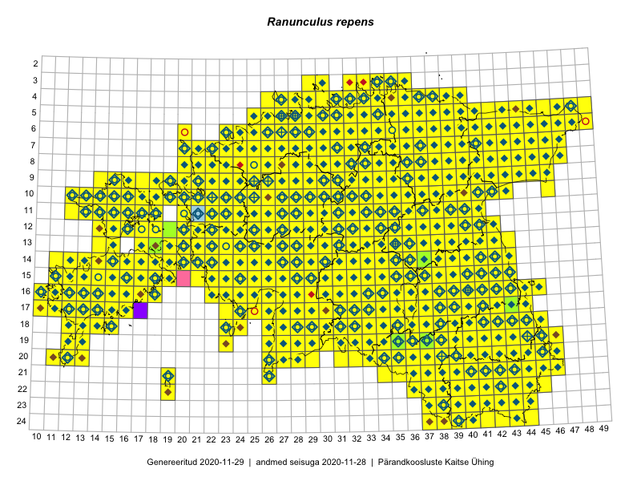

Ranunculus repens — roomav tulikas
Ranunculaceae :: Ranunculus repens L. (3022)

Kaart põhineb 6348 kirjel:
vaatlusi 2857
herbaareksemplare 165
PKÜ kirjeid1 2051
ELFi kirjeid2 1257
LVA kirjeid3 18
Taime kaasaegsed ja ajaloolised leiukohad asuvad 529 ruudus.
Tingmärgid ja leidudega ruutude arvud periooditi uues (u) ja 2005 andmestikus (v)
| █ | vahemik | u4 | v5 |
|---|---|---|---|
| █ | 2006–2020 | 529 | – |
| ◆/◇ | 1971–2005 | 486 | 484 |
| ○ | 1921–1970 | 177 | 6 |
| + | kuni 1920 | 11 | 0 |
| × | hävinud | – | 0 |
| ? | kaheldav | – | 0 |
| Ruut | Leidja(d) | Leiuaeg | Kirje |
|---|---|---|---|
| 17-33 | Meeli Mesipuu | 2020-10-14 | PKÜ: 21100 |
| 21-43 | Toomas Kukk, Kersti Tambets, Sten Mander, Kristine Fenske | 2020-09-30 | ruut/ala: Ranunculus repens L. |
| 14-13 | Mari Reitalu | 2020-09-27 | ruut/ala: Ranunculus repens L. |
| 13-31 | Toivo Sepp | 2020-09-25 | ELF: 14663 |
| 06-34 | Meeli Mesipuu | 2020-09-24 | ruut/ala: Ranunculus repens L. |
| 18-38 | Eerik Leibak | 2020-09-12 | ELF: 10405 |
| 16-17 | Toomas Kukk | 2020-09-11 | PKÜ: 20987 |
| 16-17 | Toomas Kukk | 2020-09-11 | PKÜ: 20988 |
| 16-17 | Peedu Saar | 2020-09-11 | PKÜ: 20931 |
| 16-15 | Ott Luuk, Meeli Mesipuu | 2020-09-11 | PKÜ: 21036 |
| 16-15 | Ott Luuk, Meeli Mesipuu | 2020-09-11 | PKÜ: 21040 |
| 16-17 | Toomas Kukk | 2020-09-10 | ruut/ala: Ranunculus repens L. |
| 16-16 | Toomas Kukk | 2020-09-10 | ruut/ala: Ranunculus repens L. |
| 16-16;16-17 | Toomas Kukk | 2020-09-10 | PKÜ: 20959 |
| 16-17 | Peedu Saar | 2020-09-10 | ruut/ala: Ranunculus repens L. |
| 16-17 | Peedu Saar | 2020-09-10 | PKÜ: 20937 |
| 16-17 | Peedu Saar | 2020-09-10 | PKÜ: 20943 |
| 16-28 | Ott Luuk, Meeli Mesipuu | 2020-09-10 | ruut/ala: Ranunculus repens L. |
| 14-16 | Ott Luuk, Meeli Mesipuu | 2020-09-10 | PKÜ: 20957 |
| 14-16 | Ott Luuk, Meeli Mesipuu | 2020-09-10 | PKÜ: 20958 |
| 09-28 | Toivo Sepp | 2020-09-09 | ELF: 17951 |
| 24-38 | Meeli Mesipuu | 2020-09-08 | PKÜ: 20696 |
| 24-37 | Meeli Mesipuu | 2020-09-07 | PKÜ: 20480 |
| 24-37;24-38 | Meeli Mesipuu | 2020-09-07 | PKÜ: 20482 |
| 24-37;24-38 | Meeli Mesipuu | 2020-09-07 | PKÜ: 20483 |
| 24-37;24-38 | Meeli Mesipuu | 2020-09-07 | PKÜ: 20484 |
| 16-14 | Mari Reitalu, Sirje Azarov | 2020-09-03 | ruut/ala: Ranunculus repens L. |
| 06-25 | Toomas Kukk, Peedu Saar | 2020-09-02 | ruut/ala: Ranunculus repens L. |
| 16-23 | Toomas Kukk | 2020-09-01 | PKÜ: 20991 |
| 16-30 | Meeli Mesipuu, Ott Luuk | 2020-09-01 | PKÜ: 21327 |
| 16-22 | Toomas Kukk | 2020-08-31 | PKÜ: 20712 |
| 16-22 | Peedu Saar | 2020-08-31 | ruut/ala: Ranunculus repens L. |
| 16-22 | Peedu Saar | 2020-08-31 | PKÜ: 20646 |
| 16-22 | Peedu Saar | 2020-08-31 | PKÜ: 20649 |
| 16-22 | Peedu Saar | 2020-08-31 | PKÜ: 20655 |
| 16-22 | Meeli Mesipuu | 2020-08-31 | PKÜ: 21344 |
| 14-22 | Peedu Saar, Toomas Kukk | 2020-08-30 | ruut/ala: Ranunculus repens L. |
| 19-29 | Meeli Mesipuu | 2020-08-28 | punkt: Ranunculus repens L. |
| 19-29 | Meeli Mesipuu | 2020-08-28 | ruut/ala: Ranunculus repens L. |
| 19-29 | Meeli Mesipuu | 2020-08-28 | ruut/ala: Ranunculus repens L. |
| 15-17 | Mari Reitalu, Sirje Azarov | 2020-08-27–2020-09-06 | ruut/ala: Ranunculus repens L. |
| 06-35 | Toomas Kukk, Peedu Saar | 2020-08-27 | ruut/ala: Ranunculus repens L. |
| 06-35 | Toomas Kukk | 2020-08-27 | PKÜ: 21009 |
| 06-34 | Peedu Saar | 2020-08-27 | ruut/ala: Ranunculus repens L. |
| 05-35;06-35 | Peedu Saar | 2020-08-27 | PKÜ: 20914 |
| 04-36 | Peedu Saar, Toomas Kukk | 2020-08-26 | PKÜ: 20911 |
| 05-40 | Peedu Saar, Toomas Kukk | 2020-08-26 | PKÜ: 20913 |
| 07-41 | Meeli Mesipuu | 2020-08-26 | PKÜ: 20413 |
| 07-41 | Meeli Mesipuu | 2020-08-26 | PKÜ: 20414 |
| 10-36 | Peedu Saar | 2020-08-25 | ruut/ala: Ranunculus repens L. |
| 11-37 | Peedu Saar | 2020-08-25 | ruut/ala: Ranunculus repens L. |
| 07-32 | Meeli Mesipuu | 2020-08-23 | PKÜ: 20385 |
| 07-33 | Meeli Mesipuu | 2020-08-23 | PKÜ: 20390 |
| 17-33 | Peedu Saar | 2020-08-21 | ruut/ala: Ranunculus repens L. |
| 17-33;18-33 | Peedu Saar | 2020-08-21 | PKÜ: 20921 |
| 17-33;18-33 | Peedu Saar | 2020-08-21 | PKÜ: 20922 |
| 17-32;17-33 | Peedu Saar | 2020-08-21 | PKÜ: 20929 |
| 18-33 | Ott Luuk, Jaak-Albert Metsoja | 2020-08-21 | ruut/ala: Ranunculus repens L. |
| 14-16 | Mari Reitalu, Sirje Azarov | 2020-08-19–2020-08-20 | ruut/ala: Ranunculus repens L. |
| 11-38 | Peedu Saar | 2020-08-19 | ruut/ala: Ranunculus repens L. |
| 19-36 | Meeli Mesipuu | 2020-08-19 | ruut/ala: Ranunculus repens L. |
| 19-35 | Meeli Mesipuu | 2020-08-19 | ruut/ala: Ranunculus repens L. |
| 17-33;18-33 | Meeli Mesipuu | 2020-08-19 | PKÜ: 20365 |
| 08-43 | Toomas Kukk, Ott Luuk, Kersti Tambets, Sten Mander, Kristine Fenske | 2020-08-18 | ruut/ala: Ranunculus repens L. |
| 07-43 | Toomas Kukk, Ott Luuk, Kersti Tambets, Sten Mander, Kristine Fenske | 2020-08-18 | ruut/ala: Ranunculus repens L. |
| 14-17 | Mari Reitalu, Sirje Azarov | 2020-08-18 | ruut/ala: Ranunculus repens L. |
| 15-35 | Peedu Saar | 2020-08-17 | PKÜ: 20538 |
| 15-35 | Peedu Saar | 2020-08-17 | PKÜ: 20533 |
| 14-16 | Meeli Mesipuu | 2020-08-11 | PKÜ: 20285 |
| 14-16 | Meeli Mesipuu | 2020-08-11 | PKÜ: 20314 |
| 14-16 | Meeli Mesipuu | 2020-08-11 | PKÜ: 20316 |
| 15-35 | Peedu Saar | 2020-08-10–2020-08-17 | ruut/ala: Ranunculus repens L. |
| 15-35 | Peedu Saar | 2020-08-10 | PKÜ: 20564 |
| 15-35 | Peedu Saar | 2020-08-10 | PKÜ: 20569 |
| 15-35 | Peedu Saar | 2020-08-10 | PKÜ: 20572 |
| 15-35 | Peedu Saar | 2020-08-10 | PKÜ: 20573 |
| 16-35 | Peedu Saar | 2020-08-10 | PKÜ: 20578 |
| 15-35 | Peedu Saar | 2020-08-10 | PKÜ: 21109 |
| 14-18 | Meeli Mesipuu | 2020-08-10 | PKÜ: 20271 |
| 14-18 | Meeli Mesipuu | 2020-08-10 | PKÜ: 20276 |
| 07-30 | Eerik Leibak | 2020-08-10 | ELF: 1207 |
| 16-17 | Mari Reitalu, Sirje Azarov | 2020-08-08–2020-08-29 | ruut/ala: Ranunculus repens L. |
| 21-35 | Tiit Hallikma | 2020-08-08 | ELF: 16041 |
| 15-43 | Peedu Saar | 2020-08-08 | ruut/ala: Ranunculus repens L. |
| 12-15 | Ott Luuk, Peedu Saar | 2020-08-07 | PKÜ: 20727 |
| 12-14;12-15 | Ott Luuk, Peedu Saar | 2020-08-07 | PKÜ: 20728 |
| 12-15 | Ott Luuk, Peedu Saar | 2020-08-07 | PKÜ: 20725 |
| 24-42 | Toomas Kukk, Eerik Leibak | 2020-08-06 | ruut/ala: Ranunculus repens L. |
| 11-17 | Peedu Saar | 2020-08-06 | ruut/ala: Ranunculus repens L. |
| 10-13 | Peedu Saar | 2020-08-06 | PKÜ: 20602 |
| 10-17 | Peedu Saar | 2020-08-06 | PKÜ: 20609 |
| 11-17 | Peedu Saar | 2020-08-06 | PKÜ: 20618 |
| 13-15 | Ott Luuk, Peedu Saar | 2020-08-06 | PKÜ: 20721 |
| 13-15 | Ott Luuk, Peedu Saar | 2020-08-06 | PKÜ: 20747 |
| 22-41 | Toomas Kukk, Eerik Leibak | 2020-08-05 | ruut/ala: Ranunculus repens L. |
| 15-35 | Tiit Hallikma | 2020-08-05 | ELF: 1019 |
| 10-23 | Peedu Saar | 2020-08-05 | ruut/ala: Ranunculus repens L. |
| 10-23 | Ott Luuk | 2020-08-05 | ruut/ala: Ranunculus repens L. |
| 17-38 | Jaak Pärtel | 2020-08-05 | punkt: Ranunculus repens L. |
| 07-44 | Toomas Kukk | 2020-07-29 | PKÜ: 21084 |
| 09-45 | Toomas Kukk | 2020-07-29 | PKÜ: 21086 |
| 07-44 | Peedu Saar | 2020-07-29 | PKÜ: 20512 |
| 09-43 | Toomas Kukk | 2020-07-28 | ruut/ala: Ranunculus repens L. |
| 09-42 | Toomas Kukk | 2020-07-28 | PKÜ: 21098 |
| 08-43 | Peedu Saar | 2020-07-28 | ruut/ala: Ranunculus repens L. |
| 13-38 | Peedu Saar | 2020-07-28 | ruut/ala: Ranunculus repens L. |
| 14-38 | Peedu Saar | 2020-07-28 | ruut/ala: Ranunculus repens L. |
| 16-16 | Mari Reitalu, Sirje Azarov, Anne Teigamägi | 2020-07-22 | ruut/ala: Ranunculus repens L. |
| 09-26 | Ott Luuk | 2020-07-21–2020-07-23 | ruut/ala: Ranunculus repens L. |
| 07-24 | Eerik Leibak | 2020-07-18 | ELF: 7806 |
| 16-39 | Toomas Kukk, Peedu Saar, Art Villem Adojaan | 2020-07-15 | ruut/ala: Ranunculus repens L. |
| 19-39 | Meeli Mesipuu | 2020-07-15 | PKÜ: 20177 |
| 19-39 | Meeli Mesipuu | 2020-07-15 | PKÜ: 20178 |
| 19-39 | Meeli Mesipuu | 2020-07-15 | PKÜ: 20180 |
| 20-38 | Jaanus Paal, Taimi Paal | 2020-07-15 | ELF: 552 |
| 20-37 | Jaanus Paal, Taimi Paal | 2020-07-15 | ELF: 22722 |
| 20-45 | Toomas Kukk, Eerik Leibak | 2020-07-07 | ruut/ala: Ranunculus repens L. |
| 20-46 | Toomas Kukk, Eerik Leibak | 2020-07-07 | ruut/ala: Ranunculus repens L. |
| 17-11 | Rein Kalamees, Ott Luuk | 2020-07-03 | PKÜ: 20457 |
| 17-11 | Rein Kalamees, Ott Luuk | 2020-07-03 | PKÜ: 20458 |
| 17-14 | Peedu Saar, Toomas Kukk | 2020-07-03 | ruut/ala: Ranunculus repens L. |
| 17-15 | Peedu Saar | 2020-07-03 | PKÜ: 21195 |
| 17-15 | Peedu Saar | 2020-07-03 | PKÜ: 21196 |
| 17-11 | Meeli Mesipuu | 2020-07-03 | PKÜ: 20184 |
| 19-12 | Toomas Kukk | 2020-07-02 | PKÜ: 20529 |
| 19-12 | Toomas Kukk | 2020-07-02 | PKÜ: 20541 |
| 19-12 | Toomas Kukk | 2020-07-02 | PKÜ: 20542 |
| 20-12 | Peedu Saar | 2020-07-02 | PKÜ: 20549 |
| 17-11 | Ott Luuk, Rein Kalamees | 2020-07-02 | PKÜ: 21172 |
| 17-11 | Ott Luuk, Rein Kalamees | 2020-07-02 | PKÜ: 21175 |
| 17-11 | Meeli Mesipuu | 2020-07-02 | PKÜ: 21277 |
| 17-11 | Toomas Kukk | 2020-07-01 | PKÜ: 20517 |
| 17-11 | Toomas Kukk | 2020-07-01 | PKÜ: 20516 |
| 17-11 | Peedu Saar | 2020-07-01 | PKÜ: 20473 |
| 17-11 | Peedu Saar | 2020-07-01 | PKÜ: 20490 |
| 17-11 | Ott Luuk, Rein Kalamees | 2020-07-01 | PKÜ: 20225 |
| 17-11 | Ott Luuk, Rein Kalamees | 2020-07-01 | PKÜ: 20213 |
| 17-11 | Meeli Mesipuu | 2020-07-01 | PKÜ: 21055 |
| 04-33 | Rein Kalamees | 2020-06-26 | PKÜ: 20235 |
| 04-33 | Rein Kalamees | 2020-06-26 | PKÜ: 20239 |
| 04-33 | Rein Kalamees | 2020-06-22 | PKÜ: 20245 |
| 04-33 | Rein Kalamees | 2020-06-22 | PKÜ: 20246 |
| 04-28 | Ott Luuk | 2020-06-22 | ruut/ala: Ranunculus repens L. |
| 08-28 | Ott Luuk | 2020-06-21 | ruut/ala: Ranunculus repens L. |
| 07-28 | Ott Luuk | 2020-06-21 | ruut/ala: Ranunculus repens L. |
| 12-23 | Ott Luuk, Meeli Mesipuu | 2020-06-18 | PKÜ: 21144 |
| 12-23 | Meeli Mesipuu, Ott Luuk | 2020-06-18 | PKÜ: 21153 |
| 12-23 | Meeli Mesipuu, Ott Luuk | 2020-06-18 | PKÜ: 21156 |
| 12-23 | Meeli Mesipuu | 2020-06-18 | PKÜ: 21157 |
| 11-27 | Peedu Saar | 2020-06-17 | PKÜ: 21216 |
| 11-25 | Peedu Saar | 2020-06-17 | PKÜ: 21225 |
| 11-22;12-22 | Ott Luuk, Meeli Mesipuu | 2020-06-17 | PKÜ: 20865 |
| 11-22 | Meeli Mesipuu, Ott Luuk | 2020-06-17 | PKÜ: 21119 |
| 10-21 | Meeli Mesipuu, Ott Luuk | 2020-06-17 | PKÜ: 21123 |
| 09-21 | Peedu Saar | 2020-06-16 | PKÜ: 20427 |
| 10-21 | Meeli Mesipuu, Ott Luuk | 2020-06-16 | PKÜ: 21124 |
| 12-22 | Meeli Mesipuu | 2020-06-16 | PKÜ: 21143 |
| 07-28 | Toomas Kukk | 2020-06-15 | PKÜ: 20489 |
| 10-30 | Ott Luuk, Peedu Saar | 2020-06-15 | PKÜ: 20408 |
| 11-32 | Ott Luuk, Peedu Saar | 2020-06-15 | PKÜ: 20415 |
| 11-32 | Ott Luuk, Peedu Saar | 2020-06-15 | PKÜ: 20416 |
| 13-31 | Meeli Mesipuu | 2020-06-15 | PKÜ: 21138 |
| 17-38 | Jaak Pärtel | 2020-06-15 | punkt: Ranunculus repens L. |
| 16-40 | Külli Kalamees | 2020-06-14 | punkt: Ranunculus repens L. |
| 05-31 | Rein Kalamees | 2020-06-13 | ruut/ala: Ranunculus repens L. |
| 17-38 | Jaak Pärtel | 2020-06-13 | punkt: Ranunculus repens L. |
| 17-38 | Jaak Pärtel | 2020-06-13 | punkt: Ranunculus repens L. |
| 17-38 | Jaak Pärtel | 2020-06-13 | punkt: Ranunculus repens L. |
| 04-32 | Peedu Saar, Ene Kook | 2020-06-11 | ruut/ala: Ranunculus repens L. |
| 05-32 | Ene Kook, Peedu Saar | 2020-06-11 | PKÜ: 20372 |
| 04-32 | Ene Kook | 2020-06-11 | PKÜ: 20376 |
| 03-33 | Toomas Kukk, Meeli Mesipuu | 2020-06-10 | ruut/ala: Ranunculus repens L. |
| 05-34 | Rein Kalamees, Ott Luuk | 2020-06-10 | PKÜ: 20666 |
| 05-34 | Rein Kalamees, Ott Luuk | 2020-06-10 | PKÜ: 20643 |
| 04-34 | Peedu Saar, Ene Kook | 2020-06-10 | PKÜ: 20350 |
| 04-33 | Peedu Saar | 2020-06-10 | PKÜ: 20354 |
| 04-33 | Peedu Saar | 2020-06-10 | PKÜ: 20360 |
| 03-33 | Meeli Mesipuu, Toomas Kukk | 2020-06-10 | PKÜ: 20805 |
| 03-33 | Meeli Mesipuu, Toomas Kukk | 2020-06-10 | PKÜ: 20804 |
| 03-34 | Ene Kook | 2020-06-10 | PKÜ: 20347 |
| 03-34 | Peedu Saar | 2020-06-09 | PKÜ: 20332 |
| 04-33;04-34 | Meeli Mesipuu, Toomas Kukk | 2020-06-09 | PKÜ: 20811 |
| 04-33 | Meeli Mesipuu, Toomas Kukk | 2020-06-09 | PKÜ: 20816 |
| 04-33 | Meeli Mesipuu, Toomas Kukk | 2020-06-09 | PKÜ: 20820 |
| 04-33 | Meeli Mesipuu, Toomas Kukk | 2020-06-09 | PKÜ: 21051 |
| 03-34 | Ene Kook | 2020-06-09 | PKÜ: 20338 |
| 08-36 | Toomas Kukk, Meeli Mesipuu | 2020-06-08 | ruut/ala: Ranunculus repens L. |
| 07-37 | Toomas Kukk, Meeli Mesipuu | 2020-06-08 | ruut/ala: Ranunculus repens L. |
| 07-36 | Toomas Kukk, Meeli Mesipuu | 2020-06-08 | ruut/ala: Ranunculus repens L. |
| 07-36 | Toomas Kukk, Meeli Mesipuu | 2020-06-08 | PKÜ: 20787 |
| 08-36 | Toomas Kukk, Meeli Mesipuu | 2020-06-08 | PKÜ: 20790 |
| 07-37 | Toomas Kukk, Meeli Mesipuu | 2020-06-08 | PKÜ: 20791 |
| 03-34 | Peedu Saar | 2020-06-08 | PKÜ: 20298 |
| 05-34 | Ott Luuk, Rein Kalamees | 2020-06-08 | PKÜ: 20280 |
| 05-34 | Ott Luuk, Rein Kalamees | 2020-06-08 | PKÜ: 20281 |
| 04-36 | Tiina Reintal | 2020-06-07 | punkt: Ranunculus repens L. |
| 16-40 | Jelle Devalez | 2020-06-07 | punkt: Ranunculus repens L. |
| 16-40 | Jelle Devalez | 2020-06-07 | punkt: Ranunculus repens L. |
| 11-24 | Jane Pärnalaas | 2020-06-07 | punkt: Ranunculus repens L. |
| 16-40 | Villu Soon | 2020-06-06 | punkt: Ranunculus repens L. |
| 13-37 | Ulvi Selgis, Enn Selgis | 2020-06-06 | punkt: Ranunculus repens L. |
| 19-35 | Tõnis Lukas | 2020-06-06 | punkt: Ranunculus repens L. |
| 19-35 | Tõnis Lukas | 2020-06-06 | punkt: Ranunculus repens L. |
| 16-40 | Triin Nõu | 2020-06-06 | punkt: Ranunculus repens L. |
| 10-28 | Terje Villems | 2020-06-06 | punkt: Ranunculus repens L. |
| 10-27 | Monika Laurits-Arro | 2020-06-06 | punkt: Ranunculus repens L. |
| 10-27 | Monika Laurits-Arro | 2020-06-06 | punkt: Ranunculus repens L. |
| 19-35 | Martin Jürgenson, Linda-Liisa Veromann-Jürgenson, Magda Kõljalg, Valev Vahter | 2020-06-06 | punkt: Ranunculus repens L. |
| 22-43 | Margus Ots, Karin Pai, Margit Hirv, Marko Mägi, Kadi Külm, Kuido Külm, Ekke Rikka, Sigrid Ots, Triin Karusaar, Veljo Runnel, Uku Laur Pai | 2020-06-06 | punkt: Ranunculus repens L. |
| 10-28 | Kalev Tihkan | 2020-06-06 | punkt: Ranunculus repens L. |
| 08-31 | Kaarel Võhandu, Riinu Rannap | 2020-06-06 | punkt: Ranunculus repens L. |
| 09-26 | Hele Möllits | 2020-06-06 | punkt: Ranunculus repens L. |
| 19-33 | Heidi Öövel, Mihkel Tiido | 2020-06-06 | punkt: Ranunculus repens L. |
| 16-40 | Eva-Liisa Orula | 2020-06-06 | punkt: Ranunculus repens L. |
| 19-42 | Elis Sepp | 2020-06-06 | punkt: Ranunculus repens L. |
| 19-42 | Elis Sepp | 2020-06-06 | punkt: Ranunculus repens L. |
| 08-39 | Elen Laine | 2020-06-06 | punkt: Ranunculus repens L. |
| 16-40 | Thea Kull | 2020-05-29–2020-07-03 | ruut/ala: Ranunculus repens L. |
| 12-18 | Toomas Kukk, Ott Luuk, Peeter Pärn | 2020-05-29–2020-05-31 | ruut/ala: Ranunculus repens L. |
| 17-15 | Mari Reitalu, Sirje Azarov, Triin Reitalu | 2020-05-28 | ruut/ala: Ranunculus repens L. |
| 17-14 | Mari Reitalu, Triin Reitalu, Sirje Azarov | 2020-05-26 | ruut/ala: Ranunculus repens L. |
| 11-17 | Toomas Kukk, Rein Kalamees | 2019-10-05 | ruut/ala: Ranunculus repens L. |
| 16-13 | Mari Reitalu | 2019-09-30 | ruut/ala: Ranunculus repens L. |
| 09-45 | Ott Luuk | 2019-09-27 | ruut/ala: Ranunculus repens L. |
| 19-44 | Meeli Mesipuu | 2019-09-27 | punkt: Ranunculus repens L. |
| 19-42 | Meeli Mesipuu | 2019-09-26 | punkt: Ranunculus repens L. |
| 16-13 | Mari Reitalu, Sirje Azarov | 2019-09-26 | ruut/ala: Ranunculus repens L. |
| 16-13;16-14 | Mari Reitalu, Sirje Azarov | 2019-09-26 | ELF: 81 |
| 11-32 | Indrek Tammekänd | 2019-09-22 | ruut/ala: Ranunculus repens L. |
| 17-13 | Mari Reitalu, Triin Reitalu | 2019-09-20 | ruut/ala: Ranunculus repens L. |
| 10-22 | Toomas Kukk, Peedu Saar | 2019-09-19 | ruut/ala: Ranunculus repens L. |
| 10-21 | Ott Luuk | 2019-09-19 | ruut/ala: Ranunculus repens L. |
| 07-28 | Eerik Leibak | 2019-09-19 | ELF: 1990 |
| 10-19 | Peedu Saar, Toomas Kukk | 2019-09-18 | ruut/ala: Ranunculus repens L. |
| 10-20 | Ott Luuk | 2019-09-18 | ruut/ala: Ranunculus repens L. |
| 09-20 | Ott Luuk | 2019-09-18 | ruut/ala: Ranunculus repens L. |
| 09-19 | Toomas Kukk, Peedu Saar | 2019-09-17 | ruut/ala: Ranunculus repens L. |
| 10-18 | Ott Luuk | 2019-09-17 | ruut/ala: Ranunculus repens L. |
| 09-18 | Ott Luuk | 2019-09-17 | ruut/ala: Ranunculus repens L. |
| 08-45 | Toomas Kukk, Thea Kull | 2019-09-12 | ruut/ala: Ranunculus repens L. |
| 07-45 | Thea Kull, Toomas Kukk | 2019-09-12 | ruut/ala: Ranunculus repens L. |
| 05-48 | Peedu Saar, Timo Luhamäe | 2019-09-12 | ruut/ala: Ranunculus repens L. |
| 05-47 | Peedu Saar, Timo Luhamäe | 2019-09-12 | ruut/ala: Ranunculus repens L. |
| 06-46 | Toomas Kukk, Thea Kull | 2019-09-11 | ruut/ala: Ranunculus repens L. |
| 05-46 | Thea Kull, Toomas Kukk | 2019-09-11 | ruut/ala: Ranunculus repens L. |
| 09-46 | Peedu Saar, Timo Luhamäe | 2019-09-11 | ruut/ala: Ranunculus repens L. |
| 06-44 | Ott Luuk, Meeli Mesipuu | 2019-09-11 | ruut/ala: Ranunculus repens L. |
| 05-44 | Meeli Mesipuu, Ott Luuk | 2019-09-11 | ruut/ala: Ranunculus repens L. |
| 10-39 | Toomas Kukk, Thea Kull | 2019-09-10 | ruut/ala: Ranunculus repens L. |
| 10-40 | Toomas Kukk, Thea Kull | 2019-09-10 | ruut/ala: Ranunculus repens L. |
| 08-41 | Peedu Saar, Timo Luhamäe | 2019-09-10 | ruut/ala: Ranunculus repens L. |
| 09-41 | Peedu Saar, Timo Luhamäe | 2019-09-10 | ruut/ala: Ranunculus repens L. |
| 08-43 | Ott Luuk, Meeli Mesipuu | 2019-09-10 | ruut/ala: Ranunculus repens L. |
| 08-25 | Ott Luuk, Peedu Saar | 2019-09-05 | ruut/ala: Ranunculus repens L. |
| 09-22 | Ott Luuk | 2019-09-03–2019-09-04 | ruut/ala: Ranunculus repens L. |
| 09-23 | Ott Luuk | 2019-09-03 | ruut/ala: Ranunculus repens L. |
| 16-13 | Mari Reitalu, Triin Reitalu | 2019-09-03 | ruut/ala: Ranunculus repens L. |
| 05-26 | Ott Luuk, Peedu Saar | 2019-09-02 | ruut/ala: Ranunculus repens L. |
| 08-30 | Ott Luuk, Toivo Sepp | 2019-08-30 | ruut/ala: Ranunculus repens L. |
| 15-28 | Toomas Kukk, Peedu Saar | 2019-08-29 | ruut/ala: Ranunculus repens L. |
| 15-29 | Peedu Saar, Toomas Kukk | 2019-08-29 | ruut/ala: Ranunculus repens L. |
| 13-32 | Ott Luuk, Eerik Leibak | 2019-08-29 | ruut/ala: Ranunculus repens L. |
| 13-31 | Ott Luuk, Eerik Leibak | 2019-08-29 | ruut/ala: Ranunculus repens L. |
| 12-31 | Ott Luuk, Eerik Leibak | 2019-08-29 | ruut/ala: Ranunculus repens L. |
| 14-32 | Meeli Mesipuu, Timo Luhamäe | 2019-08-29 | ruut/ala: Ranunculus repens L. |
| 16-32 | Mari Reitalu, Thea Kull, Martin Tikk | 2019-08-29 | ruut/ala: Ranunculus repens L. |
| 16-31 | Toomas Kukk, Peedu Saar, Martin Tikk | 2019-08-28 | ruut/ala: Ranunculus repens L. |
| 16-30 | Peedu Saar, Martin Tikk, Toomas Kukk | 2019-08-28 | ruut/ala: Ranunculus repens L. |
| 14-31 | Ott Luuk, Eerik Leibak | 2019-08-28 | ruut/ala: Ranunculus repens L. |
| 15-30 | Meeli Mesipuu, Timo Luhamäe | 2019-08-28 | ruut/ala: Ranunculus repens L. |
| 13-30 | Mari Reitalu, Thea Kull | 2019-08-28 | ruut/ala: Ranunculus repens L. |
| 17-32 | Peedu Saar, Martin Tikk, Toomas Kukk | 2019-08-27 | ruut/ala: Ranunculus repens L. |
| 13-36 | Ott Luuk, Eerik Leibak | 2019-08-27 | ruut/ala: Ranunculus repens L. |
| 12-36 | Ott Luuk, Eerik Leibak | 2019-08-27 | ruut/ala: Ranunculus repens L. |
| 12-35 | Ott Luuk, Eerik Leibak | 2019-08-27 | ruut/ala: Ranunculus repens L. |
| 12-34 | Ott Luuk, Eerik Leibak | 2019-08-27 | ruut/ala: Ranunculus repens L. |
| 15-35 | Meeli Mesipuu, Timo Luhamäe | 2019-08-27 | ruut/ala: Ranunculus repens L. |
| 16-33 | Mari Reitalu, Thea Kull | 2019-08-27 | ruut/ala: Ranunculus repens L. |
| 16-32 | Mari Reitalu, Thea Kull | 2019-08-27 | ruut/ala: Ranunculus repens L. |
| 10-22 | Tõnu Ploompuu | 2019-08-21 | ELF: 281 |
| 18-43 | Peedu Saar, Ott Luuk | 2019-08-21 | ruut/ala: Ranunculus repens L. |
| 10-22 | Tõnu Ploompuu | 2019-08-20 | ELF: 2170 |
| 16-42 | Kaili Kattai | 2019-08-19 | punkt: Ranunculus repens L. |
| 10-26 | Thea Kull | 2019-08-17 | ruut/ala: Ranunculus repens L. |
| 10-26 | Thea Kull | 2019-08-17 | ELF: 20159 |
| 09-24 | Peedu Saar | 2019-08-17 | ELF: 267 |
| 09-22 | Peedu Saar | 2019-08-16 | ruut/ala: Ranunculus repens L. |
| 16-12 | Sirje Azarov, Mari Reitalu | 2019-08-09 | ELF: 53 |
| 09-40 | Rein Kalamees, Toomas Kukk | 2019-08-09 | ruut/ala: Ranunculus repens L. |
| 08-39 | Rein Kalamees, Toomas Kukk | 2019-08-08 | ruut/ala: Ranunculus repens L. |
| 09-39 | Rein Kalamees, Toomas Kukk | 2019-08-08 | ruut/ala: Ranunculus repens L. |
| 08-33 | Ott Luuk, Jaak-Albert Metsoja | 2019-08-08 | ruut/ala: Ranunculus repens L. |
| 06-35 | Toomas Kukk, Rein Kalamees, Kaur Maran | 2019-08-07 | ruut/ala: Ranunculus repens L. |
| 07-34 | Toomas Kukk, Rein Kalamees, Kaur Maran | 2019-08-07 | ruut/ala: Ranunculus repens L. |
| 06-36 | Peedu Saar, Timo Luhamäe | 2019-08-07 | ruut/ala: Ranunculus repens L. |
| 05-35 | Peedu Saar, Timo Luhamäe | 2019-08-07 | ruut/ala: Ranunculus repens L. |
| 04-36 | Meeli Mesipuu | 2019-08-06–2019-08-07 | ruut/ala: Ranunculus repens L. |
| 03-34 | Rein Kalamees, Toomas Kukk | 2019-08-06 | ruut/ala: Ranunculus repens L. |
| 04-34 | Rein Kalamees, Toomas Kukk | 2019-08-06 | ruut/ala: Ranunculus repens L. |
| 04-30 | Peedu Saar, Timo Luhamäe | 2019-08-06 | ruut/ala: Ranunculus repens L. |
| 05-38 | Ott Luuk, Jaak-Albert Metsoja | 2019-08-06 | ruut/ala: Ranunculus repens L. |
| 04-38 | Ott Luuk, Jaak-Albert Metsoja | 2019-08-06 | ruut/ala: Ranunculus repens L. |
| 06-32 | Toomas Kukk, Rein Kalamees | 2019-08-05 | ruut/ala: Ranunculus repens L. |
| 05-32 | Rein Kalamees, Toomas Kukk | 2019-08-05 | ruut/ala: Ranunculus repens L. |
| 04-32 | Rein Kalamees, Toomas Kukk | 2019-08-05 | ruut/ala: Ranunculus repens L. |
| 07-31 | Peedu Saar, Timo Luhamäe | 2019-08-05 | ruut/ala: Ranunculus repens L. |
| 08-36 | Ott Luuk, Jaak-Albert Metsoja | 2019-08-05 | ruut/ala: Ranunculus repens L. |
| 06-38 | Meeli Mesipuu | 2019-08-05 | ruut/ala: Ranunculus repens L. |
| 17-15 | Sirje Azarov | 2019-08-04 | ELF: 94 |
| 17-15 | Sirje Azarov | 2019-08-04 | ELF: 9956 |
| 04-27 | Ott Luuk | 2019-08-02 | ruut/ala: Ranunculus repens L. |
| 10-33 | Ott Luuk | 2019-07-31 | ruut/ala: Ranunculus repens L. |
| 10-32 | Ott Luuk | 2019-07-31 | ruut/ala: Ranunculus repens L. |
| 07-47 | Thea Kull | 2019-07-28 | punkt: Ranunculus repens L. |
| 14-38 | Thea Kull | 2019-07-27 | punkt: Ranunculus repens L. |
| 09-31 | Ott Luuk, Toivo Sepp | 2019-07-25 | ruut/ala: Ranunculus repens L. |
| 11-30 | Ott Luuk, Toivo Sepp | 2019-07-23 | ruut/ala: Ranunculus repens L. |
| 17-38 | Meeli Mesipuu | 2019-07-23 | ruut/ala: Ranunculus repens L. |
| 11-22 | Tõnu Ploompuu, Eliko Kõiv | 2019-07-21 | ELF: 231 |
| 17-13 | Sirje Azarov, Mari Reitalu | 2019-07-18 | ELF: 5311 |
| 19-36 | Ott Luuk, Peedu Saar | 2019-07-16 | ruut/ala: Ranunculus repens L. |
| 17-12 | Mari Reitalu | 2019-07-14 | ELF: 24782 |
| 23-41 | Toomas Kukk, Indrek Tammekänd | 2019-07-12 | ruut/ala: Ranunculus repens L. |
| 23-42 | Toomas Kukk, Indrek Tammekänd | 2019-07-12 | ruut/ala: Ranunculus repens L. |
| 24-37 | Peedu Saar, Timo Luhamäe | 2019-07-12 | ruut/ala: Ranunculus repens L. |
| 22-44 | Ott Luuk, Tiit Hallikma | 2019-07-12 | ruut/ala: Ranunculus repens L. |
| 19-40 | Meeli Mesipuu | 2019-07-12 | ruut/ala: Ranunculus repens L. |
| 22-40 | Toomas Kukk, Indrek Tammekänd | 2019-07-11 | ruut/ala: Ranunculus repens L. |
| 23-37 | Peedu Saar, Timo Luhamäe | 2019-07-11 | ruut/ala: Ranunculus repens L. |
| 23-44 | Ott Luuk, Tiit Hallikma | 2019-07-11 | ruut/ala: Ranunculus repens L. |
| 24-43 | Ott Luuk, Tiit Hallikma | 2019-07-11 | ruut/ala: Ranunculus repens L. |
| 19-41 | Meeli Mesipuu | 2019-07-11 | ruut/ala: Ranunculus repens L. |
| 21-41 | Toomas Kukk, Indrek Tammekänd | 2019-07-10 | ruut/ala: Ranunculus repens L. |
| 20-45 | Ott Luuk, Tiit Hallikma | 2019-07-10 | ruut/ala: Ranunculus repens L. |
| 18-41 | Meeli Mesipuu | 2019-07-10 | ruut/ala: Ranunculus repens L. |
| 17-11 | Mari Reitalu, Sirje Azarov | 2019-07-10 | ELF: 9983 |
| 20-41 | Toomas Kukk, Indrek Tammekänd | 2019-07-09 | ruut/ala: Ranunculus repens L. |
| 18-42 | Thea Kull, Meeli Mesipuu | 2019-07-09 | ruut/ala: Ranunculus repens L. |
| 20-43 | Ott Luuk, Tiit Hallikma | 2019-07-09 | ruut/ala: Ranunculus repens L. |
| 20-44 | Ott Luuk, Tiit Hallikma | 2019-07-09 | ruut/ala: Ranunculus repens L. |
| 11-36 | Jaanus Paal, Elo Raspel | 2019-07-05 | ELF: 24712 |
| 11-13 | Toomas Kukk | 2019-07-04 | ruut/ala: Ranunculus repens L. |
| 08-41 | Ott Luuk, Peedu Saar | 2019-07-04 | ruut/ala: Ranunculus repens L. |
| 08-37 | Jaanus Paal | 2019-07-04 | ELF: 749 |
| 12-15 | Eerik Leibak, Toomas Kukk | 2019-07-04 | ruut/ala: Ranunculus repens L. |
| 14-39 | Ott Luuk, Kaili Kattai | 2019-07-03 | ruut/ala: Ranunculus repens L. |
| 11-15 | Toomas Kukk | 2019-07-02 | ruut/ala: Ranunculus repens L. |
| 05-28 | Meeli Mesipuu | 2019-06-30 | ruut/ala: Ranunculus repens L. |
| 16-27 | Indrek Tammekänd | 2019-06-27 | ruut/ala: Ranunculus repens L. |
| 05-27 | Meeli Mesipuu | 2019-06-26 | ruut/ala: Ranunculus repens L. |
| 05-28 | Meeli Mesipuu | 2019-06-26 | ruut/ala: Ranunculus repens L. |
| 05-27 | Meeli Mesipuu | 2019-06-22 | ruut/ala: Ranunculus repens L. |
| 18-38 | Meeli Mesipuu | 2019-06-20 | ruut/ala: Ranunculus repens L. |
| 14-11 | Mari Reitalu | 2019-06-20 | ruut/ala: Ranunculus repens L. |
| 14-11 | Mari Reitalu | 2019-06-20 | ELF: 2894 |
| 17-40 | Meeli Mesipuu | 2019-06-19 | ruut/ala: Ranunculus repens L. |
| 19-41 | Merje Malkki | 2019-06-17 | punkt: Ranunculus repens L. |
| 05-27 | Meeli Mesipuu | 2019-06-16 | ruut/ala: Ranunculus repens L. |
| 19-35 | Siiri Kõljalg | 2019-06-15 | punkt: Ranunculus repens L. |
| 19-42 | Elis Sepp | 2019-06-15 | punkt: Ranunculus repens L. |
| 16-30 | Dagmar Hoder | 2019-06-15 | punkt: Ranunculus repens L. |
| 17-40 | Margus Ots, Ekke Rikka, Sigrid Ots, Meelis Pärtel, Kadri Pärtel, Jaak Pärtel, Leene Pärtel, Karin Pai, Marko Mägi | 2019-06-14–2019-06-15 | punkt: Ranunculus repens L. |
| 09-43 | Veronika Plotnikova, Anne-Ly Fersel | 2019-06-14 | punkt: Ranunculus repens L. |
| 04-36 | Tiina Reintal | 2019-06-14 | punkt: Ranunculus repens L. |
| 16-40 | Thea Kull | 2019-06-14 | ruut/ala: Ranunculus repens L. |
| 16-27 | Indrek Tammekänd, Liine Tammekänd | 2019-06-14 | punkt: Ranunculus repens L. |
| 22-39 | Helen Kivisild | 2019-06-14 | punkt: Ranunculus repens L. |
| 22-39 | Helen Kivisild | 2019-06-14 | punkt: Ranunculus repens L. |
| 16-40 | Aivi Kasik, Martin Tikk, Thea Kull, Weralda Lakeman | 2019-06-14 | punkt: Ranunculus repens L. |
| 16-40 | Aivi Kasik, Martin Tikk | 2019-06-14 | punkt: Ranunculus repens L. |
| 10-28 | Aat Sarv, Ott Luuk | 2019-06-14 | punkt: Ranunculus repens L. |
| 05-28 | Thea Kull | 2019-06-13 | ruut/ala: Ranunculus repens L. |
| 05-29 | Thea Kull | 2019-06-12 | ruut/ala: Ranunculus repens L. |
| 05-29 | Thea Kull | 2019-06-12 | ruut/ala: Ranunculus repens L. |
| 08-37 | Ott Luuk, Peedu Saar | 2019-06-12 | ruut/ala: Ranunculus repens L. |
| 05-26 | Marika Arro, Triin Edovald, Herdis Fridolin, Nele Jõessar, Timo Kark, Lauri Klein, Merit Otsus, Kristin Pille, Reigo Roasto, Kaire Sirel | 2019-06-12 | LVA: -568421712 |
| 05-33 | Ott Luuk, Peedu Saar | 2019-06-11 | ruut/ala: Ranunculus repens L. |
| 10-37 | Peedu Saar, Ott Luuk | 2019-06-10 | ruut/ala: Ranunculus repens L. |
| 11-37 | Ott Luuk, Peedu Saar | 2019-06-10 | ruut/ala: Ranunculus repens L. |
| 17-30 | Indrek Tammekänd | 2019-06-10 | ruut/ala: Ranunculus repens L. |
| 19-35 | Siiri Kõljalg | 2019-06-08 | HSSK20047: Ranunculus repens L. |
| 16-43 | Peedu Saar | 2019-06-07 | ruut/ala: Ranunculus repens L. |
| 17-43 | Peedu Saar | 2019-06-07 | ruut/ala: Ranunculus repens L. |
| 16-45 | Ott Luuk | 2019-06-07 | ruut/ala: Ranunculus repens L. |
| 15-26 | Indrek Tammekänd | 2019-06-05 | ruut/ala: Ranunculus repens L. |
| 17-15 | Meeli Mesipuu | 2019-06-04 | ruut/ala: Ranunculus repens L. |
| 10-16 | Toomas Kukk, Indrek Tammekänd | 2019-06-03 | ruut/ala: Ranunculus repens L. |
| 15-18 | Meeli Mesipuu | 2019-06-03 | ruut/ala: Ranunculus repens L. |
| 10-13 | Toomas Kukk, Indrek Tammekänd | 2019-06-02 | ruut/ala: Ranunculus repens L. |
| 10-14 | Toomas Kukk, Indrek Tammekänd | 2019-06-02 | ruut/ala: Ranunculus repens L. |
| 12-18 | Toomas Kukk, Indrek Tammekänd, Peeter Pärn | 2019-06-01 | ruut/ala: Ranunculus repens L. |
| 12-17 | Toomas Kukk, Indrek Tammekänd | 2019-06-01 | ruut/ala: Ranunculus repens L. |
| 12-18 | Toomas Kukk, Indrek Tammekänd | 2019-06-01 | ruut/ala: Ranunculus repens L. |
| 11-18 | Toomas Kukk, Indrek Tammekänd | 2019-06-01 | ruut/ala: Ranunculus repens L. |
| 12-18 | Toomas Kukk | 2019-06-01 | ruut/ala: Ranunculus repens L. |
| 14-21 | Meeli Mesipuu | 2019-05-31 | ruut/ala: Ranunculus repens L. |
| 15-40 | Ott Luuk, Thea Kull, Meeli Mesipuu | 2019-05-30 | ruut/ala: Ranunculus repens L. |
| 15-40 | Ott Luuk, Thea Kull, Meeli Mesipuu | 2019-05-30 | ruut/ala: Ranunculus repens L. |
| 16-28 | Indrek Tammekänd | 2019-05-29–2019-08-23 | ruut/ala: Ranunculus repens L. |
| 14-14 | Toomas Kukk, Peedu Saar, Ott Luuk | 2019-05-15 | punkt: Ranunculus repens L. |
| 16-33 | Ott Luuk, Peedu Saar, Toomas Kukk | 2019-05-13 | ruut/ala: Ranunculus repens L. |
| 19-38 | Ott Luuk, Meeli Mesipuu | 2019-05-09 | ruut/ala: Ranunculus repens L. |
| 19-39 | Ott Luuk, Meeli Mesipuu | 2019-05-09 | ruut/ala: Ranunculus repens L. |
| 21-42 | Ott Luuk, Meeli Mesipuu | 2019-05-09 | ruut/ala: Ranunculus repens L. |
| 14-38 | Ott Luuk, Meeli Mesipuu | 2019-05-02 | punkt: Ranunculus repens L. |
| 15-17 | Mari Reitalu, Sirje Azarov, Triin Reitalu | 2019-05-01 | ruut/ala: Ranunculus repens L. |
| 17-15 | Mari Reitalu, Sirje Azarov | 2019-04-23 | ruut/ala: Ranunculus repens L. |
| 05-29 | Ksenia Filippova | 2019-04-21 | LVA: -1528163280 |
| 17-24 | Peedu Saar | 2018-09-20 | ruut/ala: Ranunculus repens L. |
| 12-37 | Ott Luuk, Meeli Mesipuu | 2018-09-20 | ruut/ala: Ranunculus repens L. |
| 14-20 | Toomas Kukk | 2018-09-19 | ruut/ala: Ranunculus repens L. |
| 14-20 | Peedu Saar | 2018-09-19 | ruut/ala: Ranunculus repens L. |
| 15-42 | Ott Luuk, Meeli Mesipuu | 2018-09-19 | ruut/ala: Ranunculus repens L. |
| 17-43 | Ott Luuk, Meeli Mesipuu | 2018-09-19 | ruut/ala: Ranunculus repens L. |
| 15-22 | Toomas Kukk, Peedu Saar, Heikki Luhamaa | 2018-09-18 | ruut/ala: Ranunculus repens L. |
| 12-18 | Toomas Kukk, Peeter Pärn | 2018-09-15 | ruut/ala: Ranunculus repens L. |
| 10-25 | Tõnu Ploompuu, Marko Vainu | 2018-09-07 | ELF: 24608 |
| 04-28 | Ott Luuk | 2018-09-07 | ruut/ala: Ranunculus repens L. |
| 17-43 | Peedu Saar | 2018-09-05 | ruut/ala: Ranunculus repens L. |
| 06-49 | Peedu Saar, Toomas Kukk | 2018-09-04 | ruut/ala: Ranunculus repens L. |
| 05-47 | Peedu Saar, Toomas Kukk | 2018-09-04 | punkt: Ranunculus repens L. |
| 05-41 | Peedu Saar, Toomas Kukk | 2018-09-03 | ruut/ala: Ranunculus repens L. |
| 13-24 | Indrek Tammekänd | 2018-09-02 | ELF: 2313 |
| 16-16 | Toomas Kukk, Tiit Hallikma | 2018-08-30 | ruut/ala: Ranunculus repens L. |
| 12-19 | Toomas Kukk, Tiit Hallikma | 2018-08-30 | ruut/ala: Ranunculus repens L. |
| 10-32 | Ott Luuk | 2018-08-28 | ruut/ala: Ranunculus repens L. |
| 10-31 | Ott Luuk | 2018-08-28 | ruut/ala: Ranunculus repens L. |
| 10-30 | Ott Luuk, Toivo Sepp | 2018-08-27 | ruut/ala: Ranunculus repens L. |
| 11-28 | Ott Luuk, Toivo Sepp | 2018-08-24 | ELF: 20721 |
| 14-38 | Peedu Saar | 2018-08-23 | ruut/ala: Ranunculus repens L. |
| 14-37 | Peedu Saar | 2018-08-23 | ruut/ala: Ranunculus repens L. |
| 14-37 | Peedu Saar | 2018-08-23 | ruut/ala: Ranunculus repens L. |
| 11-31 | Ott Luuk | 2018-08-23 | ruut/ala: Ranunculus repens L. |
| 10-22 | Tõnu Ploompuu, Laura Paju | 2018-08-22 | ELF: 203 |
| 12-32 | Ott Luuk, Toivo Sepp | 2018-08-22 | ruut/ala: Ranunculus repens L. |
| 16-17 | Mari Reitalu, Sirje Azarov | 2018-08-22 | ELF: 103 |
| 22-43 | Eerik Leibak | 2018-08-22 | ELF: 19340 |
| 13-21 | Indrek Tammekänd | 2018-08-21 | ELF: 24583 |
| 07-47 | Meeli Mesipuu | 2018-08-18 | ruut/ala: Ranunculus repens L. |
| 10-27 | Peedu Saar, Toomas Kukk, Ott Luuk, Kersti Tambets, Sten Mander | 2018-08-16 | ruut/ala: Ranunculus repens L. |
| 11-29 | Peedu Saar, Toomas Kukk, Ott Luuk, Kersti Tambets, Sten Mander | 2018-08-16 | ruut/ala: Ranunculus repens L. |
| 10-22 | Tõnu Ploompuu | 2018-08-14 | ELF: 24598 |
| 17-31 | Peedu Saar, Polina Degtjarenko | 2018-08-14 | ruut/ala: Ranunculus repens L. |
| 05-48 | Vello Keppart | 2018-08-10 | punkt: Ranunculus repens L. |
| 05-48 | Vello Keppart | 2018-08-10 | punkt: Ranunculus repens L. |
| 05-45 | Indrek Tammekänd | 2018-08-10 | ruut/ala: Ranunculus repens L. |
| 04-33 | Peedu Saar, Toomas Kukk | 2018-08-08 | ruut/ala: Ranunculus repens L. |
| 04-34 | Peedu Saar, Toomas Kukk | 2018-08-08 | ruut/ala: Ranunculus repens L. |
| 03-34 | Peedu Saar, Toomas Kukk | 2018-08-08 | ruut/ala: Ranunculus repens L. |
| 07-28 | Peedu Saar, Toomas Kukk | 2018-08-07 | ruut/ala: Ranunculus repens L. |
| 14-16;14-17 | Mari Reitalu, Sirje Azarov | 2018-08-07 | ELF: 2585 |
| 14-14 | Mari Reitalu, Sirje Azarov | 2018-08-07 | ELF: 24665 |
| 16-43 | Peedu Saar | 2018-08-06 | ruut/ala: Ranunculus repens L. |
| 16-14 | Mari Reitalu, Sirje Azarov | 2018-08-06 | ELF: 92 |
| 17-15 | Mari Reitalu, Sirje Azarov | 2018-08-06 | ELF: 24664 |
| 07-25 | Eerik Leibak | 2018-08-06 | ELF: 24512 |
| 17-33 | Peedu Saar | 2018-08-03 | ruut/ala: Ranunculus repens L. |
| 18-34 | Peedu Saar | 2018-08-01 | ruut/ala: Ranunculus repens L. |
| 18-34 | Peedu Saar | 2018-08-01 | ELF: 18320 |
| 10-31 | Ott Luuk | 2018-08-01 | ruut/ala: Ranunculus repens L. |
| 14-25 | Indrek Tammekänd | 2018-07-30 | ELF: 9992 |
| 14-25 | Indrek Tammekänd | 2018-07-30 | ELF: 24581 |
| 09-39 | Alar Soppe | 2018-07-27 | ELF: 797 |
| 12-36 | Eerik Leibak | 2018-07-23 | ELF: 24499 |
| 20-34 | Eerik Leibak | 2018-07-21 | ELF: 16099 |
| 15-42 | Peedu Saar | 2018-07-20 | ruut/ala: Ranunculus repens L. |
| 23-43 | Toomas Kukk, Eerik Leibak | 2018-07-18 | ruut/ala: Ranunculus repens L. |
| 22-42 | Toomas Kukk | 2018-07-18 | ruut/ala: Ranunculus repens L. |
| 22-42 | Eerik Leibak | 2018-07-18 | ELF: 11405 |
| 09-44 | Toomas Kukk | 2018-07-17 | ruut/ala: Ranunculus repens L. |
| 09-43 | Toomas Kukk | 2018-07-17 | ruut/ala: Ranunculus repens L. |
| 08-44 | Peedu Saar | 2018-07-17 | ruut/ala: Ranunculus repens L. |
| 09-26 | Thea Kull | 2018-07-15 | ELF: 24025 |
| 22-38 | Eerik Leibak | 2018-07-15 | ELF: 13646 |
| 16-12 | Triin Reitalu, Ansis Blaus | 2018-07-13 | punkt: Ranunculus repens L. |
| 12-24 | Meeli Mesipuu | 2018-07-12 | ruut/ala: Ranunculus repens L. |
| 10-18 | Toomas Kukk, Meeli Mesipuu | 2018-07-11 | ruut/ala: Ranunculus repens L. |
| 10-17 | Toomas Kukk | 2018-07-10 | ruut/ala: Ranunculus repens L. |
| 10-17 | Toomas Kukk | 2018-07-10 | ruut/ala: Ranunculus repens L. |
| 10-17 | Peedu Saar | 2018-07-10 | ruut/ala: Ranunculus repens L. |
| 14-14 | Triin Reitalu, Ansis Blaus | 2018-07-09 | punkt: Ranunculus repens L. |
| 11-18 | Toomas Kukk | 2018-07-09 | ruut/ala: Ranunculus repens L. |
| 11-18 | Toomas Kukk | 2018-07-09 | ruut/ala: Ranunculus repens L. |
| 11-18 | Peedu Saar | 2018-07-09 | ruut/ala: Ranunculus repens L. |
| 11-18 | Meeli Mesipuu | 2018-07-09 | ruut/ala: Ranunculus repens L. |
| 07-35 | Thea Kull, Katrin Kaldma | 2018-07-07 | ELF: 10544 |
| 06-24 | Peedu Saar, Jaak-Albert Metsoja, Mari Metsoja | 2018-07-06 | ruut/ala: Ranunculus repens L. |
| 09-36 | Thea Kull | 2018-07-05 | ELF: 24555 |
| 06-23 | Peedu Saar | 2018-07-05 | ruut/ala: Ranunculus repens L. |
| 06-23 | Ott Luuk, Meeli Mesipuu, Jaak-Albert Metsoja, Mari Metsoja | 2018-07-05 | ruut/ala: Ranunculus repens L. |
| 06-23 | Ott Luuk, Meeli Mesipuu, Jaak-Albert Metsoja, Mari Metsoja, Peedu Saar | 2018-07-04–2018-07-06 | ruut/ala: Ranunculus repens L. |
| 06-23 | Peedu Saar | 2018-07-04 | ruut/ala: Ranunculus repens L. |
| 08-27 | Mari Reitalu, Sirje Azarov | 2018-07-01 | ruut/ala: Ranunculus repens L. |
| 07-28 | Mari Reitalu, Sirje Azarov | 2018-06-30 | ruut/ala: Ranunculus repens L. |
| 05-32 | Rein Kalamees | 2018-06-28 | ruut/ala: Ranunculus repens L. |
| 15-19 | Peedu Saar, Ott Luuk, Toomas Kukk, Ilmar Uibopuu | 2018-06-28 | ruut/ala: Ranunculus repens L. |
| 18-30 | Liisa Rennel | 2018-06-27 | LVA: -292245574 |
| 05-40 | Heete Ausmeel, Triin Edovald, Evelin Laanest, Kristi Oja | 2018-06-26 | LVA: 251954126 |
| 11-25 | Ott Luuk, Toomas Kukk, Peedu Saar, Ilmar Uibopuu | 2018-06-25 | ruut/ala: Ranunculus repens L. |
| 14-43 | Toomas Kukk, Ilmar Uibopuu | 2018-06-17 | ruut/ala: Ranunculus repens L. |
| 11-41 | Toomas Kukk, Ilmar Uibopuu | 2018-06-17 | ruut/ala: Ranunculus repens L. |
| 16-40 | Toomas Kukk | 2018-06-16 | ruut/ala: Ranunculus repens L. |
| 19-35 | Siiri Kõljalg | 2018-06-16 | punkt: Ranunculus repens L. |
| 19-35 | Siiri Kõljalg | 2018-06-15 | punkt: Ranunculus repens L. |
| 19-38 | Margit Turb | 2018-06-15 | punkt: Ranunculus repens L. |
| 20-39 | Ilmar Uibopuu | 2018-06-15 | LVA: -1389334336 |
| 22-39 | Helen Kivisild | 2018-06-15 | punkt: Ranunculus repens L. |
| 08-41 | Mare Rennel | 2018-06-14 | LVA: -316029984 |
| 21-46 | Rein Kalamees, Kersti Püssa | 2018-06-13 | ruut/ala: Ranunculus repens L. |
| 16-31 | Indrek Tammekänd | 2018-06-04–2018-06-05 | ruut/ala: Ranunculus repens L. |
| 19-33 | Mari Reitalu, Elle Roosaluste | 2018-06-02–2018-06-03 | ruut/ala: Ranunculus repens L. |
| 20-45 | Miina Krabbi | 2018-06-02 | LVA: 1073434982 |
| 19-34 | Mari Reitalu, Elle Roosaluste | 2018-06-02 | ruut/ala: Ranunculus repens L. |
| 16-40 | Liisa Oks | 2018-06-02 | LVA: 1839443094 |
| 18-23 | Indrek Tammekänd | 2018-05-31–2018-06-02 | ruut/ala: Ranunculus repens L. |
| 17-43 | Peedu Saar, Thea Kull, Malle Leht | 2018-05-28–2018-05-30 | ruut/ala: Ranunculus repens L. |
| 16-14 | Toomas Kukk, Ilmar Uibopuu, Mari Reitalu | 2018-05-28 | ruut/ala: Ranunculus repens L. |
| 16-15 | Toomas Kukk, Ilmar Uibopuu, Mari Reitalu | 2018-05-27 | ruut/ala: Ranunculus repens L. |
| 12-19 | Toomas Kukk, Ilmar Uibopuu, Mari Reitalu | 2018-05-27 | ruut/ala: Ranunculus repens L. |
| 12-18 | Toomas Kukk, Ilmar Uibopuu, Mari Reitalu | 2018-05-27 | ruut/ala: Ranunculus repens L. |
| 12-19 | Toomas Kukk, Ilmar Uibopuu, Mari Reitalu | 2018-05-27 | TAA0147000: Ranunculus repens L. |
| 12-19 | Toomas Kukk, Ilmar Uibopuu, Mari Reitalu | 2018-05-27 | TAA0147001: Ranunculus repens L. |
| 12-19 | Toomas Kukk, Ilmar Uibopuu, Mari Reitalu | 2018-05-27 | TAA0147002: Ranunculus repens L. |
| 12-19 | Toomas Kukk, Ilmar Uibopuu, Mari Reitalu | 2018-05-27 | TAA0147003: Ranunculus repens L. |
| 16-15 | Toomas Kukk, Ilmar Uibopuu | 2018-05-27 | ruut/ala: Ranunculus repens L. |
| 19-42 | Tauno Ploompuu | 2018-05-27 | LVA: -1746919094 |
| 13-18 | Toomas Kukk, Ilmar Uibopuu | 2018-05-26 | ruut/ala: Ranunculus repens L. |
| 13-18 | Toomas Kukk, Ilmar Uibopuu | 2018-05-26 | ruut/ala: Ranunculus repens L. |
| 13-18 | Toomas Kukk, Ilmar Uibopuu | 2018-05-26 | TAA0147043: Ranunculus repens L. |
| 13-18 | Toomas Kukk, Ilmar Uibopuu | 2018-05-26 | TAA0147044: Ranunculus repens L. |
| 11-37 | Indrek Tammekänd, Jaak Tammekänd, Alar Soppe, Margus Pensa | 2018-05-26 | ruut/ala: Ranunculus repens L. |
| 11-36 | Indrek Tammekänd, Jaak Tammekänd, Agu Leivits, Meelis Leivits, Alar Soppe, Triin Leetmaa, Margus Pensa | 2018-05-25–2018-05-27 | ruut/ala: Ranunculus repens L. |
| 15-22 | Toomas Kukk, Ilmar Uibopuu | 2018-05-25 | ruut/ala: Ranunculus repens L. |
| 15-22 | Toomas Kukk, Ilmar Uibopuu | 2018-05-25 | ruut/ala: Ranunculus repens L. |
| 15-21 | Toomas Kukk, Ilmar Uibopuu | 2018-05-25 | ruut/ala: Ranunculus repens L. |
| 05-39 | Meeli Mesipuu | 2018-05-25 | ruut/ala: Ranunculus repens L. |
| 23-44 | Toomas Kukk, Peedu Saar | 2018-05-17 | punkt: Ranunculus repens L. |
| 22-45 | Peedu Saar, Toomas Kukk | 2018-05-17 | punkt: Ranunculus repens L. |
| 24-43 | Peedu Saar, Toomas Kukk | 2018-05-17 | punkt: Ranunculus repens L. |
| 18-45 | Toomas Kukk, Peedu Saar | 2018-05-16 | punkt: Ranunculus repens L. |
| 20-39 | Ilmar Uibopuu | 2018-05-15 | LVA: 2011934510 |
| 18-23 | Meeli Mesipuu | 2018-05-11 | ruut/ala: Ranunculus repens L. |
| 19-23 | Meeli Mesipuu | 2018-05-11 | ruut/ala: Ranunculus repens L. |
| 16-23 | Indrek Tammekänd | 2017-10-19 | ruut/ala: Ranunculus repens L. |
| 16-24 | Indrek Tammekänd | 2017-10-11 | ruut/ala: Ranunculus repens L. |
| 03-29 | Toomas Kukk | 2017-09-29 | ruut/ala: Ranunculus repens L. |
| 03-30 | Peedu Saar | 2017-09-29 | ruut/ala: Ranunculus repens L. |
| 07-37 | Toomas Kukk, Peedu Saar | 2017-09-28 | ruut/ala: Ranunculus repens L. |
| 08-39 | Peedu Saar, Toomas Kukk | 2017-09-28 | ruut/ala: Ranunculus repens L. |
| 06-36 | Peedu Saar, Toomas Kukk | 2017-09-27 | ruut/ala: Ranunculus repens L. |
| 08-35 | Peedu Saar, Toomas Kukk | 2017-09-27 | ruut/ala: Ranunculus repens L. |
| 20-37 | Ott Luuk | 2017-09-17 | ruut/ala: Ranunculus repens L. |
| 12-16 | Peedu Saar, Ott Luuk | 2017-09-15 | ruut/ala: Ranunculus repens L. |
| 09-15 | Ott Luuk, Peedu Saar | 2017-09-15 | punkt: Ranunculus repens L. |
| 09-16 | Ott Luuk, Peedu Saar | 2017-09-14–2017-09-15 | ruut/ala: Ranunculus repens L. |
| 10-14 | Peedu Saar, Ott Luuk | 2017-09-14 | ruut/ala: Ranunculus repens L. |
| 10-15 | Ott Luuk, Peedu Saar | 2017-09-14 | ruut/ala: Ranunculus repens L. |
| 10-13 | Ott Luuk, Peedu Saar | 2017-09-14 | ruut/ala: Ranunculus repens L. |
| 12-14 | Toomas Kukk, Indrek Tammekänd | 2017-09-13 | ruut/ala: Ranunculus repens L. |
| 11-14 | Ott Luuk, Peedu Saar | 2017-09-13 | ruut/ala: Ranunculus repens L. |
| 11-16 | Ott Luuk, Peedu Saar | 2017-09-13 | ruut/ala: Ranunculus repens L. |
| 11-12 | Toomas Kukk, Indrek Tammekänd | 2017-09-12 | ruut/ala: Ranunculus repens L. |
| 11-13 | Toomas Kukk, Indrek Tammekänd | 2017-09-12 | ruut/ala: Ranunculus repens L. |
| 10-12 | Toomas Kukk, Indrek Tammekänd | 2017-09-12 | ruut/ala: Ranunculus repens L. |
| 09-17 | Peedu Saar, Ott Luuk | 2017-09-12 | ruut/ala: Ranunculus repens L. |
| 10-18 | Ott Luuk, Peedu Saar | 2017-09-12 | ruut/ala: Ranunculus repens L. |
| 12-17 | Toomas Kukk, Indrek Tammekänd | 2017-09-11 | ruut/ala: Ranunculus repens L. |
| 11-17 | Toomas Kukk, Indrek Tammekänd | 2017-09-11 | ruut/ala: Ranunculus repens L. |
| 10-17 | Ott Luuk, Peedu Saar | 2017-09-11 | ruut/ala: Ranunculus repens L. |
| 12-18 | Toomas Kukk, Peeter Pärn | 2017-09-09–2017-09-10 | ruut/ala: Ranunculus repens L. |
| 10-24 | Peedu Saar, Toomas Kukk | 2017-09-07 | ruut/ala: Ranunculus repens L. |
| 20-29 | Toomas Kukk, Ott Luuk, Kersti Tambets, Timo Luhamäe, Sten Mander | 2017-08-30 | ruut/ala: Ranunculus repens L. |
| 17-31 | Ott Luuk, Toomas Kukk, Sten Mander, Kersti Tambets, Timo Luhamäe | 2017-08-29 | ruut/ala: Ranunculus repens L. |
| 13-20 | Toomas Kukk, Peedu Saar, Ott Luuk | 2017-08-26 | ruut/ala: Ranunculus repens L. |
| 11-40 | Peedu Saar, Ott Luuk | 2017-08-23 | ruut/ala: Ranunculus repens L. |
| 12-41 | Ott Luuk, Peedu Saar | 2017-08-23 | ruut/ala: Ranunculus repens L. |
| 15-37 | Peedu Saar, Susanna Vain | 2017-08-22 | ruut/ala: Ranunculus repens L. |
| 15-37 | Meeli Mesipuu | 2017-08-22 | ruut/ala: Ranunculus repens L. |
| 14-43 | Peedu Saar, Ott Luuk | 2017-08-21 | ruut/ala: Ranunculus repens L. |
| 14-37 | Indrek Tammekänd | 2017-08-17–2017-08-18 | ruut/ala: Ranunculus repens L. |
| 11-15 | Helle Mäemets, Maila Moor | 2017-08-17 | punkt: Ranunculus repens L. |
| 14-36 | Indrek Tammekänd | 2017-08-16 | ruut/ala: Ranunculus repens L. |
| 14-35 | Peedu Saar | 2017-08-15–2017-09-16 | ruut/ala: Ranunculus repens L. |
| 14-36 | Ott Luuk | 2017-08-15 | ruut/ala: Ranunculus repens L. |
| 14-36 | Meeli Mesipuu, Helen Toom | 2017-08-15 | ruut/ala: Ranunculus repens L. |
| 14-37 | Meeli Mesipuu | 2017-08-14 | ruut/ala: Ranunculus repens L. |
| 16-28 | Peedu Saar, Timo Luhamäe | 2017-08-11 | ruut/ala: Ranunculus repens L. |
| 14-28 | Ott Luuk, Indrek Tammekänd | 2017-08-11 | ruut/ala: Ranunculus repens L. |
| 14-27 | Ott Luuk, Indrek Tammekänd | 2017-08-11 | ruut/ala: Ranunculus repens L. |
| 09-24 | Mari Reitalu, Eerik Leibak | 2017-08-11 | ruut/ala: Ranunculus repens L. |
| 14-29 | Ilmar Uibopuu, Toomas Kukk | 2017-08-11 | ruut/ala: Ranunculus repens L. |
| 15-29 | Ilmar Uibopuu, Toomas Kukk | 2017-08-11 | ruut/ala: Ranunculus repens L. |
| 11-25 | Toomas Kukk, Eerik Leibak | 2017-08-10 | ruut/ala: Ranunculus repens L. |
| 05-26 | Peedu Saar, Timo Luhamäe | 2017-08-10 | ruut/ala: Ranunculus repens L. |
| 11-20 | Ott Luuk, Ilmar Uibopuu | 2017-08-10 | ruut/ala: Ranunculus repens L. |
| 07-25 | Mari Reitalu, Indrek Tammekänd | 2017-08-10 | ruut/ala: Ranunculus repens L. |
| 07-23 | Mari Reitalu, Indrek Tammekänd | 2017-08-10 | ruut/ala: Ranunculus repens L. |
| 11-24 | Eerik Leibak, Toomas Kukk | 2017-08-10 | ruut/ala: Ranunculus repens L. |
| 09-29 | Toomas Kukk, Ilmar Uibopuu, Kadri Kuusksalu | 2017-08-09 | ruut/ala: Ranunculus repens L. |
| 12-24 | Peedu Saar, Timo Luhamäe | 2017-08-09 | ruut/ala: Ranunculus repens L. |
| 12-25 | Peedu Saar, Timo Luhamäe | 2017-08-09 | ruut/ala: Ranunculus repens L. |
| 08-29 | Ott Luuk, Thea Kull | 2017-08-09 | ruut/ala: Ranunculus repens L. |
| 12-29 | Meeli Mesipuu, Indrek Tammekänd | 2017-08-09 | ruut/ala: Ranunculus repens L. |
| 12-30 | Meeli Mesipuu, Indrek Tammekänd | 2017-08-09 | ruut/ala: Ranunculus repens L. |
| 12-27 | Mari Reitalu, Eerik Leibak | 2017-08-09 | ruut/ala: Ranunculus repens L. |
| 09-28 | Ilmar Uibopuu, Kadri Kuusksalu, Toomas Kukk, Ott Luuk | 2017-08-09 | ruut/ala: Ranunculus repens L. |
| 08-26 | Toomas Kukk, Ilmar Uibopuu, Kadri Kuusksalu | 2017-08-08 | ruut/ala: Ranunculus repens L. |
| 07-26 | Toomas Kukk, Ilmar Uibopuu, Kadri Kuusksalu | 2017-08-08 | ruut/ala: Ranunculus repens L. |
| 10-28 | Thea Kull, Ott Luuk | 2017-08-08 | ruut/ala: Ranunculus repens L. |
| 07-28 | Peedu Saar, Timo Luhamäe | 2017-08-08 | ruut/ala: Ranunculus repens L. |
| 07-27 | Peedu Saar, Timo Luhamäe | 2017-08-08 | ruut/ala: Ranunculus repens L. |
| 11-28 | Ott Luuk, Thea Kull | 2017-08-08 | ruut/ala: Ranunculus repens L. |
| 09-27 | Meeli Mesipuu, Indrek Tammekänd | 2017-08-08 | ruut/ala: Ranunculus repens L. |
| 09-26 | Meeli Mesipuu, Indrek Tammekänd | 2017-08-08 | ruut/ala: Ranunculus repens L. |
| 08-27 | Mari Reitalu, Eerik Leibak | 2017-08-08 | ruut/ala: Ranunculus repens L. |
| 08-28 | Mari Reitalu, Eerik Leibak | 2017-08-08 | ruut/ala: Ranunculus repens L. |
| 13-37 | Toomas Kukk, Ilmar Uibopuu | 2017-08-07 | ruut/ala: Ranunculus repens L. |
| 13-33 | Toomas Kukk, Ilmar Uibopuu | 2017-08-07 | ruut/ala: Ranunculus repens L. |
| 12-33 | Thea Kull, Ott Luuk | 2017-08-07 | ruut/ala: Ranunculus repens L. |
| 14-34 | Peedu Saar, Timo Luhamäe | 2017-08-07 | ruut/ala: Ranunculus repens L. |
| 13-34 | Peedu Saar, Timo Luhamäe | 2017-08-07 | ruut/ala: Ranunculus repens L. |
| 12-32 | Ott Luuk, Thea Kull | 2017-08-07 | ruut/ala: Ranunculus repens L. |
| 14-19 | Meeli Mesipuu | 2017-08-07 | ruut/ala: Ranunculus repens L. |
| 14-21 | Mari Reitalu | 2017-08-07 | ruut/ala: Ranunculus repens L. |
| 13-18 | Meeli Mesipuu | 2017-08-06 | ruut/ala: Ranunculus repens L. |
| 11-34 | Thea Kull, Ott Luuk | 2017-08-03 | ruut/ala: Ranunculus repens L. |
| 12-34 | Ott Luuk, Thea Kull | 2017-08-03 | ruut/ala: Ranunculus repens L. |
| 16-39 | Thea Kull, Ott Luuk | 2017-08-01 | ruut/ala: Ranunculus repens L. |
| 16-37 | Ott Luuk, Thea Kull | 2017-08-01 | ruut/ala: Ranunculus repens L. |
| 20-39 | Ilmar Uibopuu | 2017-08-01 | ruut/ala: Ranunculus repens L. |
| 24-43 | Meeli Mesipuu | 2017-07-31 | ruut/ala: Ranunculus repens L. |
| 07-24 | Toomas Kukk, Ilmar Uibopuu | 2017-07-30 | ruut/ala: Ranunculus repens L. |
| 08-23 | Toomas Kukk, Ilmar Uibopuu | 2017-07-30 | ruut/ala: Ranunculus repens L. |
| 07-22 | Toomas Kukk, Ilmar Uibopuu | 2017-07-29 | ruut/ala: Ranunculus repens L. |
| 07-21 | Toomas Kukk, Ilmar Uibopuu | 2017-07-28 | ruut/ala: Ranunculus repens L. |
| 08-21 | Toomas Kukk, Ilmar Uibopuu | 2017-07-28 | ruut/ala: Ranunculus repens L. |
| 21-36 | Peedu Saar, Ott Luuk | 2017-07-28 | ruut/ala: Ranunculus repens L. |
| 22-36 | Ott Luuk, Peedu Saar | 2017-07-28 | ruut/ala: Ranunculus repens L. |
| 18-36 | Meeli Mesipuu | 2017-07-28 | ruut/ala: Ranunculus repens L. |
| 06-23 | Toomas Kukk | 2017-07-27 | ruut/ala: Ranunculus repens L. |
| 23-39 | Peedu Saar, Ott Luuk | 2017-07-27 | ruut/ala: Ranunculus repens L. |
| 21-38 | Peedu Saar, Ott Luuk | 2017-07-27 | punkt: Ranunculus repens L. |
| 22-39 | Ott Luuk, Peedu Saar | 2017-07-27 | ruut/ala: Ranunculus repens L. |
| 16-37 | Meeli Mesipuu | 2017-07-27 | ruut/ala: Ranunculus repens L. |
| 06-23 | Ilmar Uibopuu, Kadri Kuusksalu | 2017-07-27 | ruut/ala: Ranunculus repens L. |
| 06-24 | Ilmar Uibopuu, Kadri Kuusksalu | 2017-07-27 | ruut/ala: Ranunculus repens L. |
| 06-24 | Toomas Kukk, Ilmar Uibopuu, Kadri Kuusksalu | 2017-07-26 | ruut/ala: Ranunculus repens L. |
| 06-23 | Toomas Kukk, Ilmar Uibopuu, Kadri Kuusksalu | 2017-07-26 | ruut/ala: Ranunculus repens L. |
| 14-39 | Peedu Saar | 2017-07-26 | ruut/ala: Ranunculus repens L. |
| 06-34 | Meeli Mesipuu | 2017-07-26 | ruut/ala: Ranunculus repens L. |
| 15-43 | Helle Mäemets, Kadi Palmik | 2017-07-26 | punkt: Ranunculus repens L. |
| 19-38 | Peedu Saar, Ott Luuk | 2017-07-25 | ruut/ala: Ranunculus repens L. |
| 07-45 | Meeli Mesipuu | 2017-07-25 | ruut/ala: Ranunculus repens L. |
| 12-42 | Peedu Saar | 2017-07-24 | ruut/ala: Ranunculus repens L. |
| 20-37 | Triin Reitalu, Ansis Blaus | 2017-07-23 | punkt: Ranunculus repens L. |
| 16-40 | Meeli Mesipuu | 2017-07-22–2017-07-30 | ruut/ala: Ranunculus repens L. |
| 20-39 | Ilmar Uibopuu | 2017-07-21–2017-07-24 | ruut/ala: Ranunculus repens L. |
| 06-48 | Toomas Kukk | 2017-07-21 | ruut/ala: Ranunculus repens L. |
| 06-49 | Toomas Kukk | 2017-07-21 | ruut/ala: Ranunculus repens L. |
| 06-31 | Peedu Saar, Ott Luuk | 2017-07-21 | ruut/ala: Ranunculus repens L. |
| 06-33 | Ott Luuk, Peedu Saar | 2017-07-21 | ruut/ala: Ranunculus repens L. |
| 04-27 | Peedu Saar | 2017-07-20 | ruut/ala: Ranunculus repens L. |
| 04-26 | Ott Luuk | 2017-07-20 | ruut/ala: Ranunculus repens L. |
| 17-23 | Indrek Tammekänd, Eike Tammekänd | 2017-07-20 | ruut/ala: Ranunculus repens L. |
| 16-23 | Indrek Tammekänd, Eike Tammekänd | 2017-07-20 | ruut/ala: Ranunculus repens L. |
| 23-39 | Triin Reitalu, Ansis Blaus | 2017-07-19 | punkt: Ranunculus repens L. |
| 23-39 | Triin Reitalu, Ansis Blaus | 2017-07-19 | punkt: Ranunculus repens L. |
| 06-35 | Ott Luuk, Peedu Saar | 2017-07-19 | ruut/ala: Ranunculus repens L. |
| 08-40 | Peedu Saar, Ott Luuk | 2017-07-18 | ruut/ala: Ranunculus repens L. |
| 08-38 | Ott Luuk, Peedu Saar | 2017-07-18 | ruut/ala: Ranunculus repens L. |
| 20-45 | Meeli Mesipuu | 2017-07-12–2017-07-18 | ruut/ala: Ranunculus repens L. |
| 21-45 | Meeli Mesipuu | 2017-07-12–2017-07-13 | ruut/ala: Ranunculus repens L. |
| 16-12 | Triin Reitalu, Mari Reitalu | 2017-07-10 | punkt: Ranunculus repens L. |
| 15-18 | Heete Ausmeel, Triin Edovald, Evelin Laanest, Ilmar Uibopuu, Marko Vainu | 2017-07-06 | LVA: -1444203800 |
| 18-29 | Indrek Tammekänd | 2017-07-05 | ruut/ala: Ranunculus repens L. |
| 18-40 | Helle Mäemets, Kadi Palmik | 2017-07-05 | ruut/ala: Ranunculus repens L. |
| 15-41 | Ott Luuk, Peedu Saar | 2017-07-04 | ruut/ala: Ranunculus repens L. |
| 16-41 | Peedu Saar, Ott Luuk | 2017-07-03–2017-07-04 | ruut/ala: Ranunculus repens L. |
| 18-32 | Helle Mäemets, Kadi Palmik | 2017-07-03 | ruut/ala: Ranunculus repens L. |
| 18-33 | Helle Mäemets, Kadi Palmik | 2017-07-03 | ruut/ala: Ranunculus repens L. |
| 17-37 | Helle Mäemets | 2017-07-01 | ruut/ala: Ranunculus repens L. |
| 11-15 | Ott Luuk, Toomas Kukk, Peedu Saar, Sander Laherand | 2017-06-30 | ruut/ala: Ranunculus repens L. |
| 12-15 | Ott Luuk, Toomas Kukk, Peedu Saar, Sander Laherand | 2017-06-30 | ruut/ala: Ranunculus repens L. |
| 17-28 | Helle Mäemets, Kadi Palmik | 2017-06-28 | ruut/ala: Ranunculus repens L. |
| 18-28 | Helle Mäemets, Kadi Palmik | 2017-06-28 | ruut/ala: Ranunculus repens L. |
| 11-15 | Sander Laherand | 2017-06-23 | punkt: Ranunculus repens L. |
| 05-27 | Toomas Kukk | 2017-06-22 | ruut/ala: Ranunculus repens L. |
| 16-34 | Thea Kull, Ott Luuk | 2017-06-22 | ruut/ala: Ranunculus repens L. |
| 15-41 | Peedu Saar | 2017-06-22 | ruut/ala: Ranunculus repens L. |
| 16-35 | Ott Luuk, Thea Kull | 2017-06-22 | ruut/ala: Ranunculus repens L. |
| 17-37 | Thea Kull, Ott Luuk | 2017-06-21 | ruut/ala: Ranunculus repens L. |
| 16-36 | Ott Luuk, Thea Kull | 2017-06-21 | ruut/ala: Ranunculus repens L. |
| 05-35 | Eerik Leibak | 2017-06-21 | ELF: 24438 |
| 05-35 | Eerik Leibak | 2017-06-21 | ELF: 24439 |
| 14-35 | Peedu Saar, Ott Luuk | 2017-06-20 | ruut/ala: Ranunculus repens L. |
| 15-35 | Ott Luuk, Peedu Saar | 2017-06-20 | ruut/ala: Ranunculus repens L. |
| 14-37 | Thea Kull, Meeli Mesipuu | 2017-06-19 | ruut/ala: Ranunculus repens L. |
| 20-39 | Ilmar Uibopuu | 2017-06-17 | LVA: -844783472 |
| 18-30 | Helle Mäemets, Kadi Palmik | 2017-06-17 | ruut/ala: Ranunculus repens L. |
| 18-29 | Helle Mäemets, Kadi Palmik | 2017-06-17 | ruut/ala: Ranunculus repens L. |
| 12-18 | Toomas Kukk, Peeter Pärn | 2017-06-15 | ruut/ala: Ranunculus repens L. |
| 12-18 | Toomas Kukk, Peeter Pärn | 2017-06-15 | ruut/ala: Ranunculus repens L. |
| 11-18 | Toomas Kukk, Peeter Pärn | 2017-06-15 | ruut/ala: Ranunculus repens L. |
| 12-18 | Toomas Kukk | 2017-06-15 | ruut/ala: Ranunculus repens L. |
| 12-18 | Peedu Saar, Ilmar Uibopuu | 2017-06-15 | ruut/ala: Ranunculus repens L. |
| 12-18 | Peedu Saar, Ilmar Uibopuu | 2017-06-15 | ruut/ala: Ranunculus repens L. |
| 14-21 | Selena Vahtramäe | 2017-06-14 | LVA: -1021979246 |
| 17-38 | Ott Luuk | 2017-06-11 | ruut/ala: Ranunculus repens L. |
| 07-20 | Peedu Saar, Elle Roosaluste, Kaili Orav | 2017-05-29–2017-05-30 | ruut/ala: Ranunculus repens L. |
| 13-27 | Ott Luuk | 2017-05-28 | ruut/ala: Ranunculus repens L. |
| 13-31 | Ott Luuk | 2017-05-27 | ruut/ala: Ranunculus repens L. |
| 14-43 | Peedu Saar, Ott Luuk | 2017-05-18 | ruut/ala: Ranunculus repens L. |
| 12-42 | Peedu Saar, Ott Luuk | 2017-05-18 | ruut/ala: Ranunculus repens L. |
| 12-40 | Ott Luuk, Peedu Saar | 2017-05-18 | ruut/ala: Ranunculus repens L. |
| 06-45 | Tõnu Ploompuu | 2017-05-13 | ruut/ala: Ranunculus repens L. |
| 07-24 | Peedu Saar, Ott Luuk | 2017-05-12 | ruut/ala: Ranunculus repens L. |
| 06-32 | Peedu Saar, Ott Luuk | 2017-05-11 | ruut/ala: Ranunculus repens L. |
| 06-33 | Ott Luuk, Peedu Saar | 2017-05-11 | ruut/ala: Ranunculus repens L. |
| 20-37 | Ott Luuk | 2017-04-28 | ruut/ala: Ranunculus repens L. |
| 17-38 | Meeli Mesipuu | 2016-10-15 | punkt: Ranunculus repens L. |
| 15-12 | Toomas Kukk, Meeli Mesipuu | 2016-10-08 | ruut/ala: Ranunculus repens L. |
| 17-13 | Ott Luuk, Peedu Saar | 2016-10-08 | ruut/ala: Ranunculus repens L. |
| 18-12 | Toomas Kukk, Meeli Mesipuu, Mari Reitalu | 2016-10-07 | ruut/ala: Ranunculus repens L. |
| 14-11 | Peedu Saar, Ott Luuk | 2016-10-07 | ruut/ala: Ranunculus repens L. |
| 19-12 | Ott Luuk, Peedu Saar | 2016-10-07 | ruut/ala: Ranunculus repens L. |
| 15-11 | Meeli Mesipuu, Toomas Kukk, Mari Reitalu | 2016-10-07 | ruut/ala: Ranunculus repens L. |
| 14-13 | Toomas Kukk, Meeli Mesipuu, Mari Reitalu | 2016-10-06 | ruut/ala: Ranunculus repens L. |
| 19-30 | Peedu Saar, Ott Luuk | 2016-10-06 | ruut/ala: Ranunculus repens L. |
| 20-31 | Ott Luuk, Peedu Saar | 2016-10-06 | ruut/ala: Ranunculus repens L. |
| 19-31 | Ott Luuk, Peedu Saar | 2016-10-06 | ruut/ala: Ranunculus repens L. |
| 15-13 | Meeli Mesipuu, Toomas Kukk, Mari Reitalu | 2016-10-06 | ruut/ala: Ranunculus repens L. |
| 16-13 | Toomas Kukk, Meeli Mesipuu | 2016-10-05 | ruut/ala: Ranunculus repens L. |
| 07-32 | Peedu Saar, Ott Luuk | 2016-09-28 | ruut/ala: Ranunculus repens L. |
| 08-32 | Ott Luuk, Peedu Saar | 2016-09-28 | ruut/ala: Ranunculus repens L. |
| 16-14 | Meeli Mesipuu | 2016-09-26 | ruut/ala: Ranunculus repens L. |
| 16-16 | Meeli Mesipuu | 2016-09-24 | ruut/ala: Ranunculus repens L. |
| 15-15 | Meeli Mesipuu | 2016-09-23 | ruut/ala: Ranunculus repens L. |
| 17-27 | Indrek Tammekänd | 2016-09-23 | ruut/ala: Ranunculus repens L. |
| 21-34 | Peedu Saar, Ott Luuk | 2016-09-22 | ruut/ala: Ranunculus repens L. |
| 21-35 | Ott Luuk, Peedu Saar | 2016-09-22 | ruut/ala: Ranunculus repens L. |
| 18-24 | Peedu Saar, Ott Luuk | 2016-09-21 | ruut/ala: Ranunculus repens L. |
| 18-23 | Ott Luuk, Peedu Saar | 2016-09-21 | ruut/ala: Ranunculus repens L. |
| 20-32 | Meeli Mesipuu, Ott Luuk | 2016-09-18 | ruut/ala: Ranunculus repens L. |
| 09-32 | Toomas Kukk, Peedu Saar | 2016-09-16 | ruut/ala: Ranunculus repens L. |
| 09-18 | Ott Luuk, Meeli Mesipuu | 2016-09-16 | ruut/ala: Ranunculus repens L. |
| 09-19 | Meeli Mesipuu, Ott Luuk | 2016-09-16 | ruut/ala: Ranunculus repens L. |
| 08-33 | Peedu Saar, Toomas Kukk | 2016-09-15 | ruut/ala: Ranunculus repens L. |
| 10-19 | Ott Luuk, Meeli Mesipuu | 2016-09-15 | ruut/ala: Ranunculus repens L. |
| 06-33 | Peedu Saar, Toomas Kukk | 2016-09-14 | ruut/ala: Ranunculus repens L. |
| 05-43 | Peedu Saar, Toomas Kukk | 2016-09-13 | ruut/ala: Ranunculus repens L. |
| 07-33 | Peedu Saar, Toomas Kukk | 2016-09-13 | ruut/ala: Ranunculus repens L. |
| 05-44 | Peedu Saar, Toomas Kukk | 2016-09-13 | ruut/ala: Ranunculus repens L. |
| 22-19 | Meeli Mesipuu, Ott Luuk | 2016-09-11 | punkt: Ranunculus repens L. |
| 22-19 | Ott Luuk, Meeli Mesipuu | 2016-09-10–2016-09-11 | ruut/ala: Ranunculus repens L. |
| 21-19 | Meeli Mesipuu, Ott Luuk | 2016-09-10 | ruut/ala: Ranunculus repens L. |
| 07-30 | Toomas Kukk, Peedu Saar | 2016-09-09 | ruut/ala: Ranunculus repens L. |
| 08-30 | Peedu Saar, Toomas Kukk | 2016-09-09 | ruut/ala: Ranunculus repens L. |
| 06-32 | Toomas Kukk, Peedu Saar | 2016-09-08 | ruut/ala: Ranunculus repens L. |
| 06-31 | Peedu Saar, Toomas Kukk | 2016-09-08 | ruut/ala: Ranunculus repens L. |
| 20-44 | Meeli Mesipuu | 2016-09-08 | ruut/ala: Ranunculus repens L. |
| 09-31 | Peedu Saar, Ott Luuk | 2016-09-07 | ruut/ala: Ranunculus repens L. |
| 09-30 | Ott Luuk, Peedu Saar | 2016-09-06–2016-09-07 | ruut/ala: Ranunculus repens L. |
| 05-38 | Thea Kull, Toomas Kukk | 2016-09-06 | ruut/ala: Ranunculus repens L. |
| 04-39 | Thea Kull, Toomas Kukk | 2016-09-05 | ruut/ala: Ranunculus repens L. |
| 05-38 | Thea Kull, Toomas Kukk | 2016-09-05 | ruut/ala: Ranunculus repens L. |
| 09-23 | Peedu Saar, Ott Luuk | 2016-09-05 | ruut/ala: Ranunculus repens L. |
| 10-25 | Peedu Saar, Ott Luuk | 2016-09-05 | ruut/ala: Ranunculus repens L. |
| 04-31 | Sander Laherand, Toomas Kukk | 2016-08-31 | ruut/ala: Ranunculus repens L. |
| 14-16 | Ott Luuk, Peedu Saar | 2016-08-31 | ruut/ala: Ranunculus repens L. |
| 09-46 | Meeli Mesipuu, Karin Kikas | 2016-08-31 | ruut/ala: Ranunculus repens L. |
| 06-30 | Toomas Kukk, Sander Laherand | 2016-08-30 | ruut/ala: Ranunculus repens L. |
| 05-31 | Sander Laherand, Toomas Kukk | 2016-08-30 | ruut/ala: Ranunculus repens L. |
| 18-15 | Peedu Saar | 2016-08-30 | ruut/ala: Ranunculus repens L. |
| 18-15 | Ott Luuk | 2016-08-30 | ruut/ala: Ranunculus repens L. |
| 18-14 | Ott Luuk | 2016-08-30 | ruut/ala: Ranunculus repens L. |
| 05-29 | Toomas Kukk, Sander Laherand | 2016-08-29 | ruut/ala: Ranunculus repens L. |
| 06-29 | Sander Laherand, Toomas Kukk | 2016-08-29 | ruut/ala: Ranunculus repens L. |
| 13-17 | Peedu Saar, Ott Luuk | 2016-08-29 | ruut/ala: Ranunculus repens L. |
| 14-17 | Ott Luuk, Peedu Saar | 2016-08-29 | ruut/ala: Ranunculus repens L. |
| 21-39 | Maili Lehtpuu | 2016-08-29 | punkt: Ranunculus repens L. |
| 15-18 | Mari Reitalu, Hannes Pehlak | 2016-08-26 | ruut/ala: Ranunculus repens L. |
| 17-44 | Peedu Saar | 2016-08-24 | ruut/ala: Ranunculus repens L. |
| 20-36 | Thea Kull, Ott Luuk | 2016-08-23 | ruut/ala: Ranunculus repens L. |
| 18-38 | Ott Luuk, Thea Kull | 2016-08-23 | ruut/ala: Ranunculus repens L. |
| 10-30 | Indrek Tammekänd, Janno Tammekänd, Üllar Tammekänd, Andreas Tammekänd, Tene Johanson | 2016-08-20–2016-08-21 | ruut/ala: Ranunculus repens L. |
| 22-44 | Peedu Saar, Karin Kikas | 2016-08-19 | ruut/ala: Ranunculus repens L. |
| 23-44 | Peedu Saar, Karin Kikas | 2016-08-19 | ruut/ala: Ranunculus repens L. |
| 22-45 | Peedu Saar, Karin Kikas | 2016-08-18 | ruut/ala: Ranunculus repens L. |
| 21-44 | Peedu Saar, Karin Kikas | 2016-08-18 | ruut/ala: Ranunculus repens L. |
| 14-20 | Mari Reitalu, Sirje Azarov | 2016-08-17 | ruut/ala: Ranunculus repens L. |
| 13-19 | Mari Reitalu, Sirje Azarov | 2016-08-16 | ruut/ala: Ranunculus repens L. |
| 19-27 | Ott Luuk, Meeli Mesipuu | 2016-08-15 | ruut/ala: Ranunculus repens L. |
| 14-18 | Mari Reitalu | 2016-08-15 | ruut/ala: Ranunculus repens L. |
| 15-19 | Mari Reitalu, Triin Reitalu | 2016-08-14 | ruut/ala: Ranunculus repens L. |
| 15-17 | Peedu Saar, Toomas Kukk | 2016-08-13 | ruut/ala: Ranunculus repens L. |
| 15-16 | Meeli Mesipuu, Maret Gerz | 2016-08-13 | ruut/ala: Ranunculus repens L. |
| 17-16 | Toomas Kukk, Meeli Mesipuu | 2016-08-12 | ruut/ala: Ranunculus repens L. |
| 14-14 | Peedu Saar, Maret Gerz | 2016-08-12 | ruut/ala: Ranunculus repens L. |
| 15-14 | Maret Gerz, Peedu Saar | 2016-08-12 | ruut/ala: Ranunculus repens L. |
| 12-16 | Sander Laherand, Thea Kull, Nele Jõessar | 2016-08-11 | ruut/ala: Ranunculus repens L. |
| 14-15 | Peedu Saar, Maret Gerz | 2016-08-11 | ruut/ala: Ranunculus repens L. |
| 04-39 | Ott Luuk, Kersti Tambets, Ülle Jõgar, Janika Sammasto, Sten Mander | 2016-08-11 | ruut/ala: Ranunculus repens L. |
| 17-15 | Meeli Mesipuu, Toomas Kukk, Johannes Kõdar | 2016-08-11 | ruut/ala: Ranunculus repens L. |
| 13-15 | Maret Gerz, Peedu Saar | 2016-08-11 | ruut/ala: Ranunculus repens L. |
| 12-15 | Toomas Kukk, Meeli Mesipuu | 2016-08-10 | ruut/ala: Ranunculus repens L. |
| 12-14 | Toomas Kukk, Meeli Mesipuu | 2016-08-10 | ruut/ala: Ranunculus repens L. |
| 11-13 | Thea Kull, Peedu Saar | 2016-08-10 | ruut/ala: Ranunculus repens L. |
| 10-12 | Sander Laherand, Maret Gerz, Nele Jõessar | 2016-08-10 | ruut/ala: Ranunculus repens L. |
| 08-47 | Ott Luuk, Kersti Tambets, Janika Sammasto, Ülle Jõgar, Sten Mander | 2016-08-10 | ruut/ala: Ranunculus repens L. |
| 06-47 | Ott Luuk, Kersti Tambets, Janika Sammasto, Ülle Jõgar, Sten Mander | 2016-08-10 | ruut/ala: Ranunculus repens L. |
| 10-13 | Maret Gerz, Sander Laherand | 2016-08-10 | ruut/ala: Ranunculus repens L. |
| 10-15 | Toomas Kukk, Sander Laherand, Nele Jõessar | 2016-08-09 | ruut/ala: Ranunculus repens L. |
| 11-15 | Thea Kull, Peedu Saar | 2016-08-09 | ruut/ala: Ranunculus repens L. |
| 11-14 | Peedu Saar, Thea Kull | 2016-08-09 | ruut/ala: Ranunculus repens L. |
| 09-40 | Ott Luuk, Eerik Leibak | 2016-08-09 | ruut/ala: Ranunculus repens L. |
| 09-39 | Ott Luuk, Eerik Leibak | 2016-08-09 | ruut/ala: Ranunculus repens L. |
| 10-16 | Meeli Mesipuu, Maret Gerz | 2016-08-09 | ruut/ala: Ranunculus repens L. |
| 09-14 | Meeli Mesipuu, Maret Gerz | 2016-08-09 | ruut/ala: Ranunculus repens L. |
| 14-15 | Mari Reitalu, Sirje Azarov | 2016-08-09 | ruut/ala: Ranunculus repens L. |
| 11-16 | Toomas Kukk, Thea Kull | 2016-08-08 | ruut/ala: Ranunculus repens L. |
| 11-18 | Sander Laherand, Peedu Saar, Nele Jõessar | 2016-08-08 | ruut/ala: Ranunculus repens L. |
| 10-38 | Ott Luuk, Eerik Leibak | 2016-08-08 | ruut/ala: Ranunculus repens L. |
| 09-38 | Ott Luuk, Eerik Leibak | 2016-08-08 | ruut/ala: Ranunculus repens L. |
| 16-18 | Mari Reitalu, Sirje Azarov | 2016-08-08 | ruut/ala: Ranunculus repens L. |
| 20-12 | Mari Reitalu, Sirje Azarov | 2016-08-08 | ruut/ala: Ranunculus repens L. |
| 20-13 | Mari Reitalu, Sirje Azarov | 2016-08-08 | ruut/ala: Ranunculus repens L. |
| 11-17 | Maret Gerz, Meeli Mesipuu | 2016-08-08 | ruut/ala: Ranunculus repens L. |
| 21-43 | Thea Kull, Peedu Saar | 2016-08-05 | ruut/ala: Ranunculus repens L. |
| 09-42 | Ott Luuk, Eerik Leibak | 2016-08-05 | ruut/ala: Ranunculus repens L. |
| 09-41 | Ott Luuk, Eerik Leibak | 2016-08-05 | ruut/ala: Ranunculus repens L. |
| 22-42 | Thea Kull, Peedu Saar | 2016-08-04 | ruut/ala: Ranunculus repens L. |
| 22-43 | Peedu Saar, Thea Kull | 2016-08-04 | ruut/ala: Ranunculus repens L. |
| 10-41 | Ott Luuk, Eerik Leibak | 2016-08-04 | ruut/ala: Ranunculus repens L. |
| 10-42 | Ott Luuk, Eerik Leibak | 2016-08-04 | ruut/ala: Ranunculus repens L. |
| 10-39 | Ott Luuk, Eerik Leibak | 2016-08-03 | ruut/ala: Ranunculus repens L. |
| 10-40 | Ott Luuk, Eerik Leibak | 2016-08-03 | ruut/ala: Ranunculus repens L. |
| 15-43 | Helle Mäemets, Kadi Palmik | 2016-08-02 | punkt: Ranunculus repens L. |
| 18-13 | Mari Reitalu, Sirje Azarov | 2016-07-31 | ruut/ala: Ranunculus repens L. |
| 19-13 | Mari Reitalu, Sirje Azarov | 2016-07-31 | ruut/ala: Ranunculus repens L. |
| 08-40 | Toomas Kukk, Tiit Hallikma | 2016-07-29 | ruut/ala: Ranunculus repens L. |
| 07-40 | Toomas Kukk, Tiit Hallikma | 2016-07-29 | ruut/ala: Ranunculus repens L. |
| 07-47 | Thea Kull | 2016-07-29 | punkt: Ranunculus repens L. |
| 05-30 | Sander Laherand, Eerik Leibak | 2016-07-29 | ruut/ala: Ranunculus repens L. |
| 08-42 | Peedu Saar, Timo Luhamäe | 2016-07-29 | ruut/ala: Ranunculus repens L. |
| 08-41 | Peedu Saar, Timo Luhamäe | 2016-07-29 | ruut/ala: Ranunculus repens L. |
| 08-39 | Meeli Mesipuu, Liina Oja | 2016-07-29 | ruut/ala: Ranunculus repens L. |
| 07-39 | Meeli Mesipuu, Liina Oja | 2016-07-29 | ruut/ala: Ranunculus repens L. |
| 17-41 | Kersti Püssa, Rein Kalamees | 2016-07-29 | ruut/ala: Ranunculus repens L. |
| 15-36 | Karin Kaljund, Kaire Lanno | 2016-07-29 | ruut/ala: Ranunculus repens L. |
| 09-43 | Hannes Pehlak, Ott Luuk | 2016-07-29 | ruut/ala: Ranunculus repens L. |
| 10-43 | Hannes Pehlak, Ott Luuk | 2016-07-29 | ruut/ala: Ranunculus repens L. |
| 04-40 | Tiit Hallikma, Ott Luuk | 2016-07-28 | ruut/ala: Ranunculus repens L. |
| 05-40 | Peedu Saar, Sander Laherand | 2016-07-28 | ruut/ala: Ranunculus repens L. |
| 05-39 | Ott Luuk, Tiit Hallikma | 2016-07-28 | ruut/ala: Ranunculus repens L. |
| 04-33 | Meeli Mesipuu, Timo Luhamäe | 2016-07-28 | ruut/ala: Ranunculus repens L. |
| 07-38 | Liina Oja, Eerik Leibak | 2016-07-28 | ruut/ala: Ranunculus repens L. |
| 08-38 | Liina Oja, Eerik Leibak | 2016-07-28 | ruut/ala: Ranunculus repens L. |
| 19-23 | Karin Kaljund, Kaire Lanno, Indrek Melts | 2016-07-28 | ruut/ala: Ranunculus repens L. |
| 05-36 | Tõnu Ploompuu, Eerik Leibak | 2016-07-27 | ruut/ala: Ranunculus repens L. |
| 05-37 | Tõnu Ploompuu, Eerik Leibak | 2016-07-27 | ruut/ala: Ranunculus repens L. |
| 07-35 | Toomas Kukk, Sander Laherand, Nele Jõessar | 2016-07-27 | ruut/ala: Ranunculus repens L. |
| 08-36 | Thea Kull, Timo Luhamäe | 2016-07-27 | ruut/ala: Ranunculus repens L. |
| 07-36 | Thea Kull, Timo Luhamäe | 2016-07-27 | ruut/ala: Ranunculus repens L. |
| 08-35 | Sander Laherand, Toomas Kukk, Nele Jõessar | 2016-07-27 | ruut/ala: Ranunculus repens L. |
| 05-35 | Peedu Saar, Liina Oja, Susanna Vain | 2016-07-27 | ruut/ala: Ranunculus repens L. |
| 05-33 | Ott Luuk, Hannes Pehlak | 2016-07-27 | ruut/ala: Ranunculus repens L. |
| 05-34 | Ott Luuk, Hannes Pehlak | 2016-07-27 | ruut/ala: Ranunculus repens L. |
| 07-37 | Meeli Mesipuu, Tiit Hallikma | 2016-07-27 | ruut/ala: Ranunculus repens L. |
| 06-37 | Meeli Mesipuu, Tiit Hallikma | 2016-07-27 | ruut/ala: Ranunculus repens L. |
| 16-41 | Kersti Püssa, Rein Kalamees | 2016-07-27 | ruut/ala: Ranunculus repens L. |
| 05-42 | Tiit Hallikma, Tõnu Ploompuu | 2016-07-26 | ruut/ala: Ranunculus repens L. |
| 05-41 | Tiit Hallikma, Tõnu Ploompuu | 2016-07-26 | ruut/ala: Ranunculus repens L. |
| 04-38 | Thea Kull, Susanna Vain, Eerik Leibak | 2016-07-26 | ruut/ala: Ranunculus repens L. |
| 04-37 | Thea Kull, Eerik Leibak, Susanna Vain | 2016-07-26 | ruut/ala: Ranunculus repens L. |
| 04-35 | Sander Laherand, Ott Luuk, Nele Jõessar | 2016-07-26 | ruut/ala: Ranunculus repens L. |
| 03-35 | Ott Luuk, Sander Laherand, Nele Jõessar | 2016-07-26 | ruut/ala: Ranunculus repens L. |
| 04-36 | Meeli Mesipuu, Liina Oja | 2016-07-26 | ruut/ala: Ranunculus repens L. |
| 03-36 | Meeli Mesipuu, Liina Oja | 2016-07-26 | ruut/ala: Ranunculus repens L. |
| 14-14 | Mari Reitalu, Sirje Azarov | 2016-07-26 | ruut/ala: Ranunculus repens L. |
| 18-24 | Karin Kaljund, Kaire Lanno, Indrek Melts | 2016-07-26 | ruut/ala: Ranunculus repens L. |
| 04-34 | Hannes Pehlak, Toomas Kukk | 2016-07-26 | ruut/ala: Ranunculus repens L. |
| 10-35 | Toomas Kukk, Tiit Hallikma | 2016-07-25 | ruut/ala: Ranunculus repens L. |
| 09-35 | Toomas Kukk, Tiit Hallikma | 2016-07-25 | ruut/ala: Ranunculus repens L. |
| 06-39 | Thea Kull, Hannes Pehlak | 2016-07-25 | ruut/ala: Ranunculus repens L. |
| 04-28 | Sander Laherand, Tõnu Ploompuu, Nele Jõessar | 2016-07-25 | ruut/ala: Ranunculus repens L. |
| 10-37 | Peedu Saar, Liina Oja, Susanna Vain | 2016-07-25 | ruut/ala: Ranunculus repens L. |
| 09-34 | Ott Luuk, Eerik Leibak | 2016-07-25 | ruut/ala: Ranunculus repens L. |
| 09-33 | Ott Luuk, Eerik Leibak | 2016-07-25 | ruut/ala: Ranunculus repens L. |
| 11-36 | Meeli Mesipuu, Timo Luhamäe | 2016-07-25 | ruut/ala: Ranunculus repens L. |
| 17-38 | Kersti Püssa, Rein Kalamees | 2016-07-25 | ruut/ala: Ranunculus repens L. |
| 15-37 | Karin Kaljund, Kaire Lanno | 2016-07-25 | ruut/ala: Ranunculus repens L. |
| 17-26 | Indrek Tammekänd | 2016-07-25 | ruut/ala: Ranunculus repens L. |
| 06-38 | Hannes Pehlak, Thea Kull | 2016-07-25 | ruut/ala: Ranunculus repens L. |
| 10-30 | Erkki Otsman, Sergei Smirnov | 2016-07-25 | ruut/ala: Ranunculus repens L. |
| 13-38 | Eeva-Maria Jeletsky, Tarmo Niitla | 2016-07-23 | ruut/ala: Ranunculus repens L. |
| 14-37 | Eeva-Maria Jeletsky, Tarmo Niitla | 2016-07-23 | ruut/ala: Ranunculus repens L. |
| 12-33 | Tõnu Ploompuu, Marko Veinbergs, Eerik Leibak | 2016-07-22 | ruut/ala: Ranunculus repens L. |
| 11-33 | Tõnu Ploompuu, Marko Veinbergs, Eerik Leibak | 2016-07-22 | ruut/ala: Ranunculus repens L. |
| 13-36 | Toomas Kukk, Raivo Kalle | 2016-07-22 | ruut/ala: Ranunculus repens L. |
| 10-31 | Toivo Sepp, Peedu Saar | 2016-07-22 | ruut/ala: Ranunculus repens L. |
| 15-34 | Thea Kull, Tiit Hallikma | 2016-07-22 | ruut/ala: Ranunculus repens L. |
| 14-34 | Thea Kull, Tiit Hallikma | 2016-07-22 | ruut/ala: Ranunculus repens L. |
| 13-29 | Sirje Azarov, Oliver Parrest | 2016-07-22 | ruut/ala: Ranunculus repens L. |
| 14-29 | Sirje Azarov, Oliver Parrest | 2016-07-22 | ruut/ala: Ranunculus repens L. |
| 11-31 | Peedu Saar, Toivo Sepp | 2016-07-22 | ruut/ala: Ranunculus repens L. |
| 12-35 | Ott Luuk, Hannes Pehlak | 2016-07-22 | ruut/ala: Ranunculus repens L. |
| 13-35 | Ott Luuk, Hannes Pehlak | 2016-07-22 | ruut/ala: Ranunculus repens L. |
| 12-34 | Meeli Mesipuu, Timo Luhamäe | 2016-07-22 | ruut/ala: Ranunculus repens L. |
| 13-34 | Meeli Mesipuu, Timo Luhamäe | 2016-07-22 | ruut/ala: Ranunculus repens L. |
| 15-35 | Liina Oja, Susanna Vain, Elle Rajandu | 2016-07-22 | ruut/ala: Ranunculus repens L. |
| 14-35 | Liina Oja, Elle Rajandu, Susanna Vain | 2016-07-22 | ruut/ala: Ranunculus repens L. |
| 16-42 | Kaire Lanno, Karin Kaljund | 2016-07-22 | ruut/ala: Ranunculus repens L. |
| 16-33 | Jaak-Albert Metsoja, Mari Metsoja | 2016-07-22 | ruut/ala: Ranunculus repens L. |
| 15-33 | Jaak-Albert Metsoja, Mari Metsoja | 2016-07-22 | ruut/ala: Ranunculus repens L. |
| 12-37 | Eeva-Maria Jeletsky, Tarmo Niitla | 2016-07-22 | ruut/ala: Ranunculus repens L. |
| 13-37 | Eeva-Maria Jeletsky, Tarmo Niitla | 2016-07-22 | ruut/ala: Ranunculus repens L. |
| 12-31 | Aat Sarv, Indrek Tammekänd | 2016-07-22 | ruut/ala: Ranunculus repens L. |
| 12-30 | Aat Sarv, Indrek Tammekänd | 2016-07-22 | ruut/ala: Ranunculus repens L. |
| 13-30 | Tõnu Ploompuu, Hannes Pehlak, Marko Veinbergs | 2016-07-21 | ruut/ala: Ranunculus repens L. |
| 14-32 | Toomas Kukk, Liina Oja | 2016-07-21 | ruut/ala: Ranunculus repens L. |
| 15-32 | Toomas Kukk, Liina Oja | 2016-07-21 | ruut/ala: Ranunculus repens L. |
| 14-31 | Toivo Sepp, Oliver Parrest | 2016-07-21 | ruut/ala: Ranunculus repens L. |
| 12-32 | Thea Kull, Raivo Kalle, Susanna Vain | 2016-07-21 | ruut/ala: Ranunculus repens L. |
| 13-32 | Thea Kull, Raivo Kalle, Susanna Vain | 2016-07-21 | ruut/ala: Ranunculus repens L. |
| 15-30 | Sirje Azarov, Meeli Mesipuu | 2016-07-21 | ruut/ala: Ranunculus repens L. |
| 18-37 | Rein Kalamees, Kersti Püssa | 2016-07-21 | ruut/ala: Ranunculus repens L. |
| 11-34 | Peedu Saar, Timo Luhamäe | 2016-07-21 | ruut/ala: Ranunculus repens L. |
| 11-35 | Peedu Saar, Timo Luhamäe | 2016-07-21 | ruut/ala: Ranunculus repens L. |
| 14-33 | Ott Luuk, Indrek Tammekänd | 2016-07-21 | ruut/ala: Ranunculus repens L. |
| 13-31 | Oliver Parrest, Toivo Sepp | 2016-07-21 | ruut/ala: Ranunculus repens L. |
| 15-31 | Meeli Mesipuu, Sirje Azarov | 2016-07-21 | ruut/ala: Ranunculus repens L. |
| 10-34 | Mari Metsoja, Eerik Leibak | 2016-07-21 | ruut/ala: Ranunculus repens L. |
| 10-33 | Mari Metsoja, Eerik Leibak | 2016-07-21 | ruut/ala: Ranunculus repens L. |
| 15-41 | Kaire Lanno, Karin Kaljund | 2016-07-21 | ruut/ala: Ranunculus repens L. |
| 14-30 | Hannes Pehlak, Tõnu Ploompuu, Marko Veinbergs | 2016-07-21 | ruut/ala: Ranunculus repens L. |
| 15-28 | Elle Rajandu, Tiit Hallikma | 2016-07-21 | ruut/ala: Ranunculus repens L. |
| 15-29 | Elle Rajandu, Tiit Hallikma | 2016-07-21 | ruut/ala: Ranunculus repens L. |
| 14-42 | Eeva-Maria Jeletsky, Tarmo Niitla | 2016-07-21 | ruut/ala: Ranunculus repens L. |
| 14-41 | Eeva-Maria Jeletsky, Tarmo Niitla | 2016-07-21 | ruut/ala: Ranunculus repens L. |
| 11-32 | Aat Sarv, Jaak-Albert Metsoja | 2016-07-21 | ruut/ala: Ranunculus repens L. |
| 10-32 | Aat Sarv, Jaak-Albert Metsoja | 2016-07-21 | ruut/ala: Ranunculus repens L. |
| 17-33 | Toomas Kukk, Eerik Leibak | 2016-07-20 | ruut/ala: Ranunculus repens L. |
| 17-34 | Toivo Sepp, Meeli Mesipuu, Susanna Vain | 2016-07-20 | ruut/ala: Ranunculus repens L. |
| 15-27 | Tiit Hallikma, Tõnu Ploompuu | 2016-07-20 | ruut/ala: Ranunculus repens L. |
| 17-36 | Rein Kalamees, Kersti Püssa | 2016-07-20 | ruut/ala: Ranunculus repens L. |
| 16-28 | Ott Luuk, Liina Oja | 2016-07-20 | ruut/ala: Ranunculus repens L. |
| 17-30 | Oliver Parrest, Timo Luhamäe | 2016-07-20 | ruut/ala: Ranunculus repens L. |
| 17-31 | Oliver Parrest, Timo Luhamäe | 2016-07-20 | ruut/ala: Ranunculus repens L. |
| 17-35 | Meeli Mesipuu, Toivo Sepp, Susanna Vain | 2016-07-20 | ruut/ala: Ranunculus repens L. |
| 18-35 | Mari Metsoja, Peedu Saar | 2016-07-20 | ruut/ala: Ranunculus repens L. |
| 18-36 | Mari Metsoja, Peedu Saar | 2016-07-20 | ruut/ala: Ranunculus repens L. |
| 15-38 | Kaire Lanno, Karin Kaljund | 2016-07-20 | ruut/ala: Ranunculus repens L. |
| 16-34 | Jaak-Albert Metsoja, Lena Neuenkamp, Sirje Azarov | 2016-07-20 | ruut/ala: Ranunculus repens L. |
| 16-35 | Jaak-Albert Metsoja, Lena Neuenkamp, Sirje Azarov | 2016-07-20 | ruut/ala: Ranunculus repens L. |
| 16-30 | Hannes Pehlak, Thea Kull | 2016-07-20 | ruut/ala: Ranunculus repens L. |
| 16-31 | Elle Rajandu, Indrek Tammekänd | 2016-07-20 | ruut/ala: Ranunculus repens L. |
| 16-32 | Elle Rajandu, Indrek Tammekänd | 2016-07-20 | ruut/ala: Ranunculus repens L. |
| 17-29 | Aat Sarv, Raivo Kalle | 2016-07-20 | ruut/ala: Ranunculus repens L. |
| 18-29 | Aat Sarv, Raivo Kalle | 2016-07-20 | ruut/ala: Ranunculus repens L. |
| 18-31 | Toomas Kukk, Hannes Pehlak | 2016-07-19 | ruut/ala: Ranunculus repens L. |
| 18-31 | Toomas Kukk, Hannes Pehlak | 2016-07-19 | ruut/ala: Ranunculus repens L. |
| 18-32 | Toomas Kukk, Hannes Pehlak | 2016-07-19 | ruut/ala: Ranunculus repens L. |
| 18-28 | Toivo Sepp, Liina Oja | 2016-07-19 | ruut/ala: Ranunculus repens L. |
| 19-28 | Toivo Sepp, Liina Oja | 2016-07-19 | ruut/ala: Ranunculus repens L. |
| 18-34 | Thea Kull, Indrek Tammekänd | 2016-07-19 | ruut/ala: Ranunculus repens L. |
| 18-33 | Thea Kull, Indrek Tammekänd | 2016-07-19 | ruut/ala: Ranunculus repens L. |
| 19-35 | Sirje Azarov, Peedu Saar | 2016-07-19 | ruut/ala: Ranunculus repens L. |
| 19-34 | Peedu Saar, Sirje Azarov | 2016-07-19 | ruut/ala: Ranunculus repens L. |
| 18-30 | Ott Luuk, Raivo Kalle, Susanna Vain | 2016-07-19 | ruut/ala: Ranunculus repens L. |
| 19-30 | Ott Luuk, Raivo Kalle, Susanna Vain | 2016-07-19 | ruut/ala: Ranunculus repens L. |
| 17-27 | Oliver Parrest, Elle Rajandu | 2016-07-19 | ruut/ala: Ranunculus repens L. |
| 18-27 | Oliver Parrest, Elle Rajandu | 2016-07-19 | ruut/ala: Ranunculus repens L. |
| 19-31 | Meeli Mesipuu, Mari Metsoja | 2016-07-19 | ruut/ala: Ranunculus repens L. |
| 15-39 | Kaire Lanno, Karin Kaljund | 2016-07-19 | ruut/ala: Ranunculus repens L. |
| 20-28 | Aat Sarv, Eerik Leibak | 2016-07-19 | ruut/ala: Ranunculus repens L. |
| 20-27 | Aat Sarv, Eerik Leibak | 2016-07-19 | ruut/ala: Ranunculus repens L. |
| 11-30 | Erkki Otsman, Sergei Smirnov | 2016-07-18–2016-07-25 | ruut/ala: Ranunculus repens L. |
| 21-34 | Toomas Kukk, Susanna Vain, Raivo Kalle | 2016-07-18 | ruut/ala: Ranunculus repens L. |
| 20-35 | Thea Kull, Eerik Leibak | 2016-07-18 | ruut/ala: Ranunculus repens L. |
| 20-34 | Thea Kull, Eerik Leibak | 2016-07-18 | ruut/ala: Ranunculus repens L. |
| 20-26 | Sirje Azarov, Indrek Tammekänd | 2016-07-18 | ruut/ala: Ranunculus repens L. |
| 21-26 | Sirje Azarov, Indrek Tammekänd | 2016-07-18 | ruut/ala: Ranunculus repens L. |
| 11-15 | Sander Laherand | 2016-07-18 | punkt: Ranunculus repens L. |
| 07-31 | Peedu Saar, Toivo Sepp | 2016-07-18 | ruut/ala: Ranunculus repens L. |
| 19-27 | Ott Luuk, Hannes Pehlak | 2016-07-18 | ruut/ala: Ranunculus repens L. |
| 19-26 | Ott Luuk, Hannes Pehlak | 2016-07-18 | ruut/ala: Ranunculus repens L. |
| 17-26 | Meeli Mesipuu, Timo Luhamäe | 2016-07-18 | ruut/ala: Ranunculus repens L. |
| 18-26 | Meeli Mesipuu, Timo Luhamäe | 2016-07-18 | ruut/ala: Ranunculus repens L. |
| 19-33 | Liina Oja, Elle Rajandu | 2016-07-18 | ruut/ala: Ranunculus repens L. |
| 20-33 | Liina Oja, Elle Rajandu | 2016-07-18 | ruut/ala: Ranunculus repens L. |
| 15-40 | Kaire Lanno, Karin Kaljund | 2016-07-18 | ruut/ala: Ranunculus repens L. |
| 20-32 | Jaak-Albert Metsoja, Mari Metsoja, Lena Neuenkamp | 2016-07-18 | ruut/ala: Ranunculus repens L. |
| 19-32 | Jaak-Albert Metsoja, Mari Metsoja, Lena Neuenkamp | 2016-07-18 | ruut/ala: Ranunculus repens L. |
| 14-24 | Aat Sarv, Oliver Parrest | 2016-07-18 | ruut/ala: Ranunculus repens L. |
| 15-24 | Aat Sarv, Oliver Parrest | 2016-07-18 | ruut/ala: Ranunculus repens L. |
| 04-35 | Tõnu Ploompuu | 2016-07-16 | ruut/ala: Ranunculus repens L. |
| 07-28 | Erkki Otsman, Sergei Smirnov | 2016-07-15 | ruut/ala: Ranunculus repens L. |
| 08-43 | Thea Kull | 2016-07-14 | punkt: Ranunculus repens L. |
| 06-28 | Erkki Otsman, Sergei Smirnov | 2016-07-14 | ruut/ala: Ranunculus repens L. |
| 10-17 | Eeva-Maria Jeletsky, Tarmo Niitla | 2016-07-14 | ruut/ala: Ranunculus repens L. |
| 10-18 | Eeva-Maria Jeletsky, Tarmo Niitla | 2016-07-14 | ruut/ala: Ranunculus repens L. |
| 16-39 | Kersti Püssa, Rein Kalamees | 2016-07-13 | ruut/ala: Ranunculus repens L. |
| 09-15 | Eeva-Maria Jeletsky, Tarmo Niitla | 2016-07-13 | ruut/ala: Ranunculus repens L. |
| 09-16 | Eeva-Maria Jeletsky, Tarmo Niitla | 2016-07-13 | ruut/ala: Ranunculus repens L. |
| 08-37 | Mari Reitalu, Triin Reitalu | 2016-07-12 | ruut/ala: Ranunculus repens L. |
| 17-27 | Indrek Tammekänd | 2016-07-12 | ruut/ala: Ranunculus repens L. |
| 06-27 | Erkki Otsman, Sergei Smirnov | 2016-07-12 | ruut/ala: Ranunculus repens L. |
| 09-37 | Mari Reitalu, Triin Reitalu | 2016-07-11 | ruut/ala: Ranunculus repens L. |
| 14-25 | Toomas Kukk, Oliver Parrest | 2016-07-08 | ruut/ala: Ranunculus repens L. |
| 15-25 | Toomas Kukk, Oliver Parrest | 2016-07-08 | ruut/ala: Ranunculus repens L. |
| 14-28 | Thea Kull, Tiit Hallikma | 2016-07-08 | ruut/ala: Ranunculus repens L. |
| 08-29 | Sander Laherand, Rein Kalamees | 2016-07-08 | ruut/ala: Ranunculus repens L. |
| 07-29 | Rein Kalamees, Sander Laherand | 2016-07-08 | ruut/ala: Ranunculus repens L. |
| 13-27 | Peedu Saar, Timo Luhamäe | 2016-07-08 | ruut/ala: Ranunculus repens L. |
| 14-27 | Peedu Saar, Timo Luhamäe | 2016-07-08 | ruut/ala: Ranunculus repens L. |
| 11-27 | Meeli Mesipuu | 2016-07-08 | ruut/ala: Ranunculus repens L. |
| 13-26 | Maret Gerz, Liina Oja | 2016-07-08 | ruut/ala: Ranunculus repens L. |
| 09-24 | Jaak-Albert Metsoja, Mari Metsoja | 2016-07-08 | ruut/ala: Ranunculus repens L. |
| 15-26 | Indrek Tammekänd | 2016-07-08 | ruut/ala: Ranunculus repens L. |
| 07-23 | Aat Sarv, Helle Mäemets, Mari Reitalu, Sirje Azarov | 2016-07-08 | ruut/ala: Ranunculus repens L. |
| 08-23 | Aat Sarv, Helle Mäemets | 2016-07-08 | ruut/ala: Ranunculus repens L. |
| 09-18 | Toomas Kukk, Sander Laherand | 2016-07-07 | ruut/ala: Ranunculus repens L. |
| 08-20 | Tiit Hallikma, Tõnu Ploompuu | 2016-07-07 | ruut/ala: Ranunculus repens L. |
| 08-21 | Tiit Hallikma, Tõnu Ploompuu | 2016-07-07 | ruut/ala: Ranunculus repens L. |
| 06-24 | Thea Kull, Helle Mäemets | 2016-07-07 | ruut/ala: Ranunculus repens L. |
| 07-24 | Thea Kull, Helle Mäemets | 2016-07-07 | ruut/ala: Ranunculus repens L. |
| 10-22 | Sirje Azarov, Oliver Parrest | 2016-07-07 | ruut/ala: Ranunculus repens L. |
| 11-22 | Sirje Azarov, Oliver Parrest | 2016-07-07 | ruut/ala: Ranunculus repens L. |
| 10-18 | Sander Laherand, Toomas Kukk | 2016-07-07 | ruut/ala: Ranunculus repens L. |
| 10-19 | Rein Kalamees, Liina Oja | 2016-07-07 | ruut/ala: Ranunculus repens L. |
| 10-20 | Peedu Saar, Timo Luhamäe | 2016-07-07 | ruut/ala: Ranunculus repens L. |
| 09-20 | Peedu Saar, Timo Luhamäe | 2016-07-07 | ruut/ala: Ranunculus repens L. |
| 07-21 | Meeli Mesipuu | 2016-07-07 | ruut/ala: Ranunculus repens L. |
| 08-22 | Mari Reitalu, Eerik Leibak | 2016-07-07 | ruut/ala: Ranunculus repens L. |
| 10-21 | Jaak-Albert Metsoja, Mari Metsoja | 2016-07-07 | ruut/ala: Ranunculus repens L. |
| 09-29 | Toomas Kukk, Sander Laherand | 2016-07-06 | ruut/ala: Ranunculus repens L. |
| 17-24 | Tiit Hallikma, Tõnu Ploompuu | 2016-07-06 | ruut/ala: Ranunculus repens L. |
| 17-25 | Tiit Hallikma, Tõnu Ploompuu | 2016-07-06 | ruut/ala: Ranunculus repens L. |
| 09-25 | Thea Kull, Oliver Parrest | 2016-07-06 | ruut/ala: Ranunculus repens L. |
| 09-26 | Thea Kull, Oliver Parrest | 2016-07-06 | ruut/ala: Ranunculus repens L. |
| 09-30 | Sander Laherand, Toomas Kukk | 2016-07-06 | ruut/ala: Ranunculus repens L. |
| 09-28 | Rein Kalamees, Liina Oja | 2016-07-06 | ruut/ala: Ranunculus repens L. |
| 10-26 | Meeli Mesipuu, Sirje Azarov | 2016-07-06 | ruut/ala: Ranunculus repens L. |
| 12-28 | Mari Reitalu, Eerik Leibak | 2016-07-06 | ruut/ala: Ranunculus repens L. |
| 12-29 | Mari Reitalu, Eerik Leibak | 2016-07-06 | ruut/ala: Ranunculus repens L. |
| 09-22 | Jaak-Albert Metsoja, Mari Metsoja | 2016-07-06 | ruut/ala: Ranunculus repens L. |
| 10-24 | Helle Mäemets, Tiina Elvisto | 2016-07-06 | ruut/ala: Ranunculus repens L. |
| 11-24 | Helle Mäemets, Tiina Elvisto | 2016-07-06 | ruut/ala: Ranunculus repens L. |
| 11-23 | Aat Sarv, Maret Gerz | 2016-07-06 | ruut/ala: Ranunculus repens L. |
| 06-25 | Toomas Kukk, Sander Laherand | 2016-07-05 | ruut/ala: Ranunculus repens L. |
| 14-23 | Thea Kull, Eerik Leibak | 2016-07-05 | ruut/ala: Ranunculus repens L. |
| 12-24 | Sirje Azarov, Meeli Mesipuu | 2016-07-05 | ruut/ala: Ranunculus repens L. |
| 05-25 | Sander Laherand, Toomas Kukk | 2016-07-05 | ruut/ala: Ranunculus repens L. |
| 13-24 | Peedu Saar, Timo Luhamäe, Johannes Kõdar | 2016-07-05 | ruut/ala: Ranunculus repens L. |
| 12-25 | Meeli Mesipuu, Sirje Azarov | 2016-07-05 | ruut/ala: Ranunculus repens L. |
| 12-22 | Mari Reitalu, Oliver Parrest | 2016-07-05 | ruut/ala: Ranunculus repens L. |
| 12-23 | Mari Reitalu, Oliver Parrest | 2016-07-05 | ruut/ala: Ranunculus repens L. |
| 12-27 | Jaak-Albert Metsoja, Mari Metsoja | 2016-07-05 | ruut/ala: Ranunculus repens L. |
| 12-26 | Jaak-Albert Metsoja, Mari Metsoja | 2016-07-05 | ruut/ala: Ranunculus repens L. |
| 17-28 | Indrek Tammekänd | 2016-07-05 | ruut/ala: Ranunculus repens L. |
| 19-28 | Indrek Tammekänd | 2016-07-05 | ruut/ala: Ranunculus repens L. |
| 18-28 | Indrek Tammekänd | 2016-07-05 | ruut/ala: Ranunculus repens L. |
| 07-25 | Helle Mäemets, Tiina Elvisto | 2016-07-05 | ruut/ala: Ranunculus repens L. |
| 13-22 | Aat Sarv, Maret Gerz | 2016-07-05 | ruut/ala: Ranunculus repens L. |
| 13-21 | Aat Sarv, Maret Gerz | 2016-07-05 | ruut/ala: Ranunculus repens L. |
| 05-26 | Tiina Elvisto, Eerik Leibak | 2016-07-04 | ruut/ala: Ranunculus repens L. |
| 16-25 | Thea Kull, Helle Mäemets | 2016-07-04 | ruut/ala: Ranunculus repens L. |
| 07-30 | Rein Kalamees, Liina Oja | 2016-07-04 | ruut/ala: Ranunculus repens L. |
| 16-22 | Peedu Saar, Timo Luhamäe, Johannes Kõdar | 2016-07-04 | ruut/ala: Ranunculus repens L. |
| 15-22 | Meeli Mesipuu, Sirje Azarov | 2016-07-04 | ruut/ala: Ranunculus repens L. |
| 14-22 | Mari Reitalu, Oliver Parrest | 2016-07-04 | ruut/ala: Ranunculus repens L. |
| 07-26 | Jaak-Albert Metsoja, Mari Metsoja | 2016-07-04 | ruut/ala: Ranunculus repens L. |
| 08-26 | Jaak-Albert Metsoja, Mari Metsoja | 2016-07-04 | ruut/ala: Ranunculus repens L. |
| 16-24 | Helle Mäemets, Thea Kull | 2016-07-04 | ruut/ala: Ranunculus repens L. |
| 15-26 | Aat Sarv, Maret Gerz | 2016-07-04 | ruut/ala: Ranunculus repens L. |
| 16-26 | Aat Sarv, Maret Gerz | 2016-07-04 | ruut/ala: Ranunculus repens L. |
| 08-23 | Jaak-Albert Metsoja, Mari Metsoja | 2016-07-02 | ruut/ala: Ranunculus repens L. |
| 19-28 | Indrek Tammekänd | 2016-07-02 | ruut/ala: Ranunculus repens L. |
| 19-28 | Indrek Tammekänd | 2016-07-02 | ruut/ala: Ranunculus repens L. |
| 08-32 | Rein Kalamees, Kersti Püssa | 2016-07-01 | ruut/ala: Ranunculus repens L. |
| 14-40 | Karin Kikas, Elle Rajandu | 2016-07-01 | ruut/ala: Ranunculus repens L. |
| 07-20 | Jaak-Albert Metsoja, Mari Metsoja | 2016-07-01 | ruut/ala: Ranunculus repens L. |
| 15-19 | Mari Reitalu, Triin Reitalu | 2016-06-30 | ruut/ala: Ranunculus repens L. |
| 10-36 | Karin Kikas, Elle Rajandu | 2016-06-30 | ruut/ala: Ranunculus repens L. |
| 15-42 | Karin Kikas, Elle Rajandu | 2016-06-30 | ruut/ala: Ranunculus repens L. |
| 06-20 | Jaak-Albert Metsoja, Mari Metsoja | 2016-06-30 | ruut/ala: Ranunculus repens L. |
| 17-34 | Ilmar Uibopuu | 2016-06-30 | LVA: -1984117896 |
| 10-43 | Rein Kalamees, Kersti Püssa | 2016-06-29 | ruut/ala: Ranunculus repens L. |
| 09-43 | Rein Kalamees, Kersti Püssa | 2016-06-29 | ruut/ala: Ranunculus repens L. |
| 14-19 | Meeli Mesipuu | 2016-06-29 | ruut/ala: Ranunculus repens L. |
| 06-35 | Karin Kikas, Elle Rajandu | 2016-06-29 | ruut/ala: Ranunculus repens L. |
| 07-35 | Karin Kikas, Elle Rajandu | 2016-06-29 | ruut/ala: Ranunculus repens L. |
| 19-26 | Indrek Tammekänd | 2016-06-29 | ruut/ala: Ranunculus repens L. |
| 05-26 | Erkki Otsman, Sergei Smirnov | 2016-06-29 | ruut/ala: Ranunculus repens L. |
| 10-46 | Rein Kalamees, Kersti Püssa | 2016-06-28 | ruut/ala: Ranunculus repens L. |
| 09-46 | Rein Kalamees, Kersti Püssa | 2016-06-28 | ruut/ala: Ranunculus repens L. |
| 16-15 | Meeli Mesipuu | 2016-06-28 | ruut/ala: Ranunculus repens L. |
| 06-37 | Karin Kikas, Elle Rajandu | 2016-06-28 | ruut/ala: Ranunculus repens L. |
| 06-36 | Karin Kikas, Elle Rajandu | 2016-06-28 | ruut/ala: Ranunculus repens L. |
| 08-36 | Karin Kikas, Elle Rajandu | 2016-06-27 | ruut/ala: Ranunculus repens L. |
| 07-36 | Karin Kikas, Elle Rajandu | 2016-06-27 | ruut/ala: Ranunculus repens L. |
| 12-39 | Eeva-Maria Jeletsky, Tarmo Niitla | 2016-06-26 | ruut/ala: Ranunculus repens L. |
| 12-40 | Eeva-Maria Jeletsky, Tarmo Niitla | 2016-06-26 | ruut/ala: Ranunculus repens L. |
| 16-40 | Kersti Püssa, Rein Kalamees | 2016-06-25 | ruut/ala: Ranunculus repens L. |
| 15-23 | Indrek Tammekänd | 2016-06-25 | ruut/ala: Ranunculus repens L. |
| 06-32 | Eerik Leibak | 2016-06-25 | ruut/ala: Ranunculus repens L. |
| 14-21 | Erkki Otsman, Sergei Smirnov | 2016-06-24 | ruut/ala: Ranunculus repens L. |
| 07-32 | Rein Kalamees, Kersti Püssa | 2016-06-23 | ruut/ala: Ranunculus repens L. |
| 15-18 | Liis Rohtmets | 2016-06-23 | LVA: 36791684 |
| 14-22 | Erkki Otsman, Sergei Smirnov | 2016-06-23 | ruut/ala: Ranunculus repens L. |
| 13-26 | Thea Kull | 2016-06-22 | ruut/ala: Ranunculus repens L. |
| 13-25 | Thea Kull | 2016-06-22 | ruut/ala: Ranunculus repens L. |
| 20-29 | Indrek Tammekänd | 2016-06-22 | ruut/ala: Ranunculus repens L. |
| 14-23 | Erkki Otsman, Sergei Smirnov | 2016-06-22 | ruut/ala: Ranunculus repens L. |
| 14-25 | Thea Kull | 2016-06-21 | ruut/ala: Ranunculus repens L. |
| 14-24 | Thea Kull | 2016-06-21 | ruut/ala: Ranunculus repens L. |
| 06-42 | Mare Leis | 2016-06-21 | punkt: Ranunculus repens L. |
| 14-30 | Indrek Tammekänd, Marja-Liisa Meriste | 2016-06-21 | ruut/ala: Ranunculus repens L. |
| 16-27 | Tiit Hallikma, Tõnu Ploompuu | 2016-06-20 | ruut/ala: Ranunculus repens L. |
| 08-36 | Mari Reitalu | 2016-06-20 | ruut/ala: Ranunculus repens L. |
| 14-38 | Kai Rünk, Ülle Jõgar, Illi Tarmu | 2016-06-20 | ruut/ala: Ranunculus repens L. |
| 14-36 | Kai Rünk, Ülle Jõgar, Illi Tarmu | 2016-06-20 | ruut/ala: Ranunculus repens L. |
| 24-39 | Indrek Tammekänd | 2016-06-18 | ruut/ala: Ranunculus repens L. |
| 05-46 | Erkki Otsman, Sergei Smirnov | 2016-06-17–2016-06-18 | ruut/ala: Ranunculus repens L. |
| 06-46 | Erkki Otsman, Sergei Smirnov | 2016-06-17–2016-06-18 | ruut/ala: Ranunculus repens L. |
| 19-45 | Toomas Kukk, Tiit Hallikma | 2016-06-17 | ruut/ala: Ranunculus repens L. |
| 18-45 | Toomas Kukk, Tiit Hallikma | 2016-06-17 | ruut/ala: Ranunculus repens L. |
| 21-40 | Tarmo Niitla, Peedu Saar | 2016-06-17 | ruut/ala: Ranunculus repens L. |
| 19-43 | Sander Laherand, Ott Luuk | 2016-06-17 | ruut/ala: Ranunculus repens L. |
| 20-39 | Rein Kalamees, Eerik Leibak | 2016-06-17 | ruut/ala: Ranunculus repens L. |
| 19-42 | Ott Luuk, Sander Laherand | 2016-06-17 | ruut/ala: Ranunculus repens L. |
| 21-43 | Meeli Mesipuu, Timo Luhamäe | 2016-06-17 | ruut/ala: Ranunculus repens L. |
| 20-43 | Meeli Mesipuu, Timo Luhamäe | 2016-06-17 | ruut/ala: Ranunculus repens L. |
| 18-44 | Maret Gerz, Liina Oja | 2016-06-17 | ruut/ala: Ranunculus repens L. |
| 18-43 | Maret Gerz, Liina Oja | 2016-06-17 | ruut/ala: Ranunculus repens L. |
| 21-38 | Jaak-Albert Metsoja, Mari Metsoja | 2016-06-17 | ruut/ala: Ranunculus repens L. |
| 20-38 | Jaak-Albert Metsoja, Mari Metsoja | 2016-06-17 | ruut/ala: Ranunculus repens L. |
| 05-43 | Erkki Otsman, Sergei Smirnov | 2016-06-17 | ruut/ala: Ranunculus repens L. |
| 22-40 | Toomas Kukk, Tiit Hallikma | 2016-06-16 | ruut/ala: Ranunculus repens L. |
| 22-41 | Toomas Kukk, Tiit Hallikma | 2016-06-16 | ruut/ala: Ranunculus repens L. |
| 20-42 | Tarmo Niitla, Peedu Saar | 2016-06-16 | ruut/ala: Ranunculus repens L. |
| 21-42 | Sander Laherand, Ott Luuk | 2016-06-16 | ruut/ala: Ranunculus repens L. |
| 22-38 | Rein Kalamees, Eerik Leibak | 2016-06-16 | ruut/ala: Ranunculus repens L. |
| 23-38 | Rein Kalamees, Eerik Leibak | 2016-06-16 | ruut/ala: Ranunculus repens L. |
| 20-41 | Peedu Saar, Tarmo Niitla | 2016-06-16 | ruut/ala: Ranunculus repens L. |
| 21-41 | Ott Luuk, Sander Laherand | 2016-06-16 | ruut/ala: Ranunculus repens L. |
| 22-39 | Meeli Mesipuu, Timo Luhamäe | 2016-06-16 | ruut/ala: Ranunculus repens L. |
| 23-39 | Meeli Mesipuu, Timo Luhamäe | 2016-06-16 | ruut/ala: Ranunculus repens L. |
| 19-37 | Maret Gerz, Liina Oja | 2016-06-16 | ruut/ala: Ranunculus repens L. |
| 20-37 | Maret Gerz, Liina Oja | 2016-06-16 | ruut/ala: Ranunculus repens L. |
| 22-37 | Jaak-Albert Metsoja, Mari Metsoja | 2016-06-16 | ruut/ala: Ranunculus repens L. |
| 21-37 | Jaak-Albert Metsoja, Mari Metsoja | 2016-06-16 | ruut/ala: Ranunculus repens L. |
| 22-42 | Toomas Kukk, Tiit Hallikma, Johannes Kõdar | 2016-06-15 | ruut/ala: Ranunculus repens L. |
| 22-43 | Toomas Kukk, Tiit Hallikma, Johannes Kõdar | 2016-06-15 | ruut/ala: Ranunculus repens L. |
| 19-44 | Tarmo Niitla, Peedu Saar | 2016-06-15 | ruut/ala: Ranunculus repens L. |
| 23-41 | Sander Laherand, Ott Luuk, Susanna Vain | 2016-06-15 | ruut/ala: Ranunculus repens L. |
| 23-44 | Rein Kalamees, Eerik Leibak | 2016-06-15 | ruut/ala: Ranunculus repens L. |
| 24-44 | Rein Kalamees, Eerik Leibak | 2016-06-15 | ruut/ala: Ranunculus repens L. |
| 24-41 | Ott Luuk, Sander Laherand, Susanna Vain | 2016-06-15 | ruut/ala: Ranunculus repens L. |
| 24-43 | Meeli Mesipuu, Timo Luhamäe | 2016-06-15 | ruut/ala: Ranunculus repens L. |
| 23-43 | Meeli Mesipuu, Timo Luhamäe | 2016-06-15 | ruut/ala: Ranunculus repens L. |
| 23-37 | Maret Gerz, Liina Oja | 2016-06-15 | ruut/ala: Ranunculus repens L. |
| 24-37 | Maret Gerz, Liina Oja | 2016-06-15 | ruut/ala: Ranunculus repens L. |
| 09-40 | Kersti Püssa, Rein Kalamees | 2016-06-15 | ruut/ala: Ranunculus repens L. |
| 09-41 | Kersti Püssa, Rein Kalamees | 2016-06-15 | ruut/ala: Ranunculus repens L. |
| 21-36 | Kai Rünk, Ülle Jõgar, Illi Tarmu | 2016-06-15 | ruut/ala: Ranunculus repens L. |
| 22-45 | Jaak-Albert Metsoja, Mari Metsoja | 2016-06-15 | ruut/ala: Ranunculus repens L. |
| 19-29 | Indrek Tammekänd, Eike Vunk | 2016-06-15 | ruut/ala: Ranunculus repens L. |
| 06-49 | Erkki Otsman, Sergei Smirnov | 2016-06-15 | ruut/ala: Ranunculus repens L. |
| 05-49 | Erkki Otsman, Sergei Smirnov | 2016-06-15 | ruut/ala: Ranunculus repens L. |
| 21-44 | Toomas Kukk, Tiit Hallikma, Johannes Kõdar | 2016-06-14 | ruut/ala: Ranunculus repens L. |
| 21-45 | Toomas Kukk, Tiit Hallikma, Johannes Kõdar | 2016-06-14 | ruut/ala: Ranunculus repens L. |
| 20-46 | Timo Luhamäe, Meeli Mesipuu | 2016-06-14 | ruut/ala: Ranunculus repens L. |
| 21-46 | Timo Luhamäe, Meeli Mesipuu | 2016-06-14 | ruut/ala: Ranunculus repens L. |
| 20-36 | Tarmo Niitla, Peedu Saar | 2016-06-14 | ruut/ala: Ranunculus repens L. |
| 23-40 | Sander Laherand, Ott Luuk, Susanna Vain | 2016-06-14 | ruut/ala: Ranunculus repens L. |
| 23-42 | Rein Kalamees, Eerik Leibak | 2016-06-14 | ruut/ala: Ranunculus repens L. |
| 24-42 | Rein Kalamees, Eerik Leibak | 2016-06-14 | ruut/ala: Ranunculus repens L. |
| 19-36 | Peedu Saar, Tarmo Niitla | 2016-06-14 | ruut/ala: Ranunculus repens L. |
| 24-38 | Maret Gerz, Liina Oja | 2016-06-14 | ruut/ala: Ranunculus repens L. |
| 24-39 | Maret Gerz, Liina Oja | 2016-06-14 | ruut/ala: Ranunculus repens L. |
| 16-40 | Kai Rünk, Ülle Jõgar, Illi Tarmu | 2016-06-14 | ruut/ala: Ranunculus repens L. |
| 18-40 | Toomas Kukk, Tiit Hallikma, Johannes Kõdar | 2016-06-13 | ruut/ala: Ranunculus repens L. |
| 19-40 | Toomas Kukk, Tiit Hallikma, Johannes Kõdar | 2016-06-13 | ruut/ala: Ranunculus repens L. |
| 18-39 | Tarmo Niitla, Peedu Saar | 2016-06-13 | ruut/ala: Ranunculus repens L. |
| 17-43 | Rein Kalamees, Eerik Leibak | 2016-06-13 | ruut/ala: Ranunculus repens L. |
| 16-43 | Rein Kalamees, Eerik Leibak | 2016-06-13 | ruut/ala: Ranunculus repens L. |
| 18-41 | Ott Luuk, Sander Laherand, Susanna Vain | 2016-06-13 | ruut/ala: Ranunculus repens L. |
| 19-41 | Ott Luuk, Sander Laherand, Susanna Vain | 2016-06-13 | ruut/ala: Ranunculus repens L. |
| 19-38 | Meeli Mesipuu, Timo Luhamäe | 2016-06-13 | ruut/ala: Ranunculus repens L. |
| 18-38 | Meeli Mesipuu, Timo Luhamäe | 2016-06-13 | ruut/ala: Ranunculus repens L. |
| 16-44 | Maret Gerz, Liina Oja | 2016-06-13 | ruut/ala: Ranunculus repens L. |
| 17-44 | Maret Gerz, Liina Oja | 2016-06-13 | ruut/ala: Ranunculus repens L. |
| 17-42 | Jaak-Albert Metsoja, Mari Metsoja | 2016-06-13 | ruut/ala: Ranunculus repens L. |
| 18-42 | Jaak-Albert Metsoja, Mari Metsoja | 2016-06-13 | ruut/ala: Ranunculus repens L. |
| 09-19 | Rein Kalamees | 2016-06-11 | ruut/ala: Ranunculus repens L. |
| 18-27 | Peedu Saar, Ott Luuk | 2016-06-10 | ruut/ala: Ranunculus repens L. |
| 18-26 | Ott Luuk, Peedu Saar | 2016-06-10 | ruut/ala: Ranunculus repens L. |
| 13-41 | Kai Rünk, Ülle Jõgar, Illi Tarmu | 2016-06-10 | ruut/ala: Ranunculus repens L. |
| 13-43 | Kai Rünk, Ülle Jõgar, Illi Tarmu | 2016-06-10 | ruut/ala: Ranunculus repens L. |
| 11-39 | Eeva-Maria Jeletsky, Tarmo Niitla | 2016-06-10 | ruut/ala: Ranunculus repens L. |
| 12-38 | Eeva-Maria Jeletsky, Tarmo Niitla | 2016-06-10 | ruut/ala: Ranunculus repens L. |
| 08-47 | Rein Kalamees, Kersti Püssa | 2016-06-09 | ruut/ala: Ranunculus repens L. |
| 20-28 | Peedu Saar, Ott Luuk | 2016-06-09 | ruut/ala: Ranunculus repens L. |
| 19-28 | Ott Luuk, Peedu Saar | 2016-06-09 | ruut/ala: Ranunculus repens L. |
| 11-37 | Eeva-Maria Jeletsky, Tarmo Niitla | 2016-06-09 | ruut/ala: Ranunculus repens L. |
| 11-38 | Eeva-Maria Jeletsky, Tarmo Niitla | 2016-06-09 | ruut/ala: Ranunculus repens L. |
| 13-39 | Kai Rünk, Ülle Jõgar, Illi Tarmu | 2016-06-08 | ruut/ala: Ranunculus repens L. |
| 13-40 | Kai Rünk, Ülle Jõgar, Illi Tarmu | 2016-06-08 | ruut/ala: Ranunculus repens L. |
| 21-26 | Thea Kull, Peedu Saar | 2016-06-07 | ruut/ala: Ranunculus repens L. |
| 08-42 | Rein Kalamees, Kersti Püssa | 2016-06-07 | ruut/ala: Ranunculus repens L. |
| 19-26 | Peedu Saar, Thea Kull | 2016-06-07 | ruut/ala: Ranunculus repens L. |
| 16-29 | Indrek Tammekänd | 2016-06-07 | ruut/ala: Ranunculus repens L. |
| 20-27 | Thea Kull, Peedu Saar | 2016-06-06 | ruut/ala: Ranunculus repens L. |
| 20-26 | Peedu Saar, Thea Kull | 2016-06-06 | ruut/ala: Ranunculus repens L. |
| 20-39 | Ilmar Uibopuu | 2016-06-05 | LVA: 1560421078 |
| 11-40 | Eeva-Maria Jeletsky, Tarmo Niitla | 2016-06-05 | ruut/ala: Ranunculus repens L. |
| 11-41 | Eeva-Maria Jeletsky, Tarmo Niitla | 2016-06-05 | ruut/ala: Ranunculus repens L. |
| 17-26 | Toomas Kukk, Tiit Hallikma | 2016-06-04 | ruut/ala: Ranunculus repens L. |
| 12-41 | Eeva-Maria Jeletsky, Tarmo Niitla | 2016-06-04 | ruut/ala: Ranunculus repens L. |
| 12-42 | Eeva-Maria Jeletsky, Tarmo Niitla | 2016-06-04 | ruut/ala: Ranunculus repens L. |
| 18-29 | Toomas Kukk, Tiit Hallikma | 2016-06-03 | ruut/ala: Ranunculus repens L. |
| 19-29 | Toomas Kukk, Tiit Hallikma | 2016-06-03 | ruut/ala: Ranunculus repens L. |
| 07-27 | Thea Kull, Meeli Mesipuu | 2016-06-03 | ruut/ala: Ranunculus repens L. |
| 06-28 | Toomas Kukk | 2016-06-02 | ruut/ala: Ranunculus repens L. |
| 07-29 | Thea Kull, Meeli Mesipuu | 2016-06-02 | ruut/ala: Ranunculus repens L. |
| 07-28 | Meeli Mesipuu, Thea Kull | 2016-06-02 | ruut/ala: Ranunculus repens L. |
| 05-28 | Peedu Saar | 2016-06-01 | ruut/ala: Ranunculus repens L. |
| 16-27 | Indrek Tammekänd | 2016-06-01 | ruut/ala: Ranunculus repens L. |
| 08-29 | Thea Kull, Ott Luuk | 2016-05-30 | ruut/ala: Ranunculus repens L. |
| 09-29 | Ott Luuk, Thea Kull | 2016-05-30 | ruut/ala: Ranunculus repens L. |
| 08-46 | Indrek Tammekänd | 2016-05-28–2016-05-29 | ruut/ala: Ranunculus repens L. |
| 05-38 | Toomas Kukk, Thea Kull | 2016-05-26 | ruut/ala: Ranunculus repens L. |
| 05-38 | Toomas Kukk, Thea Kull | 2016-05-26 | ruut/ala: Ranunculus repens L. |
| 04-39 | Toomas Kukk, Thea Kull | 2016-05-26 | ruut/ala: Ranunculus repens L. |
| 15-23 | Indrek Tammekänd | 2016-05-26 | ruut/ala: Ranunculus repens L. |
| 04-27 | Toomas Kukk | 2016-05-25 | ruut/ala: Ranunculus repens L. |
| 05-28 | Peedu Saar | 2016-05-24 | ruut/ala: Ranunculus repens L. |
| 17-24 | Indrek Tammekänd | 2016-05-23 | ruut/ala: Ranunculus repens L. |
| 16-40 | Peedu Saar | 2016-05-22 | ruut/ala: Ranunculus repens L. |
| 06-35 | Ott Luuk, Tiit Hallikma | 2016-05-20 | ruut/ala: Ranunculus repens L. |
| 05-40 | Ott Luuk, Tiit Hallikma | 2016-05-20 | ruut/ala: Ranunculus repens L. |
| 05-39 | Ott Luuk, Tiit Hallikma | 2016-05-19 | ruut/ala: Ranunculus repens L. |
| 09-45 | Eerik Leibak | 2016-05-18 | ruut/ala: Ranunculus repens L. |
| 13-24 | Indrek Tammekänd, Jana Galadi | 2016-05-17 | ruut/ala: Ranunculus repens L. |
| 16-22 | Toomas Kukk, Peedu Saar | 2016-05-14 | ruut/ala: Ranunculus repens L. |
| 11-23 | Ott Luuk, Tiit Hallikma | 2016-05-14 | ruut/ala: Ranunculus repens L. |
| 09-19 | Toomas Kukk, Peedu Saar | 2016-05-13 | ruut/ala: Ranunculus repens L. |
| 09-24 | Ott Luuk, Tiit Hallikma | 2016-05-13 | ruut/ala: Ranunculus repens L. |
| 09-23 | Ott Luuk, Tiit Hallikma | 2016-05-13 | ruut/ala: Ranunculus repens L. |
| 07-30 | Meeli Mesipuu, Thea Kull | 2016-05-13 | ruut/ala: Ranunculus repens L. |
| 08-42 | Eerik Leibak | 2016-05-13 | ruut/ala: Ranunculus repens L. |
| 09-20 | Toomas Kukk, Peedu Saar | 2016-05-12 | ruut/ala: Ranunculus repens L. |
| 10-19 | Toomas Kukk, Peedu Saar | 2016-05-12 | ruut/ala: Ranunculus repens L. |
| 11-26 | Ott Luuk, Tiit Hallikma | 2016-05-12 | ruut/ala: Ranunculus repens L. |
| 10-24 | Ott Luuk, Tiit Hallikma | 2016-05-12 | ruut/ala: Ranunculus repens L. |
| 08-46 | Eerik Leibak | 2016-05-12 | ruut/ala: Ranunculus repens L. |
| 09-46 | Eerik Leibak | 2016-05-12 | ruut/ala: Ranunculus repens L. |
| 16-45 | Peedu Saar | 2016-05-11 | ruut/ala: Ranunculus repens L. |
| 09-16 | Toomas Kukk, Peedu Saar | 2016-05-08 | ruut/ala: Ranunculus repens L. |
| 13-14 | Toomas Kukk, Peedu Saar | 2016-05-07 | ruut/ala: Ranunculus repens L. |
| 15-43 | Thea Kull, Peedu Saar | 2016-05-05 | ruut/ala: Ranunculus repens L. |
| 16-34 | Ott Luuk, Thea Kull | 2016-05-05 | ruut/ala: Ranunculus repens L. |
| 17-35 | Ott Luuk, Thea Kull | 2016-05-05 | ruut/ala: Ranunculus repens L. |
| 18-35 | Ott Luuk, Thea Kull | 2016-05-05 | ruut/ala: Ranunculus repens L. |
| 11-27 | Ranno Puumets | 2016-05-01–2016-05-31 | ruut/ala: Ranunculus repens L. |
| 12-27 | Ranno Puumets | 2016-05-01–2016-05-31 | ruut/ala: Ranunculus repens L. |
| 13-26 | Ott Luuk, Tiit Hallikma | 2016-04-29 | ruut/ala: Ranunculus repens L. |
| 16-30 | Toomas Kukk, Eerik Leibak | 2016-04-28 | ruut/ala: Ranunculus repens L. |
| 15-31 | Toomas Kukk, Eerik Leibak | 2016-04-28 | ruut/ala: Ranunculus repens L. |
| 15-30 | Toomas Kukk, Eerik Leibak | 2016-04-28 | ruut/ala: Ranunculus repens L. |
| 17-30 | Ott Luuk, Tiit Hallikma | 2016-04-28 | ruut/ala: Ranunculus repens L. |
| 17-29 | Ott Luuk, Tiit Hallikma | 2016-04-28 | ruut/ala: Ranunculus repens L. |
| 15-29 | Ott Luuk, Tiit Hallikma | 2016-04-28 | ruut/ala: Ranunculus repens L. |
| 21-35 | Ott Luuk, Tiit Hallikma | 2016-04-27 | ruut/ala: Ranunculus repens L. |
| 21-37 | Ott Luuk, Tiit Hallikma | 2016-04-27 | ruut/ala: Ranunculus repens L. |
| 18-30 | Ott Luuk, Tiit Hallikma | 2016-04-27 | ruut/ala: Ranunculus repens L. |
| 23-39 | Meeli Mesipuu, Thea Kull | 2016-04-27 | ruut/ala: Ranunculus repens L. |
| 24-39 | Meeli Mesipuu, Thea Kull | 2016-04-27 | ruut/ala: Ranunculus repens L. |
| 21-44 | Ott Luuk, Tiit Hallikma | 2016-04-26 | ruut/ala: Ranunculus repens L. |
| 20-39 | Toomas Kukk, Eerik Leibak | 2016-04-25 | ruut/ala: Ranunculus repens L. |
| 17-37 | Ott Luuk, Tiit Hallikma | 2016-04-25 | ruut/ala: Ranunculus repens L. |
| 16-37 | Ott Luuk, Tiit Hallikma | 2016-04-25 | ruut/ala: Ranunculus repens L. |
| 11-25 | Peedu Saar | 2015-11-06 | PKÜ: 19526 |
| 11-25 | Peedu Saar | 2015-11-06 | PKÜ: 19527 |
| 11-25 | Peedu Saar | 2015-11-06 | PKÜ: 19528 |
| 11-25 | Peedu Saar | 2015-11-06 | PKÜ: 19529 |
| 11-25 | Peedu Saar | 2015-11-06 | PKÜ: 19530 |
| 11-25;12-25 | Peedu Saar | 2015-11-06 | PKÜ: 19531 |
| 09-30 | Peedu Saar | 2015-11-06 | PKÜ: 19541 |
| 09-30 | Peedu Saar | 2015-11-06 | PKÜ: 19540 |
| 09-30 | Ott Luuk, Peedu Saar | 2015-11-06 | PKÜ: 19539 |
| 11-25 | Eerik Leibak | 2015-11-06 | PKÜ: 19351 |
| 11-25 | Eerik Leibak | 2015-11-06 | PKÜ: 19353 |
| 11-25 | Eerik Leibak | 2015-11-06 | PKÜ: 19356 |
| 11-25 | Eerik Leibak | 2015-11-06 | PKÜ: 19357 |
| 11-25 | Peedu Saar | 2015-11-05 | PKÜ: 19521 |
| 11-25 | Peedu Saar | 2015-11-05 | PKÜ: 19523 |
| 11-25 | Peedu Saar | 2015-11-05 | PKÜ: 19524 |
| 11-25 | Peedu Saar | 2015-11-05 | PKÜ: 19525 |
| 10-25;11-25 | Eerik Leibak, Meeli Mesipuu | 2015-11-05 | PKÜ: 19889 |
| 11-25 | Eerik Leibak | 2015-11-05 | PKÜ: 19345 |
| 11-25 | Eerik Leibak | 2015-11-05 | PKÜ: 19347 |
| 11-25 | Eerik Leibak | 2015-11-05 | PKÜ: 19350 |
| 11-25 | Eerik Leibak | 2015-11-05 | PKÜ: 19633 |
| 11-25 | Eerik Leibak | 2015-11-05 | PKÜ: 19634 |
| 11-27 | Peedu Saar | 2015-11-04 | PKÜ: 19490 |
| 11-27 | Ott Luuk | 2015-11-04 | PKÜ: 19511 |
| 11-27 | Ott Luuk | 2015-11-04 | PKÜ: 19507 |
| 11-27 | Ott Luuk | 2015-11-04 | PKÜ: 19516 |
| 11-27 | Ott Luuk | 2015-11-04 | PKÜ: 19506 |
| 14-21 | Meeli Mesipuu | 2015-11-04 | PKÜ: 19626 |
| 11-25 | Meeli Mesipuu | 2015-11-04 | PKÜ: 19912 |
| 11-27 | Jaak-Albert Metsoja | 2015-11-04 | PKÜ: 19622 |
| 11-26 | Jaak-Albert Metsoja | 2015-11-04 | PKÜ: 19755 |
| 11-27 | Eerik Leibak | 2015-11-04 | PKÜ: 19621 |
| 12-31 | Peedu Saar | 2015-11-03 | PKÜ: 19310 |
| 12-31 | Peedu Saar | 2015-11-03 | PKÜ: 19314 |
| 09-30;10-30 | Peedu Saar | 2015-11-03 | PKÜ: 19535 |
| 09-30 | Peedu Saar | 2015-11-03 | PKÜ: 19537 |
| 09-30 | Peedu Saar | 2015-11-03 | PKÜ: 19536 |
| 12-31 | Peedu Saar | 2015-11-03 | PKÜ: 19315 |
| 12-31 | Ott Luuk | 2015-11-03 | PKÜ: 19303 |
| 12-31 | Ott Luuk | 2015-11-03 | PKÜ: 19306 |
| 12-31 | Ott Luuk | 2015-11-03 | PKÜ: 19305 |
| 12-31 | Ott Luuk | 2015-11-03 | PKÜ: 19304 |
| 10-28 | Jaak-Albert Metsoja | 2015-11-03 | PKÜ: 19611 |
| 15-17 | Meeli Mesipuu | 2015-10-30 | PKÜ: 19224 |
| 15-17 | Meeli Mesipuu | 2015-10-30 | PKÜ: 19225 |
| 15-17 | Meeli Mesipuu | 2015-10-30 | PKÜ: 19227 |
| 15-17 | Meeli Mesipuu | 2015-10-30 | PKÜ: 19231 |
| 16-17 | Ott Luuk | 2015-10-29 | PKÜ: 19090 |
| 16-17 | Ott Luuk | 2015-10-29 | PKÜ: 19092 |
| 16-17 | Peedu Saar | 2015-10-28 | PKÜ: 19056 |
| 16-17 | Peedu Saar | 2015-10-28 | PKÜ: 19058 |
| 17-16 | Peedu Saar | 2015-10-28 | PKÜ: 19070 |
| 16-17 | Ott Luuk | 2015-10-28 | PKÜ: 19079 |
| 16-17 | Ott Luuk | 2015-10-28 | PKÜ: 19081 |
| 16-17 | Ott Luuk | 2015-10-28 | PKÜ: 19080 |
| 16-17 | Ott Luuk | 2015-10-28 | PKÜ: 19083 |
| 16-17 | Ott Luuk | 2015-10-28 | PKÜ: 19086 |
| 16-17 | Jaak-Albert Metsoja | 2015-10-28 | PKÜ: 19124 |
| 16-17 | Jaak-Albert Metsoja | 2015-10-28 | PKÜ: 19126 |
| 16-17 | Jaak-Albert Metsoja | 2015-10-28 | PKÜ: 19132 |
| 16-22 | Peedu Saar | 2015-10-27 | PKÜ: 19047 |
| 16-22 | Peedu Saar | 2015-10-27 | PKÜ: 19050 |
| 16-22 | Ott Luuk | 2015-10-27 | PKÜ: 19283 |
| 16-22 | Ott Luuk | 2015-10-27 | PKÜ: 19289 |
| 15-30 | Meeli Mesipuu, Jaak-Albert Metsoja | 2015-10-27 | PKÜ: 19134 |
| 15-30 | Meeli Mesipuu, Jaak-Albert Metsoja | 2015-10-27 | PKÜ: 19136 |
| 15-30 | Meeli Mesipuu, Jaak-Albert Metsoja | 2015-10-27 | PKÜ: 19135 |
| 09-35 | Meeli Mesipuu | 2015-10-24 | PKÜ: 18782 |
| 09-35 | Meeli Mesipuu | 2015-10-24 | PKÜ: 18965 |
| 09-35 | Meeli Mesipuu | 2015-10-24 | PKÜ: 18966 |
| 10-35 | Meeli Mesipuu | 2015-10-24 | PKÜ: 19014 |
| 10-35 | Meeli Mesipuu | 2015-10-24 | PKÜ: 19045 |
| 10-35 | Meeli Mesipuu | 2015-10-24 | PKÜ: 19041 |
| 08-42 | Peedu Saar, Ott Luuk | 2015-10-22 | ruut/ala: Ranunculus repens L. |
| 08-42 | Ott Luuk, Peedu Saar | 2015-10-22 | PKÜ: 18983 |
| 04-38 | Ott Luuk, Peedu Saar | 2015-10-22 | PKÜ: 18986 |
| 05-40 | Ott Luuk | 2015-10-22 | PKÜ: 18979 |
| 20-33 | Meeli Mesipuu | 2015-10-22 | PKÜ: 19652 |
| 20-33 | Meeli Mesipuu | 2015-10-22 | PKÜ: 19656 |
| 20-33 | Meeli Mesipuu | 2015-10-22 | PKÜ: 19655 |
| 21-26 | Meeli Mesipuu | 2015-10-22 | PKÜ: 19657 |
| 04-35 | Peedu Saar, Elle Roosaluste | 2015-10-21 | PKÜ: 19245 |
| 04-35 | Peedu Saar | 2015-10-21 | PKÜ: 19246 |
| 04-35 | Ott Luuk | 2015-10-21 | PKÜ: 19019 |
| 04-35 | Ott Luuk | 2015-10-21 | PKÜ: 19020 |
| 04-35 | Ott Luuk | 2015-10-21 | PKÜ: 19030 |
| 04-34 | Ott Luuk | 2015-10-21 | PKÜ: 19005 |
| 05-35;06-35 | Peedu Saar | 2015-10-20 | PKÜ: 18939 |
| 04-35 | Peedu Saar | 2015-10-20 | PKÜ: 19266 |
| 04-34 | Peedu Saar | 2015-10-20 | PKÜ: 19280 |
| 17-15 | Toomas Kukk, Eerik Leibak | 2015-10-16 | PKÜ: 19182 |
| 17-15 | Toomas Kukk, Eerik Leibak | 2015-10-16 | PKÜ: 19187 |
| 17-15 | Toomas Kukk, Eerik Leibak | 2015-10-16 | PKÜ: 19190 |
| 10-12 | Peedu Saar | 2015-10-16 | PKÜ: 19106 |
| 10-15 | Peedu Saar | 2015-10-16 | PKÜ: 19107 |
| 11-13 | Ott Luuk | 2015-10-16 | PKÜ: 18839 |
| 11-13 | Ott Luuk | 2015-10-16 | PKÜ: 18840 |
| 22-39 | Thea Kull, Jaak-Albert Metsoja | 2015-10-15 | PKÜ: 19401 |
| 22-38 | Thea Kull, Jaak-Albert Metsoja | 2015-10-15 | PKÜ: 19416 |
| 22-38 | Thea Kull, Jaak-Albert Metsoja | 2015-10-15 | PKÜ: 19418 |
| 22-38 | Thea Kull, Jaak-Albert Metsoja | 2015-10-15 | PKÜ: 19419 |
| 22-38 | Thea Kull, Jaak-Albert Metsoja | 2015-10-15 | PKÜ: 19420 |
| 22-38 | Thea Kull, Jaak-Albert Metsoja | 2015-10-15 | PKÜ: 19425 |
| 22-38 | Thea Kull, Jaak-Albert Metsoja | 2015-10-15 | PKÜ: 19428 |
| 22-38 | Thea Kull, Jaak-Albert Metsoja | 2015-10-15 | PKÜ: 19429 |
| 22-38 | Thea Kull, Jaak-Albert Metsoja | 2015-10-15 | PKÜ: 19433 |
| 22-38 | Thea Kull, Jaak-Albert Metsoja | 2015-10-15 | PKÜ: 19417 |
| 17-16 | Peedu Saar | 2015-10-15 | PKÜ: 18765 |
| 17-16 | Ott Luuk | 2015-10-15 | PKÜ: 18834 |
| 17-16 | Ott Luuk | 2015-10-15 | PKÜ: 18824 |
| 10-25 | Ott Luuk | 2015-10-15 | PKÜ: 19588 |
| 10-25 | Ott Luuk | 2015-10-15 | PKÜ: 19591 |
| 17-14 | Meeli Mesipuu | 2015-10-15 | PKÜ: 19673 |
| 14-13 | Toomas Kukk, Eerik Leibak | 2015-10-14 | PKÜ: 19191 |
| 16-12 | Toomas Kukk, Eerik Leibak | 2015-10-14 | PKÜ: 19199 |
| 18-12 | Peedu Saar | 2015-10-14 | PKÜ: 18771 |
| 17-11 | Meeli Mesipuu | 2015-10-14 | PKÜ: 18741 |
| 16-11;17-11 | Meeli Mesipuu | 2015-10-14 | PKÜ: 18750 |
| 15-13 | Eerik Leibak | 2015-10-14 | PKÜ: 19175 |
| 17-16 | Peedu Saar | 2015-10-13 | PKÜ: 19259 |
| 17-16 | Ott Luuk | 2015-10-13 | PKÜ: 18821 |
| 17-16 | Ott Luuk | 2015-10-13 | PKÜ: 18816 |
| 10-25 | Peedu Saar | 2015-10-09 | PKÜ: 18709 |
| 10-25 | Peedu Saar | 2015-10-09 | PKÜ: 18713 |
| 06-26 | Peedu Saar | 2015-10-08 | PKÜ: 18732 |
| 06-26 | Meeli Mesipuu | 2015-10-08 | PKÜ: 18781 |
| 06-26 | Meeli Mesipuu | 2015-10-08 | PKÜ: 18786 |
| 06-26 | Meeli Mesipuu | 2015-10-08 | PKÜ: 18794 |
| 06-26 | Meeli Mesipuu | 2015-10-08 | PKÜ: 18901 |
| 06-26 | Ott Luuk, Peedu Saar | 2015-10-07 | PKÜ: 19700 |
| 10-25 | Peedu Saar | 2015-10-06 | PKÜ: 18449 |
| 11-25 | Peedu Saar | 2015-10-06 | PKÜ: 19888 |
| 09-26 | Ott Luuk | 2015-10-06 | PKÜ: 18430 |
| 09-26 | Ott Luuk | 2015-10-06 | PKÜ: 18436 |
| 09-26 | Peedu Saar | 2015-10-05 | PKÜ: 18458 |
| 09-26 | Peedu Saar | 2015-10-05 | PKÜ: 18460 |
| 09-26 | Ott Luuk | 2015-10-05 | PKÜ: 18438 |
| 09-26 | Ott Luuk | 2015-10-05 | PKÜ: 18441 |
| 15-17 | Meeli Mesipuu | 2015-10-03 | PKÜ: 20014 |
| 22-38 | Peedu Saar | 2015-10-02 | PKÜ: 18384 |
| 22-38 | Peedu Saar | 2015-10-02 | PKÜ: 18385 |
| 22-38 | Peedu Saar | 2015-10-02 | PKÜ: 18386 |
| 22-38 | Peedu Saar | 2015-10-02 | PKÜ: 18389 |
| 22-38 | Peedu Saar | 2015-10-01–2015-10-02 | ruut/ala: Ranunculus repens L. |
| 22-38 | Peedu Saar | 2015-10-01 | PKÜ: 18368 |
| 22-38 | Peedu Saar | 2015-10-01 | PKÜ: 18369 |
| 22-38 | Peedu Saar | 2015-10-01 | PKÜ: 18370 |
| 22-38 | Peedu Saar | 2015-10-01 | PKÜ: 18371 |
| 22-38 | Peedu Saar | 2015-10-01 | PKÜ: 18373 |
| 22-38 | Peedu Saar | 2015-10-01 | PKÜ: 18374 |
| 22-38 | Peedu Saar | 2015-10-01 | PKÜ: 18375 |
| 22-38 | Peedu Saar | 2015-10-01 | PKÜ: 18372 |
| 14-18 | Meeli Mesipuu | 2015-09-29 | PKÜ: 19935 |
| 14-18 | Meeli Mesipuu | 2015-09-29 | PKÜ: 19934 |
| 14-18 | Meeli Mesipuu | 2015-09-28 | PKÜ: 19859 |
| 14-18 | Meeli Mesipuu | 2015-09-28 | PKÜ: 19880 |
| 14-18 | Meeli Mesipuu | 2015-09-28 | PKÜ: 19870 |
| 14-18 | Meeli Mesipuu | 2015-09-28 | PKÜ: 19884 |
| 13-19 | Meeli Mesipuu | 2015-09-26 | PKÜ: 19685 |
| 04-38 | Rein Kalamees, Kersti Püssa | 2015-09-24 | ruut/ala: Ranunculus repens L. |
| 23-42 | Peedu Saar, Ott Luuk | 2015-09-24 | PKÜ: 18409 |
| 24-39 | Ott Luuk, Peedu Saar | 2015-09-24 | PKÜ: 19786 |
| 22-44 | Peedu Saar, Ott Luuk | 2015-09-23 | PKÜ: 18397 |
| 23-42 | Ott Luuk, Peedu Saar | 2015-09-23 | PKÜ: 18415 |
| 23-42 | Ott Luuk, Peedu Saar | 2015-09-23 | PKÜ: 18416 |
| 04-35 | Peedu Saar, Elle Roosaluste | 2015-09-22 | PKÜ: 19242 |
| 09-23 | Tõnu Ploompuu | 2015-09-19 | ruut/ala: Ranunculus repens L. |
| 16-17 | Peedu Saar | 2015-09-18 | PKÜ: 19473 |
| 16-17 | Peedu Saar | 2015-09-18 | PKÜ: 19463 |
| 16-17 | Ott Luuk | 2015-09-18 | PKÜ: 19609 |
| 16-17 | Ott Luuk | 2015-09-18 | PKÜ: 19639 |
| 16-17 | Ott Luuk | 2015-09-18 | PKÜ: 19667 |
| 16-25 | Indrek Tammekänd | 2015-09-18 | ruut/ala: Ranunculus repens L. |
| 15-12 | Peedu Saar | 2015-09-17 | PKÜ: 18485 |
| 15-12 | Peedu Saar | 2015-09-17 | PKÜ: 18486 |
| 15-11 | Ott Luuk | 2015-09-17 | PKÜ: 19837 |
| 15-11 | Meeli Mesipuu | 2015-09-16 | PKÜ: 18887 |
| 15-11 | Meeli Mesipuu | 2015-09-16 | PKÜ: 18885 |
| 15-11 | Ott Luuk | 2015-09-15 | PKÜ: 19854 |
| 15-11 | Meeli Mesipuu | 2015-09-15 | PKÜ: 18879 |
| 17-12 | Eerik Leibak | 2015-09-15 | PKÜ: 18363 |
| 16-17 | Peedu Saar, Ott Luuk | 2015-09-14 | PKÜ: 18278 |
| 16-17 | Peedu Saar, Ott Luuk | 2015-09-14 | PKÜ: 18279 |
| 16-17 | Peedu Saar, Ott Luuk | 2015-09-14 | PKÜ: 18280 |
| 16-17 | Peedu Saar, Ott Luuk | 2015-09-14 | PKÜ: 18281 |
| 15-18 | Ott Luuk, Peedu Saar | 2015-09-14 | PKÜ: 18259 |
| 15-18 | Ott Luuk, Peedu Saar | 2015-09-14 | PKÜ: 18262 |
| 06-25 | Maris Rattur | 2015-09-14 | punkt: Ranunculus repens L. |
| 06-32 | Rein Kalamees, Kersti Püssa | 2015-09-13 | ruut/ala: Ranunculus repens L. |
| 14-19 | Meeli Mesipuu | 2015-09-13 | PKÜ: 19861 |
| 14-19 | Meeli Mesipuu | 2015-09-13 | PKÜ: 19863 |
| 04-33 | Rein Kalamees, Kersti Püssa | 2015-09-12 | ruut/ala: Ranunculus repens L. |
| 05-33 | Rein Kalamees, Kersti Püssa | 2015-09-12 | ruut/ala: Ranunculus repens L. |
| 06-34 | Rein Kalamees, Kersti Püssa | 2015-09-11 | ruut/ala: Ranunculus repens L. |
| 06-33 | Rein Kalamees, Kersti Püssa | 2015-09-11 | ruut/ala: Ranunculus repens L. |
| 07-41 | Thea Kull, Eerik Leibak | 2015-09-10 | ruut/ala: Ranunculus repens L. |
| 15-18 | Ott Luuk, Tiit Hallikma | 2015-09-10 | PKÜ: 18546 |
| 14-18 | Meeli Mesipuu | 2015-09-10 | PKÜ: 19701 |
| 15-18 | Tiit Hallikma, Ott Luuk | 2015-09-09 | PKÜ: 18588 |
| 03-32 | Rein Kalamees, Kersti Püssa | 2015-09-06 | ruut/ala: Ranunculus repens L. |
| 04-30 | Peedu Saar, Ott Luuk | 2015-09-03 | ruut/ala: Ranunculus repens L. |
| 03-30 | Peedu Saar, Ott Luuk | 2015-09-03 | PKÜ: 19985 |
| 03-30 | Peedu Saar, Ott Luuk | 2015-09-03 | PKÜ: 19986 |
| 03-30 | Ott Luuk, Peedu Saar | 2015-09-03 | ruut/ala: Ranunculus repens L. |
| 04-30 | Ott Luuk, Peedu Saar | 2015-09-03 | PKÜ: 19979 |
| 03-36 | Rein Kalamees, Kersti Püssa | 2015-09-02 | ruut/ala: Ranunculus repens L. |
| 04-36 | Rein Kalamees, Kersti Püssa | 2015-09-02 | ruut/ala: Ranunculus repens L. |
| 17-38 | Peedu Saar, Ott Luuk | 2015-09-02 | ruut/ala: Ranunculus repens L. |
| 04-30 | Rein Kalamees, Kersti Püssa | 2015-09-01 | ruut/ala: Ranunculus repens L. |
| 05-30 | Rein Kalamees, Kersti Püssa | 2015-09-01 | ruut/ala: Ranunculus repens L. |
| 04-32 | Rein Kalamees, Kersti Püssa | 2015-08-31 | ruut/ala: Ranunculus repens L. |
| 16-22 | Indrek Tammekänd, Vilma Kuusk | 2015-08-30 | ruut/ala: Ranunculus repens L. |
| 16-13 | Mari Reitalu | 2015-08-29 | ruut/ala: Ranunculus repens L. |
| 12-22 | Toomas Kukk, Tiit Hallikma | 2015-08-27 | PKÜ: 18607 |
| 12-22 | Toomas Kukk, Tiit Hallikma | 2015-08-27 | PKÜ: 18608 |
| 12-21 | Tiit Hallikma, Toomas Kukk | 2015-08-27 | ruut/ala: Ranunculus repens L. |
| 12-22 | Thea Kull, Eerik Leibak | 2015-08-27 | ruut/ala: Ranunculus repens L. |
| 12-22 | Thea Kull, Eerik Leibak | 2015-08-27 | PKÜ: 20066 |
| 12-22 | Thea Kull, Eerik Leibak | 2015-08-27 | PKÜ: 19821 |
| 12-21 | Peedu Saar, Ott Luuk | 2015-08-27 | PKÜ: 19781 |
| 12-21 | Peedu Saar, Ott Luuk | 2015-08-27 | PKÜ: 19784 |
| 12-21 | Peedu Saar, Ott Luuk | 2015-08-27 | PKÜ: 19783 |
| 12-21 | Peedu Saar, Ott Luuk | 2015-08-27 | PKÜ: 19785 |
| 12-21 | Peedu Saar, Ott Luuk | 2015-08-27 | PKÜ: 19782 |
| 12-21 | Ott Luuk, Peedu Saar | 2015-08-27 | PKÜ: 19774 |
| 12-21 | Meeli Mesipuu, Maret Gerz | 2015-08-27 | PKÜ: 18697 |
| 12-21 | Meeli Mesipuu, Maret Gerz | 2015-08-27 | PKÜ: 18696 |
| 12-21 | Meeli Mesipuu, Maret Gerz | 2015-08-27 | PKÜ: 18686 |
| 17-12 | Mari Reitalu | 2015-08-27 | ruut/ala: Ranunculus repens L. |
| 16-44 | Karin Kaljund, Kaili Kattai | 2015-08-27 | punkt: Ranunculus repens L. |
| 09-28 | Aat Sarv | 2015-08-27 | ruut/ala: Ranunculus repens L. |
| 09-42 | Tõnu Ploompuu | 2015-08-26–2015-08-29 | ruut/ala: Ranunculus repens L. |
| 12-22 | Toomas Kukk, Tiit Hallikma | 2015-08-26 | PKÜ: 18599 |
| 12-23 | Thea Kull, Eerik Leibak | 2015-08-26 | ruut/ala: Ranunculus repens L. |
| 12-23 | Thea Kull, Eerik Leibak | 2015-08-26 | PKÜ: 19806 |
| 12-23 | Thea Kull, Eerik Leibak | 2015-08-26 | PKÜ: 19812 |
| 12-23 | Thea Kull, Eerik Leibak | 2015-08-26 | PKÜ: 19810 |
| 09-21 | Peedu Saar, Ott Luuk | 2015-08-26 | PKÜ: 19826 |
| 09-21 | Peedu Saar, Ott Luuk | 2015-08-26 | PKÜ: 19835 |
| 11-22 | Peedu Saar, Ott Luuk | 2015-08-26 | PKÜ: 20062 |
| 11-22;12-22 | Peedu Saar, Ott Luuk | 2015-08-26 | PKÜ: 20059 |
| 11-22;12-22 | Peedu Saar, Ott Luuk | 2015-08-26 | PKÜ: 20070 |
| 12-20 | Meeli Mesipuu, Maret Gerz | 2015-08-26 | PKÜ: 18653 |
| 12-20 | Meeli Mesipuu, Maret Gerz | 2015-08-26 | PKÜ: 19795 |
| 12-20 | Meeli Mesipuu, Maret Gerz | 2015-08-26 | PKÜ: 19798 |
| 03-35 | Rein Kalamees, Kersti Püssa | 2015-08-25 | ruut/ala: Ranunculus repens L. |
| 04-35 | Rein Kalamees, Kersti Püssa | 2015-08-25 | ruut/ala: Ranunculus repens L. |
| 12-23 | Peedu Saar, Ott Luuk | 2015-08-25 | PKÜ: 18914 |
| 12-23 | Peedu Saar, Ott Luuk | 2015-08-25 | PKÜ: 18916 |
| 12-23 | Peedu Saar, Ott Luuk | 2015-08-25 | PKÜ: 18918 |
| 12-23 | Peedu Saar, Ott Luuk | 2015-08-25 | PKÜ: 18922 |
| 11-22;12-22 | Peedu Saar, Ott Luuk | 2015-08-25 | PKÜ: 18930 |
| 12-22 | Peedu Saar, Ott Luuk | 2015-08-25 | PKÜ: 20058 |
| 12-22 | Peedu Saar, Ott Luuk | 2015-08-25 | PKÜ: 20057 |
| 12-22 | Peedu Saar, Ott Luuk | 2015-08-25 | PKÜ: 20054 |
| 12-20 | Meeli Mesipuu, Maret Gerz | 2015-08-25 | ruut/ala: Ranunculus repens L. |
| 12-20 | Meeli Mesipuu, Maret Gerz | 2015-08-25 | PKÜ: 18635 |
| 12-20 | Meeli Mesipuu, Maret Gerz | 2015-08-25 | PKÜ: 18645 |
| 12-20 | Meeli Mesipuu, Maret Gerz | 2015-08-25 | PKÜ: 18633 |
| 17-12 | Mari Reitalu | 2015-08-25 | ruut/ala: Ranunculus repens L. |
| 12-24 | Tiit Hallikma, Toomas Kukk | 2015-08-24 | ruut/ala: Ranunculus repens L. |
| 04-37 | Rein Kalamees, Kersti Püssa | 2015-08-24 | ruut/ala: Ranunculus repens L. |
| 12-22;12-23 | Peedu Saar, Ott Luuk | 2015-08-24 | PKÜ: 18233 |
| 12-23 | Peedu Saar, Ott Luuk | 2015-08-24 | PKÜ: 18897 |
| 12-23 | Peedu Saar, Ott Luuk | 2015-08-24 | PKÜ: 18911 |
| 12-22 | Peedu Saar, Ott Luuk | 2015-08-24 | PKÜ: 18232 |
| 12-22 | Ott Luuk, Peedu Saar | 2015-08-24 | ruut/ala: Ranunculus repens L. |
| 12-23 | Meeli Mesipuu, Maret Gerz | 2015-08-24 | PKÜ: 18656 |
| 12-23 | Meeli Mesipuu, Maret Gerz | 2015-08-24 | PKÜ: 18654 |
| 12-23 | Meeli Mesipuu, Maret Gerz | 2015-08-24 | PKÜ: 18229 |
| 12-23 | Meeli Mesipuu, Maret Gerz | 2015-08-24 | PKÜ: 18655 |
| 03-34 | Rein Kalamees, Kersti Püssa | 2015-08-23 | ruut/ala: Ranunculus repens L. |
| 11-41 | Peedu Saar | 2015-08-22 | ruut/ala: Ranunculus repens L. |
| 20-27 | Indrek Tammekänd | 2015-08-22 | ruut/ala: Ranunculus repens L. |
| 11-22 | Tõnu Ploompuu | 2015-08-21–2015-08-23 | ruut/ala: Ranunculus repens L. |
| 10-21 | Tõnu Ploompuu | 2015-08-21–2015-08-23 | ruut/ala: Ranunculus repens L. |
| 10-22 | Tõnu Ploompuu | 2015-08-21 | ruut/ala: Ranunculus repens L. |
| 10-30 | Toivo Sepp, Ott Luuk | 2015-08-21 | ruut/ala: Ranunculus repens L. |
| 10-29 | Ott Luuk, Toivo Sepp | 2015-08-21 | ruut/ala: Ranunculus repens L. |
| 11-30 | Toivo Sepp, Ott Luuk | 2015-08-20 | ruut/ala: Ranunculus repens L. |
| 11-29 | Ott Luuk, Toivo Sepp | 2015-08-20 | ruut/ala: Ranunculus repens L. |
| 19-45 | Thea Kull, Meeli Mesipuu | 2015-08-19 | ruut/ala: Ranunculus repens L. |
| 19-46 | Meeli Mesipuu, Thea Kull | 2015-08-19 | ruut/ala: Ranunculus repens L. |
| 13-23 | Kirsi Loide, Marje Loide | 2015-08-18–2015-08-20 | ruut/ala: Ranunculus repens L. |
| 11-32 | Ott Luuk, Toivo Sepp | 2015-08-18–2015-08-19 | ruut/ala: Ranunculus repens L. |
| 09-24 | Tõnu Ploompuu, Sirje Lagle | 2015-08-18 | ruut/ala: Ranunculus repens L. |
| 08-24 | Sirje Lagle, Tõnu Ploompuu | 2015-08-18 | ruut/ala: Ranunculus repens L. |
| 11-39 | Peedu Saar, Eerik Leibak | 2015-08-18 | ruut/ala: Ranunculus repens L. |
| 11-38 | Peedu Saar, Eerik Leibak | 2015-08-18 | ruut/ala: Ranunculus repens L. |
| 09-32 | Ott Luuk, Toivo Sepp | 2015-08-18 | ruut/ala: Ranunculus repens L. |
| 19-12 | Oliver Parrest | 2015-08-18 | ruut/ala: Ranunculus repens L. |
| 14-30 | Karin Kaljund, Kaili Kattai | 2015-08-18 | punkt: Ranunculus repens L. |
| 17-16 | Sirje Azarov, Aira Alasi | 2015-08-17 | ruut/ala: Ranunculus repens L. |
| 09-25 | Meelis Muuga, Tõnu Ploompuu | 2015-08-17 | ruut/ala: Ranunculus repens L. |
| 08-25 | Meelis Muuga, Tõnu Ploompuu | 2015-08-17 | ruut/ala: Ranunculus repens L. |
| 05-34 | Rein Kalamees, Kersti Püssa | 2015-08-16 | ruut/ala: Ranunculus repens L. |
| 05-35 | Rein Kalamees, Kersti Püssa | 2015-08-16 | ruut/ala: Ranunculus repens L. |
| 12-40 | Peedu Saar, Eerik Leibak | 2015-08-16 | ruut/ala: Ranunculus repens L. |
| 12-39 | Peedu Saar, Eerik Leibak | 2015-08-16 | ruut/ala: Ranunculus repens L. |
| 16-23 | Maret Gerz, Leena Gerz | 2015-08-16 | ruut/ala: Ranunculus repens L. |
| 16-22 | Maret Gerz, Leena Gerz | 2015-08-16 | ruut/ala: Ranunculus repens L. |
| 05-36 | Rein Kalamees, Kersti Püssa | 2015-08-15 | ruut/ala: Ranunculus repens L. |
| 20-12 | Oliver Parrest | 2015-08-15 | ruut/ala: Ranunculus repens L. |
| 20-13 | Oliver Parrest | 2015-08-15 | ruut/ala: Ranunculus repens L. |
| 15-23 | Maret Gerz, Leena Gerz | 2015-08-15 | ruut/ala: Ranunculus repens L. |
| 15-22 | Maret Gerz, Leena Gerz | 2015-08-15 | ruut/ala: Ranunculus repens L. |
| 09-36 | Jana-Maria Habicht, Ester Valdvee | 2015-08-15 | ruut/ala: Ranunculus repens L. |
| 13-42 | Meeli Mesipuu, Thea Kull | 2015-08-14 | ruut/ala: Ranunculus repens L. |
| 14-13 | Mari Reitalu, Triin Reitalu | 2015-08-14 | ruut/ala: Ranunculus repens L. |
| 15-33 | Kadi Palmik, Helle Mäemets | 2015-08-14 | ruut/ala: Ranunculus repens L. |
| 24-42 | Peedu Saar, Ott Luuk | 2015-08-13 | ruut/ala: Ranunculus repens L. |
| 24-44 | Ott Luuk, Peedu Saar | 2015-08-13 | ruut/ala: Ranunculus repens L. |
| 24-43 | Ott Luuk, Peedu Saar | 2015-08-13 | ruut/ala: Ranunculus repens L. |
| 18-40 | Kadi Palmik, Helle Mäemets | 2015-08-13 | ruut/ala: Ranunculus repens L. |
| 18-41 | Kadi Palmik, Helle Mäemets | 2015-08-13 | ruut/ala: Ranunculus repens L. |
| 19-41 | Kadi Palmik, Helle Mäemets | 2015-08-13 | ruut/ala: Ranunculus repens L. |
| 19-41 | Helle Mäemets, Kadi Palmik-Das | 2015-08-13 | punkt: Ranunculus repens L. |
| 11-20 | Hanna-Eliisa Luts, Tõnu Ploompuu | 2015-08-13 | ruut/ala: Ranunculus repens L. |
| 09-17 | Toomas Kukk, Eerik Leibak | 2015-08-12 | ruut/ala: Ranunculus repens L. |
| 19-44 | Thea Kull, Meeli Mesipuu | 2015-08-12 | ruut/ala: Ranunculus repens L. |
| 16-43 | Thea Kull, Meeli Mesipuu | 2015-08-12 | ruut/ala: Ranunculus repens L. |
| 16-16 | Sirje Azarov, Aira Alasi | 2015-08-12 | ruut/ala: Ranunculus repens L. |
| 23-42 | Peedu Saar, Ott Luuk | 2015-08-12 | ruut/ala: Ranunculus repens L. |
| 23-43 | Ott Luuk, Peedu Saar | 2015-08-12 | ruut/ala: Ranunculus repens L. |
| 17-13 | Mari Reitalu, Oliver Parrest | 2015-08-12 | ruut/ala: Ranunculus repens L. |
| 17-24 | Maret Gerz, Leena Gerz | 2015-08-12 | ruut/ala: Ranunculus repens L. |
| 17-24 | Maret Gerz, Leena Gerz | 2015-08-12 | ruut/ala: Ranunculus repens L. |
| 04-29 | Kadi-Liis Kesler, Tiina Elvisto | 2015-08-12 | ruut/ala: Ranunculus repens L. |
| 19-38 | Eeva-Maria Jeletsky, Tarmo Niitla | 2015-08-12 | ruut/ala: Ranunculus repens L. |
| 10-26 | Aat Sarv | 2015-08-12 | ruut/ala: Ranunculus repens L. |
| 06-27 | Tõnu Ploompuu | 2015-08-11 | ruut/ala: Ranunculus repens L. |
| 09-15 | Toomas Kukk, Eerik Leibak | 2015-08-11 | ruut/ala: Ranunculus repens L. |
| 09-16 | Toomas Kukk, Eerik Leibak | 2015-08-11 | ruut/ala: Ranunculus repens L. |
| 13-41 | Peedu Saar | 2015-08-11 | ruut/ala: Ranunculus repens L. |
| 05-38 | Kersti Püssa, Rein Kalamees | 2015-08-11 | ruut/ala: Ranunculus repens L. |
| 20-37 | Eeva-Maria Jeletsky, Tarmo Niitla | 2015-08-11 | ruut/ala: Ranunculus repens L. |
| 21-38 | Eeva-Maria Jeletsky, Tarmo Niitla | 2015-08-11 | ruut/ala: Ranunculus repens L. |
| 13-22 | Kirsi Loide, Marje Loide | 2015-08-10–2015-08-13 | ruut/ala: Ranunculus repens L. |
| 22-38 | Vivika Väli, Kaili Kattai | 2015-08-10 | ruut/ala: Ranunculus repens L. |
| 22-38 | Vivika Väli, Kaili Kattai | 2015-08-10 | ruut/ala: Ranunculus repens L. |
| 13-14 | Toomas Kukk, Eerik Leibak | 2015-08-10 | ruut/ala: Ranunculus repens L. |
| 13-40 | Peedu Saar | 2015-08-10 | ruut/ala: Ranunculus repens L. |
| 15-24 | Maret Gerz, Leena Gerz | 2015-08-10 | ruut/ala: Ranunculus repens L. |
| 19-37 | Eeva-Maria Jeletsky, Tarmo Niitla | 2015-08-10 | ruut/ala: Ranunculus repens L. |
| 20-37 | Eeva-Maria Jeletsky, Tarmo Niitla | 2015-08-10 | ruut/ala: Ranunculus repens L. |
| 16-11 | Triin Reitalu, Mari Reitalu | 2015-08-09–2015-08-10 | ruut/ala: Ranunculus repens L. |
| 16-11 | Mari Reitalu, Triin Reitalu | 2015-08-09–2015-08-10 | ruut/ala: Ranunculus repens L. |
| 13-15 | Toomas Kukk, Eerik Leibak | 2015-08-09 | ruut/ala: Ranunculus repens L. |
| 14-15 | Toomas Kukk, Eerik Leibak | 2015-08-09 | ruut/ala: Ranunculus repens L. |
| 04-28 | Tiina Elvisto, Maria Ksenofontov | 2015-08-09 | ruut/ala: Ranunculus repens L. |
| 16-24 | Maret Gerz, Leena Gerz | 2015-08-09 | ruut/ala: Ranunculus repens L. |
| 16-25 | Maret Gerz, Leena Gerz | 2015-08-09 | ruut/ala: Ranunculus repens L. |
| 10-27 | Aat Sarv | 2015-08-09 | ruut/ala: Ranunculus repens L. |
| 15-25 | Maret Gerz, Leena Gerz | 2015-08-08 | ruut/ala: Ranunculus repens L. |
| 14-38 | Thea Kull | 2015-08-07 | ruut/ala: Ranunculus repens L. |
| 19-43 | Vivika Väli, Ülo Väli | 2015-08-05 | ruut/ala: Ranunculus repens L. |
| 17-11 | Mari Reitalu, Triin Reitalu | 2015-08-05 | ruut/ala: Ranunculus repens L. |
| 21-45 | Kersti Püssa, Rein Kalamees | 2015-08-05 | ruut/ala: Ranunculus repens L. |
| 21-46 | Kersti Püssa, Rein Kalamees | 2015-08-05 | ruut/ala: Ranunculus repens L. |
| 22-40 | Eeva-Maria Jeletsky, Tarmo Niitla | 2015-08-05 | ruut/ala: Ranunculus repens L. |
| 23-40 | Eeva-Maria Jeletsky, Tarmo Niitla | 2015-08-05 | ruut/ala: Ranunculus repens L. |
| 14-36 | Peedu Saar | 2015-08-04 | ruut/ala: Ranunculus repens L. |
| 16-10 | Mari Reitalu, Oliver Parrest | 2015-08-04 | ruut/ala: Ranunculus repens L. |
| 17-13 | Mari Reitalu, Oliver Parrest | 2015-08-04 | ruut/ala: Ranunculus repens L. |
| 17-10 | Mari Reitalu, Oliver Parrest | 2015-08-04 | ruut/ala: Ranunculus repens L. |
| 20-44 | Herdis Fridolin | 2015-08-04 | ruut/ala: Ranunculus repens L. |
| 11-23 | Hanna-Eliisa Luts, Marian Hiie, Tõnu Ploompuu | 2015-08-04 | ruut/ala: Ranunculus repens L. |
| 23-40 | Eeva-Maria Jeletsky, Tarmo Niitla | 2015-08-04 | ruut/ala: Ranunculus repens L. |
| 22-41 | Eeva-Maria Jeletsky, Tarmo Niitla | 2015-08-04 | ruut/ala: Ranunculus repens L. |
| 10-32 | Ott Luuk | 2015-08-03–2015-08-10 | ruut/ala: Ranunculus repens L. |
| 13-39 | Thea Kull | 2015-08-03 | ruut/ala: Ranunculus repens L. |
| 23-41 | Eeva-Maria Jeletsky, Tarmo Niitla | 2015-08-03 | ruut/ala: Ranunculus repens L. |
| 18-12 | Mari Reitalu, Sirje Azarov, Oliver Parrest | 2015-08-02 | ruut/ala: Ranunculus repens L. |
| 21-40 | Malle Leht | 2015-08-02 | ruut/ala: Ranunculus repens L. |
| 17-13 | Mari Reitalu | 2015-08-01 | ruut/ala: Ranunculus repens L. |
| 18-41 | Vivika Väli, Ülo Väli | 2015-07-31 | ruut/ala: Ranunculus repens L. |
| 08-34 | Jana-Maria Habicht, Ester Valdvee | 2015-07-31 | ruut/ala: Ranunculus repens L. |
| 16-29 | Indrek Tammekänd | 2015-07-31 | ruut/ala: Ranunculus repens L. |
| 15-42 | Peedu Saar, Eerik Leibak | 2015-07-30 | ruut/ala: Ranunculus repens L. |
| 16-41 | Peedu Saar, Eerik Leibak | 2015-07-30 | ruut/ala: Ranunculus repens L. |
| 15-34 | Maria Abakumova, Helle Mäemets | 2015-07-30 | ruut/ala: Ranunculus repens L. |
| 05-46 | Kadi-Liis Kesler, Tiina Elvisto | 2015-07-30 | ruut/ala: Ranunculus repens L. |
| 06-46 | Kadi-Liis Kesler, Tiina Elvisto | 2015-07-30 | ruut/ala: Ranunculus repens L. |
| 09-35 | Jana-Maria Habicht, Ester Valdvee, Kirke Pilvik, Anu Nurk | 2015-07-30 | ruut/ala: Ranunculus repens L. |
| 12-25 | Aat Sarv | 2015-07-30 | ruut/ala: Ranunculus repens L. |
| 11-25 | Aat Sarv | 2015-07-30 | ruut/ala: Ranunculus repens L. |
| 16-45 | Toomas Kukk, Eerik Leibak | 2015-07-29 | ruut/ala: Ranunculus repens L. |
| 16-45 | Toomas Kukk, Eerik Leibak | 2015-07-29 | punkt: Ranunculus repens L. |
| 16-44 | Toomas Kukk, Eerik Leibak | 2015-07-29 | ruut/ala: Ranunculus repens L. |
| 09-31 | Ott Luuk, Toivo Sepp | 2015-07-29 | ruut/ala: Ranunculus repens L. |
| 06-26 | Mari Metsoja, Jaak-Albert Metsoja | 2015-07-29 | ruut/ala: Ranunculus repens L. |
| 10-41 | Kai Rünk, Ülle Jõgar, Illi Tarmu | 2015-07-29 | ruut/ala: Ranunculus repens L. |
| 10-42 | Kai Rünk, Ülle Jõgar, Illi Tarmu | 2015-07-29 | ruut/ala: Ranunculus repens L. |
| 09-36 | Herdis Fridolin | 2015-07-29 | ruut/ala: Ranunculus repens L. |
| 16-16 | Sirje Azarov, Aira Alasi | 2015-07-28 | ruut/ala: Ranunculus repens L. |
| 20-39 | Malle Leht, Raivo Leht | 2015-07-28 | ruut/ala: Ranunculus repens L. |
| 18-42 | Kirsi Loide, Marje Loide | 2015-07-28 | ruut/ala: Ranunculus repens L. |
| 15-26 | Kadi-Liis Kesler, Tiina Elvisto | 2015-07-28 | ruut/ala: Ranunculus repens L. |
| 15-27 | Kadi-Liis Kesler, Tiina Elvisto | 2015-07-28 | ruut/ala: Ranunculus repens L. |
| 18-26 | Indrek Tammekänd | 2015-07-28 | ruut/ala: Ranunculus repens L. |
| 11-25 | Hanna-Eliisa Luts, Tõnu Ploompuu | 2015-07-28 | ruut/ala: Ranunculus repens L. |
| 11-26 | Hanna-Eliisa Luts, Tõnu Ploompuu | 2015-07-28 | ruut/ala: Ranunculus repens L. |
| 20-40 | Malle Leht, Raivo Leht | 2015-07-27–2015-07-30 | ruut/ala: Ranunculus repens L. |
| 17-42 | Kirsi Loide, Marje Loide | 2015-07-27–2015-07-28 | ruut/ala: Ranunculus repens L. |
| 20-42 | Vivika Väli, Ülo Väli | 2015-07-27 | ruut/ala: Ranunculus repens L. |
| 20-41 | Vivika Väli, Ülo Väli | 2015-07-27 | ruut/ala: Ranunculus repens L. |
| 10-32 | Thea Kull | 2015-07-27 | punkt: Ranunculus repens L. |
| 10-32 | Thea Kull | 2015-07-27 | punkt: Ranunculus repens L. |
| 10-35 | Peedu Saar, Ott Luuk | 2015-07-27 | ruut/ala: Ranunculus repens L. |
| 11-35 | Ott Luuk, Peedu Saar | 2015-07-27 | ruut/ala: Ranunculus repens L. |
| 16-13 | Mari Reitalu, Oliver Parrest | 2015-07-27 | ruut/ala: Ranunculus repens L. |
| 16-12 | Mari Reitalu | 2015-07-27 | ruut/ala: Ranunculus repens L. |
| 10-39 | Kai Rünk, Ülle Jõgar, Illi Tarmu | 2015-07-27 | ruut/ala: Ranunculus repens L. |
| 10-40 | Kai Rünk, Ülle Jõgar, Illi Tarmu | 2015-07-27 | ruut/ala: Ranunculus repens L. |
| 16-44 | Helle Mäemets, Kadi Palmik | 2015-07-27 | punkt: Ranunculus repens L. |
| 21-42 | Vivika Väli, Ülo Väli | 2015-07-26 | ruut/ala: Ranunculus repens L. |
| 21-39 | Eeva-Maria Jeletsky, Tarmo Niitla | 2015-07-26 | ruut/ala: Ranunculus repens L. |
| 24-40 | Eeva-Maria Jeletsky, Tarmo Niitla | 2015-07-26 | ruut/ala: Ranunculus repens L. |
| 09-34 | Jana-Maria Habicht, Ester Valdvee, Kirke Pilvik | 2015-07-25–2015-07-26 | ruut/ala: Ranunculus repens L. |
| 06-25 | Mari Metsoja, Jaak-Albert Metsoja | 2015-07-25 | ruut/ala: Ranunculus repens L. |
| 18-40 | Malle Leht | 2015-07-25 | ruut/ala: Ranunculus repens L. |
| 24-39 | Eeva-Maria Jeletsky, Tarmo Niitla | 2015-07-25 | ruut/ala: Ranunculus repens L. |
| 24-40 | Eeva-Maria Jeletsky, Tarmo Niitla | 2015-07-25 | ruut/ala: Ranunculus repens L. |
| 11-27 | Aat Sarv | 2015-07-25 | ruut/ala: Ranunculus repens L. |
| 11-28 | Aat Sarv | 2015-07-25 | ruut/ala: Ranunculus repens L. |
| 11-36 | Ülle Jõgar, Illi Tarmu, Kai Rünk | 2015-07-24 | ruut/ala: Ranunculus repens L. |
| 11-37 | Ülle Jõgar, Illi Tarmu, K. Rünk | 2015-07-24 | ruut/ala: Ranunculus repens L. |
| 06-41 | Toomas Kukk, Tiit Hallikma | 2015-07-24 | ruut/ala: Ranunculus repens L. |
| 08-43 | Thea Kull, Eerik Leibak | 2015-07-24 | ruut/ala: Ranunculus repens L. |
| 09-45 | Peedu Saar, Liina Oja | 2015-07-24 | ruut/ala: Ranunculus repens L. |
| 09-44 | Ott Luuk, Hannes Pehlak | 2015-07-24 | ruut/ala: Ranunculus repens L. |
| 05-41 | Meeli Mesipuu, Timo Luhamäe | 2015-07-24 | ruut/ala: Ranunculus repens L. |
| 18-34 | Maria Abakumova | 2015-07-24 | ruut/ala: Ranunculus repens L. |
| 15-13 | Mari Reitalu, Oliver Parrest | 2015-07-24 | ruut/ala: Ranunculus repens L. |
| 06-40 | Mari Metsoja, Jaak-Albert Metsoja | 2015-07-24 | ruut/ala: Ranunculus repens L. |
| 13-24 | Kersti Püssa, Rein Kalamees | 2015-07-24 | ruut/ala: Ranunculus repens L. |
| 15-18 | Karin Kikas, Elle Rajandu | 2015-07-24 | ruut/ala: Ranunculus repens L. |
| 14-42 | Kadi Palmik, Helle Mäemets | 2015-07-24 | ruut/ala: Ranunculus repens L. |
| 23-39 | Eeva-Maria Jeletsky, Tarmo Niitla | 2015-07-24 | ruut/ala: Ranunculus repens L. |
| 09-27 | Aat Sarv | 2015-07-24 | ruut/ala: Ranunculus repens L. |
| 08-26 | Aat Sarv | 2015-07-24 | ruut/ala: Ranunculus repens L. |
| 13-37 | Ülle Jõgar, Illi Tarmu, Kai Rünk | 2015-07-23 | ruut/ala: Ranunculus repens L. |
| 12-37 | Ülle Jõgar, Illi Tarmu, K. Rünk | 2015-07-23 | ruut/ala: Ranunculus repens L. |
| 08-46 | Thea Kull, Eerik Leibak | 2015-07-23 | ruut/ala: Ranunculus repens L. |
| 07-40 | Ott Luuk, Hannes Pehlak | 2015-07-23 | ruut/ala: Ranunculus repens L. |
| 05-48 | Meeli Mesipuu, Timo Luhamäe | 2015-07-23 | ruut/ala: Ranunculus repens L. |
| 15-14 | Karin Kikas, Elle Rajandu | 2015-07-23 | ruut/ala: Ranunculus repens L. |
| 15-16 | Karin Kikas, Elle Rajandu | 2015-07-23 | ruut/ala: Ranunculus repens L. |
| 08-27 | Aat Sarv | 2015-07-23 | ruut/ala: Ranunculus repens L. |
| 17-12 | Mari Reitalu, Triin Reitalu | 2015-07-22–2015-07-31 | ruut/ala: Ranunculus repens L. |
| 05-47 | Tiit Hallikma, Toomas Kukk | 2015-07-22 | ruut/ala: Ranunculus repens L. |
| 05-42 | Thea Kull, Eerik Leibak | 2015-07-22 | ruut/ala: Ranunculus repens L. |
| 08-45 | Peedu Saar, Liina Oja | 2015-07-22 | ruut/ala: Ranunculus repens L. |
| 07-45 | Ott Luuk, Hannes Pehlak | 2015-07-22 | ruut/ala: Ranunculus repens L. |
| 07-43 | Meeli Mesipuu, Timo Luhamäe | 2015-07-22 | ruut/ala: Ranunculus repens L. |
| 06-47 | Mari Metsoja, Jaak-Albert Metsoja | 2015-07-22 | ruut/ala: Ranunculus repens L. |
| 17-14 | Karin Kikas, Elle Rajandu | 2015-07-22 | ruut/ala: Ranunculus repens L. |
| 17-15 | Karin Kikas, Elle Rajandu | 2015-07-22 | ruut/ala: Ranunculus repens L. |
| 13-28 | Indrek Tammekänd, Kadri Hänni, Tuuli Teppo | 2015-07-22 | ruut/ala: Ranunculus repens L. |
| 18-28 | Indrek Tammekänd, Raivo Endrekson | 2015-07-21–2015-09-10 | ruut/ala: Ranunculus repens L. |
| 14-18 | Karin Kikas, Elle Rajandu | 2015-07-21–2015-07-24 | ruut/ala: Ranunculus repens L. |
| 15-17 | Karin Kikas, Elle Rajandu | 2015-07-21–2015-07-24 | ruut/ala: Ranunculus repens L. |
| 14-39 | Erkki Otsman, Sergei Smirnov | 2015-07-21–2015-07-23 | ruut/ala: Ranunculus repens L. |
| 05-45 | Tiit Hallikma, Toomas Kukk | 2015-07-21 | ruut/ala: Ranunculus repens L. |
| 07-47 | Thea Kull, Eerik Leibak | 2015-07-21 | ruut/ala: Ranunculus repens L. |
| 06-44 | Peedu Saar, Liina Oja | 2015-07-21 | ruut/ala: Ranunculus repens L. |
| 06-48 | Ott Luuk, Hannes Pehlak | 2015-07-21 | ruut/ala: Ranunculus repens L. |
| 06-49 | Ott Luuk, Hannes Pehlak | 2015-07-21 | ruut/ala: Ranunculus repens L. |
| 08-47 | Meeli Mesipuu, Timo Luhamäe | 2015-07-21 | ruut/ala: Ranunculus repens L. |
| 14-13 | Mari Reitalu, Oliver Parrest | 2015-07-21 | ruut/ala: Ranunculus repens L. |
| 15-12 | Mari Reitalu, Oliver Parrest | 2015-07-21 | ruut/ala: Ranunculus repens L. |
| 06-42 | Mari Metsoja, Jaak-Albert Metsoja | 2015-07-21 | ruut/ala: Ranunculus repens L. |
| 04-40 | Kaili Orav, Silvia Pihu | 2015-07-21 | ruut/ala: Ranunculus repens L. |
| 05-40 | Kaili Orav, Silvia Pihu | 2015-07-21 | ruut/ala: Ranunculus repens L. |
| 11-28 | Hanna-Eliisa Luts, Tõnu Ploompuu | 2015-07-21 | ruut/ala: Ranunculus repens L. |
| 15-17 | Elle Rajandu | 2015-07-21 | ruut/ala: Ranunculus repens L. |
| 10-20 | Tõnu Ploompuu, Anna-Grete Rebane, Hanna-Eliisa Luts | 2015-07-20 | ruut/ala: Ranunculus repens L. |
| 07-44 | Tiit Hallikma, Toomas Kukk | 2015-07-20 | ruut/ala: Ranunculus repens L. |
| 08-44 | Peedu Saar, Liina Oja | 2015-07-20 | ruut/ala: Ranunculus repens L. |
| 08-41 | Ott Luuk, Meeli Mesipuu | 2015-07-20 | ruut/ala: Ranunculus repens L. |
| 06-43 | Mari Metsoja, Jaak-Albert Metsoja | 2015-07-20 | ruut/ala: Ranunculus repens L. |
| 16-14 | Karin Kikas, Elle Rajandu | 2015-07-20 | ruut/ala: Ranunculus repens L. |
| 06-38 | Kaili Orav, Silvia Pihu | 2015-07-20 | ruut/ala: Ranunculus repens L. |
| 06-39 | Kaili Orav, Silvia Pihu | 2015-07-20 | ruut/ala: Ranunculus repens L. |
| 03-29 | Kadi-Liis Kesler, Maria Ksenofontov | 2015-07-20 | ruut/ala: Ranunculus repens L. |
| 07-34 | Jana-Maria Habicht, Ester Valdvee | 2015-07-20 | ruut/ala: Ranunculus repens L. |
| 18-27 | Indrek Tammekänd | 2015-07-19–2015-09-10 | ruut/ala: Ranunculus repens L. |
| 20-11 | Mari Reitalu, Triin Reitalu | 2015-07-19 | ruut/ala: Ranunculus repens L. |
| 10-24 | Hanna-Eliisa Luts, Tõnu Ploompuu, Anna-Grete Rebane | 2015-07-19 | ruut/ala: Ranunculus repens L. |
| 19-40 | Malle Leht | 2015-07-18–2015-07-21 | ruut/ala: Ranunculus repens L. |
| 16-26 | Meeli Mesipuu | 2015-07-18 | ruut/ala: Ranunculus repens L. |
| 07-25 | Erkki Otsman, Sergei Smirnov | 2015-07-17–2015-07-19 | ruut/ala: Ranunculus repens L. |
| 22-38 | Eeva-Maria Jeletsky, Tarmo Niitla | 2015-07-17 | ruut/ala: Ranunculus repens L. |
| 23-38 | Eeva-Maria Jeletsky, Tarmo Niitla | 2015-07-17 | ruut/ala: Ranunculus repens L. |
| 15-11 | Mari Reitalu, Oliver Parrest | 2015-07-16 | ruut/ala: Ranunculus repens L. |
| 09-23 | Hanna-Eliisa Luts, Tõnu Ploompuu | 2015-07-16 | ruut/ala: Ranunculus repens L. |
| 24-37 | Eeva-Maria Jeletsky, Tarmo Niitla | 2015-07-16 | ruut/ala: Ranunculus repens L. |
| 24-38 | Eeva-Maria Jeletsky, Tarmo Niitla | 2015-07-16 | ruut/ala: Ranunculus repens L. |
| 21-41 | Vivika Väli, Ülo Väli | 2015-07-15 | ruut/ala: Ranunculus repens L. |
| 19-41 | Vivika Väli, Ülo Väli | 2015-07-15 | ruut/ala: Ranunculus repens L. |
| 15-39 | Peedu Saar | 2015-07-15 | ruut/ala: Ranunculus repens L. |
| 18-13 | Oliver Parrest | 2015-07-15 | ruut/ala: Ranunculus repens L. |
| 22-38 | Eeva-Maria Jeletsky, Tarmo Niitla | 2015-07-15 | ruut/ala: Ranunculus repens L. |
| 09-22 | Tõnu Ploompuu | 2015-07-14–2015-08-22 | ruut/ala: Ranunculus repens L. |
| 08-35 | Jana-Maria Habicht, Ester Valdvee, Kirke Pilvik | 2015-07-14–2015-07-26 | ruut/ala: Ranunculus repens L. |
| 18-43 | Vivika Väli, Ülo Väli | 2015-07-14 | ruut/ala: Ranunculus repens L. |
| 15-38 | Peedu Saar | 2015-07-14 | ruut/ala: Ranunculus repens L. |
| 19-27 | Meeli Mesipuu, Indrek Tammekänd | 2015-07-14 | ruut/ala: Ranunculus repens L. |
| 14-11 | Mari Reitalu, Oliver Parrest | 2015-07-14 | ruut/ala: Ranunculus repens L. |
| 15-12 | Mari Reitalu, Oliver Parrest | 2015-07-14 | ruut/ala: Ranunculus repens L. |
| 14-12 | Mari Reitalu, Oliver Parrest | 2015-07-14 | ruut/ala: Ranunculus repens L. |
| 09-21 | Kadi-Liis Kesler, Tõnu Ploompuu | 2015-07-14 | ruut/ala: Ranunculus repens L. |
| 20-34 | Silvia Pihu, Illi Tarmu | 2015-07-13 | ruut/ala: Ranunculus repens L. |
| 13-20 | Meeli Mesipuu | 2015-07-13 | ruut/ala: Ranunculus repens L. |
| 05-29 | Erkki Otsman, Sergei Smirnov | 2015-07-12–2015-07-13 | ruut/ala: Ranunculus repens L. |
| 20-33 | Silvia Pihu, Illi Tarmu | 2015-07-12 | ruut/ala: Ranunculus repens L. |
| 13-20 | Peedu Saar, Elle Roosaluste | 2015-07-12 | ruut/ala: Ranunculus repens L. |
| 10-31 | Ott Luuk, Toivo Sepp | 2015-07-12 | ruut/ala: Ranunculus repens L. |
| 11-31 | Ott Luuk, Toivo Sepp | 2015-07-12 | ruut/ala: Ranunculus repens L. |
| 19-34 | Silvia Pihu, Illi Tarmu | 2015-07-11 | punkt: Ranunculus repens L. |
| 14-19 | Meeli Mesipuu | 2015-07-11 | ruut/ala: Ranunculus repens L. |
| 18-33 | Maria Abakumova, Tiit Hallikma | 2015-07-11 | ruut/ala: Ranunculus repens L. |
| 19-32 | Maria Abakumova, Tiit Hallikma | 2015-07-11 | ruut/ala: Ranunculus repens L. |
| 19-33 | Silvia Pihu | 2015-07-10–2016-06-22 | ruut/ala: Ranunculus repens L. |
| 14-16 | Meeli Mesipuu | 2015-07-10 | ruut/ala: Ranunculus repens L. |
| 18-39 | Malle Leht | 2015-07-09–2015-07-19 | ruut/ala: Ranunculus repens L. |
| 14-19 | Meeli Mesipuu | 2015-07-09 | PKÜ: 19947 |
| 14-19 | Meeli Mesipuu | 2015-07-09 | PKÜ: 19946 |
| 17-32 | Maria Abakumova, Tiit Hallikma | 2015-07-09 | ruut/ala: Ranunculus repens L. |
| 19-29 | Indrek Tammekänd | 2015-07-09 | ruut/ala: Ranunculus repens L. |
| 07-46 | Eerik Leibak, Uudo Timm | 2015-07-09 | ruut/ala: Ranunculus repens L. |
| 07-47 | Eerik Leibak, Uudo Timm | 2015-07-09 | ruut/ala: Ranunculus repens L. |
| 14-17 | Meeli Mesipuu, Kadri Tali | 2015-07-08 | ruut/ala: Ranunculus repens L. |
| 16-12 | Mari Reitalu | 2015-07-08 | ruut/ala: Ranunculus repens L. |
| 19-39 | Malle Leht | 2015-07-08 | ruut/ala: Ranunculus repens L. |
| 05-27 | Erkki Otsman, Sergei Smirnov | 2015-07-08 | ruut/ala: Ranunculus repens L. |
| 16-40 | Thea Kull | 2015-07-07 | ruut/ala: Ranunculus repens L. |
| 09-35 | Jana-Maria Habicht, Ester Valdvee, Tiiu Liimets | 2015-07-07 | ruut/ala: Ranunculus repens L. |
| 09-36 | Jana-Maria Habicht, Ester Valdvee, Tiiu Liimets | 2015-07-07 | ruut/ala: Ranunculus repens L. |
| 14-43 | Thea Kull, Eerik Leibak | 2015-07-06 | ruut/ala: Ranunculus repens L. |
| 15-43 | Thea Kull, Eerik Leibak | 2015-07-06 | ruut/ala: Ranunculus repens L. |
| 16-17 | Meeli Mesipuu, Kadri Tali | 2015-07-06 | ruut/ala: Ranunculus repens L. |
| 17-24 | Indrek Tammekänd, Ly Tammekänd | 2015-07-06 | ruut/ala: Ranunculus repens L. |
| 15-36 | Helle Mäemets, Mare Leis | 2015-07-06 | ruut/ala: Ranunculus repens L. |
| 16-42 | Thea Kull, Eerik Leibak | 2015-07-05 | ruut/ala: Ranunculus repens L. |
| 17-43 | Thea Kull, Eerik Leibak | 2015-07-05 | ruut/ala: Ranunculus repens L. |
| 16-36 | Helle Mäemets, Mare Leis, Jaak-Albert Metsoja | 2015-07-05 | ruut/ala: Ranunculus repens L. |
| 15-37 | Helle Mäemets | 2015-07-05 | ruut/ala: Ranunculus repens L. |
| 12-38 | Ülle Jõgar, Illi Tarmu, K. Rünk | 2015-07-04 | ruut/ala: Ranunculus repens L. |
| 18-45 | Peedu Saar | 2015-07-04 | ruut/ala: Ranunculus repens L. |
| 18-44 | Peedu Saar | 2015-07-04 | ruut/ala: Ranunculus repens L. |
| 13-38 | Ülle Jõgar, Illi Tarmu, Kai Rünk | 2015-07-03 | ruut/ala: Ranunculus repens L. |
| 16-39 | Thea Kull, Eerik Leibak | 2015-07-03 | ruut/ala: Ranunculus repens L. |
| 16-38 | Thea Kull, Eerik Leibak | 2015-07-03 | ruut/ala: Ranunculus repens L. |
| 22-19 | Silvia Pihu | 2015-07-03 | ruut/ala: Ranunculus repens L. |
| 17-34 | Maria Abakumova, Helle Mäemets | 2015-07-03 | ruut/ala: Ranunculus repens L. |
| 08-33 | Erkki Otsman, Sergei Smirnov | 2015-07-02–2015-07-03 | ruut/ala: Ranunculus repens L. |
| 17-12 | Mari Reitalu | 2015-07-02 | ruut/ala: Ranunculus repens L. |
| 16-35 | Aat Sarv | 2015-07-01–2015-07-08 | ruut/ala: Ranunculus repens L. |
| 21-19 | Silvia Pihu | 2015-07-01 | ruut/ala: Ranunculus repens L. |
| 19-13 | Oliver Parrest | 2015-07-01 | ruut/ala: Ranunculus repens L. |
| 14-32 | Maria Abakumova, Helle Mäemets | 2015-07-01 | ruut/ala: Ranunculus repens L. |
| 17-12 | Mari Reitalu | 2015-07-01 | ruut/ala: Ranunculus repens L. |
| 09-33 | Erkki Otsman, Sergei Smirnov | 2015-07-01 | ruut/ala: Ranunculus repens L. |
| 14-33 | Aat Sarv | 2015-07-01 | ruut/ala: Ranunculus repens L. |
| 15-22 | Vilma Kuusk, Indrek Tammekänd | 2015-06-30 | ruut/ala: Ranunculus repens L. |
| 04-31 | Rein Kalamees, Kersti Püssa | 2015-06-30 | ruut/ala: Ranunculus repens L. |
| 14-17 | Toomas Kukk, Thea Kull, Timo Luhamäe, Ott Luuk, Peedu Saar | 2015-06-29 | ruut/ala: Ranunculus repens L. |
| 07-33 | Meeli Mesipuu | 2015-06-29 | ruut/ala: Ranunculus repens L. |
| 10-25 | Aat Sarv | 2015-06-29 | ruut/ala: Ranunculus repens L. |
| 08-34 | Jana-Maria Habicht, Ester Valdvee | 2015-06-28–2015-07-26 | ruut/ala: Ranunculus repens L. |
| 13-26 | Toomas Kukk, Thea Kull, Timo Luhamäe, Ott Luuk, Peedu Saar | 2015-06-28 | ruut/ala: Ranunculus repens L. |
| 21-36 | Silvia Pihu | 2015-06-28 | ruut/ala: Ranunculus repens L. |
| 21-37 | Silvia Pihu | 2015-06-28 | ruut/ala: Ranunculus repens L. |
| 13-26 | Ott Luuk | 2015-06-28 | ruut/ala: Ranunculus repens L. |
| 16-12 | Mari Reitalu | 2015-06-28 | ruut/ala: Ranunculus repens L. |
| 11-13 | Eeva-Maria Jeletsky, Tarmo Niitla | 2015-06-28 | ruut/ala: Ranunculus repens L. |
| 11-14 | Eeva-Maria Jeletsky, Tarmo Niitla | 2015-06-28 | ruut/ala: Ranunculus repens L. |
| 06-30 | Kadi-Liis Kesler, Tiina Elvisto, Maria Ksenofontov | 2015-06-27–2015-08-20 | ruut/ala: Ranunculus repens L. |
| 22-36 | Silvia Pihu | 2015-06-27 | ruut/ala: Ranunculus repens L. |
| 22-37 | Silvia Pihu | 2015-06-27 | ruut/ala: Ranunculus repens L. |
| 06-29 | Kadi-Liis Kesler, Tiina Elvisto, Maria Ksenofontov | 2015-06-27 | ruut/ala: Ranunculus repens L. |
| 07-34 | Jana-Maria Habicht, Ester Valdvee | 2015-06-27 | ruut/ala: Ranunculus repens L. |
| 11-12 | Eeva-Maria Jeletsky, Tarmo Niitla | 2015-06-27 | ruut/ala: Ranunculus repens L. |
| 11-15 | Eeva-Maria Jeletsky, Tarmo Niitla | 2015-06-27 | ruut/ala: Ranunculus repens L. |
| 05-28 | Erkki Otsman, Sergei Smirnov | 2015-06-26–2015-07-06 | ruut/ala: Ranunculus repens L. |
| 14-20 | Meeli Mesipuu, Kadri Tali | 2015-06-26 | ruut/ala: Ranunculus repens L. |
| 17-12 | Mari Reitalu | 2015-06-26 | ruut/ala: Ranunculus repens L. |
| 12-15 | Eeva-Maria Jeletsky, Tarmo Niitla | 2015-06-26 | ruut/ala: Ranunculus repens L. |
| 09-20 | Kadi-Liis Kesler | 2015-06-25–2015-10-11 | ruut/ala: Ranunculus repens L. |
| 17-29 | Indrek Tammekänd | 2015-06-25–2015-06-28 | ruut/ala: Ranunculus repens L. |
| 10-28 | Ott Luuk, Toomas Kukk, Thea Kull, Peedu Saar, Timo Luhamäe | 2015-06-25 | ruut/ala: Ranunculus repens L. |
| 13-18 | Meeli Mesipuu, Kadri Tali | 2015-06-25 | ruut/ala: Ranunculus repens L. |
| 17-30 | Indrek Tammekänd | 2015-06-25 | ruut/ala: Ranunculus repens L. |
| 17-36 | Helle Mäemets, Mare Leis, Malle Timm | 2015-06-25 | ruut/ala: Ranunculus repens L. |
| 11-15 | Eeva-Maria Jeletsky, Tarmo Niitla | 2015-06-25 | ruut/ala: Ranunculus repens L. |
| 12-14 | Eeva-Maria Jeletsky, Tarmo Niitla | 2015-06-25 | ruut/ala: Ranunculus repens L. |
| 12-15 | Eeva-Maria Jeletsky, Tarmo Niitla | 2015-06-25 | ruut/ala: Ranunculus repens L. |
| 11-24 | Aat Sarv | 2015-06-24–2015-06-29 | ruut/ala: Ranunculus repens L. |
| 17-11 | Mari Reitalu, Triin Reitalu | 2015-06-24 | ruut/ala: Ranunculus repens L. |
| 18-35 | Helle Mäemets, Mare Leis | 2015-06-24 | ruut/ala: Ranunculus repens L. |
| 18-36 | Helle Mäemets, Mare Leis | 2015-06-24 | ruut/ala: Ranunculus repens L. |
| 12-26 | Tõnu Ploompuu | 2015-06-23 | ruut/ala: Ranunculus repens L. |
| 17-35 | Helle Mäemets, Mare Leis | 2015-06-23 | ruut/ala: Ranunculus repens L. |
| 14-18 | Meeli Mesipuu | 2015-06-22 | ruut/ala: Ranunculus repens L. |
| 17-33 | Maria Abakumova | 2015-06-22 | ruut/ala: Ranunculus repens L. |
| 18-37 | Helle Mäemets, Mare Leis | 2015-06-22 | ruut/ala: Ranunculus repens L. |
| 16-37 | Helle Mäemets, Mare Leis | 2015-06-22 | ruut/ala: Ranunculus repens L. |
| 07-24 | Erkki Otsman, Sergei Smirnov | 2015-06-22 | ruut/ala: Ranunculus repens L. |
| 11-16 | Eeva-Maria Jeletsky, Tarmo Niitla | 2015-06-22 | ruut/ala: Ranunculus repens L. |
| 15-41 | Thea Kull | 2015-06-21–2015-07-28 | ruut/ala: Ranunculus repens L. |
| 14-41 | Peedu Saar, Ott Luuk | 2015-06-21 | ruut/ala: Ranunculus repens L. |
| 14-42 | Peedu Saar, Ott Luuk | 2015-06-21 | ruut/ala: Ranunculus repens L. |
| 15-19 | Meeli Mesipuu | 2015-06-21 | ruut/ala: Ranunculus repens L. |
| 12-16 | Eeva-Maria Jeletsky, Tarmo Niitla | 2015-06-21 | ruut/ala: Ranunculus repens L. |
| 17-28 | Indrek Tammekänd | 2015-06-20–2015-08-24 | ruut/ala: Ranunculus repens L. |
| 19-41 | Vivika Väli, Ülo Väli | 2015-06-20 | ruut/ala: Ranunculus repens L. |
| 14-19 | Meeli Mesipuu | 2015-06-20 | ruut/ala: Ranunculus repens L. |
| 17-40 | Thea Kull, Peedu Saar | 2015-06-19 | ruut/ala: Ranunculus repens L. |
| 17-41 | Thea Kull, Peedu Saar | 2015-06-19 | ruut/ala: Ranunculus repens L. |
| 17-12 | Mari Reitalu | 2015-06-19 | ruut/ala: Ranunculus repens L. |
| 05-39 | Kaili Orav, Silvia Pihu | 2015-06-19 | ruut/ala: Ranunculus repens L. |
| 04-39 | Kaili Orav, Silvia Pihu | 2015-06-19 | ruut/ala: Ranunculus repens L. |
| 11-16 | Eeva-Maria Jeletsky, Tarmo Niitla | 2015-06-19 | ruut/ala: Ranunculus repens L. |
| 05-42 | Kaili Orav, Silvia Pihu | 2015-06-18 | ruut/ala: Ranunculus repens L. |
| 05-41 | Kaili Orav, Silvia Pihu | 2015-06-18 | ruut/ala: Ranunculus repens L. |
| 14-18 | Hannes Pehlak | 2015-06-17–2015-06-21 | ruut/ala: Ranunculus repens L. |
| 17-39 | Thea Kull, Peedu Saar | 2015-06-17 | ruut/ala: Ranunculus repens L. |
| 17-38 | Thea Kull, Peedu Saar | 2015-06-17 | ruut/ala: Ranunculus repens L. |
| 14-18 | Ott Luuk, Elle Roosaluste, Jaak-Albert Metsoja | 2015-06-17 | ruut/ala: Ranunculus repens L. |
| 16-27 | Meeli Mesipuu | 2015-06-17 | ruut/ala: Ranunculus repens L. |
| 07-39 | Kaili Orav, Silvia Pihu | 2015-06-17 | ruut/ala: Ranunculus repens L. |
| 07-38 | Kaili Orav, Silvia Pihu | 2015-06-17 | ruut/ala: Ranunculus repens L. |
| 11-17 | Eeva-Maria Jeletsky, Tarmo Niitla | 2015-06-17 | ruut/ala: Ranunculus repens L. |
| 18-15 | Ott Luuk, Elle Roosaluste, Jaak-Albert Metsoja | 2015-06-16 | ruut/ala: Ranunculus repens L. |
| 16-12 | Mari Reitalu | 2015-06-16 | ruut/ala: Ranunculus repens L. |
| 10-16 | Thea Kull | 2015-06-15 | ruut/ala: Ranunculus repens L. |
| 10-15 | Thea Kull | 2015-06-15 | ruut/ala: Ranunculus repens L. |
| 15-40 | Thea Kull | 2015-06-15 | ruut/ala: Ranunculus repens L. |
| 16-16 | Ott Luuk, Elle Roosaluste, Jaak-Albert Metsoja | 2015-06-15 | ruut/ala: Ranunculus repens L. |
| 14-16 | Ott Luuk, Elle Roosaluste, Jaak-Albert Metsoja | 2015-06-15 | ruut/ala: Ranunculus repens L. |
| 09-28 | Aat Sarv | 2015-06-15 | ruut/ala: Ranunculus repens L. |
| 10-14 | Thea Kull | 2015-06-14 | ruut/ala: Ranunculus repens L. |
| 10-13 | Thea Kull | 2015-06-14 | ruut/ala: Ranunculus repens L. |
| 08-37 | Karin Kikas, Elle Rajandu | 2015-06-14 | ruut/ala: Ranunculus repens L. |
| 12-34 | Toomas Kukk, Tiit Hallikma | 2015-06-12 | ruut/ala: Ranunculus repens L. |
| 12-35 | Toomas Kukk, Tiit Hallikma | 2015-06-12 | ruut/ala: Ranunculus repens L. |
| 04-30 | Rein Kalamees, Kersti Püssa | 2015-06-12 | ruut/ala: Ranunculus repens L. |
| 13-35 | Peedu Saar, Liina Oja | 2015-06-12 | ruut/ala: Ranunculus repens L. |
| 12-36 | Peedu Saar, Liina Oja | 2015-06-12 | ruut/ala: Ranunculus repens L. |
| 20-35 | Ott Luuk, Hannes Pehlak | 2015-06-12 | ruut/ala: Ranunculus repens L. |
| 19-35 | Ott Luuk, Hannes Pehlak | 2015-06-12 | ruut/ala: Ranunculus repens L. |
| 13-36 | Meeli Mesipuu, Timo Luhamäe | 2015-06-12 | ruut/ala: Ranunculus repens L. |
| 14-37 | Meeli Mesipuu, Timo Luhamäe | 2015-06-12 | ruut/ala: Ranunculus repens L. |
| 15-28 | Mari Metsoja, Jaak-Albert Metsoja | 2015-06-12 | ruut/ala: Ranunculus repens L. |
| 11-29 | Toomas Kukk, Tiit Hallikma | 2015-06-11 | ruut/ala: Ranunculus repens L. |
| 10-29 | Tiit Hallikma, Toomas Kukk | 2015-06-11 | ruut/ala: Ranunculus repens L. |
| 15-29 | Peedu Saar, Liina Oja | 2015-06-11 | ruut/ala: Ranunculus repens L. |
| 16-29 | Peedu Saar, Liina Oja | 2015-06-11 | ruut/ala: Ranunculus repens L. |
| 17-31 | Ott Luuk, Hannes Pehlak | 2015-06-11 | ruut/ala: Ranunculus repens L. |
| 17-30 | Ott Luuk, Hannes Pehlak | 2015-06-11 | ruut/ala: Ranunculus repens L. |
| 12-32 | Meeli Mesipuu, Timo Luhamäe | 2015-06-11 | ruut/ala: Ranunculus repens L. |
| 12-33 | Meeli Mesipuu, Timo Luhamäe | 2015-06-11 | ruut/ala: Ranunculus repens L. |
| 13-34 | Mari Metsoja, Jaak-Albert Metsoja | 2015-06-11 | ruut/ala: Ranunculus repens L. |
| 17-27 | Indrek Tammekänd, Eike Tammekänd, Raivo Endrekson | 2015-06-10–2015-09-01 | ruut/ala: Ranunculus repens L. |
| 15-31 | Toomas Kukk, Tiit Hallikma | 2015-06-10 | ruut/ala: Ranunculus repens L. |
| 15-30 | Tiit Hallikma, Toomas Kukk | 2015-06-10 | ruut/ala: Ranunculus repens L. |
| 14-30 | Peedu Saar, Liina Oja | 2015-06-10 | ruut/ala: Ranunculus repens L. |
| 14-31 | Peedu Saar, Liina Oja | 2015-06-10 | ruut/ala: Ranunculus repens L. |
| 14-28 | Ott Luuk, Hannes Pehlak | 2015-06-10 | ruut/ala: Ranunculus repens L. |
| 14-29 | Ott Luuk, Hannes Pehlak | 2015-06-10 | ruut/ala: Ranunculus repens L. |
| 13-29 | Meeli Mesipuu, Timo Luhamäe | 2015-06-10 | ruut/ala: Ranunculus repens L. |
| 13-30 | Meeli Mesipuu, Timo Luhamäe | 2015-06-10 | ruut/ala: Ranunculus repens L. |
| 16-12 | Mari Reitalu | 2015-06-10 | ruut/ala: Ranunculus repens L. |
| 13-27 | Mari Metsoja, Jaak-Albert Metsoja | 2015-06-10 | ruut/ala: Ranunculus repens L. |
| 13-28 | Jaak-Albert Metsoja, Mari Metsoja | 2015-06-10 | ruut/ala: Ranunculus repens L. |
| 12-28 | Tiit Hallikma, Toomas Kukk, Indrek Tammekänd | 2015-06-09 | ruut/ala: Ranunculus repens L. |
| 12-29 | Tiit Hallikma, Indrek Tammekänd, Toomas Kukk | 2015-06-09 | ruut/ala: Ranunculus repens L. |
| 17-27 | Peedu Saar, Liina Oja | 2015-06-09 | ruut/ala: Ranunculus repens L. |
| 17-28 | Peedu Saar, Liina Oja | 2015-06-09 | ruut/ala: Ranunculus repens L. |
| 12-30 | Ott Luuk, Hannes Pehlak | 2015-06-09 | ruut/ala: Ranunculus repens L. |
| 12-31 | Ott Luuk, Hannes Pehlak | 2015-06-09 | ruut/ala: Ranunculus repens L. |
| 17-29 | Meeli Mesipuu, Timo Luhamäe | 2015-06-09 | ruut/ala: Ranunculus repens L. |
| 18-28 | Meeli Mesipuu, Timo Luhamäe | 2015-06-09 | ruut/ala: Ranunculus repens L. |
| 16-33 | Maria Abakumova | 2015-06-09 | ruut/ala: Ranunculus repens L. |
| 16-31 | Mari Metsoja, Jaak-Albert Metsoja | 2015-06-09 | ruut/ala: Ranunculus repens L. |
| 16-30 | Mari Metsoja, Jaak-Albert Metsoja | 2015-06-09 | ruut/ala: Ranunculus repens L. |
| 14-27 | Tiit Hallikma, Toomas Kukk, Indrek Tammekänd | 2015-06-08 | ruut/ala: Ranunculus repens L. |
| 14-26 | Tiit Hallikma, Indrek Tammekänd, Toomas Kukk | 2015-06-08 | ruut/ala: Ranunculus repens L. |
| 05-32 | Rein Kalamees | 2015-06-08 | ruut/ala: Ranunculus repens L. |
| 10-33 | Peedu Saar, Liina Oja | 2015-06-08 | ruut/ala: Ranunculus repens L. |
| 10-34 | Peedu Saar, Liina Oja | 2015-06-08 | ruut/ala: Ranunculus repens L. |
| 11-33 | Ott Luuk, Hannes Pehlak | 2015-06-08 | ruut/ala: Ranunculus repens L. |
| 11-34 | Ott Luuk, Hannes Pehlak | 2015-06-08 | ruut/ala: Ranunculus repens L. |
| 13-32 | Meeli Mesipuu, Timo Luhamäe | 2015-06-08 | ruut/ala: Ranunculus repens L. |
| 13-31 | Meeli Mesipuu, Timo Luhamäe | 2015-06-08 | ruut/ala: Ranunculus repens L. |
| 18-30 | Mari Metsoja, Jaak-Albert Metsoja | 2015-06-08 | ruut/ala: Ranunculus repens L. |
| 04-30 | Rein Kalamees, Kersti Püssa | 2015-06-07 | ruut/ala: Ranunculus repens L. |
| 17-12 | Mari Reitalu | 2015-06-07 | ruut/ala: Ranunculus repens L. |
| 06-28 | Tõnu Ploompuu | 2015-06-06 | ruut/ala: Ranunculus repens L. |
| 05-35 | Rein Kalamees, Kersti Püssa | 2015-06-06 | ruut/ala: Ranunculus repens L. |
| 05-36 | Rein Kalamees, Kersti Püssa | 2015-06-06 | ruut/ala: Ranunculus repens L. |
| 08-39 | Karin Kikas, Elle Rajandu | 2015-06-05–2015-08-14 | ruut/ala: Ranunculus repens L. |
| 13-20 | Kadri Tali | 2015-06-05–2015-07-30 | ruut/ala: Ranunculus repens L. |
| 05-32 | Rein Kalamees | 2015-06-05 | ruut/ala: Ranunculus repens L. |
| 16-42 | Peedu Saar | 2015-06-05 | ruut/ala: Ranunculus repens L. |
| 08-40 | Karin Kikas, Elle Rajandu | 2015-06-05 | ruut/ala: Ranunculus repens L. |
| 06-24 | Jaak-Albert Metsoja, Mari Metsoja, Ott Luuk | 2015-06-05 | ruut/ala: Ranunculus repens L. |
| 06-23 | Jaak-Albert Metsoja, Mari Metsoja, Ott Luuk | 2015-06-05 | ruut/ala: Ranunculus repens L. |
| 06-23 | Mari Metsoja, Jaak-Albert Metsoja, Ott Luuk | 2015-06-04 | ruut/ala: Ranunculus repens L. |
| 13-19 | Kadri Tali | 2015-06-03–2015-07-06 | ruut/ala: Ranunculus repens L. |
| 11-22 | Tõnu Ploompuu | 2015-06-03 | ruut/ala: Ranunculus repens L. |
| 15-22 | Indrek Tammekänd, Jana Galadi | 2015-06-03 | ruut/ala: Ranunculus repens L. |
| 10-38 | Karin Kikas, Elle Rajandu | 2015-06-02–2015-08-14 | ruut/ala: Ranunculus repens L. |
| 07-37 | Karin Kikas, Elle Rajandu | 2015-06-02–2015-06-05 | ruut/ala: Ranunculus repens L. |
| 08-38 | Karin Kikas, Elle Rajandu | 2015-06-02–2015-06-03 | ruut/ala: Ranunculus repens L. |
| 16-31 | Indrek Tammekänd | 2015-06-02 | ruut/ala: Ranunculus repens L. |
| 09-38 | Karin Kikas, Elle Rajandu | 2015-06-01–2016-06-03 | ruut/ala: Ranunculus repens L. |
| 09-39 | Karin Kikas, Elle Rajandu | 2015-06-01–2015-08-14 | ruut/ala: Ranunculus repens L. |
| 09-37 | Karin Kikas, Elle Rajandu | 2015-06-01–2015-08-13 | ruut/ala: Ranunculus repens L. |
| 10-37 | Karin Kikas, Elle Rajandu | 2015-06-01–2015-07-13 | ruut/ala: Ranunculus repens L. |
| 07-45 | Toomas Kukk, Tiit Hallikma | 2015-06-01 | ruut/ala: Ranunculus repens L. |
| 06-47 | Timo Luhamäe, Eerik Leibak | 2015-06-01 | ruut/ala: Ranunculus repens L. |
| 06-31 | Rein Kalamees, Kersti Püssa | 2015-06-01 | ruut/ala: Ranunculus repens L. |
| 07-41 | Peedu Saar, Sander Laherand | 2015-06-01 | ruut/ala: Ranunculus repens L. |
| 06-41 | Peedu Saar, Sander Laherand | 2015-06-01 | ruut/ala: Ranunculus repens L. |
| 05-45 | Meeli Mesipuu | 2015-06-01 | ruut/ala: Ranunculus repens L. |
| 14-37 | Kerly Kubri | 2015-06 | TU384322: Ranunculus repens L. |
| 14-37 | Artur Aland | 2015-06 | TU384831: Ranunculus repens L. |
| 06-46 | Toomas Kukk, Tiit Hallikma, Meeli Mesipuu | 2015-05-31 | ruut/ala: Ranunculus repens L. |
| 07-46 | Timo Luhamäe, Eerik Leibak | 2015-05-31 | ruut/ala: Ranunculus repens L. |
| 07-46 | Tiit Hallikma, Toomas Kukk, Meeli Mesipuu | 2015-05-31 | ruut/ala: Ranunculus repens L. |
| 04-35 | Rein Kalamees, Kersti Püssa | 2015-05-31 | ruut/ala: Ranunculus repens L. |
| 04-36 | Rein Kalamees, Kersti Püssa | 2015-05-31 | ruut/ala: Ranunculus repens L. |
| 07-47 | Peedu Saar, Sander Laherand | 2015-05-31 | ruut/ala: Ranunculus repens L. |
| 05-26 | Kadi-Liis Kesler | 2015-05-31 | ruut/ala: Ranunculus repens L. |
| 14-22 | Indrek Tammekänd | 2015-05-31 | ruut/ala: Ranunculus repens L. |
| 10-25 | Aat Sarv | 2015-05-31 | ruut/ala: Ranunculus repens L. |
| 10-26 | Aat Sarv | 2015-05-31 | ruut/ala: Ranunculus repens L. |
| 20-12 | Triin Reitalu, Sirje Azarov | 2015-05-30 | ruut/ala: Ranunculus repens L. |
| 07-43 | Toomas Kukk, Tiit Hallikma | 2015-05-30 | ruut/ala: Ranunculus repens L. |
| 07-44 | Timo Luhamäe, Eerik Leibak | 2015-05-30 | ruut/ala: Ranunculus repens L. |
| 06-43 | Tiit Hallikma, Toomas Kukk | 2015-05-30 | ruut/ala: Ranunculus repens L. |
| 06-42 | Peedu Saar, Sander Laherand | 2015-05-30 | ruut/ala: Ranunculus repens L. |
| 22-40 | Kaili Kattai | 2015-05-30 | ruut/ala: Ranunculus repens L. |
| 20-38 | Kaili Kattai | 2015-05-30 | ruut/ala: Ranunculus repens L. |
| 05-27 | Kadi-Liis Kesler | 2015-05-30 | ruut/ala: Ranunculus repens L. |
| 08-34 | Jana-Maria Habicht, Ester Valdvee | 2015-05-30 | ruut/ala: Ranunculus repens L. |
| 21-19 | Oliver Parrest | 2015-05-29–2015-05-31 | ruut/ala: Ranunculus repens L. |
| 22-19 | Oliver Parrest | 2015-05-29–2015-05-31 | ruut/ala: Ranunculus repens L. |
| 18-23 | Ott Luuk, Elle Roosaluste | 2015-05-29 | ruut/ala: Ranunculus repens L. |
| 22-39 | Kaili Kattai | 2015-05-29 | ruut/ala: Ranunculus repens L. |
| 07-33 | Jana-Maria Habicht, Ester Valdvee | 2015-05-29 | ruut/ala: Ranunculus repens L. |
| 08-33 | Jana-Maria Habicht, Ester Valdvee | 2015-05-29 | ruut/ala: Ranunculus repens L. |
| 06-24 | Erkki Otsman, Sergei Smirnov | 2015-05-29 | ruut/ala: Ranunculus repens L. |
| 21-45 | Rein Kalamees, Kersti Püssa | 2015-05-28 | ruut/ala: Ranunculus repens L. |
| 21-46 | Rein Kalamees, Kersti Püssa | 2015-05-28 | ruut/ala: Ranunculus repens L. |
| 11-17 | Peedu Saar, Toomas Kukk | 2015-05-28 | ruut/ala: Ranunculus repens L. |
| 10-15 | Peedu Saar, Toomas Kukk | 2015-05-28 | ruut/ala: Ranunculus repens L. |
| 11-16 | Meeli Mesipuu, Timo Luhamäe | 2015-05-28 | ruut/ala: Ranunculus repens L. |
| 16-11 | Mari Reitalu, Triin Reitalu | 2015-05-28 | ruut/ala: Ranunculus repens L. |
| 05-30 | Rein Kalamees, Kersti Püssa | 2015-05-27 | ruut/ala: Ranunculus repens L. |
| 09-15 | Peedu Saar, Toomas Kukk | 2015-05-27 | ruut/ala: Ranunculus repens L. |
| 09-16 | Peedu Saar, Toomas Kukk | 2015-05-27 | ruut/ala: Ranunculus repens L. |
| 15-23 | Ott Luuk, Jaak-Albert Metsoja | 2015-05-27 | ruut/ala: Ranunculus repens L. |
| 12-22 | Ott Luuk, Jaak-Albert Metsoja | 2015-05-27 | ruut/ala: Ranunculus repens L. |
| 11-12 | Meeli Mesipuu, Timo Luhamäe | 2015-05-27 | ruut/ala: Ranunculus repens L. |
| 11-13 | Meeli Mesipuu, Timo Luhamäe | 2015-05-27 | ruut/ala: Ranunculus repens L. |
| 10-12 | Meeli Mesipuu | 2015-05-27 | ruut/ala: Ranunculus repens L. |
| 17-34 | Maria Abakumova, Helle Mäemets | 2015-05-27 | ruut/ala: Ranunculus repens L. |
| 18-13 | Mari Reitalu, Oliver Parrest | 2015-05-27 | ruut/ala: Ranunculus repens L. |
| 04-28 | Kadi-Liis Kesler, Tiina Elvisto | 2015-05-27 | ruut/ala: Ranunculus repens L. |
| 04-29 | Kadi-Liis Kesler, Tiina Elvisto | 2015-05-27 | ruut/ala: Ranunculus repens L. |
| 12-25 | Aat Sarv | 2015-05-27 | ruut/ala: Ranunculus repens L. |
| 10-16 | Peedu Saar, Toomas Kukk | 2015-05-26–2017-05-27 | ruut/ala: Ranunculus repens L. |
| 10-17 | Peedu Saar, Toomas Kukk | 2015-05-26 | ruut/ala: Ranunculus repens L. |
| 10-18 | Meeli Mesipuu, Timo Luhamäe | 2015-05-26 | ruut/ala: Ranunculus repens L. |
| 20-12 | Mari Reitalu, Oliver Parrest | 2015-05-26 | ruut/ala: Ranunculus repens L. |
| 20-13 | Mari Reitalu, Oliver Parrest | 2015-05-26 | ruut/ala: Ranunculus repens L. |
| 20-37 | Kaili Kattai | 2015-05-26 | ruut/ala: Ranunculus repens L. |
| 06-29 | Kadi-Liis Kesler, Tiina Elvisto | 2015-05-26 | ruut/ala: Ranunculus repens L. |
| 14-34 | Aat Sarv | 2015-05-26 | ruut/ala: Ranunculus repens L. |
| 19-28 | Indrek Tammekänd | 2015-05-25–2015-07-13 | ruut/ala: Ranunculus repens L. |
| 18-32 | Maria Abakumova, Helle Mäemets | 2015-05-25 | ruut/ala: Ranunculus repens L. |
| 22-41 | Karin Kikas, Elle Rajandu | 2015-05-25 | ruut/ala: Ranunculus repens L. |
| 14-12 | Mari Reitalu, Triin Reitalu | 2015-05-24 | ruut/ala: Ranunculus repens L. |
| 14-11 | Mari Reitalu, Triin Reitalu | 2015-05-24 | ruut/ala: Ranunculus repens L. |
| 09-33 | Jana-Maria Habicht, Ester Valdvee, Arto-Randel Servet | 2015-05-23–2015-05-30 | ruut/ala: Ranunculus repens L. |
| 18-14 | Oliver Parrest | 2015-05-23–2015-05-24 | ruut/ala: Ranunculus repens L. |
| 18-15 | Oliver Parrest | 2015-05-23–2015-05-24 | ruut/ala: Ranunculus repens L. |
| 18-32 | Maria Abakumova, Helle Mäemets | 2015-05-23 | ruut/ala: Ranunculus repens L. |
| 19-32 | Maria Abakumova, Helle Mäemets | 2015-05-23 | ruut/ala: Ranunculus repens L. |
| 19-29 | Peedu Saar, Liina Oja | 2015-05-22 | ruut/ala: Ranunculus repens L. |
| 16-36 | Meeli Mesipuu | 2015-05-22 | ruut/ala: Ranunculus repens L. |
| 17-28 | Meeli Mesipuu | 2015-05-22 | ruut/ala: Ranunculus repens L. |
| 18-41 | Malle Leht | 2015-05-22 | ruut/ala: Ranunculus repens L. |
| 06-34 | Kai Rünk, Ülle Jõgar, Illi Tarmu | 2015-05-22 | ruut/ala: Ranunculus repens L. |
| 07-34 | Kai Rünk, Ülle Jõgar, Illi Tarmu | 2015-05-22 | ruut/ala: Ranunculus repens L. |
| 16-25 | Peedu Saar, Liina Oja | 2015-05-21 | ruut/ala: Ranunculus repens L. |
| 17-24 | Ott Luuk, Eerik Leibak | 2015-05-21 | ruut/ala: Ranunculus repens L. |
| 17-26 | Meeli Mesipuu | 2015-05-21 | ruut/ala: Ranunculus repens L. |
| 17-27 | Meeli Mesipuu | 2015-05-21 | ruut/ala: Ranunculus repens L. |
| 18-33 | Maria Abakumova, Helle Mäemets | 2015-05-21 | ruut/ala: Ranunculus repens L. |
| 16-35 | Aat Sarv | 2015-05-21 | ruut/ala: Ranunculus repens L. |
| 10-22 | Tõnu Ploompuu | 2015-05-20–2015-06-03 | ruut/ala: Ranunculus repens L. |
| 09-26 | Tõnu Ploompuu | 2015-05-20 | ruut/ala: Ranunculus repens L. |
| 18-28 | Peedu Saar, Liina Oja | 2015-05-20 | ruut/ala: Ranunculus repens L. |
| 18-26 | Peedu Saar, Liina Oja | 2015-05-20 | ruut/ala: Ranunculus repens L. |
| 20-28 | Ott Luuk, Eerik Leibak, Liisa Rennel | 2015-05-20 | ruut/ala: Ranunculus repens L. |
| 20-27 | Ott Luuk, Eerik Leibak, Liisa Rennel | 2015-05-20 | ruut/ala: Ranunculus repens L. |
| 20-26 | Ott Luuk, Eerik Leibak, Liisa Rennel | 2015-05-20 | ruut/ala: Ranunculus repens L. |
| 21-26 | Ott Luuk, Eerik Leibak, Liisa Rennel | 2015-05-20 | ruut/ala: Ranunculus repens L. |
| 19-27 | Meeli Mesipuu | 2015-05-20 | ruut/ala: Ranunculus repens L. |
| 19-26 | Meeli Mesipuu | 2015-05-20 | ruut/ala: Ranunculus repens L. |
| 17-32 | Maria Abakumova | 2015-05-20 | ruut/ala: Ranunculus repens L. |
| 19-43 | Maret Gerz, Jaak-Albert Metsoja | 2015-05-20 | ruut/ala: Ranunculus repens L. |
| 18-43 | Maret Gerz, Jaak-Albert Metsoja | 2015-05-20 | ruut/ala: Ranunculus repens L. |
| 18-38 | Ülle Jõgar, Illi Tarmu, Kai Rünk | 2015-05-19 | ruut/ala: Ranunculus repens L. |
| 19-41 | Vivika Väli, Ülo Väli | 2015-05-19 | ruut/ala: Ranunculus repens L. |
| 13-42 | Karin Kikas, Elle Rajandu | 2015-05-19 | ruut/ala: Ranunculus repens L. |
| 18-39 | Kai Rünk, Ülle Jõgar, Illi Tarmu | 2015-05-19 | ruut/ala: Ranunculus repens L. |
| 11-29 | Toivo Sepp, Ott Luuk | 2015-05-18–2015-05-29 | ruut/ala: Ranunculus repens L. |
| 11-32 | Ott Luuk, Toivo Sepp | 2015-05-18 | ruut/ala: Ranunculus repens L. |
| 11-31 | Ott Luuk, Toivo Sepp | 2015-05-18 | ruut/ala: Ranunculus repens L. |
| 14-43 | Karin Kikas, Elle Rajandu | 2015-05-18 | ruut/ala: Ranunculus repens L. |
| 06-25 | Mari Metsoja, Jaak-Albert Metsoja | 2015-05-17 | ruut/ala: Ranunculus repens L. |
| 13-37 | Eeva-Maria Jeletsky, Tarmo Niitla | 2015-05-17 | ruut/ala: Ranunculus repens L. |
| 14-37 | Eeva-Maria Jeletsky, Tarmo Niitla | 2015-05-17 | ruut/ala: Ranunculus repens L. |
| 11-27 | Andrus Jair, Tõnu Ploompuu | 2015-05-17 | ruut/ala: Ranunculus repens L. |
| 19-27 | Indrek Tammekänd, Raivo Endrekson | 2015-05-16–2015-07-14 | ruut/ala: Ranunculus repens L. |
| 19-40 | Malle Leht | 2015-05-16–2015-05-22 | ruut/ala: Ranunculus repens L. |
| 09-21 | Sirje Lagle, Tõnu Ploompuu | 2015-05-16 | ruut/ala: Ranunculus repens L. |
| 19-12 | Oliver Parrest | 2015-05-16 | ruut/ala: Ranunculus repens L. |
| 16-18 | Mari Reitalu, Sirje Azarov | 2015-05-16 | ruut/ala: Ranunculus repens L. |
| 19-35 | Kai Rünk, Ülle Jõgar, Illi Tarmu | 2015-05-16 | ruut/ala: Ranunculus repens L. |
| 20-35 | Kai Rünk, Ülle Jõgar, Illi Tarmu | 2015-05-16 | ruut/ala: Ranunculus repens L. |
| 13-38 | Eeva-Maria Jeletsky, Tarmo Niitla | 2015-05-16 | ruut/ala: Ranunculus repens L. |
| 14-38 | Eeva-Maria Jeletsky, Tarmo Niitla | 2015-05-16 | ruut/ala: Ranunculus repens L. |
| 19-41 | Vivika Väli, Ülo Väli | 2015-05-15 | ruut/ala: Ranunculus repens L. |
| 09-35 | Thea Kull, Hannes Pehlak | 2015-05-15 | ruut/ala: Ranunculus repens L. |
| 09-22 | Sirje Lagle, Tõnu Ploompuu | 2015-05-15 | ruut/ala: Ranunculus repens L. |
| 10-23 | Sirje Lagle, Tõnu Ploompuu | 2015-05-15 | ruut/ala: Ranunculus repens L. |
| 19-39 | Karin Kikas, Elle Rajandu | 2015-05-15 | ruut/ala: Ranunculus repens L. |
| 09-41 | Toomas Kukk, Raivo Kalle | 2015-05-14 | ruut/ala: Ranunculus repens L. |
| 08-41 | Timo Luhamäe, Liina Oja | 2015-05-14 | ruut/ala: Ranunculus repens L. |
| 10-43 | Peedu Saar | 2015-05-14 | ruut/ala: Ranunculus repens L. |
| 10-42 | Peedu Saar | 2015-05-14 | ruut/ala: Ranunculus repens L. |
| 09-43 | Peedu Saar | 2015-05-14 | ruut/ala: Ranunculus repens L. |
| 09-32 | Ott Luuk, Toivo Sepp | 2015-05-14 | ruut/ala: Ranunculus repens L. |
| 09-31 | Ott Luuk, Toivo Sepp | 2015-05-14 | ruut/ala: Ranunculus repens L. |
| 12-41 | Meeli Mesipuu, Maret Gerz | 2015-05-14 | ruut/ala: Ranunculus repens L. |
| 17-41 | Karin Kikas, Elle Rajandu | 2015-05-14 | ruut/ala: Ranunculus repens L. |
| 16-27 | Indrek Tammekänd | 2015-05-13–2015-09-15 | ruut/ala: Ranunculus repens L. |
| 06-38 | Toomas Kukk, Raivo Kalle | 2015-05-13 | ruut/ala: Ranunculus repens L. |
| 07-37 | Toomas Kukk, Raivo Kalle | 2015-05-13 | ruut/ala: Ranunculus repens L. |
| 14-36 | Toivo Sepp, Eerik Leibak | 2015-05-13 | ruut/ala: Ranunculus repens L. |
| 13-36 | Toivo Sepp, Eerik Leibak | 2015-05-13 | ruut/ala: Ranunculus repens L. |
| 15-36 | Toivo Sepp, Eerik Leibak | 2015-05-13 | ruut/ala: Ranunculus repens L. |
| 06-40 | Peedu Saar, Timo Luhamäe | 2015-05-13 | ruut/ala: Ranunculus repens L. |
| 06-37 | Ott Luuk, Liina Oja | 2015-05-13 | ruut/ala: Ranunculus repens L. |
| 05-28 | Kadi-Liis Kesler, Tiina Elvisto | 2015-05-12–2015-06-05 | ruut/ala: Ranunculus repens L. |
| 18-40 | Malle Leht | 2015-05-12–2015-05-26 | ruut/ala: Ranunculus repens L. |
| 11-40 | Toomas Kukk, Raivo Kalle | 2015-05-12 | ruut/ala: Ranunculus repens L. |
| 08-36 | Toivo Sepp, Eerik Leibak | 2015-05-12 | ruut/ala: Ranunculus repens L. |
| 17-14 | Mari Reitalu, Sirje Azarov | 2015-05-12 | ruut/ala: Ranunculus repens L. |
| 08-37 | Maret Gerz, Meeli Mesipuu | 2015-05-12 | ruut/ala: Ranunculus repens L. |
| 08-38 | Maret Gerz, Meeli Mesipuu | 2015-05-12 | ruut/ala: Ranunculus repens L. |
| 11-38 | Liina Oja, Ott Luuk | 2015-05-12 | ruut/ala: Ranunculus repens L. |
| 11-39 | Liina Oja, Ott Luuk | 2015-05-12 | ruut/ala: Ranunculus repens L. |
| 16-26 | Indrek Tammekänd | 2015-05-11–2015-07-27 | ruut/ala: Ranunculus repens L. |
| 09-37 | Toomas Kukk, Raivo Kalle | 2015-05-11 | ruut/ala: Ranunculus repens L. |
| 10-35 | Thea Kull, Hannes Pehlak | 2015-05-11 | ruut/ala: Ranunculus repens L. |
| 09-34 | Thea Kull, Hannes Pehlak | 2015-05-11 | ruut/ala: Ranunculus repens L. |
| 12-35 | Ott Luuk, Liina Oja | 2015-05-11 | ruut/ala: Ranunculus repens L. |
| 15-34 | Maria Abakumova | 2015-05-11 | ruut/ala: Ranunculus repens L. |
| 10-34 | Maret Gerz, Meeli Mesipuu | 2015-05-11 | ruut/ala: Ranunculus repens L. |
| 11-34 | Maret Gerz, Meeli Mesipuu | 2015-05-11 | ruut/ala: Ranunculus repens L. |
| 20-28 | Indrek Tammekänd | 2015-05-10–2015-07-04 | ruut/ala: Ranunculus repens L. |
| 12-33 | Toomas Kukk, Indrek Tammekänd | 2015-05-10 | ruut/ala: Ranunculus repens L. |
| 10-33 | Thea Kull, Hannes Pehlak | 2015-05-10 | ruut/ala: Ranunculus repens L. |
| 11-33 | Thea Kull, Hannes Pehlak | 2015-05-10 | ruut/ala: Ranunculus repens L. |
| 12-30 | Peedu Saar, Timo Luhamäe | 2015-05-10 | ruut/ala: Ranunculus repens L. |
| 12-32 | Peedu Saar, Timo Luhamäe | 2015-05-10 | ruut/ala: Ranunculus repens L. |
| 13-31 | Ott Luuk, Liina Oja | 2015-05-10 | ruut/ala: Ranunculus repens L. |
| 14-31 | Ott Luuk, Liina Oja | 2015-05-10 | ruut/ala: Ranunculus repens L. |
| 17-11 | Mari Reitalu, Triin Reitalu | 2015-05-10 | ruut/ala: Ranunculus repens L. |
| 14-30 | Liina Oja, Ott Luuk | 2015-05-10 | ruut/ala: Ranunculus repens L. |
| 14-29 | Liina Oja, Ott Luuk | 2015-05-10 | ruut/ala: Ranunculus repens L. |
| 21-41 | Vivika Väli, Ülo Väli | 2015-05-09 | ruut/ala: Ranunculus repens L. |
| 13-27 | Toomas Kukk, Indrek Tammekänd | 2015-05-09 | ruut/ala: Ranunculus repens L. |
| 14-28 | Toomas Kukk, Indrek Tammekänd | 2015-05-09 | ruut/ala: Ranunculus repens L. |
| 12-28 | Peedu Saar, Timo Luhamäe | 2015-05-09 | ruut/ala: Ranunculus repens L. |
| 13-30 | Peedu Saar | 2015-05-09 | ruut/ala: Ranunculus repens L. |
| 14-16 | Mari Reitalu, Sirje Azarov | 2015-05-09 | ruut/ala: Ranunculus repens L. |
| 13-29 | Liina Oja, Ott Luuk | 2015-05-09 | ruut/ala: Ranunculus repens L. |
| 13-28 | Liina Oja, Ott Luuk | 2015-05-09 | ruut/ala: Ranunculus repens L. |
| 16-34 | Aat Sarv | 2015-05-08–2015-05-21 | ruut/ala: Ranunculus repens L. |
| 19-34 | Meeli Mesipuu | 2015-05-08 | ruut/ala: Ranunculus repens L. |
| 16-10 | Mari Reitalu, Triin Reitalu | 2015-05-08 | ruut/ala: Ranunculus repens L. |
| 16-11 | Mari Reitalu, Triin Reitalu | 2015-05-08 | ruut/ala: Ranunculus repens L. |
| 14-32 | Maria Abakumova | 2015-05-06 | ruut/ala: Ranunculus repens L. |
| 16-36 | Meeli Mesipuu, Peedu Saar | 2015-05-05 | ruut/ala: Ranunculus repens L. |
| 16-37 | Meeli Mesipuu, Peedu Saar | 2015-05-05 | ruut/ala: Ranunculus repens L. |
| 16-38 | Meeli Mesipuu, Peedu Saar | 2015-05-05 | ruut/ala: Ranunculus repens L. |
| 16-33 | Maria Abakumova | 2015-05-05 | ruut/ala: Ranunculus repens L. |
| 17-12 | Mari Reitalu, Triin Reitalu | 2015-05-05 | ruut/ala: Ranunculus repens L. |
| 15-37 | Eeva-Maria Jeletsky, Tarmo Niitla | 2015-05-05 | ruut/ala: Ranunculus repens L. |
| 15-38 | Eeva-Maria Jeletsky, Tarmo Niitla | 2015-05-05 | ruut/ala: Ranunculus repens L. |
| 17-33 | Maria Abakumova | 2015-05-04 | ruut/ala: Ranunculus repens L. |
| 17-37 | Helle Mäemets | 2015-05-03–2015-07-14 | ruut/ala: Ranunculus repens L. |
| 13-39 | Eeva-Maria Jeletsky, Tarmo Niitla | 2015-05-03 | ruut/ala: Ranunculus repens L. |
| 10-21 | Tõnu Ploompuu | 2015-05-02 | ruut/ala: Ranunculus repens L. |
| 10-20 | Tõnu Ploompuu | 2015-05-02 | ruut/ala: Ranunculus repens L. |
| 07-22 | Marju Erit | 2015-05-01–2015-08-20 | ruut/ala: Ranunculus repens L. |
| 15-42 | Peedu Saar | 2015-05-01 | ruut/ala: Ranunculus repens L. |
| 16-42 | Peedu Saar | 2015-05-01 | ruut/ala: Ranunculus repens L. |
| 18-42 | Kirsi Loide, Marje Loide | 2015-04-30 | ruut/ala: Ranunculus repens L. |
| 15-39 | Karin Kikas, Elle Rajandu | 2015-04-30 | ruut/ala: Ranunculus repens L. |
| 17-42 | Kirsi Loide, Marje Loide | 2015-04-29 | ruut/ala: Ranunculus repens L. |
| 15-24 | Indrek Tammekänd, Liisa Rennel, Agu Leivits, Hannes Pehlak, Irja Tammekänd | 2015-04-27–2015-08-02 | ruut/ala: Ranunculus repens L. |
| 08-44 | Thea Kull, Peedu Saar | 2015-04-27 | ruut/ala: Ranunculus repens L. |
| 08-45 | Thea Kull, Peedu Saar | 2015-04-27 | ruut/ala: Ranunculus repens L. |
| 05-48 | Toomas Kukk, Eerik Leibak | 2015-04-26 | ruut/ala: Ranunculus repens L. |
| 06-45 | Thea Kull, Peedu Saar | 2015-04-26 | ruut/ala: Ranunculus repens L. |
| 06-48 | Thea Kull, Peedu Saar | 2015-04-26 | ruut/ala: Ranunculus repens L. |
| 10-31 | Ott Luuk, Toivo Sepp | 2015-04-26 | ruut/ala: Ranunculus repens L. |
| 09-31 | Ott Luuk, Toivo Sepp | 2015-04-26 | punkt: Ranunculus repens L. |
| 06-43 | Meeli Mesipuu, Liina Oja | 2015-04-26 | ruut/ala: Ranunculus repens L. |
| 06-46 | Toomas Kukk, Eerik Leibak | 2015-04-25 | ruut/ala: Ranunculus repens L. |
| 06-41 | Thea Kull | 2015-04-25 | ruut/ala: Ranunculus repens L. |
| 10-32 | Ott Luuk | 2015-04-25 | ruut/ala: Ranunculus repens L. |
| 05-44 | Liina Oja, Meeli Mesipuu | 2015-04-25 | ruut/ala: Ranunculus repens L. |
| 15-41 | Karin Kikas, Elle Rajandu | 2015-04-24 | ruut/ala: Ranunculus repens L. |
| 14-32 | Indrek Tammekänd | 2015-04-23–2015-06-23 | ruut/ala: Ranunculus repens L. |
| 16-41 | Karin Kikas, Elle Rajandu | 2015-04-23 | ruut/ala: Ranunculus repens L. |
| 19-37 | Karin Kikas, Elle Rajandu | 2015-04-22 | ruut/ala: Ranunculus repens L. |
| 16-40 | Karin Kikas, Elle Rajandu | 2015-04-21–2015-04-27 | ruut/ala: Ranunculus repens L. |
| 16-39 | Karin Kikas, Elle Rajandu | 2015-04-21 | ruut/ala: Ranunculus repens L. |
| 14-40 | Karin Kikas, Elle Rajandu | 2015-04-20–2015-04-28 | ruut/ala: Ranunculus repens L. |
| 17-13 | Triin Reitalu, Mari Reitalu | 2015-04-19 | ruut/ala: Ranunculus repens L. |
| 12-40 | Thea Kull | 2015-04-16 | ruut/ala: Ranunculus repens L. |
| 15-40 | Elle Rajandu | 2015-04-15–2015-05-30 | ruut/ala: Ranunculus repens L. |
| 17-43 | Piret Kruusimägi | 2015-04-07 | TAA0114999: Ranunculus repens L. |
| 15-23 | Indrek Tammekänd | 2015-04-06–2015-07-15 | ruut/ala: Ranunculus repens L. |
| 15-27 | Indrek Tammekänd | 2015-04-04–2015-07-03 | ruut/ala: Ranunculus repens L. |
| 10-16 | Ott Luuk, Peedu Saar | 2014-10-31 | ruut/ala: Ranunculus repens L. |
| 14-11;15-11 | Meeli Mesipuu | 2014-10-12 | PKÜ: 18081 |
| 07-37 | Peedu Saar, Ott Luuk | 2014-10-08 | ruut/ala: Ranunculus repens L. |
| 07-42 | Toomas Kukk, Peedu Saar | 2014-09-25 | ruut/ala: Ranunculus repens L. |
| 07-42 | Toomas Kukk, Peedu Saar | 2014-09-25 | ELF: 24148 |
| 07-42 | Toomas Kukk, Peedu Saar | 2014-09-25 | ELF: 24150 |
| 07-41 | Thea Kull, Meeli Mesipuu | 2014-09-25 | ELF: 24113 |
| 07-41 | Thea Kull, Meeli Mesipuu | 2014-09-25 | ELF: 24114 |
| 06-40 | Toomas Kukk, Peedu Saar | 2014-09-24 | ruut/ala: Ranunculus repens L. |
| 06-41 | Toomas Kukk, Peedu Saar | 2014-09-24 | ruut/ala: Ranunculus repens L. |
| 06-40 | Toomas Kukk, Peedu Saar | 2014-09-24 | ELF: 24066 |
| 06-40 | Toomas Kukk, Peedu Saar | 2014-09-24 | ELF: 24069 |
| 06-40 | Toomas Kukk, Peedu Saar | 2014-09-24 | ELF: 24070 |
| 06-40 | Toomas Kukk, Peedu Saar | 2014-09-24 | ELF: 24067 |
| 06-40 | Toomas Kukk, Peedu Saar | 2014-09-24 | ELF: 24068 |
| 06-43 | Aat Sarv, Eerik Leibak | 2014-09-24 | ELF: 24181 |
| 06-43 | Aat Sarv, Eerik Leibak | 2014-09-24 | ELF: 24185 |
| 07-42 | Toomas Kukk, Peedu Saar | 2014-09-23 | ruut/ala: Ranunculus repens L. |
| 06-42 | Toomas Kukk, Peedu Saar | 2014-09-23 | ruut/ala: Ranunculus repens L. |
| 07-42 | Toomas Kukk, Peedu Saar | 2014-09-23 | ELF: 24138 |
| 07-42 | Toomas Kukk, Peedu Saar | 2014-09-23 | ELF: 24140 |
| 07-42 | Toomas Kukk, Peedu Saar | 2014-09-23 | ELF: 24141 |
| 06-42 | Toomas Kukk, Peedu Saar | 2014-09-23 | ELF: 24143 |
| 07-42 | Toomas Kukk, Peedu Saar | 2014-09-13 | ruut/ala: Ranunculus repens L. |
| 07-42 | Toomas Kukk, Peedu Saar | 2014-09-12 | ruut/ala: Ranunculus repens L. |
| 06-41 | Toomas Kukk, Peedu Saar | 2014-09-12 | ELF: 24132 |
| 07-42 | Toomas Kukk, Peedu Saar | 2014-09-12 | ELF: 24137 |
| 06-41;07-41 | Thea Kull, Eerik Leibak | 2014-09-12 | ELF: 24085 |
| 17-15 | Meeli Mesipuu | 2014-09-12 | PKÜ: 17941 |
| 06-44 | Toomas Kukk, Peedu Saar | 2014-09-11 | ruut/ala: Ranunculus repens L. |
| 06-43 | Toomas Kukk, Peedu Saar | 2014-09-11 | ruut/ala: Ranunculus repens L. |
| 06-44 | Toomas Kukk, Peedu Saar | 2014-09-11 | ELF: 24198 |
| 07-43 | Toomas Kukk, Peedu Saar | 2014-09-11 | ELF: 24208 |
| 07-42;07-43 | Toomas Kukk, Peedu Saar | 2014-09-11 | ELF: 24209 |
| 06-43 | Toomas Kukk, Peedu Saar | 2014-09-11 | ELF: 24199 |
| 06-43 | Thea Kull, Eerik Leibak | 2014-09-11 | ELF: 24161 |
| 06-43 | Eerik Leibak, Thea Kull | 2014-09-11 | ruut/ala: Ranunculus repens L. |
| 07-43 | Toomas Kukk, Peedu Saar | 2014-09-10 | ruut/ala: Ranunculus repens L. |
| 07-43 | Toomas Kukk, Peedu Saar | 2014-09-10 | ELF: 24210 |
| 07-41 | Thea Kull, Eerik Leibak | 2014-09-10 | ELF: 24092 |
| 07-41 | Thea Kull, Eerik Leibak | 2014-09-10 | ELF: 24095 |
| 19-13 | Meeli Mesipuu | 2014-09-09 | PKÜ: 18090 |
| 20-11 | Meeli Mesipuu | 2014-09-07 | PKÜ: 17647 |
| 20-11 | Meeli Mesipuu | 2014-09-07 | PKÜ: 17643 |
| 19-13 | Meeli Mesipuu | 2014-09-07 | PKÜ: 18091 |
| 08-35 | Peedu Saar, Ott Luuk | 2014-09-02 | ruut/ala: Ranunculus repens L. |
| 17-12 | Mari Reitalu | 2014-09-02 | ruut/ala: Ranunculus repens L. |
| 12-28 | Ott Luuk, Peedu Saar | 2014-08-29 | ruut/ala: Ranunculus repens L. |
| 19-27 | Thea Kull | 2014-08-28 | ruut/ala: Ranunculus repens L. |
| 15-13 | Meeli Mesipuu | 2014-08-24 | PKÜ: 17614 |
| 15-13 | Meeli Mesipuu | 2014-08-24 | PKÜ: 17607 |
| 07-44 | Jaanus Paal | 2014-08-22 | ELF: 24291 |
| 09-22 | Ott Luuk, Peedu Saar, Maret Gerz | 2014-08-21–2014-08-22 | ruut/ala: Ranunculus repens L. |
| 07-43 | Jaanus Paal | 2014-08-21 | ELF: 24247 |
| 07-44 | Jaanus Paal | 2014-08-21 | ELF: 24262 |
| 07-29 | Toomas Kukk, Thea Kull | 2014-08-20 | ruut/ala: Ranunculus repens L. |
| 07-44 | Elle Rajandu | 2014-08-18 | ELF: 24250 |
| 21-39 | Maili Lehtpuu | 2014-08-15 | punkt: Ranunculus repens L. |
| 21-41 | Maili Lehtpuu | 2014-08-15 | punkt: Ranunculus repens L. |
| 13-43 | Meeli Mesipuu, Thea Kull | 2014-08-14 | ruut/ala: Ranunculus repens L. |
| 14-37 | Meeli Mesipuu, Peedu Saar | 2014-08-14 | ruut/ala: Ranunculus repens L. |
| 20-39 | Maili Lehtpuu | 2014-08-13 | punkt: Ranunculus repens L. |
| 07-44 | Elle Rajandu | 2014-08-13 | ELF: 24363 |
| 07-44 | Elle Rajandu | 2014-08-13 | ELF: 24365 |
| 07-44 | Elle Rajandu | 2014-08-13 | ELF: 24366 |
| 07-44 | Elle Rajandu | 2014-08-13 | ELF: 24367 |
| 07-44 | Elle Rajandu | 2014-08-12 | ELF: 24362 |
| 15-13 | Meeli Mesipuu | 2014-08-08 | PKÜ: 17624 |
| 07-44 | Elle Rajandu | 2014-08-08 | ELF: 24286 |
| 07-44 | Elle Rajandu | 2014-08-08 | ELF: 24287 |
| 09-33 | Peedu Saar, Ott Luuk | 2014-08-05 | ruut/ala: Ranunculus repens L. |
| 07-44 | Elle Rajandu | 2014-08-05 | ELF: 24357 |
| 07-44 | Elle Rajandu | 2014-08-05 | ELF: 24358 |
| 07-44 | Elle Rajandu | 2014-08-04 | ELF: 24351 |
| 07-44 | Elle Rajandu | 2014-08-04 | ELF: 24352 |
| 07-44 | Elle Rajandu | 2014-08-04 | ELF: 24353 |
| 07-44 | Elle Rajandu | 2014-08-04 | ELF: 24354 |
| 24-38 | Meeli Mesipuu, Jaak-Albert Metsoja | 2014-08-02 | punkt: Ranunculus repens L. |
| 07-44 | Elle Rajandu | 2014-08-02 | ELF: 24347 |
| 07-44 | Elle Rajandu | 2014-08-01 | ELF: 24409 |
| 07-44 | Elle Rajandu | 2014-08-01 | ELF: 24410 |
| 20-45 | Toomas Kukk, Timo Luhamäe, Kersti Tambets, Sten Mander, Janika Sammasto | 2014-07-30 | ruut/ala: Ranunculus repens L. |
| 18-42 | Toomas Kukk, Kersti Tambets, Timo Luhamäe, Janika Sammasto, Sten Mander | 2014-07-29 | ruut/ala: Ranunculus repens L. |
| 10-20 | Ott Luuk, Peedu Saar | 2014-07-29 | ruut/ala: Ranunculus repens L. |
| 10-20 | Ott Luuk, Peedu Saar | 2014-07-29 | PKÜ: 18115 |
| 10-20 | Ott Luuk, Peedu Saar | 2014-07-29 | PKÜ: 18104 |
| 10-20 | Ott Luuk, Peedu Saar | 2014-07-29 | PKÜ: 18109 |
| 06-47 | Thea Kull, Peedu Saar | 2014-07-25 | ruut/ala: Ranunculus repens L. |
| 07-44;08-44 | Elle Rajandu | 2014-07-25 | ELF: 24387 |
| 07-44 | Elle Rajandu | 2014-07-25 | ELF: 24389 |
| 07-44 | Elle Rajandu | 2014-07-25 | ELF: 24390 |
| 12-20 | Ott Luuk | 2014-07-24–2014-07-28 | ruut/ala: Ranunculus repens L. |
| 07-47 | Peedu Saar, Thea Kull | 2014-07-24–2014-07-25 | ruut/ala: Ranunculus repens L. |
| 17-24 | Meeli Mesipuu | 2014-07-23 | PKÜ: 18125 |
| 17-24 | Meeli Mesipuu | 2014-07-23 | PKÜ: 18126 |
| 07-44 | Elle Rajandu | 2014-07-23 | ELF: 24380 |
| 07-44 | Elle Rajandu | 2014-07-23 | ELF: 24381 |
| 15-11 | Aat Sarv, Eke Jaan Sarv | 2014-07-23 | punkt: Ranunculus repens L. |
| 17-24 | Meeli Mesipuu | 2014-07-22 | PKÜ: 18174 |
| 17-24 | Meeli Mesipuu | 2014-07-22 | PKÜ: 18173 |
| 18-14 | Mari Reitalu, Triin Reitalu | 2014-07-17–2014-07-18 | ruut/ala: Ranunculus repens L. |
| 08-31 | Thea Kull | 2014-07-17 | ruut/ala: Ranunculus repens L. |
| 09-33 | Thea Kull | 2014-07-14 | ruut/ala: Ranunculus repens L. |
| 09-44 | Toomas Kukk | 2014-07-12 | ruut/ala: Ranunculus repens L. |
| 07-43 | Toomas Kukk, Peedu Saar | 2014-07-11 | ELF: 24280 |
| 07-43 | Toomas Kukk, Peedu Saar | 2014-07-11 | ELF: 24281 |
| 08-43 | Toomas Kukk, Peedu Saar | 2014-07-11 | ELF: 24283 |
| 06-44 | Toomas Kukk, Meeli Mesipuu, Thea Kull, Eerik Leibak, Peedu Saar | 2014-07-11 | ruut/ala: Ranunculus repens L. |
| 06-40 | Thea Kull, Meeli Mesipuu, Eerik Leibak | 2014-07-11 | ruut/ala: Ranunculus repens L. |
| 07-40 | Thea Kull, Eerik Leibak | 2014-07-11 | ruut/ala: Ranunculus repens L. |
| 06-40 | Thea Kull, Eerik Leibak | 2014-07-11 | ELF: 24079 |
| 06-40 | Meeli Mesipuu | 2014-07-11 | ELF: 24075 |
| 07-40 | Meeli Mesipuu | 2014-07-11 | ELF: 24080 |
| 07-41 | Toomas Kukk, Peedu Saar | 2014-07-10 | ruut/ala: Ranunculus repens L. |
| 06-41 | Toomas Kukk, Peedu Saar | 2014-07-10 | ELF: 24118 |
| 06-41 | Toomas Kukk, Peedu Saar | 2014-07-10 | ELF: 24119 |
| 06-41 | Toomas Kukk, Peedu Saar | 2014-07-10 | ELF: 24123 |
| 06-43 | Meeli Mesipuu, Thea Kull, Eerik Leibak | 2014-07-10 | ELF: 24186 |
| 06-43 | Meeli Mesipuu, Thea Kull, Eerik Leibak | 2014-07-10 | ELF: 24188 |
| 06-43 | Eerik Leibak | 2014-07-10 | ELF: 24194 |
| 07-43 | Toomas Kukk, Peedu Saar | 2014-07-09–2014-07-11 | ruut/ala: Ranunculus repens L. |
| 08-44 | Toomas Kukk, Peedu Saar | 2014-07-09–2014-07-11 | ruut/ala: Ranunculus repens L. |
| 06-43 | Thea Kull, Meeli Mesipuu, Eerik Leibak | 2014-07-09–2014-07-10 | ruut/ala: Ranunculus repens L. |
| 08-43 | Toomas Kukk, Peedu Saar | 2014-07-09 | ruut/ala: Ranunculus repens L. |
| 08-44 | Meeli Mesipuu, Toomas Kukk, Thea Kull, Peedu Saar, Eerik Leibak | 2014-07-09 | ELF: 24273 |
| 07-43 | Jaanus Paal | 2014-07-09 | ELF: 24203 |
| 07-43 | Jaanus Paal | 2014-07-09 | ELF: 24204 |
| 07-43 | Jaanus Paal | 2014-07-09 | ELF: 24206 |
| 07-43 | Jaanus Paal | 2014-07-09 | ELF: 24207 |
| 08-45 | Jaanus Paal | 2014-07-08 | ELF: 24415 |
| 08-44;08-45 | Jaanus Paal | 2014-07-05 | ELF: 24338 |
| 08-45 | Jaanus Paal | 2014-07-05 | ELF: 24425 |
| 08-45 | Jaanus Paal | 2014-07-05 | ELF: 24426 |
| 08-45 | Jaanus Paal | 2014-07-05 | ELF: 24433 |
| 07-44;08-44 | Elle Rajandu | 2014-07-05 | ELF: 24377 |
| 08-45 | Jaanus Paal | 2014-07-04 | ELF: 24334 |
| 14-21 | Toomas Kukk, Peedu Saar | 2014-07-03 | ruut/ala: Ranunculus repens L. |
| 08-44 | Jaanus Paal, Elle Rajandu | 2014-06-28 | ELF: 24306 |
| 14-16 | Toomas Kukk, Thea Kull, Ott Luuk, Peedu Saar | 2014-06-27 | ruut/ala: Ranunculus repens L. |
| 07-42 | Jaanus Paal, Elle Rajandu | 2014-06-27 | ELF: 24224 |
| 07-43 | Jaanus Paal, Elle Rajandu | 2014-06-27 | ELF: 24233 |
| 08-44 | Jaanus Paal, Elle Rajandu | 2014-06-26 | ELF: 24312 |
| 08-44 | Jaanus Paal, Elle Rajandu | 2014-06-26 | ELF: 24314 |
| 08-44 | Jaanus Paal, Elle Rajandu | 2014-06-26 | ELF: 24315 |
| 17-14 | Meeli Mesipuu | 2014-06-25 | PKÜ: 17535 |
| 16-10 | Toomas Kukk | 2014-06-21–2014-06-22 | ruut/ala: Ranunculus repens L. |
| 13-24 | Marek Sammul, Ott Luuk | 2014-06-21 | ruut/ala: Ranunculus repens L. |
| 16-12 | Toomas Kukk, Mari Reitalu | 2014-06-20 | ruut/ala: Ranunculus repens L. |
| 07-43 | Jaanus Paal | 2014-06-19 | ELF: 24234 |
| 18-14 | Toomas Kukk | 2014-06-18 | ruut/ala: Ranunculus repens L. |
| 06-41 | Jaanus Paal | 2014-06-18 | ELF: 24124 |
| 06-41 | Jaanus Paal | 2014-06-18 | ELF: 24126 |
| 06-41 | Jaanus Paal, Eerik Leibak | 2014-06-17 | ELF: 24102 |
| 08-43;08-44 | Jaanus Paal, Eerik Leibak | 2014-06-16 | ELF: 24296 |
| 08-44 | Jaanus Paal, Eerik Leibak | 2014-06-16 | ELF: 24298 |
| 08-44 | Jaanus Paal, Eerik Leibak | 2014-06-16 | ELF: 24299 |
| 08-43 | Jaanus Paal, Eerik Leibak | 2014-06-16 | ELF: 24302 |
| 08-43 | Jaanus Paal, Eerik Leibak | 2014-06-16 | ELF: 24303 |
| 08-43 | Jaanus Paal, Eerik Leibak | 2014-06-16 | ELF: 24304 |
| 08-43 | Jaanus Paal, Eerik Leibak | 2014-06-16 | ELF: 24305 |
| 18-13 | Mari Reitalu | 2014-06-14 | ruut/ala: Ranunculus repens L. |
| 10-26 | Thea Kull, Meeli Mesipuu | 2014-06-12 | ruut/ala: Ranunculus repens L. |
| 09-26 | Thea Kull, Meeli Mesipuu, Eerik Leibak | 2014-06-11 | ruut/ala: Ranunculus repens L. |
| 09-25 | Thea Kull, Meeli Mesipuu, Eerik Leibak | 2014-06-11 | ruut/ala: Ranunculus repens L. |
| 09-26 | Peedu Saar, Kersti Püssa, Rein Kalamees, Toomas Kukk | 2014-06-11 | ruut/ala: Ranunculus repens L. |
| 10-25 | Ott Luuk, Jaak-Albert Metsoja, Maret Gerz | 2014-06-11 | ruut/ala: Ranunculus repens L. |
| 10-26 | Jaak-Albert Metsoja, Ott Luuk, Maret Gerz | 2014-06-11 | ruut/ala: Ranunculus repens L. |
| 24-39 | Toomas Kukk, Peedu Saar, Kersti Püssa, Rein Kalamees | 2014-06-09 | ruut/ala: Ranunculus repens L. |
| 24-39 | Meeli Mesipuu, Thea Kull, Eerik Leibak | 2014-06-09 | ruut/ala: Ranunculus repens L. |
| 24-39 | Maret Gerz, Jaak-Albert Metsoja, Ott Luuk, Toomas Kukk, Meeli Mesipuu, Thea Kull | 2014-06-09 | ruut/ala: Ranunculus repens L. |
| 16-15 | Meeli Mesipuu | 2014-06-03 | PKÜ: 17543 |
| 16-15 | Meeli Mesipuu | 2014-06-03 | PKÜ: 17546 |
| 03-29 | Ott Luuk, Mari Reitalu, Tõnu Ploompuu | 2014-06-01 | ruut/ala: Ranunculus repens L. |
| 14-19 | Meeli Mesipuu | 2014-06-01 | punkt: Ranunculus repens L. |
| 03-30 | Mari Reitalu, Tõnu Ploompuu, Ott Luuk, Peedu Saar | 2014-06-01 | ruut/ala: Ranunculus repens L. |
| 03-30 | Elle Roosaluste, Peedu Saar, Ott Luuk, Mari Reitalu | 2014-05-31 | ruut/ala: Ranunculus repens L. |
| 04-30 | Elle Roosaluste, Ott Luuk, Peedu Saar, Tõnu Ploompuu | 2014-05-31 | ruut/ala: Ranunculus repens L. |
| 09-18 | Ott Luuk, Toomas Kukk, Thea Kull, Peedu Saar | 2014-05-25 | ruut/ala: Ranunculus repens L. |
| 19-33 | Miina Krabbi | 2014-05-24 | LVA: -1246293600 |
| 14-19 | Mari Reitalu | 2014-05-24 | ruut/ala: Ranunculus repens L. |
| 19-12 | Ott Luuk, Mari Reitalu, Thea Kull | 2014-05-23 | ruut/ala: Ranunculus repens L. |
| 06-40;06-41 | Toomas Kukk, Peedu Saar | 2014-03-24 | ELF: 24071 |
| 16-27 | Meeli Mesipuu | 2013-10-11 | PKÜ: 20109 |
| 16-27 | Meeli Mesipuu | 2013-10-11 | PKÜ: 20119 |
| 16-27 | Meeli Mesipuu | 2013-10-11 | PKÜ: 20115 |
| 16-27 | Meeli Mesipuu | 2013-09-14 | PKÜ: 20105 |
| 16-26 | Meeli Mesipuu | 2013-09-14 | PKÜ: 20133 |
| 16-13 | Mari Reitalu | 2013-09-03 | punkt: Ranunculus repens L. |
| 18-14 | Mari Reitalu | 2013-08-13 | punkt: Ranunculus repens L. |
| 18-14 | Mari Reitalu | 2013-08-13 | punkt: Ranunculus repens L. |
| 23-38 | Meeli Mesipuu, Thea Kull | 2013-08-09 | punkt: Ranunculus repens L. |
| 23-38 | Meeli Mesipuu, Thea Kull | 2013-08-08 | punkt: Ranunculus repens L. |
| 24-38 | Meeli Mesipuu, Thea Kull | 2013-08-08 | punkt: Ranunculus repens L. |
| 23-38 | Meeli Mesipuu, Thea Kull | 2013-08-08 | punkt: Ranunculus repens L. |
| 24-37 | Meeli Mesipuu, Thea Kull | 2013-08-08 | punkt: Ranunculus repens L. |
| 24-38 | Meeli Mesipuu, Thea Kull | 2013-08-08 | punkt: Ranunculus repens L. |
| 24-38 | Meeli Mesipuu, Thea Kull | 2013-08-07 | punkt: Ranunculus repens L. |
| 24-38 | Meeli Mesipuu, Thea Kull | 2013-08-07 | punkt: Ranunculus repens L. |
| 16-27 | Meeli Mesipuu | 2013-08-06 | PKÜ: 20088 |
| 16-27 | Meeli Mesipuu | 2013-08-06 | PKÜ: 20095 |
| 16-27 | Meeli Mesipuu | 2013-07-25 | PKÜ: 20100 |
| 16-27 | Meeli Mesipuu | 2013-07-25 | PKÜ: 20101 |
| 17-16 | Elin Soomets | 2013-07-23 | punkt: Ranunculus repens L. |
| 14-15 | Elin Soomets, Karin Kaljund | 2013-07-22 | punkt: Ranunculus repens L. |
| 14-15 | Elin Soomets, Karin Kaljund | 2013-07-22 | punkt: Ranunculus repens L. |
| 14-15 | Elin Soomets, Karin Kaljund | 2013-07-22 | punkt: Ranunculus repens L. |
| 24-38 | Meeli Mesipuu, Thea Kull | 2013-07-20 | punkt: Ranunculus repens L. |
| 24-38 | Meeli Mesipuu, Thea Kull | 2013-07-19 | punkt: Ranunculus repens L. |
| 24-38 | Meeli Mesipuu, Thea Kull | 2013-07-18 | punkt: Ranunculus repens L. |
| 23-38 | Meeli Mesipuu, Thea Kull | 2013-07-18 | punkt: Ranunculus repens L. |
| 15-39 | Kaarin Parts, Eerik Leibak | 2013-07-17 | ELF: 24019 |
| 15-42;16-42 | Kaarin Parts, Eerik Leibak | 2013-07-16 | ELF: 24014 |
| 14-42 | Kaarin Parts, Eerik Leibak | 2013-07-16 | ELF: 24016 |
| 05-29 | Peedu Saar, Sander Laherand | 2013-07-07 | ruut/ala: Ranunculus repens L. |
| 24-37 | Meeli Mesipuu | 2013-07-04 | punkt: Ranunculus repens L. |
| 24-38 | Meeli Mesipuu | 2013-07-04 | punkt: Ranunculus repens L. |
| 24-37 | Meeli Mesipuu | 2013-07-03 | punkt: Ranunculus repens L. |
| 07-38 | Lauri Lutsar, Kaarin Parts | 2013-06-26 | ELF: 9192 |
| 14-21 | Toomas Kukk | 2013-05-17 | ruut/ala: Ranunculus repens L. |
| 15-43 | Peedu Saar | 2012-09-05 | ELF: 23909 |
| 17-12 | Mari Reitalu | 2012-09-02 | ELF: 23028 |
| 14-13 | Mari Reitalu | 2012-08-22 | ELF: 1299 |
| 14-13 | Mari Reitalu | 2012-08-22 | ELF: 23981 |
| 14-13 | Mari Reitalu | 2012-08-21 | ELF: 23979 |
| 19-33 | Peedu Saar | 2012-08-08 | ELF: 23123 |
| 19-35 | Peedu Saar | 2012-08-07 | ELF: 2752 |
| 12-22 | Elin Soomets, Silja Kana, Karin Kaljund | 2012-08-07 | punkt: Ranunculus repens L. |
| 23-43 | Katrit Karus, Tõnu Feldmann | 2012-07-31 | punkt: Ranunculus repens L. |
| 19-38 | Peedu Saar | 2012-07-30 | ELF: 23345 |
| 19-38 | Peedu Saar | 2012-07-30 | ELF: 23346 |
| 18-38 | Peedu Saar | 2012-07-30 | ELF: 23207 |
| 18-38 | Peedu Saar | 2012-07-25 | ELF: 23317 |
| 17-38 | Katrit Karus, Tõnu Feldmann | 2012-07-24 | punkt: Ranunculus repens L. |
| 14-17 | Sirje Azarov | 2012-07-23 | ELF: 23046 |
| 10-21 | Elin Soomets, Silja Kana, Karin Kaljund | 2012-07-18 | punkt: Ranunculus repens L. |
| 10-21 | Elin Soomets, Silja Kana, Karin Kaljund | 2012-07-18 | punkt: Ranunculus repens L. |
| 18-44 | Helle Mäemets, Kadi Palmik, Lilian Freiberg | 2012-07-17 | punkt: Ranunculus repens L. |
| 10-21 | Elin Soomets, Silja Kana, Karin Kaljund | 2012-07-16 | punkt: Ranunculus repens L. |
| 23-43 | Helle Mäemets | 2012-07-11 | punkt: Ranunculus repens L. |
| 20-39 | Ilmar Uibopuu | 2012-06-28 | LVA: 275151057 |
| 19-37 | Jana-Maria Habicht | 2012-06-21 | TAM0120930: Ranunculus repens L. |
| 05-34 | Alar Soppe | 2012-06-18 | ELF: 22966 |
| 05-32 | Alar Soppe | 2012-06-14 | ELF: 22965 |
| 18-40 | Peedu Saar | 2012-06-05 | ELF: 23151 |
| 18-40 | Peedu Saar | 2012-06-05 | ELF: 23881 |
| 18-36 | Ott Luuk, Peedu Saar | 2011-10-12 | ELF: 23737 |
| 18-36 | Ott Luuk, Peedu Saar | 2011-10-12 | ELF: 23738 |
| 18-36 | Ott Luuk, Peedu Saar | 2011-10-12 | ELF: 23739 |
| 18-36 | Ott Luuk, Peedu Saar | 2011-10-12 | ELF: 23740 |
| 18-36 | Ott Luuk, Peedu Saar | 2011-10-12 | ELF: 23744 |
| 18-36 | Ott Luuk, Peedu Saar | 2011-10-12 | ELF: 23747 |
| 17-36 | Peedu Saar, Ott Luuk | 2011-10-11 | ELF: 23720 |
| 18-36 | Ott Luuk, Peedu Saar | 2011-09-27 | ELF: 23704 |
| 18-36 | Ott Luuk, Peedu Saar | 2011-09-27 | ELF: 23705 |
| 18-36 | Ott Luuk, Peedu Saar | 2011-09-27 | ELF: 23709 |
| 18-36 | Ott Luuk, Peedu Saar | 2011-09-27 | ELF: 23715 |
| 18-36 | Ott Luuk, Peedu Saar | 2011-09-27 | ELF: 23716 |
| 19-35 | Toomas Kukk, Eerik Leibak | 2011-09-21 | ELF: 23625 |
| 19-35 | Toomas Kukk, Eerik Leibak | 2011-09-21 | ELF: 23627 |
| 19-35 | Toomas Kukk, Eerik Leibak | 2011-09-21 | ELF: 23629 |
| 19-35 | Toomas Kukk, Eerik Leibak | 2011-09-21 | ELF: 23635 |
| 19-35 | Toomas Kukk, Eerik Leibak | 2011-09-21 | ELF: 23636 |
| 19-35 | Toomas Kukk, Eerik Leibak | 2011-09-21 | ELF: 23639 |
| 17-36 | Peedu Saar, Ott Luuk | 2011-09-21 | ELF: 23691 |
| 17-36 | Peedu Saar, Ott Luuk | 2011-09-21 | ELF: 23692 |
| 17-36 | Peedu Saar, Ott Luuk | 2011-09-21 | ELF: 23700 |
| 19-35 | Toomas Kukk, Eerik Leibak | 2011-09-20 | ELF: 23622 |
| 19-35 | Toomas Kukk, Eerik Leibak | 2011-09-20 | ELF: 23642 |
| 19-35 | Toomas Kukk, Eerik Leibak | 2011-09-20 | ELF: 23650 |
| 17-36 | Peedu Saar, Ott Luuk | 2011-09-20 | ELF: 23672 |
| 17-36 | Peedu Saar, Ott Luuk | 2011-09-20 | ELF: 23677 |
| 17-36 | Peedu Saar, Ott Luuk | 2011-09-20 | ELF: 23678 |
| 03-34 | Ott Luuk, Peedu Saar | 2011-09-16 | PKÜ: 17289 |
| 03-34 | Ott Luuk, Peedu Saar | 2011-09-16 | PKÜ: 17302 |
| 03-34 | Ott Luuk, Peedu Saar | 2011-09-16 | PKÜ: 17296 |
| 03-34 | Ott Luuk, Peedu Saar | 2011-09-16 | PKÜ: 17282 |
| 03-35 | Ott Luuk, Peedu Saar | 2011-09-15 | PKÜ: 17304 |
| 03-35 | Ott Luuk, Peedu Saar | 2011-09-15 | PKÜ: 17313 |
| 04-34 | Meeli Mesipuu | 2011-09-15 | PKÜ: 16939 |
| 17-36;17-37 | Ott Luuk, Peedu Saar | 2011-09-12 | ELF: 23653 |
| 17-36 | Ott Luuk, Peedu Saar | 2011-09-12 | ELF: 23663 |
| 17-36 | Ott Luuk, Peedu Saar | 2011-09-12 | ELF: 23665 |
| 15-41 | Toomas Kukk, Eerik Leibak | 2011-09-07 | ELF: 23581 |
| 03-34 | Ott Luuk, Peedu Saar | 2011-09-07 | PKÜ: 17242 |
| 03-34 | Meeli Mesipuu | 2011-09-07 | PKÜ: 16987 |
| 04-34 | Peedu Saar, Ott Luuk | 2011-09-06 | PKÜ: 17225 |
| 04-34 | Peedu Saar, Ott Luuk | 2011-09-06 | PKÜ: 17265 |
| 04-34 | Peedu Saar, Ott Luuk | 2011-09-06 | PKÜ: 17261 |
| 04-34 | Peedu Saar, Ott Luuk | 2011-09-06 | PKÜ: 17222 |
| 03-34 | Meeli Mesipuu | 2011-09-06 | PKÜ: 16958 |
| 04-34 | Meeli Mesipuu | 2011-09-06 | PKÜ: 16947 |
| 04-35 | Meeli Mesipuu | 2011-09-06 | PKÜ: 16949 |
| 05-35 | Peedu Saar, Ott Luuk | 2011-09-05 | PKÜ: 17249 |
| 05-35 | Peedu Saar, Ott Luuk | 2011-09-05 | PKÜ: 17247 |
| 05-35 | Peedu Saar, Ott Luuk | 2011-09-05 | PKÜ: 17245 |
| 05-35 | Peedu Saar, Ott Luuk | 2011-09-05 | PKÜ: 17246 |
| 04-35 | Meeli Mesipuu | 2011-09-05 | PKÜ: 16929 |
| 15-41 | Toomas Kukk, Eerik Leibak | 2011-09-04 | ELF: 23571 |
| 04-35 | Meeli Mesipuu | 2011-08-31 | PKÜ: 17038 |
| 04-35 | Meeli Mesipuu | 2011-08-31 | PKÜ: 17037 |
| 03-36 | Meeli Mesipuu, Thea Kull | 2011-08-30 | PKÜ: 17066 |
| 04-36 | Meeli Mesipuu, Thea Kull | 2011-08-30 | PKÜ: 17032 |
| 03-36 | Meeli Mesipuu, Thea Kull | 2011-08-30 | PKÜ: 17077 |
| 03-34 | Meeli Mesipuu, Thea Kull | 2011-08-29 | PKÜ: 17006 |
| 03-34 | Meeli Mesipuu, Thea Kull | 2011-08-28 | PKÜ: 17019 |
| 15-41 | Thea Kull, Eerik Leibak | 2011-08-25 | ELF: 23553 |
| 19-38 | Eerik Leibak | 2011-08-18 | ELF: 23141 |
| 04-36 | Meeli Mesipuu | 2011-08-17 | PKÜ: 17089 |
| 04-36 | Meeli Mesipuu | 2011-08-17 | PKÜ: 17091 |
| 04-36 | Meeli Mesipuu | 2011-08-17 | PKÜ: 17090 |
| 04-35 | Peedu Saar, Ott Luuk | 2011-08-05 | PKÜ: 16900 |
| 04-35 | Peedu Saar, Ott Luuk | 2011-08-04 | PKÜ: 16870 |
| 04-36 | Peedu Saar, Ott Luuk | 2011-08-04 | PKÜ: 16873 |
| 04-35 | Peedu Saar, Ott Luuk | 2011-08-04 | PKÜ: 16868 |
| 04-36 | Ott Luuk, Peedu Saar | 2011-08-04 | PKÜ: 16885 |
| 04-35 | Ott Luuk, Peedu Saar | 2011-08-03 | PKÜ: 16862 |
| 04-34 | Ott Luuk, Peedu Saar | 2011-08-03 | PKÜ: 16910 |
| 04-35 | Meeli Mesipuu | 2011-07-28 | PKÜ: 17159 |
| 04-34 | Ott Luuk, Peedu Saar | 2011-07-25 | PKÜ: 16844 |
| 04-34 | Ott Luuk, Peedu Saar | 2011-07-25 | PKÜ: 16850 |
| 04-34 | Ott Luuk, Peedu Saar | 2011-07-25 | PKÜ: 16856 |
| 04-34 | Ott Luuk, Peedu Saar | 2011-07-25 | PKÜ: 16849 |
| 04-34 | Ott Luuk, Peedu Saar | 2011-07-25 | PKÜ: 16847 |
| 04-34 | Ott Luuk, Peedu Saar | 2011-07-25 | PKÜ: 16820 |
| 04-34 | Ott Luuk, Peedu Saar | 2011-07-25 | PKÜ: 16848 |
| 04-34 | Ott Luuk, Peedu Saar | 2011-07-25 | PKÜ: 16843 |
| 04-34 | Ott Luuk, Peedu Saar | 2011-07-25 | PKÜ: 16851 |
| 05-34 | Ott Luuk, Peedu Saar | 2011-07-24 | PKÜ: 16842 |
| 04-34 | Ott Luuk, Peedu Saar | 2011-07-24 | PKÜ: 16828 |
| 04-34 | Ott Luuk, Peedu Saar | 2011-07-24 | PKÜ: 16826 |
| 04-34 | Ott Luuk, Peedu Saar | 2011-07-24 | PKÜ: 16830 |
| 04-35 | Ott Luuk, Peedu Saar | 2011-07-23 | PKÜ: 16837 |
| 19-37 | Eerik Leibak | 2011-07-18 | ELF: 22818 |
| 04-35 | Meeli Mesipuu | 2011-07-14 | PKÜ: 17180 |
| 04-35 | Meeli Mesipuu | 2011-07-14 | PKÜ: 17177 |
| 04-35 | Meeli Mesipuu | 2011-07-12 | PKÜ: 17217 |
| 04-35 | Meeli Mesipuu | 2011-07-12 | PKÜ: 17171 |
| 04-35 | Meeli Mesipuu | 2011-07-12 | PKÜ: 17096 |
| 04-35 | Meeli Mesipuu | 2011-07-12 | PKÜ: 17216 |
| 04-35 | Meeli Mesipuu | 2011-07-12 | PKÜ: 17094 |
| 04-35 | Meeli Mesipuu | 2011-07-11 | PKÜ: 17209 |
| 04-35 | Meeli Mesipuu | 2011-07-11 | PKÜ: 17146 |
| 04-35 | Meeli Mesipuu | 2011-07-11 | PKÜ: 17145 |
| 04-35 | Meeli Mesipuu | 2011-07-08 | PKÜ: 17200 |
| 04-36 | Meeli Mesipuu | 2011-07-07 | PKÜ: 17123 |
| 04-36 | Meeli Mesipuu | 2011-07-07 | PKÜ: 17122 |
| 04-35 | Meeli Mesipuu | 2011-07-06 | PKÜ: 17136 |
| 04-35 | Meeli Mesipuu | 2011-07-06 | PKÜ: 17130 |
| 19-38 | Eerik Leibak | 2011-07-05 | ELF: 14579 |
| 12-39 | Katrit Karus, Tõnu Feldmann | 2011-06-29 | punkt: Ranunculus repens L. |
| 04-36 | Meeli Mesipuu | 2011-06-27 | PKÜ: 17119 |
| 04-37 | Meeli Mesipuu | 2011-06-27 | PKÜ: 17192 |
| 04-35;04-36 | Meeli Mesipuu | 2011-06-27 | PKÜ: 17109 |
| 04-37 | Meeli Mesipuu | 2011-06-16 | PKÜ: 17166 |
| 04-37 | Meeli Mesipuu | 2011-06-16 | PKÜ: 17108 |
| 04-36 | Meeli Mesipuu | 2011-06-14 | PKÜ: 17101 |
| 19-44 | Toomas Kukk, Eerik Leibak, Ott Luuk | 2011-05-09 | ruut/ala: Ranunculus repens L. |
| 14-17 | Kadri Tali | 2010-11-23 | ELF: 20311 |
| 14-16 | Kadri Tali | 2010-11-22 | ELF: 20372 |
| 16-17 | Kadri Tali | 2010-11-21 | ELF: 20344 |
| 16-17 | Kadri Tali | 2010-11-21 | ELF: 20349 |
| 16-17 | Kadri Tali | 2010-11-21 | ELF: 20350 |
| 16-45 | Ott Luuk, Jaak-Albert Metsoja | 2010-11-17 | ELF: 19841 |
| 16-44;16-45 | Ott Luuk, Jaak-Albert Metsoja | 2010-11-17 | ELF: 19843 |
| 15-22 | Marika Kose, Marten Kose | 2010-11-14 | ELF: 21700 |
| 15-22 | Marika Kose, Marten Kose | 2010-11-14 | ELF: 21706 |
| 08-27 | Aat Sarv | 2010-11-13 | ELF: 20204 |
| 15-22 | Marika Kose | 2010-11-12 | ELF: 21708 |
| 11-23 | Tõnu Ploompuu | 2010-11-06 | ELF: 17905 |
| 16-23 | Marika Kose | 2010-11-06 | ELF: 21648 |
| 11-29 | Ott Luuk, Peedu Saar | 2010-11-01 | ELF: 19117 |
| 13-27 | Ott Luuk, Karin Kaja | 2010-10-31 | ELF: 19037 |
| 14-29 | Ott Luuk, Karin Kaja | 2010-10-30 | ELF: 19090 |
| 13-28 | Meelis Sepp, Meeli Mesipuu | 2010-10-30 | ELF: 19042 |
| 15-22;15-23 | Marika Kose, Marten Kose | 2010-10-30 | ELF: 2141 |
| 15-22 | Marika Kose, Marten Kose | 2010-10-30 | ELF: 21656 |
| 15-23 | Marika Kose, Marten Kose | 2010-10-30 | ELF: 21660 |
| 15-23 | Marika Kose, Marten Kose | 2010-10-30 | ELF: 21662 |
| 15-22;15-23 | Marika Kose, Marten Kose | 2010-10-30 | ELF: 21664 |
| 17-25 | Marika Kose | 2010-10-27 | ELF: 21611 |
| 17-25 | Marika Kose | 2010-10-27 | ELF: 21613 |
| 07-38 | Jaan Spiegel | 2010-10-26 | ELF: 17649 |
| 07-38 | Jaan Spiegel | 2010-10-26 | ELF: 17651 |
| 14-26 | Marika Kose, Martti Maasik | 2010-10-24 | ELF: 21604 |
| 13-22 | Kaja Lotman, Aleksei Lotman | 2010-10-24 | ELF: 20278 |
| 18-23 | Marika Kose, Ülle Valgi | 2010-10-23 | ELF: 1611 |
| 18-23 | Marika Kose, Ülle Valgi | 2010-10-23 | ELF: 21625 |
| 18-38 | Rein Kuresoo | 2010-10-22 | ELF: 22739 |
| 17-24 | Marika Kose | 2010-10-21 | ELF: 21630 |
| 17-24 | Marika Kose | 2010-10-21 | ELF: 21632 |
| 11-21 | Tõnu Ploompuu | 2010-10-20 | ELF: 17887 |
| 07-39 | Jaan Spiegel | 2010-10-19 | ELF: 17644 |
| 07-39 | Jaan Spiegel | 2010-10-19 | ELF: 17645 |
| 14-25 | Aat Sarv | 2010-10-18 | ELF: 20241 |
| 17-39 | Silvia Pihu | 2010-10-17 | ELF: 17243 |
| 17-39 | Silvia Pihu | 2010-10-17 | ELF: 2558 |
| 08-27 | Aat Sarv | 2010-10-15 | ELF: 20207 |
| 06-38;07-38 | Jaan Spiegel | 2010-10-13 | ELF: 17636 |
| 06-39 | Jaan Spiegel | 2010-10-10 | ELF: 2833 |
| 17-38 | Silvia Pihu | 2010-10-09 | ELF: 17228 |
| 17-39 | Silvia Pihu | 2010-10-09 | ELF: 17230 |
| 19-37 | Rein Kuresoo | 2010-10-09 | ELF: 22764 |
| 15-43 | Peedu Saar | 2010-10-06 | ELF: 2032 |
| 05-38 | Jaan Spiegel | 2010-10-06 | ELF: 17612 |
| 05-38 | Jaan Spiegel | 2010-10-06 | ELF: 2012 |
| 13-41 | Kaupo Kohv | 2010-10-05 | ELF: 19973 |
| 05-38 | Jaan Spiegel | 2010-10-05 | ELF: 17617 |
| 17-33 | Toivo Sepp | 2010-10-04 | ELF: 22368 |
| 17-33 | Toivo Sepp | 2010-10-04 | ELF: 22369 |
| 13-41;14-41 | Meelis Sepp | 2010-10-04 | ELF: 17025 |
| 13-41;14-41 | Meelis Sepp | 2010-10-04 | ELF: 17026 |
| 04-36 | Jaan Spiegel | 2010-10-04 | ELF: 17629 |
| 04-36 | Jaan Spiegel | 2010-10-04 | ELF: 17630 |
| 16-13 | Sirje Azarov, Mari Reitalu | 2010-10-03 | ELF: 15915 |
| 16-13 | Sirje Azarov | 2010-10-03 | ELF: 15910 |
| 16-13 | Sirje Azarov | 2010-10-03 | ELF: 15911 |
| 17-39 | Silvia Pihu | 2010-10-03 | ELF: 17222 |
| 13-18 | Meeli Mesipuu | 2010-10-03 | ELF: 76 |
| 16-13 | Mari Reitalu, Sirje Azarov, Aira Alasi | 2010-10-03 | ELF: 17196 |
| 16-13 | Mari Reitalu | 2010-10-03 | ELF: 17187 |
| 16-13 | Mari Reitalu | 2010-10-03 | ELF: 17191 |
| 05-36 | Jaan Spiegel | 2010-10-03 | ELF: 17601 |
| 05-36 | Jaan Spiegel | 2010-10-03 | ELF: 17602 |
| 15-13 | Sirje Azarov | 2010-10-02 | ELF: 15903 |
| 18-39 | Silvia Pihu | 2010-10-02 | ELF: 18195 |
| 16-13 | Mari Reitalu | 2010-10-02 | ELF: 17183 |
| 16-13 | Mari Reitalu | 2010-10-02 | ELF: 17184 |
| 20-36 | Kertu Lõhmus, Maarja Kukk | 2010-10-02 | ELF: 18491 |
| 20-36 | Kertu Lõhmus, Maarja Kukk | 2010-10-02 | ELF: 18492 |
| 20-36 | Kertu Lõhmus, Maarja Kukk | 2010-10-02 | ELF: 18493 |
| 17-33 | Toivo Sepp | 2010-10-01 | ELF: 2422 |
| 18-40 | Rein Kuresoo | 2010-10-01 | ELF: 22594 |
| 18-40 | Rein Kuresoo | 2010-10-01 | ELF: 22595 |
| 18-40 | Rein Kuresoo | 2010-10-01 | ELF: 22597 |
| 14-41 | Meelis Sepp | 2010-10-01 | ELF: 17017 |
| 14-41 | Meelis Sepp | 2010-10-01 | ELF: 17019 |
| 14-41 | Meelis Sepp | 2010-10-01 | ELF: 2048 |
| 16-13 | Mari Reitalu | 2010-10-01 | ELF: 17135 |
| 16-13 | Mari Reitalu | 2010-10-01 | ELF: 17136 |
| 16-13 | Mari Reitalu | 2010-10-01 | ELF: 17139 |
| 16-13 | Mari Reitalu | 2010-10-01 | ELF: 17142 |
| 16-13 | Mari Reitalu | 2010-10-01 | ELF: 17143 |
| 16-13 | Mari Reitalu | 2010-10-01 | ELF: 17147 |
| 19-36 | Kertu Lõhmus, Maarja Kukk | 2010-10-01 | ELF: 18480 |
| 20-36 | Kertu Lõhmus, Maarja Kukk | 2010-10-01 | ELF: 18481 |
| 20-36 | Kertu Lõhmus, Maarja Kukk | 2010-10-01 | ELF: 18482 |
| 20-36 | Kertu Lõhmus, Maarja Kukk | 2010-10-01 | ELF: 18483 |
| 17-33 | Toivo Sepp | 2010-09-30 | ELF: 22353 |
| 17-33 | Toivo Sepp | 2010-09-30 | ELF: 22354 |
| 17-39 | Silvia Pihu | 2010-09-29 | ELF: 18188 |
| 14-18 | Meeli Mesipuu | 2010-09-29 | ELF: 18221 |
| 17-33 | Toivo Sepp | 2010-09-27 | ELF: 22337 |
| 14-19 | Meeli Mesipuu | 2010-09-26 | ELF: 18259 |
| 17-15 | Sirje Azarov | 2010-09-25 | ELF: 4303 |
| 18-39 | Silvia Pihu | 2010-09-25 | ELF: 18168 |
| 19-37 | Peedu Saar | 2010-09-25 | ELF: 18106 |
| 19-13 | Oliver Parrest | 2010-09-25 | ELF: 16765 |
| 16-13 | Mari Reitalu | 2010-09-25 | ELF: 17129 |
| 16-13 | Mari Reitalu | 2010-09-25 | ELF: 17132 |
| 09-33 | Indrek Hiiesalu | 2010-09-25 | ELF: 18982 |
| 19-37 | Peedu Saar | 2010-09-24 | ELF: 18093 |
| 19-37 | Peedu Saar | 2010-09-24 | ELF: 18097 |
| 19-36;19-37 | Peedu Saar | 2010-09-24 | ELF: 18098 |
| 19-37 | Peedu Saar | 2010-09-24 | ELF: 18100 |
| 15-42 | Kaupo Kohv | 2010-09-24 | ELF: 19983 |
| 23-38 | Eerik Leibak | 2010-09-24 | ELF: 19853 |
| 23-38 | Eerik Leibak | 2010-09-24 | ELF: 19854 |
| 23-38 | Eerik Leibak | 2010-09-24 | ELF: 19855 |
| 22-39 | Eerik Leibak | 2010-09-24 | ELF: 19917 |
| 05-33 | Peedu Saar | 2010-09-23 | ELF: 18132 |
| 13-42 | Meelis Sepp | 2010-09-23 | ELF: 16985 |
| 13-42 | Meelis Sepp | 2010-09-23 | ELF: 16987 |
| 13-42 | Meelis Sepp | 2010-09-23 | ELF: 16989 |
| 22-39 | Eerik Leibak | 2010-09-23 | ELF: 19937 |
| 22-39 | Eerik Leibak | 2010-09-23 | ELF: 19940 |
| 22-39 | Eerik Leibak | 2010-09-23 | ELF: 19943 |
| 22-39 | Toomas Kukk | 2010-09-22 | ELF: 19897 |
| 22-39 | Toomas Kukk | 2010-09-22 | ELF: 19933 |
| 05-34;06-34 | Peedu Saar | 2010-09-22 | ELF: 18128 |
| 05-34;06-34 | Peedu Saar | 2010-09-22 | ELF: 18129 |
| 14-19 | Meeli Mesipuu | 2010-09-22 | ELF: 18254 |
| 22-38;22-39 | Eerik Leibak | 2010-09-22 | ELF: 19906 |
| 22-39 | Toomas Kukk, Eerik Leibak | 2010-09-21 | ELF: 19891 |
| 22-39 | Toomas Kukk, Eerik Leibak | 2010-09-21 | ELF: 19928 |
| 19-37 | Rein Kuresoo | 2010-09-21 | ELF: 22797 |
| 23-38 | Toomas Kukk, Eerik Leibak | 2010-09-20 | ELF: 19852 |
| 23-38 | Toomas Kukk | 2010-09-20 | ELF: 2374 |
| 23-38 | Toomas Kukk | 2010-09-20 | ELF: 19847 |
| 06-24 | Liis Multer | 2010-09-20 | ELF: 21373 |
| 15-17 | Sirje Azarov | 2010-09-19 | ELF: 16684 |
| 14-19 | Meeli Mesipuu | 2010-09-19 | ELF: 18251 |
| 09-33 | Indrek Hiiesalu | 2010-09-19 | ELF: 18979 |
| 09-28 | Aat Sarv | 2010-09-19 | ELF: 17980 |
| 15-17 | Sirje Azarov | 2010-09-18 | ELF: 16680 |
| 20-33 | Silver Sisask | 2010-09-18 | ELF: 21839 |
| 20-33 | Silver Sisask | 2010-09-18 | ELF: 21841 |
| 19-37 | Rein Kuresoo | 2010-09-18 | ELF: 22783 |
| 09-29 | Toivo Sepp | 2010-09-17 | ELF: 20533 |
| 09-29 | Toivo Sepp | 2010-09-17 | ELF: 20534 |
| 09-29 | Toivo Sepp | 2010-09-17 | ELF: 20535 |
| 15-17 | Sirje Azarov | 2010-09-17 | ELF: 16671 |
| 15-17 | Sirje Azarov | 2010-09-17 | ELF: 16672 |
| 20-33 | Silver Sisask | 2010-09-17 | ELF: 21823 |
| 20-33 | Silver Sisask | 2010-09-17 | ELF: 21832 |
| 20-33 | Silver Sisask | 2010-09-17 | ELF: 21838 |
| 20-39 | Rein Kuresoo | 2010-09-17 | ELF: 22640 |
| 16-12 | Mari Reitalu | 2010-09-17 | ELF: 17098 |
| 19-33 | Kertu Lõhmus, Maarja Kukk | 2010-09-17 | ELF: 16539 |
| 19-33 | Kertu Lõhmus, Maarja Kukk | 2010-09-17 | ELF: 16541 |
| 15-17 | Sirje Azarov | 2010-09-16 | ELF: 16665 |
| 20-39 | Rein Kuresoo | 2010-09-16 | ELF: 22631 |
| 15-12 | Mari Reitalu | 2010-09-16 | ELF: 19539 |
| 15-17 | Sirje Azarov | 2010-09-14 | ELF: 16662 |
| 16-17 | Sirje Azarov | 2010-09-13 | ELF: 16657 |
| 19-33 | Kertu Lõhmus, Maarja Kukk | 2010-09-11 | ELF: 16519 |
| 19-43 | Helle Kaasik, Marko Kaasik | 2010-09-11 | ELF: 15712 |
| 19-43 | Helle Kaasik, Marko Kaasik | 2010-09-11 | ELF: 15713 |
| 22-38 | Eerik Leibak | 2010-09-11 | ELF: 19898 |
| 22-38 | Eerik Leibak | 2010-09-11 | ELF: 19900 |
| 23-42 | Meelis Sepp | 2010-09-10 | ELF: 15284 |
| 23-42 | Meelis Sepp | 2010-09-10 | ELF: 15285 |
| 23-42 | Meelis Sepp | 2010-09-10 | ELF: 15287 |
| 16-12 | Mari Reitalu | 2010-09-10 | ELF: 19510 |
| 19-41 | Liina Remm | 2010-09-10 | ELF: 17218 |
| 18-33 | Kertu Lõhmus, Maarja Kukk | 2010-09-10 | ELF: 16504 |
| 18-34 | Kai Koppel | 2010-09-10 | ELF: 19209 |
| 22-39 | Eerik Leibak | 2010-09-10 | ELF: 19882 |
| 16-17 | Daniel Savka, Ardo Aamer | 2010-09-10 | ELF: 19639 |
| 16-17;17-17 | Daniel Savka, Ardo Aamer | 2010-09-10 | ELF: 19645 |
| 16-17;17-17 | Daniel Savka, Ardo Aamer | 2010-09-10 | ELF: 19646 |
| 16-17 | Daniel Savka, Ardo Aamer | 2010-09-10 | ELF: 19647 |
| 23-42 | Meelis Sepp | 2010-09-09 | ELF: 15278 |
| 23-42 | Meelis Sepp | 2010-09-09 | ELF: 15282 |
| 23-42 | Meelis Sepp | 2010-09-09 | ELF: 15283 |
| 15-12 | Mari Reitalu | 2010-09-09 | ELF: 16490 |
| 18-33 | Kertu Lõhmus, Maarja Kukk | 2010-09-09 | ELF: 16502 |
| 23-39 | Eerik Leibak | 2010-09-09 | ELF: 19858 |
| 23-38;23-39 | Eerik Leibak | 2010-09-09 | ELF: 19865 |
| 16-17 | Daniel Savka, Ardo Aamer | 2010-09-09 | ELF: 19633 |
| 23-43 | Meelis Sepp | 2010-09-08 | ELF: 15271 |
| 23-43 | Meelis Sepp | 2010-09-08 | ELF: 15272 |
| 23-42 | Meelis Sepp | 2010-09-08 | ELF: 15274 |
| 23-42 | Meelis Sepp | 2010-09-08 | ELF: 15275 |
| 16-12 | Mari Reitalu | 2010-09-08 | ELF: 16481 |
| 16-12 | Mari Reitalu | 2010-09-08 | ELF: 16482 |
| 16-12 | Mari Reitalu | 2010-09-08 | ELF: 19501 |
| 16-12 | Mari Reitalu | 2010-09-08 | ELF: 19503 |
| 16-12 | Mari Reitalu | 2010-09-08 | ELF: 19504 |
| 16-12 | Mari Reitalu | 2010-09-08 | ELF: 19507 |
| 16-12 | Mari Reitalu | 2010-09-08 | ELF: 19508 |
| 16-40 | Ott Luuk, Peedu Saar | 2010-09-07 | ELF: 19787 |
| 23-43 | Meelis Sepp | 2010-09-07 | ELF: 15258 |
| 23-43 | Meelis Sepp | 2010-09-07 | ELF: 15261 |
| 09-33 | Indrek Hiiesalu | 2010-09-07 | ELF: 18959 |
| 23-42 | Raili Hansen, Eva-Stina Kerner | 2010-09-06 | ELF: 15685 |
| 23-42 | Raili Hansen, Eva-Stina Kerner | 2010-09-06 | ELF: 15686 |
| 23-42 | Raili Hansen, Eva-Stina Kerner | 2010-09-06 | ELF: 15687 |
| 23-42 | Raili Hansen, Eva-Stina Kerner | 2010-09-06 | ELF: 15689 |
| 23-42 | Raili Hansen, Eva-Stina Kerner | 2010-09-06 | ELF: 15692 |
| 16-41 | Ott Luuk, Peedu Saar | 2010-09-06 | ELF: 19799 |
| 15-41;16-41 | Ott Luuk, Peedu Saar | 2010-09-06 | ELF: 19800 |
| 16-42 | Ott Luuk, Peedu Saar | 2010-09-06 | ELF: 19836 |
| 15-11 | Mari Reitalu | 2010-09-06 | ELF: 16475 |
| 15-11 | Mari Reitalu | 2010-09-06 | ELF: 16476 |
| 15-12;16-12 | Mari Reitalu | 2010-09-06 | ELF: 16479 |
| 14-42 | Kaupo Kohv | 2010-09-06 | ELF: 19978 |
| 14-17 | Kadri Tali | 2010-09-06 | ELF: 20298 |
| 14-17 | Kadri Tali | 2010-09-06 | ELF: 20305 |
| 09-33 | Indrek Hiiesalu | 2010-09-06 | ELF: 18957 |
| 16-16 | Sirje Azarov | 2010-09-05 | ELF: 16656 |
| 09-33 | Indrek Hiiesalu | 2010-09-05 | ELF: 18992 |
| 19-36 | Peedu Saar | 2010-09-04 | ELF: 18088 |
| 19-36 | Peedu Saar | 2010-09-04 | ELF: 18090 |
| 16-41 | Ott Luuk, Peedu Saar | 2010-09-02 | ELF: 19792 |
| 16-41 | Ott Luuk, Peedu Saar | 2010-09-02 | ELF: 19797 |
| 22-39 | Meelis Sepp, Siim Nettan | 2010-09-02 | ELF: 15234 |
| 15-39 | Ott Luuk, Peedu Saar | 2010-09-01 | ELF: 19774 |
| 15-39 | Ott Luuk, Peedu Saar | 2010-09-01 | ELF: 19775 |
| 22-40 | Meelis Sepp, Siim Nettan | 2010-09-01 | ELF: 15217 |
| 22-40 | Meelis Sepp, Siim Nettan | 2010-09-01 | ELF: 15219 |
| 15-11 | Mari Reitalu | 2010-09-01 | ELF: 16453 |
| 15-11 | Mari Reitalu | 2010-09-01 | ELF: 16456 |
| 15-11 | Mari Reitalu | 2010-09-01 | ELF: 16457 |
| 15-11 | Mari Reitalu | 2010-09-01 | ELF: 16459 |
| 15-11 | Mari Reitalu | 2010-09-01 | ELF: 16463 |
| 08-33 | Indrek Hiiesalu | 2010-09-01 | ELF: 19001 |
| 11-28 | Toivo Sepp | 2010-08-31 | ELF: 20521 |
| 16-16 | Sirje Azarov | 2010-08-31 | ELF: 16637 |
| 16-16 | Sirje Azarov | 2010-08-31 | ELF: 16638 |
| 16-16 | Sirje Azarov | 2010-08-31 | ELF: 16641 |
| 16-16 | Sirje Azarov | 2010-08-31 | ELF: 16642 |
| 22-42 | Meelis Sepp, Siim Nettan | 2010-08-31 | ELF: 15210 |
| 22-42 | Meelis Sepp, Siim Nettan | 2010-08-31 | ELF: 15213 |
| 22-42 | Meelis Sepp, Siim Nettan | 2010-08-31 | ELF: 15214 |
| 09-37 | Jaan Spiegel | 2010-08-31 | ELF: 17567 |
| 10-21 | Tõnu Ploompuu | 2010-08-30 | ELF: 17863 |
| 10-21 | Tõnu Ploompuu | 2010-08-30 | ELF: 229 |
| 09-36 | Indrek Hiiesalu | 2010-08-29 | ELF: 18850 |
| 16-17 | Sirje Azarov | 2010-08-28 | ELF: 16620 |
| 19-36 | Peedu Saar | 2010-08-28 | ELF: 18078 |
| 19-36 | Peedu Saar | 2010-08-28 | ELF: 18084 |
| 11-27 | Toivo Sepp | 2010-08-27 | ELF: 20505 |
| 11-27 | Toivo Sepp | 2010-08-26 | ELF: 2764 |
| 10-27 | Toivo Sepp | 2010-08-26 | ELF: 20503 |
| 22-42 | Meelis Sepp | 2010-08-26 | ELF: 15198 |
| 05-48 | Triin Tekko | 2010-08-24 | ELF: 15424 |
| 05-48 | Triin Tekko | 2010-08-24 | ELF: 15425 |
| 05-48 | Triin Tekko | 2010-08-24 | ELF: 15426 |
| 10-31 | Toivo Sepp | 2010-08-24 | ELF: 20500 |
| 16-45 | Ott Luuk, Peedu Saar | 2010-08-24 | ELF: 19839 |
| 22-40 | Meelis Sepp | 2010-08-24 | ELF: 15172 |
| 22-40 | Meelis Sepp | 2010-08-24 | ELF: 15173 |
| 22-40 | Meelis Sepp | 2010-08-24 | ELF: 15178 |
| 05-47 | Triin Tekko | 2010-08-23 | ELF: 15421 |
| 05-47;05-48 | Triin Tekko | 2010-08-23 | ELF: 15422 |
| 05-48 | Triin Tekko | 2010-08-23 | ELF: 15423 |
| 15-12 | Eerik Leibak | 2010-08-23 | ELF: 15815 |
| 05-48 | Triin Tekko | 2010-08-22 | ELF: 15428 |
| 05-48 | Triin Tekko | 2010-08-22 | ELF: 15429 |
| 05-33 | Silver Sisask | 2010-08-22 | ELF: 21914 |
| 20-37 | Daniel Savka, Ardo Aamer | 2010-08-21 | ELF: 15375 |
| 19-37;20-37 | Daniel Savka, Ardo Aamer | 2010-08-21 | ELF: 15377 |
| 20-36 | Peedu Saar | 2010-08-20 | ELF: 18140 |
| 14-17 | Kadri Tali | 2010-08-20 | ELF: 20294 |
| 20-36 | Daniel Savka, Ardo Aamer | 2010-08-20 | ELF: 15367 |
| 08-36 | Anne Palm | 2010-08-20 | ELF: 3363 |
| 15-11 | Mari Reitalu | 2010-08-19 | ELF: 16435 |
| 15-11 | Mari Reitalu | 2010-08-19 | ELF: 16437 |
| 20-12 | Eerik Leibak | 2010-08-19 | ELF: 16821 |
| 19-36 | Daniel Savka, Ardo Aamer | 2010-08-19 | ELF: 15356 |
| 08-35 | Anne Palm | 2010-08-18 | ELF: 19458 |
| 15-18 | Uku-Laur Tali, Kadri Tali | 2010-08-17 | ELF: 18633 |
| 15-18;16-18 | Uku-Laur Tali | 2010-08-17 | ELF: 3549 |
| 15-11 | Mari Reitalu | 2010-08-17 | ELF: 16430 |
| 12-33 | Silver Sisask, Robert Laanpere | 2010-08-16 | ELF: 21937 |
| 15-11 | Mari Reitalu | 2010-08-16 | ELF: 16405 |
| 22-39 | Kai Koppel | 2010-08-16 | ELF: 19162 |
| 20-12 | Eerik Leibak | 2010-08-15 | ELF: 16801 |
| 11-41 | Peedu Saar | 2010-08-14 | ELF: 18056 |
| 16-41 | Ott Luuk, Peedu Saar | 2010-08-13 | ELF: 19815 |
| 08-32 | Indrek Hiiesalu | 2010-08-11 | ELF: 18911 |
| 08-24 | Eerik Leibak | 2010-08-11 | ELF: 15771 |
| 08-35 | Anne Palm | 2010-08-11 | ELF: 19462 |
| 08-35 | Anne Palm | 2010-08-11 | ELF: 19463 |
| 08-35 | Anne Palm | 2010-08-11 | ELF: 19464 |
| 13-18 | Meeli Mesipuu | 2010-08-10 | ELF: 18214 |
| 13-18 | Meeli Mesipuu | 2010-08-10 | ELF: 18215 |
| 13-18 | Meeli Mesipuu | 2010-08-10 | ELF: 18218 |
| 17-11 | Mari Reitalu | 2010-08-10 | ELF: 16314 |
| 17-11 | Mari Reitalu | 2010-08-10 | ELF: 16315 |
| 17-11 | Mari Reitalu | 2010-08-10 | ELF: 16319 |
| 14-36 | Eerik Leibak | 2010-08-10 | ELF: 16881 |
| 14-35;14-36 | Eerik Leibak | 2010-08-10 | ELF: 16883 |
| 13-18 | Meeli Mesipuu | 2010-08-09 | ELF: 18212 |
| 17-41 | Maarja Kukk | 2010-08-09 | ELF: 18476 |
| 17-16 | Sirje Azarov | 2010-08-08 | ELF: 16607 |
| 22-42 | Meelis Sepp | 2010-08-05 | ELF: 16970 |
| 22-41 | Meelis Sepp | 2010-08-05 | ELF: 16979 |
| 04-34 | Meeli Mesipuu, Thea Kull | 2010-08-05 | PKÜ: 16527 |
| 10-21 | Tõnu Ploompuu | 2010-08-04 | ELF: 17848 |
| 19-36 | Peedu Saar | 2010-08-04 | ELF: 18089 |
| 22-41 | Meelis Sepp | 2010-08-04 | ELF: 16957 |
| 22-41 | Meelis Sepp | 2010-08-04 | ELF: 16958 |
| 22-42 | Meelis Sepp | 2010-08-04 | ELF: 16965 |
| 04-34 | Ott Luuk, Peedu Saar | 2010-08-03 | PKÜ: 16476 |
| 04-32 | Ott Luuk, Peedu Saar | 2010-08-03 | PKÜ: 16492 |
| 04-34 | Ott Luuk, Peedu Saar | 2010-08-03 | PKÜ: 16479 |
| 04-33 | Meeli Mesipuu, Thea Kull | 2010-08-03 | PKÜ: 16544 |
| 04-33 | Meeli Mesipuu, Thea Kull | 2010-08-03 | PKÜ: 16542 |
| 03-33 | Maarja Kukk, Kertu Lõhmus | 2010-08-03 | PKÜ: 16469 |
| 04-34 | Jaak-Albert Metsoja, Mari Metsoja | 2010-08-03 | PKÜ: 16535 |
| 04-34 | Ott Luuk, Peedu Saar | 2010-08-02 | PKÜ: 16449 |
| 04-33 | Ott Luuk, Peedu Saar | 2010-08-02 | PKÜ: 16452 |
| 04-34 | Ott Luuk, Peedu Saar | 2010-08-02 | PKÜ: 16475 |
| 04-33 | Ott Luuk, Peedu Saar | 2010-08-02 | PKÜ: 16453 |
| 22-41 | Meelis Sepp | 2010-08-02 | ELF: 16928 |
| 04-34 | Meeli Mesipuu, Thea Kull | 2010-08-02 | PKÜ: 16516 |
| 04-33 | Meeli Mesipuu, Thea Kull | 2010-08-02 | PKÜ: 16540 |
| 04-33 | Maarja Kukk, Kertu Lõhmus | 2010-08-02 | PKÜ: 16467 |
| 03-33 | Maarja Kukk, Kertu Lõhmus | 2010-08-02 | PKÜ: 16458 |
| 04-34 | Jaak-Albert Metsoja, Mari Metsoja | 2010-08-02 | PKÜ: 16508 |
| 10-34 | Indrek Hiiesalu | 2010-08-02 | ELF: 18834 |
| 16-42 | Peedu Saar | 2010-07-31 | ELF: 18068 |
| 08-34;08-35 | Anne Palm | 2010-07-31 | ELF: 2663 |
| 08-35 | Anne Palm | 2010-07-31 | ELF: 14785 |
| 08-34;08-35 | Anne Palm | 2010-07-31 | ELF: 14786 |
| 22-42;22-43 | Kai Koppel, Jaana Luik | 2010-07-30 | ELF: 20080 |
| 07-33 | Indrek Hiiesalu | 2010-07-30 | ELF: 18866 |
| 15-15 | Sirje Azarov | 2010-07-29 | ELF: 16569 |
| 15-15;16-15 | Sirje Azarov | 2010-07-29 | ELF: 16571 |
| 22-43 | Kai Koppel, Jaana Luik | 2010-07-29 | ELF: 20075 |
| 22-42 | Kai Koppel, Jaana Luik | 2010-07-29 | ELF: 20079 |
| 07-33 | Indrek Hiiesalu | 2010-07-29 | ELF: 18889 |
| 15-12 | Mari Reitalu | 2010-07-28 | ELF: 17046 |
| 07-33 | Indrek Hiiesalu | 2010-07-28 | ELF: 2094 |
| 20-12 | Eerik Leibak | 2010-07-28 | ELF: 16790 |
| 07-35 | Anne Palm | 2010-07-28 | ELF: 14769 |
| 07-35 | Anne Palm | 2010-07-28 | ELF: 14777 |
| 16-15 | Sirje Azarov | 2010-07-27 | ELF: 16558 |
| 15-39 | Ott Luuk, Peedu Saar | 2010-07-27 | ELF: 19771 |
| 15-39 | Ott Luuk, Peedu Saar | 2010-07-27 | ELF: 19772 |
| 07-33 | Indrek Hiiesalu | 2010-07-27 | ELF: 18880 |
| 15-39 | Ott Luuk, Peedu Saar | 2010-07-26 | ELF: 19766 |
| 15-39 | Ott Luuk, Peedu Saar | 2010-07-26 | ELF: 19767 |
| 07-35 | Anne Palm | 2010-07-26 | ELF: 14776 |
| 14-17 | Uku-Laur Tali, Kadri Tali | 2010-07-25 | ELF: 18616 |
| 14-17 | Uku-Laur Tali, Kadri Tali | 2010-07-25 | ELF: 18624 |
| 16-33 | Maria Knüpffer | 2010-07-23 | ELF: 22544 |
| 17-12 | Mari Reitalu | 2010-07-23 | ELF: 16346 |
| 07-33 | Indrek Hiiesalu | 2010-07-23 | ELF: 18878 |
| 22-41 | Meelis Sepp, Mark Zirk | 2010-07-22 | ELF: 16917 |
| 16-33 | Maria Knüpffer | 2010-07-22 | ELF: 22537 |
| 16-33 | Maria Knüpffer | 2010-07-22 | ELF: 22541 |
| 07-33 | Indrek Hiiesalu | 2010-07-22 | ELF: 18872 |
| 07-33 | Indrek Hiiesalu | 2010-07-22 | ELF: 18873 |
| 07-33 | Indrek Hiiesalu | 2010-07-22 | ELF: 18874 |
| 07-33 | Indrek Hiiesalu | 2010-07-22 | ELF: 18877 |
| 22-41 | Meelis Sepp | 2010-07-21 | ELF: 16897 |
| 22-41 | Meelis Sepp | 2010-07-21 | ELF: 2981 |
| 07-33 | Indrek Hiiesalu | 2010-07-21 | ELF: 18868 |
| 07-33 | Indrek Hiiesalu | 2010-07-21 | ELF: 18870 |
| 07-33 | Indrek Hiiesalu | 2010-07-20 | ELF: 18859 |
| 07-33 | Indrek Hiiesalu | 2010-07-20 | ELF: 18860 |
| 07-33 | Indrek Hiiesalu | 2010-07-20 | ELF: 18861 |
| 17-12 | Mari Reitalu | 2010-07-19 | ELF: 16332 |
| 17-12 | Mari Reitalu | 2010-07-19 | ELF: 16339 |
| 07-33 | Indrek Hiiesalu | 2010-07-19 | ELF: 18858 |
| 23-42 | Raili Hansen, Eva-Stina Kerner | 2010-07-17 | ELF: 15669 |
| 15-42 | Peedu Saar | 2010-07-17 | ELF: 18065 |
| 07-33 | Indrek Hiiesalu | 2010-07-17 | ELF: 18857 |
| 17-44 | Thea Kull | 2010-07-15 | ELF: 15168 |
| 23-42 | Meelis Sepp | 2010-07-14 | ELF: 18458 |
| 22-42 | Meelis Sepp | 2010-07-14 | ELF: 18460 |
| 22-41 | Meelis Sepp | 2010-07-14 | ELF: 18461 |
| 13-18 | Meeli Mesipuu | 2010-07-14 | ELF: 18207 |
| 07-33 | Indrek Hiiesalu | 2010-07-14 | ELF: 14434 |
| 09-26 | Reet Merenäkk, Talvi Jusilo | 2010-07-13 | ELF: 20640 |
| 07-33;08-33 | Indrek Hiiesalu | 2010-07-13 | ELF: 14431 |
| 07-26 | Egle Puusepp, Egert Puusepp | 2010-07-13 | ELF: 21163 |
| 04-33 | Ott Luuk, Jaak-Albert Metsoja | 2010-07-12 | PKÜ: 16265 |
| 04-33 | Meeli Mesipuu, Thea Kull | 2010-07-12 | PKÜ: 16251 |
| 17-12 | Mari Reitalu | 2010-07-12 | ELF: 16275 |
| 17-12 | Mari Reitalu | 2010-07-12 | ELF: 16278 |
| 17-12 | Mari Reitalu | 2010-07-12 | ELF: 16279 |
| 19-38 | Margit Turb, Tarmo Evestus | 2010-07-12 | ELF: 13868 |
| 19-38 | Margit Turb, Tarmo Evestus | 2010-07-12 | ELF: 20098 |
| 04-34 | Peedu Saar, Maarja Kukk | 2010-07-11 | PKÜ: 16219 |
| 05-34 | Ott Luuk, Thea Kull | 2010-07-11 | PKÜ: 16135 |
| 05-34 | Ott Luuk, Thea Kull | 2010-07-11 | PKÜ: 16131 |
| 05-34 | Ott Luuk, Thea Kull | 2010-07-11 | PKÜ: 16129 |
| 04-34;05-34 | Meeli Mesipuu | 2010-07-11 | PKÜ: 16143 |
| 05-34 | Meeli Mesipuu | 2010-07-11 | PKÜ: 16154 |
| 07-33 | Indrek Hiiesalu, Maireet Müür | 2010-07-11 | ELF: 14426 |
| 05-34 | Meeli Mesipuu | 2010-07-10 | PKÜ: 16172 |
| 13-33 | Mari Uudelt | 2010-07-10 | ELF: 22397 |
| 16-43 | Thea Kull | 2010-07-09 | ELF: 15128 |
| 08-35 | Anne Palm | 2010-07-08 | ELF: 14781 |
| 13-39 | Raili Hansen, Eva-Stina Kerner | 2010-07-07 | ELF: 14679 |
| 10-32 | Helen Liiva, Mari Uudelt | 2010-07-07 | ELF: 14518 |
| 24-42;24-43 | Daniel Savka, Ardo Aamer | 2010-07-07 | ELF: 17456 |
| 24-43 | Daniel Savka, Ardo Aamer | 2010-07-07 | ELF: 17464 |
| 07-26 | Arne Kivistik | 2010-07-07 | ELF: 15872 |
| 08-35 | Anne Palm | 2010-07-05 | ELF: 19459 |
| 04-34 | Virve Sõber | 2010-07-04 | PKÜ: 16290 |
| 05-34 | Ott Luuk, Peedu Saar | 2010-07-04 | PKÜ: 16350 |
| 05-34 | Meeli Mesipuu, Thea Kull | 2010-07-04 | PKÜ: 16441 |
| 05-34 | Meeli Mesipuu, Thea Kull | 2010-07-04 | PKÜ: 16434 |
| 05-34 | Meeli Mesipuu, Thea Kull | 2010-07-04 | PKÜ: 16442 |
| 05-34 | Virve Sõber, Inga Hiiesalu | 2010-07-03 | PKÜ: 16282 |
| 05-34 | Ott Luuk, Peedu Saar | 2010-07-03 | PKÜ: 16328 |
| 05-34 | Ott Luuk, Peedu Saar | 2010-07-03 | PKÜ: 16331 |
| 05-34 | Meeli Mesipuu, Thea Kull | 2010-07-03 | PKÜ: 16413 |
| 05-34 | Meeli Mesipuu, Thea Kull | 2010-07-03 | PKÜ: 16415 |
| 05-34 | Meeli Mesipuu, Thea Kull | 2010-07-03 | PKÜ: 16424 |
| 05-34 | Meeli Mesipuu, Thea Kull | 2010-07-03 | PKÜ: 16420 |
| 23-42 | Daniel Savka, Ardo Aamer | 2010-07-03 | ELF: 14739 |
| 08-35 | Anne Palm | 2010-07-03 | ELF: 14763 |
| 05-33 | Virve Sõber, Inga Hiiesalu | 2010-07-02 | PKÜ: 16301 |
| 04-33 | Virve Sõber, Inga Hiiesalu | 2010-07-02 | PKÜ: 16315 |
| 04-33 | Virve Sõber, Inga Hiiesalu | 2010-07-02 | PKÜ: 16312 |
| 05-34 | Ott Luuk, Peedu Saar | 2010-07-02 | PKÜ: 16322 |
| 05-34 | Ott Luuk, Peedu Saar | 2010-07-02 | PKÜ: 16321 |
| 05-34 | Ott Luuk, Peedu Saar | 2010-07-02 | PKÜ: 16327 |
| 05-34 | Ott Luuk, Peedu Saar | 2010-07-02 | PKÜ: 16324 |
| 05-34 | Meeli Mesipuu, Thea Kull | 2010-07-02 | PKÜ: 16387 |
| 21-39 | Kai Koppel, Jaana Luik | 2010-07-02 | ELF: 14390 |
| 23-43 | Daniel Savka, Ardo Aamer | 2010-07-02 | ELF: 17439 |
| 09-30 | Toivo Sepp | 2010-07-01 | ELF: 20444 |
| 23-42 | Raili Hansen, Eva-Stina Kerner | 2010-07-01 | ELF: 15654 |
| 23-42 | Raili Hansen, Eva-Stina Kerner | 2010-07-01 | ELF: 15655 |
| 23-42 | Raili Hansen, Eva-Stina Kerner | 2010-07-01 | ELF: 15659 |
| 08-35 | Anne Palm | 2010-07-01 | ELF: 14765 |
| 09-30 | Toivo Sepp | 2010-06-30 | ELF: 20433 |
| 15-30 | Maria Knüpffer | 2010-06-30 | ELF: 21513 |
| 09-35 | Indrek Hiiesalu | 2010-06-30 | ELF: 14409 |
| 23-42;23-43 | Daniel Savka, Ardo Aamer | 2010-06-30 | ELF: 17431 |
| 19-39 | Rein Kuresoo | 2010-06-29 | ELF: 14568 |
| 23-41 | Meelis Sepp | 2010-06-29 | ELF: 18431 |
| 23-41 | Meelis Sepp | 2010-06-29 | ELF: 18434 |
| 16-31 | Maria Knüpffer | 2010-06-29 | ELF: 22446 |
| 23-44;24-44 | Jaanus Paal | 2010-06-29 | ELF: 14277 |
| 07-33 | Indrek Hiiesalu | 2010-06-29 | ELF: 14412 |
| 07-28 | Silver Sisask, Robert Laanpere | 2010-06-28 | ELF: 21946 |
| 19-39 | Rein Kuresoo | 2010-06-28 | ELF: 14558 |
| 17-11 | Mari Reitalu | 2010-06-28 | ELF: 16323 |
| 17-11 | Mari Reitalu | 2010-06-28 | ELF: 16329 |
| 17-11 | Mari Reitalu | 2010-06-28 | ELF: 16331 |
| 19-38 | Margit Turb, Tarmo Evestus | 2010-06-28 | ELF: 20085 |
| 19-38 | Margit Turb, Tarmo Evestus | 2010-06-28 | ELF: 20087 |
| 23-44 | Jaanus Paal | 2010-06-28 | ELF: 14227 |
| 23-44 | Jaanus Paal | 2010-06-28 | ELF: 14267 |
| 07-33 | Indrek Hiiesalu | 2010-06-28 | ELF: 14411 |
| 13-31 | Hannes Sirkel | 2010-06-28 | ELF: 14656 |
| 13-31 | Hannes Sirkel | 2010-06-28 | ELF: 14658 |
| 13-31 | Hannes Sirkel | 2010-06-28 | ELF: 14659 |
| 13-31 | Hannes Sirkel | 2010-06-28 | ELF: 14661 |
| 13-31 | Hannes Sirkel | 2010-06-28 | ELF: 14664 |
| 12-31 | Hannes Sirkel | 2010-06-28 | ELF: 14667 |
| 23-42 | Daniel Savka, Ardo Aamer | 2010-06-28 | ELF: 17413 |
| 16-37;16-38 | Rein Kuresoo | 2010-06-27 | ELF: 22733 |
| 23-44 | Jaanus Paal | 2010-06-27 | ELF: 14201 |
| 23-44 | Jaanus Paal | 2010-06-27 | ELF: 14206 |
| 18-34 | Toivo Sepp | 2010-06-26 | ELF: 22303 |
| 18-34 | Toivo Sepp | 2010-06-26 | ELF: 22304 |
| 23-41 | Meelis Sepp, Liis Kuresoo | 2010-06-26 | ELF: 18406 |
| 09-29 | Toivo Sepp | 2010-06-25 | ELF: 20426 |
| 09-29 | Toivo Sepp | 2010-06-25 | ELF: 20427 |
| 21-40 | Kai Koppel | 2010-06-25 | ELF: 14375 |
| 21-40 | Kai Koppel | 2010-06-25 | ELF: 14376 |
| 14-19 | Meeli Mesipuu | 2010-06-24 | ELF: 18227 |
| 04-33 | Kalle Sõber, Virve Sõber | 2010-06-24 | PKÜ: 16310 |
| 10-31 | Toivo Sepp | 2010-06-23 | ELF: 20421 |
| 04-33 | Kalle Sõber, Virve Sõber | 2010-06-23 | PKÜ: 16304 |
| 04-33 | Kalle Sõber, Virve Sõber | 2010-06-23 | PKÜ: 16309 |
| 10-31 | Toivo Sepp | 2010-06-22 | ELF: 20417 |
| 17-31 | Maria Knüpffer | 2010-06-22 | ELF: 22437 |
| 16-11 | Mari Reitalu | 2010-06-21 | ELF: 16229 |
| 06-46 | Triin Tekko, Anne Palm | 2010-06-20 | ELF: 15411 |
| 23-39 | Tiit Hallikma, Heidi Öövel | 2010-06-20 | ELF: 14701 |
| 06-45 | Triin Tekko, Anne Palm | 2010-06-19 | ELF: 15407 |
| 05-45;05-46 | Triin Tekko, Anne Palm | 2010-06-19 | ELF: 15409 |
| 05-46 | Triin Tekko, Anne Palm | 2010-06-19 | ELF: 15410 |
| 18-38 | Helle Kaasik, Marko Kaasik | 2010-06-19 | ELF: 22978 |
| 07-44 | Triin Tekko, Anne Palm | 2010-06-18 | ELF: 15402 |
| 08-44 | Triin Tekko, Anne Palm | 2010-06-18 | ELF: 15403 |
| 13-40;13-41 | Peedu Saar | 2010-06-18 | ELF: 18594 |
| 13-40 | Peedu Saar | 2010-06-18 | ELF: 18595 |
| 18-42 | Kairi Sepp, Sille Tammik | 2010-06-18 | ELF: 14828 |
| 23-43 | Jaanus Paal | 2010-06-18 | ELF: 14212 |
| 17-40 | Silvia Pihu, Raul Pihu | 2010-06-17 | ELF: 15090 |
| 17-40 | Silvia Pihu | 2010-06-17 | ELF: 15094 |
| 17-40 | Silvia Pihu | 2010-06-17 | ELF: 15100 |
| 13-40 | Peedu Saar | 2010-06-17 | ELF: 18589 |
| 13-40 | Peedu Saar | 2010-06-17 | ELF: 18590 |
| 13-40;13-41 | Peedu Saar | 2010-06-17 | ELF: 18591 |
| 13-40;13-41 | Peedu Saar | 2010-06-17 | ELF: 18592 |
| 13-40;13-41 | Peedu Saar | 2010-06-17 | ELF: 449 |
| 16-32 | Maria Knüpffer | 2010-06-17 | ELF: 22452 |
| 24-43 | Jaanus Paal | 2010-06-17 | ELF: 2299 |
| 24-43 | Jaanus Paal | 2010-06-17 | ELF: 14289 |
| 24-43 | Jaanus Paal | 2010-06-17 | ELF: 14290 |
| 24-43 | Jaanus Paal | 2010-06-17 | ELF: 14292 |
| 24-43 | Jaanus Paal | 2010-06-17 | ELF: 14300 |
| 24-43 | Jaanus Paal | 2010-06-17 | ELF: 14307 |
| 13-41 | Peedu Saar | 2010-06-16 | ELF: 18588 |
| 16-11 | Mari Reitalu | 2010-06-16 | ELF: 16218 |
| 16-11;16-12 | Mari Reitalu | 2010-06-16 | ELF: 16255 |
| 24-43 | Jaanus Paal | 2010-06-16 | ELF: 14252 |
| 24-43 | Jaanus Paal | 2010-06-16 | ELF: 14298 |
| 24-43 | Jaanus Paal | 2010-06-16 | ELF: 14299 |
| 23-42 | Daniel Savka, Ardo Aamer | 2010-06-16 | ELF: 17396 |
| 23-42 | Daniel Savka, Ardo Aamer | 2010-06-16 | ELF: 17400 |
| 23-42 | Daniel Savka, Ardo Aamer | 2010-06-16 | ELF: 17402 |
| 18-33 | Toivo Sepp | 2010-06-15 | ELF: 22300 |
| 23-43 | Jaanus Paal | 2010-06-15 | ELF: 14237 |
| 24-43 | Jaanus Paal | 2010-06-15 | ELF: 14241 |
| 24-43 | Jaanus Paal | 2010-06-15 | ELF: 14246 |
| 24-43 | Jaanus Paal | 2010-06-15 | ELF: 14248 |
| 17-40 | Silvia Pihu, Raul Pihu | 2010-06-14 | ELF: 15081 |
| 17-40 | Silvia Pihu | 2010-06-14 | ELF: 15079 |
| 17-40 | Silvia Pihu | 2010-06-14 | ELF: 15083 |
| 13-40 | Peedu Saar | 2010-06-14 | ELF: 18574 |
| 13-41 | Peedu Saar | 2010-06-14 | ELF: 18582 |
| 13-41 | Peedu Saar | 2010-06-14 | ELF: 18583 |
| 17-12 | Mari Reitalu | 2010-06-14 | ELF: 16267 |
| 22-42 | Daniel Savka, Ardo Aamer | 2010-06-14 | ELF: 17357 |
| 22-43 | Daniel Savka, Ardo Aamer | 2010-06-14 | ELF: 17358 |
| 22-42 | Daniel Savka, Ardo Aamer | 2010-06-14 | ELF: 17361 |
| 18-40 | Silvia Pihu | 2010-06-13 | ELF: 15071 |
| 09-46 | Helle Kaasik, Marko Kaasik | 2010-06-13 | ELF: 20782 |
| 18-33 | Toivo Sepp, Monika Suškevics | 2010-06-12 | ELF: 22292 |
| 18-33 | Toivo Sepp, Monika Suškevics | 2010-06-12 | ELF: 22293 |
| 18-33 | Toivo Sepp, Monika Suškevics | 2010-06-12 | ELF: 22298 |
| 23-43 | Jaanus Paal | 2010-06-12 | ELF: 14151 |
| 23-43 | Jaanus Paal | 2010-06-12 | ELF: 14158 |
| 23-43 | Jaanus Paal | 2010-06-12 | ELF: 14159 |
| 23-43 | Jaanus Paal | 2010-06-12 | ELF: 14162 |
| 22-44 | Daniel Savka, Ardo Aamer | 2010-06-12 | ELF: 17340 |
| 22-44 | Daniel Savka, Ardo Aamer | 2010-06-12 | ELF: 17341 |
| 23-43 | Jaanus Paal | 2010-06-11 | ELF: 14146 |
| 23-43 | Jaanus Paal | 2010-06-11 | ELF: 14168 |
| 22-43 | Daniel Savka, Ardo Aamer | 2010-06-11 | ELF: 5157 |
| 15-38 | Ülo Väli | 2010-06-10 | ELF: 22132 |
| 11-31 | Toivo Sepp | 2010-06-10 | ELF: 20407 |
| 13-39 | Raili Hansen, Eva-Stina Kerner | 2010-06-10 | ELF: 14675 |
| 16-11 | Mari Reitalu | 2010-06-10 | ELF: 16215 |
| 22-43 | Daniel Savka, Ardo Aamer | 2010-06-10 | ELF: 17329 |
| 22-43 | Daniel Savka, Ardo Aamer | 2010-06-10 | ELF: 17331 |
| 13-40 | Peedu Saar | 2010-06-09 | ELF: 18568 |
| 13-41 | Peedu Saar | 2010-06-09 | ELF: 18581 |
| 23-43 | Jaanus Paal | 2010-06-09 | ELF: 14131 |
| 06-28 | Martin Küttim | 2010-06-08 | ELF: 14338 |
| 06-28 | Martin Küttim | 2010-06-08 | ELF: 14339 |
| 06-28 | Martin Küttim | 2010-06-08 | ELF: 14346 |
| 10-30 | Toivo Sepp | 2010-06-07 | ELF: 20401 |
| 05-26 | Liina Remm, Aleksander Tukk | 2010-06-07 | ELF: 10484 |
| 05-26 | Liina Remm, Aleksander Tukk | 2010-06-07 | ELF: 10485 |
| 05-26 | Liina Remm, Aleksander Tukk | 2010-06-07 | ELF: 13937 |
| 12-41 | Peedu Saar | 2010-06-06 | ELF: 18550 |
| 12-41 | Peedu Saar | 2010-06-06 | ELF: 18551 |
| 12-41 | Peedu Saar | 2010-06-06 | ELF: 18553 |
| 16-12 | Mari Reitalu | 2010-06-06 | ELF: 16247 |
| 16-12 | Mari Reitalu | 2010-06-06 | ELF: 16248 |
| 16-12 | Mari Reitalu | 2010-06-06 | ELF: 16252 |
| 18-41 | Silvia Pihu, Raul Pihu | 2010-06-05 | ELF: 15060 |
| 18-41 | Silvia Pihu, Raul Pihu | 2010-06-05 | ELF: 15061 |
| 18-40 | Silvia Pihu, Raul Pihu | 2010-06-05 | ELF: 15064 |
| 18-40 | Silvia Pihu, Raul Pihu | 2010-06-05 | ELF: 15067 |
| 18-40 | Silvia Pihu, Raul Pihu | 2010-06-05 | ELF: 15068 |
| 18-40 | Silvia Pihu, Raul Pihu | 2010-06-05 | ELF: 15069 |
| 23-37 | Eerik Leibak | 2010-06-05 | ELF: 13985 |
| 23-37 | Eerik Leibak | 2010-06-05 | ELF: 13987 |
| 23-37 | Eerik Leibak | 2010-06-05 | ELF: 13989 |
| 23-37 | Eerik Leibak | 2010-06-05 | ELF: 13991 |
| 23-37 | Eerik Leibak | 2010-06-05 | ELF: 13992 |
| 12-41 | Peedu Saar | 2010-06-04 | ELF: 18544 |
| 12-41 | Peedu Saar | 2010-06-04 | ELF: 18545 |
| 12-41 | Peedu Saar | 2010-06-04 | ELF: 18546 |
| 12-41 | Peedu Saar | 2010-06-03 | ELF: 18538 |
| 12-41 | Peedu Saar | 2010-06-03 | ELF: 18542 |
| 16-12 | Mari Reitalu | 2010-06-03 | ELF: 16241 |
| 12-41 | Peedu Saar | 2010-06-02 | ELF: 18537 |
| 13-18 | Meeli Mesipuu | 2010-06-02 | ELF: 18274 |
| 13-18 | Meeli Mesipuu | 2010-06-02 | ELF: 18275 |
| 10-30 | Toivo Sepp | 2010-06-01 | ELF: 20382 |
| 12-41 | Peedu Saar | 2010-06-01 | ELF: 18523 |
| 13-41 | Peedu Saar | 2010-06-01 | ELF: 18525 |
| 12-41 | Peedu Saar | 2010-06-01 | ELF: 18530 |
| 12-41 | Peedu Saar | 2010-06-01 | ELF: 18531 |
| 12-41 | Peedu Saar | 2010-06-01 | ELF: 18532 |
| 13-40 | Peedu Saar | 2010-05-31 | ELF: 18521 |
| 13-18 | Meeli Mesipuu | 2010-05-31 | ELF: 18271 |
| 16-11 | Mari Reitalu | 2010-05-31 | ELF: 16212 |
| 13-40 | Peedu Saar | 2010-05-30 | ELF: 18516 |
| 14-40 | Peedu Saar | 2010-05-28 | ELF: 18508 |
| 14-40 | Peedu Saar | 2010-05-28 | ELF: 18510 |
| 14-40 | Peedu Saar | 2010-05-28 | ELF: 18511 |
| 14-40 | Peedu Saar | 2010-05-27 | ELF: 18501 |
| 14-40 | Peedu Saar | 2010-05-27 | ELF: 18503 |
| 13-40 | Peedu Saar | 2010-05-26 | ELF: 18498 |
| 13-40 | Peedu Saar | 2010-05-26 | ELF: 18499 |
| 15-19 | Kadri Tali | 2010-05-23 | ELF: 18599 |
| 08-45;08-46 | Helle Kaasik, Marko Kaasik | 2010-05-06 | ELF: 20763 |
| 17-33 | Maria Knüpffer | 2010-03-19 | ELF: 22555 |
| 08-43 | Thea Kull | 2010 | punkt: Ranunculus repens L. |
| 23-38 | Karin Kikas, Martti Rohusaar | 2009-11-11 | ELF: 13676 |
| 23-38 | Karin Kikas, Martti Rohusaar | 2009-11-11 | ELF: 13677 |
| 23-38 | Karin Kikas, Martti Rohusaar | 2009-11-10 | ELF: 13708 |
| 23-38 | Karin Kikas, Martti Rohusaar | 2009-11-10 | ELF: 13709 |
| 23-38 | Karin Kikas, Martti Rohusaar | 2009-11-10 | ELF: 13710 |
| 23-38 | Karin Kikas, Martti Rohusaar | 2009-11-10 | ELF: 13711 |
| 23-37 | Karin Kikas, Martti Rohusaar | 2009-11-10 | ELF: 13718 |
| 23-37 | Karin Kikas, Martti Rohusaar | 2009-11-10 | ELF: 13718 |
| 23-38 | Karin Kikas, Martti Rohusaar | 2009-11-10 | ELF: 13719 |
| 23-37 | Karin Kikas, Martti Rohusaar | 2009-11-10 | ELF: 13723 |
| 23-37 | Karin Kikas, Martti Rohusaar | 2009-11-10 | ELF: 13724 |
| 23-37 | Karin Kikas, Martti Rohusaar | 2009-11-10 | ELF: 13725 |
| 23-37 | Karin Kikas, Martti Rohusaar | 2009-11-10 | ELF: 13726 |
| 23-37 | Karin Kikas, Martti Rohusaar | 2009-11-10 | ELF: 13727 |
| 23-37 | Karin Kikas, Martti Rohusaar | 2009-11-10 | ELF: 13729 |
| 22-38 | Karin Kikas, Martti Rohusaar | 2009-10-6 | ELF: 10083 |
| 22-38;23-38 | Karin Kikas, Martti Rohusaar | 2009-10-26 | ELF: 13679 |
| 22-38 | Karin Kikas, Martti Rohusaar | 2009-10-26 | ELF: 13680 |
| 23-38 | Karin Kikas, Martti Rohusaar | 2009-10-25 | ELF: 13672 |
| 22-38 | Karin Kikas, Martti Rohusaar | 2009-10-25 | ELF: 13673 |
| 22-38;23-38 | Karin Kikas, Martti Rohusaar | 2009-10-25 | ELF: 13674 |
| 23-38 | Karin Kikas, Martti Rohusaar | 2009-10-24 | ELF: 13666 |
| 23-38 | Karin Kikas, Martti Rohusaar | 2009-10-23 | ELF: 2018 |
| 23-38 | Karin Kikas, Martti Rohusaar | 2009-10-23 | ELF: 13665 |
| 22-37 | Karin Kikas, Martti Rohusaar | 2009-10-22 | ELF: 12862 |
| 22-38 | Karin Kikas, Martti Rohusaar | 2009-10-22 | ELF: 13698 |
| 23-37;23-38 | Karin Kikas, Martti Rohumaa | 2009-10-22 | ELF: 12864 |
| 07-33 | Kadri Koorem, Virve Sõber | 2009-10-22 | PKÜ: 15805 |
| 07-33 | Kadri Koorem, Virve Sõber | 2009-10-22 | PKÜ: 15804 |
| 07-33 | Kadri Koorem, Virve Sõber | 2009-10-22 | PKÜ: 15813 |
| 07-33 | Kadri Koorem, Virve Sõber | 2009-10-22 | PKÜ: 15802 |
| 22-38 | Karin Kikas, Martti Rohusaar | 2009-10-21 | ELF: 13692 |
| 22-38 | Karin Kikas, Martti Rohusaar | 2009-10-21 | ELF: 13695 |
| 07-33 | Kadri Koorem, Virve Sõber | 2009-10-21 | PKÜ: 15798 |
| 07-33 | Kadri Koorem, Virve Sõber | 2009-10-21 | PKÜ: 15799 |
| 07-33 | Kadri Koorem, Virve Sõber | 2009-10-21 | PKÜ: 15800 |
| 22-38 | Karin Kikas, Martti Rohusaar | 2009-10-20 | ELF: 13699 |
| 22-38 | Karin Kikas, Martti Rohusaar | 2009-10-20 | ELF: 13701 |
| 22-38 | Karin Kikas, Martti Rohusaar | 2009-10-20 | ELF: 13706 |
| 22-37 | Karin Kikas | 2009-10-19 | ELF: 11844 |
| 22-37 | Karin Kikas | 2009-10-19 | ELF: 11847 |
| 22-37 | Karin Kikas | 2009-10-19 | ELF: 11852 |
| 22-37 | Karin Kikas | 2009-10-19 | ELF: 11853 |
| 22-37 | Karin Kikas | 2009-10-19 | ELF: 11855 |
| 22-37 | Karin Kikas | 2009-10-18 | ELF: 11849 |
| 22-37 | Karin Kikas | 2009-10-18 | ELF: 11850 |
| 22-37 | Karin Kikas | 2009-10-18 | ELF: 11854 |
| 22-37 | Karin Kikas | 2009-10-18 | ELF: 11856 |
| 22-37 | Karin Kikas | 2009-10-18 | ELF: 11857 |
| 22-37 | Karin Kikas | 2009-10-17 | ELF: 11838 |
| 22-37 | Karin Kikas | 2009-10-17 | ELF: 11839 |
| 22-38 | Karin Kikas | 2009-10-16 | ELF: 11873 |
| 22-38 | Karin Kikas | 2009-10-16 | ELF: 11874 |
| 22-38 | Karin Kikas | 2009-10-16 | ELF: 11875 |
| 22-38 | Karin Kikas | 2009-10-16 | ELF: 11879 |
| 22-38 | Karin Kikas | 2009-10-16 | ELF: 11881 |
| 22-38 | Karin Kikas | 2009-10-16 | ELF: 11886 |
| 22-38 | Karin Kikas | 2009-10-15 | ELF: 11890 |
| 22-38 | Karin Kikas | 2009-10-15 | ELF: 11895 |
| 22-38 | Karin Kikas | 2009-10-15 | ELF: 11897 |
| 22-38 | Karin Kikas | 2009-10-14 | ELF: 11883 |
| 22-38 | Karin Kikas | 2009-10-14 | ELF: 11887 |
| 22-38 | Karin Kikas | 2009-10-13 | ELF: 11896 |
| 22-38 | Karin Kikas | 2009-10-13 | ELF: 11900 |
| 22-38 | Karin Kikas | 2009-10-13 | ELF: 11901 |
| 22-38 | Karin Kikas | 2009-10-13 | ELF: 11902 |
| 22-38 | Karin Kikas | 2009-10-13 | ELF: 11903 |
| 22-38 | Karin Kikas | 2009-10-13 | ELF: 11904 |
| 22-38 | Karin Kikas | 2009-10-13 | ELF: 11905 |
| 23-37 | Karin Kikas | 2009-10-12 | ELF: 13635 |
| 23-37 | Karin Kikas | 2009-10-12 | ELF: 13637 |
| 23-37;23-38 | Karin Kikas | 2009-10-12 | ELF: 13655 |
| 23-38 | Karin Kikas | 2009-10-12 | ELF: 13656 |
| 23-38 | Karin Kikas | 2009-10-12 | ELF: 13657 |
| 09-33 | Meeli Mesipuu, Ott Luuk | 2009-10-11 | PKÜ: 16039 |
| 09-33 | Meeli Mesipuu, Ott Luuk | 2009-10-11 | PKÜ: 15816 |
| 22-37 | Karin Kikas | 2009-10-11 | ELF: 11814 |
| 22-37 | Karin Kikas | 2009-10-11 | ELF: 11815 |
| 22-38 | Karin Kikas | 2009-10-11 | ELF: 13681 |
| 22-38 | Karin Kikas | 2009-10-11 | ELF: 13682 |
| 08-33 | Meeli Mesipuu, Thea Kull | 2009-10-10 | PKÜ: 15859 |
| 08-33 | Meeli Mesipuu, Thea Kull | 2009-10-10 | PKÜ: 15862 |
| 08-33;09-33 | Meeli Mesipuu, Thea Kull | 2009-10-10 | PKÜ: 15735 |
| 08-33 | Meeli Mesipuu, Thea Kull | 2009-10-10 | PKÜ: 15857 |
| 08-33 | Meeli Mesipuu, Thea Kull | 2009-10-10 | PKÜ: 15858 |
| 15-17 | Meeli Mesipuu | 2009-10-10 | PKÜ: 15936 |
| 22-38 | Karin Kikas | 2009-10-10 | ELF: 11882 |
| 22-38 | Karin Kikas | 2009-10-10 | ELF: 11885 |
| 22-38 | Karin Kikas | 2009-10-10 | ELF: 11888 |
| 22-38 | Karin Kikas | 2009-10-10 | ELF: 11889 |
| 22-38 | Karin Kikas | 2009-10-10 | ELF: 13683 |
| 22-38 | Karin Kikas | 2009-10-10 | ELF: 13684 |
| 22-38 | Karin Kikas, Martti Rohusaar | 2009-10-07 | ELF: 10085 |
| 22-38 | Karin Kikas, Martti Rohusaar | 2009-10-07 | ELF: 10089 |
| 22-38 | Karin Kikas, Martti Rohusaar | 2009-10-06 | ELF: 10081 |
| 22-38 | Karin Kikas, Martti Rohusaar | 2009-10-06 | ELF: 10082 |
| 22-38 | Karin Kikas, Martti Rohusaar | 2009-10-05 | ELF: 13703 |
| 22-37;22-38 | Karin Kikas | 2009-10-05 | ELF: 13685 |
| 22-38 | Karin Kikas | 2009-10-05 | ELF: 13686 |
| 22-38 | Karin Kikas | 2009-10-05 | ELF: 13704 |
| 22-38 | Karin Kikas | 2009-10-05 | ELF: 13705 |
| 22-37;23-37 | Karin Kikas | 2009-10-04 | ELF: 12865 |
| 22-38;23-38 | Karin Kikas | 2009-10-04 | ELF: 12866 |
| 22-38 | Karin Kikas | 2009-10-04 | ELF: 12870 |
| 16-16 | Sirje Azarov | 2009-10-03 | ELF: 10246 |
| 16-16 | Sirje Azarov | 2009-10-03 | ELF: 10249 |
| 16-16 | Sirje Azarov | 2009-10-03 | ELF: 10250 |
| 22-37 | Karin Kikas, Martti Rohusaar | 2009-10-03 | ELF: 11812 |
| 22-38 | Karin Kikas, Martti Rohusaar | 2009-10-03 | ELF: 11872 |
| 22-37 | Karin Kikas, Martti Rohumaa | 2009-10-03 | ELF: 12850 |
| 22-37 | Karin Kikas, Martti Rohumaa | 2009-10-03 | ELF: 12852 |
| 15-23 | Meeli Mesipuu | 2009-10-02 | PKÜ: 15517 |
| 22-38 | Karin Kikas, Martti Rohusaar | 2009-10-02 | ELF: 12841 |
| 22-38 | Karin Kikas, Martti Rohusaar | 2009-10-02 | ELF: 12844 |
| 22-38 | Karin Kikas, Martti Rohusaar | 2009-10-02 | ELF: 12846 |
| 22-38 | Karin Kikas, Martti Rohusaar | 2009-10-02 | ELF: 12847 |
| 04-35 | Vallo Valdmann | 2009-10-01 | ELF: 11961 |
| 19-37;20-37 | Rein Kuresoo | 2009-10-01 | ELF: 13179 |
| 18-26 | Meeli Mesipuu | 2009-10-01 | PKÜ: 15523 |
| 18-26 | Meeli Mesipuu | 2009-10-01 | PKÜ: 15522 |
| 18-26 | Meeli Mesipuu | 2009-10-01 | PKÜ: 15521 |
| 22-37 | Karin Kikas, Martti Rohusaar | 2009-10-01 | ELF: 11819 |
| 22-37 | Karin Kikas, Martti Rohusaar | 2009-10-01 | ELF: 11826 |
| 22-37 | Karin Kikas, Martti Rohusaar | 2009-09-30 | ELF: 11832 |
| 23-37 | Karin Kikas | 2009-09-29 | ELF: 13631 |
| 23-37 | Karin Kikas | 2009-09-29 | ELF: 13633 |
| 05-36 | Jaan Spiegel | 2009-09-29 | ELF: 13139 |
| 05-36 | Jaan Spiegel | 2009-09-29 | ELF: 13140 |
| 05-36 | Jaan Spiegel | 2009-09-29 | ELF: 13141 |
| 05-36 | Jaan Spiegel | 2009-09-29 | ELF: 13143 |
| 05-36 | Jaan Spiegel | 2009-09-29 | ELF: 13150 |
| 05-29 | Meeli Mesipuu, Virve Sõber | 2009-09-28 | PKÜ: 15409 |
| 11-37 | Meeli Mesipuu | 2009-09-28 | PKÜ: 15421 |
| 23-37 | Karin Kikas, Martti Rohusaar | 2009-09-28 | ELF: 13654 |
| 16-16 | Sirje Azarov | 2009-09-27 | ELF: 10226 |
| 13-39 | Raili Hansen | 2009-09-27 | ELF: 11002 |
| 08-33 | Meeli Mesipuu, Virve Sõber | 2009-09-27 | PKÜ: 15848 |
| 09-33 | Meeli Mesipuu, Virve Sõber | 2009-09-27 | PKÜ: 15732 |
| 22-38 | Karin Kikas, Martti Rohusaar | 2009-09-27 | ELF: 13646 |
| 22-38 | Karin Kikas, Martti Rohusaar | 2009-09-27 | ELF: 13647 |
| 17-16;17-17 | Sirje Azarov | 2009-09-26 | ELF: 10217 |
| 16-17 | Sirje Azarov | 2009-09-26 | ELF: 10221 |
| 22-38 | Karin Kikas, Martti Rohusaar | 2009-09-26 | ELF: 11899 |
| 22-38 | Karin Kikas, Martti Rohusaar | 2009-09-26 | ELF: 10070 |
| 22-38 | Karin Kikas, Martti Rohusaar | 2009-09-26 | ELF: 10071 |
| 22-38 | Karin Kikas, Martti Rohusaar | 2009-09-26 | ELF: 10074 |
| 22-38 | Karin Kikas, Martti Rohusaar | 2009-09-26 | ELF: 10079 |
| 22-38 | Karin Kikas, Martti Rohusaar | 2009-09-26 | ELF: 10080 |
| 07-34 | Meeli Mesipuu | 2009-09-25 | PKÜ: 15756 |
| 07-34 | Meeli Mesipuu | 2009-09-25 | PKÜ: 15755 |
| 17-13 | Mari Reitalu | 2009-09-25 | ELF: 11142 |
| 17-13 | Mari Reitalu | 2009-09-25 | ELF: 11147 |
| 22-38 | Karin Kikas, Martti Rohusaar | 2009-09-24 | ELF: 11861 |
| 22-38 | Karin Kikas, Martti Rohusaar | 2009-09-24 | ELF: 11869 |
| 08-27 | Aat Sarv | 2009-09-24 | ELF: 13081 |
| 15-36 | Meeli Mesipuu, Jaak-Albert Metsoja | 2009-09-23 | PKÜ: 15428 |
| 15-36 | Meeli Mesipuu, Jaak-Albert Metsoja | 2009-09-23 | PKÜ: 15424 |
| 15-36 | Meeli Mesipuu, Jaak-Albert Metsoja | 2009-09-23 | PKÜ: 15422 |
| 15-36 | Meeli Mesipuu, Jaak-Albert Metsoja | 2009-09-23 | PKÜ: 15425 |
| 15-36 | Meeli Mesipuu, Jaak-Albert Metsoja | 2009-09-23 | PKÜ: 15423 |
| 15-36 | Meeli Mesipuu, Jaak-Albert Metsoja | 2009-09-23 | PKÜ: 15426 |
| 15-36 | Meeli Mesipuu, Jaak-Albert Metsoja | 2009-09-23 | PKÜ: 15427 |
| 16-13 | Mari Reitalu | 2009-09-23 | ELF: 3692 |
| 16-13 | Mari Reitalu | 2009-09-23 | ELF: 11133 |
| 23-37 | Karin Kikas, Martti Rohusaar | 2009-09-23 | ELF: 13662 |
| 12-37 | Meeli Mesipuu | 2009-09-21 | PKÜ: 15399 |
| 11-36 | Meeli Mesipuu | 2009-09-21 | PKÜ: 15402 |
| 16-13 | Mari Reitalu | 2009-09-21 | ELF: 11119 |
| 16-13 | Mari Reitalu | 2009-09-21 | ELF: 11120 |
| 16-13 | Mari Reitalu | 2009-09-21 | ELF: 11121 |
| 05-36 | Jaan Spiegel | 2009-09-21 | ELF: 13137 |
| 05-34 | Vallo Valdmann | 2009-09-20 | ELF: 11936 |
| 16-42 | Meeli Mesipuu | 2009-09-20 | PKÜ: 15404 |
| 22-37 | Karin Kikas | 2009-09-20 | ELF: 11837 |
| 22-37 | Karin Kikas | 2009-09-20 | ELF: 11840 |
| 22-37 | Karin Kikas | 2009-09-20 | ELF: 11841 |
| 22-37 | Karin Kikas | 2009-09-20 | ELF: 11846 |
| 22-38 | Karin Kikas, Martti Rohusaar | 2009-09-19 | ELF: 10058 |
| 22-38 | Karin Kikas, Martti Rohusaar | 2009-09-19 | ELF: 10060 |
| 22-38 | Karin Kikas, Martti Rohusaar | 2009-09-19 | ELF: 10062 |
| 22-38 | Karin Kikas, Martti Rohusaar | 2009-09-19 | ELF: 10069 |
| 22-38 | Karin Kikas, Martti Rohusaar | 2009-09-19 | ELF: 10078 |
| 07-33 | Meeli Mesipuu | 2009-09-18 | PKÜ: 15844 |
| 07-33 | Meeli Mesipuu | 2009-09-18 | PKÜ: 15842 |
| 07-32 | Meeli Mesipuu | 2009-09-18 | PKÜ: 15831 |
| 11-36 | Kertu Lõhmus, Maarja Kukk | 2009-09-18 | ELF: 12130 |
| 11-36 | Kertu Lõhmus, Maarja Kukk | 2009-09-18 | ELF: 12131 |
| 22-38 | Karin Kikas, Martti Rohusaar | 2009-09-18 | ELF: 10041 |
| 22-38 | Karin Kikas, Martti Rohusaar | 2009-09-18 | ELF: 10045 |
| 22-38 | Karin Kikas, Martti Rohusaar | 2009-09-18 | ELF: 10048 |
| 22-38 | Karin Kikas, Martti Rohusaar | 2009-09-17 | ELF: 10063 |
| 22-38 | Karin Kikas, Martti Rohusaar | 2009-09-17 | ELF: 10064 |
| 22-38 | Karin Kikas, Martti Rohusaar | 2009-09-17 | ELF: 10066 |
| 22-38 | Karin Kikas, Martti Rohusaar | 2009-09-17 | ELF: 10072 |
| 22-38 | Karin Kikas, Martti Rohusaar | 2009-09-17 | ELF: 10073 |
| 22-38 | Karin Kikas, Martti Rohusaar | 2009-09-17 | ELF: 10076 |
| 22-38 | Karin Kikas, Martti Rohumaa | 2009-09-17 | ELF: 10067 |
| 05-36 | Jaan Spiegel | 2009-09-17 | ELF: 13134 |
| 18-24 | Toomas Kukk, Ott Luuk, Jaak-Albert Metsoja, Meeli Mesipuu | 2009-09-15 | PKÜ: 15549 |
| 18-24 | Meeli Mesipuu, Ott Luuk, Toomas Kukk, Jaak-Albert Metsoja | 2009-09-15 | PKÜ: 15550 |
| 16-13 | Mari Reitalu | 2009-09-15 | ELF: 11108 |
| 18-23 | Toomas Kukk, Ott Luuk | 2009-09-14 | PKÜ: 15563 |
| 18-23 | Toomas Kukk, Ott Luuk | 2009-09-14 | PKÜ: 15579 |
| 18-23 | Toomas Kukk, Ott Luuk | 2009-09-14 | PKÜ: 15586 |
| 18-23 | Toomas Kukk, Ott Luuk | 2009-09-14 | PKÜ: 15585 |
| 18-23;18-24 | Toomas Kukk, Ott Luuk | 2009-09-14 | PKÜ: 15588 |
| 18-23 | Toomas Kukk, Ott Luuk | 2009-09-14 | PKÜ: 15577 |
| 18-24 | Vivika Meltsov, Thea Kull | 2009-09-13 | PKÜ: 15533 |
| 18-24 | Vivika Meltsov, Thea Kull | 2009-09-13 | PKÜ: 15536 |
| 18-24 | Vivika Meltsov, Thea Kull | 2009-09-13 | PKÜ: 15529 |
| 18-23 | Toomas Kukk, Ott Luuk | 2009-09-13 | PKÜ: 15551 |
| 18-23 | Toomas Kukk, Ott Luuk | 2009-09-13 | PKÜ: 15607 |
| 18-23 | Toomas Kukk, Ott Luuk | 2009-09-13 | PKÜ: 15610 |
| 18-23 | Toomas Kukk, Ott Luuk | 2009-09-13 | PKÜ: 15612 |
| 18-23 | Toomas Kukk, Ott Luuk | 2009-09-13 | PKÜ: 15557 |
| 18-24 | Meeli Mesipuu, Jaak-Albert Metsoja | 2009-09-13 | PKÜ: 15688 |
| 18-23 | Meeli Mesipuu, Jaak-Albert Metsoja | 2009-09-13 | PKÜ: 15629 |
| 18-24 | Meeli Mesipuu, Jaak-Albert Metsoja | 2009-09-12 | PKÜ: 15676 |
| 11-36 | Kertu Lõhmus, Maarja Kukk | 2009-09-12 | ELF: 12117 |
| 18-24 | Thea Kull, Vivika Meltsov | 2009-09-11 | PKÜ: 15698 |
| 18-24 | Thea Kull, Vivika Meltsov | 2009-09-11 | PKÜ: 15701 |
| 16-11 | Mari Reitalu | 2009-09-11 | ELF: 11209 |
| 17-12 | Mari Reitalu | 2009-09-11 | ELF: 11213 |
| 11-35 | Kertu Lõhmus, Maarja Kukk | 2009-09-11 | ELF: 12099 |
| 11-35 | Kertu Lõhmus, Maarja Kukk | 2009-09-11 | ELF: 12100 |
| 11-35 | Kertu Lõhmus, Maarja Kukk | 2009-09-11 | ELF: 12103 |
| 10-35;11-35 | Kertu Lõhmus, Maarja Kukk | 2009-09-11 | ELF: 12110 |
| 11-35 | Kertu Lõhmus, Maarja Kukk | 2009-09-11 | ELF: 12111 |
| 05-37 | Jaan Spiegel | 2009-09-11 | ELF: 13127 |
| 14-34 | Eerik Leibak | 2009-09-11 | ELF: 12798 |
| 10-28 | Toivo Sepp | 2009-09-08 | ELF: 10340 |
| 22-38 | R. Tischler | 2009-09-08 | punkt: Ranunculus repens L. |
| 18-36 | Meeli Mesipuu | 2009-09-07 | PKÜ: 16056 |
| 18-36 | Meeli Mesipuu | 2009-09-07 | PKÜ: 16057 |
| 04-36 | Triin Tekko, Eleriin Tekko | 2009-09-06 | ELF: 13797 |
| 11-30 | Toivo Sepp | 2009-09-06 | ELF: 10338 |
| 13-35 | Kertu Lõhmus, Maarja Kukk | 2009-09-06 | ELF: 12090 |
| 04-36 | Triin Tekko, Eleriin Tekko | 2009-09-05 | ELF: 13793 |
| 12-35 | Kertu Lõhmus, Maarja Kukk | 2009-09-05 | ELF: 12079 |
| 12-35 | Kertu Lõhmus, Maarja Kukk | 2009-09-05 | ELF: 12080 |
| 12-35 | Kertu Lõhmus, Maarja Kukk | 2009-09-05 | ELF: 12081 |
| 12-35 | Kertu Lõhmus, Maarja Kukk | 2009-09-05 | ELF: 12083 |
| 11-35 | Kertu Lõhmus, Maarja Kukk | 2009-09-05 | ELF: 12086 |
| 17-14 | Sirje Azarov | 2009-09-03 | ELF: 10215 |
| 10-30 | Meeli Mesipuu, Karin Kaljund | 2009-09-03 | PKÜ: 15412 |
| 10-30 | Meeli Mesipuu, Karin Kaljund | 2009-09-03 | PKÜ: 15414 |
| 10-28 | Meeli Mesipuu, Karin Kaljund | 2009-09-03 | PKÜ: 15410 |
| 10-30 | Meeli Mesipuu, Karin Kaljund | 2009-09-03 | PKÜ: 15413 |
| 13-34 | Eerik Leibak | 2009-09-03 | ELF: 12802 |
| 17-15 | Sirje Azarov | 2009-09-01 | ELF: 10211 |
| 03-36 | Meeli Mesipuu, Karin Kaljund | 2009-09-01 | PKÜ: 15472 |
| 03-36 | Meeli Mesipuu, Karin Kaljund | 2009-09-01 | PKÜ: 15474 |
| 03-36 | Meeli Mesipuu, Karin Kaljund | 2009-09-01 | PKÜ: 15470 |
| 04-35 | Meeli Mesipuu, Karin Kaljund | 2009-09-01 | PKÜ: 15462 |
| 11-35 | Kertu Lõhmus, Maarja Kukk | 2009-08-30 | ELF: 2985 |
| 11-35 | Kertu Lõhmus, Maarja Kukk | 2009-08-30 | ELF: 12964 |
| 12-35 | Kertu Lõhmus, Maarja Kukk | 2009-08-30 | ELF: 12970 |
| 16-14 | Sirje Azarov | 2009-08-29 | ELF: 2112 |
| 16-14 | Sirje Azarov | 2009-08-29 | ELF: 10195 |
| 16-14 | Sirje Azarov | 2009-08-29 | ELF: 10197 |
| 04-33 | Meeli Mesipuu, Thea Kull | 2009-08-29 | PKÜ: 15432 |
| 04-33 | Meeli Mesipuu, Thea Kull | 2009-08-29 | PKÜ: 15435 |
| 04-33 | Meeli Mesipuu, Thea Kull | 2009-08-29 | PKÜ: 15433 |
| 04-33 | Meeli Mesipuu, Thea Kull | 2009-08-29 | PKÜ: 15436 |
| 04-33 | Meeli Mesipuu, Thea Kull | 2009-08-29 | PKÜ: 15438 |
| 04-33 | Meeli Mesipuu, Thea Kull | 2009-08-29 | PKÜ: 15440 |
| 04-33 | Meeli Mesipuu, Thea Kull | 2009-08-29 | PKÜ: 15437 |
| 04-33 | Triin Tekko, Eleriin Tekko | 2009-08-28 | ELF: 13749 |
| 04-33 | Triin Tekko, Eleriin Tekko | 2009-08-28 | ELF: 13750 |
| 04-34 | Meeli Mesipuu, Thea Kull | 2009-08-28 | PKÜ: 15484 |
| 04-33;05-33 | Meeli Mesipuu, Thea Kull | 2009-08-28 | PKÜ: 15444 |
| 05-33 | Meeli Mesipuu, Thea Kull | 2009-08-28 | PKÜ: 15442 |
| 05-33 | Meeli Mesipuu, Thea Kull | 2009-08-28 | PKÜ: 15445 |
| 05-33 | Meeli Mesipuu, Thea Kull | 2009-08-28 | PKÜ: 15441 |
| 11-35 | Kertu Lõhmus, Maarja Kukk | 2009-08-28 | ELF: 12954 |
| 04-33 | Meeli Mesipuu, Thea Kull | 2009-08-27 | PKÜ: 16012 |
| 13-36 | Kertu Lõhmus, Maarja Kukk | 2009-08-27 | ELF: 12944 |
| 13-36 | Kertu Lõhmus, Maarja Kukk | 2009-08-27 | ELF: 12945 |
| 13-36 | Kertu Lõhmus, Maarja Kukk | 2009-08-27 | ELF: 12946 |
| 13-36 | Kertu Lõhmus, Maarja Kukk | 2009-08-26 | ELF: 2004 |
| 13-36 | Kertu Lõhmus, Maarja Kukk | 2009-08-26 | ELF: 12938 |
| 13-36 | Kertu Lõhmus, Maarja Kukk | 2009-08-26 | ELF: 12939 |
| 12-38 | Reeli Hansen, Raili Hansen | 2009-08-25 | ELF: 11005 |
| 17-15;17-16 | Mari Reitalu, Reet Viira | 2009-08-25 | ELF: 11233 |
| 12-37 | Kertu Lõhmus, Maarja Kukk | 2009-08-25 | ELF: 12920 |
| 12-36 | Kertu Lõhmus, Maarja Kukk | 2009-08-25 | ELF: 12926 |
| 22-38 | Karin Kikas, Martti Rohusaar | 2009-08-25 | ELF: 10050 |
| 22-38 | Karin Kikas, Martti Rohusaar | 2009-08-25 | ELF: 10051 |
| 22-38 | Karin Kikas, Martti Rohusaar | 2009-08-25 | ELF: 10057 |
| 12-38 | Reeli Hansen, Raili Hansen | 2009-08-22 | ELF: 11018 |
| 09-20 | Meeli Mesipuu, Vivika Meltsov | 2009-08-22 | PKÜ: 15242 |
| 13-36 | Kertu Lõhmus, Maarja Kukk | 2009-08-22 | ELF: 12893 |
| 22-42 | Kai Koppel | 2009-08-22 | ELF: 11406 |
| 13-37 | Reeli Hansen, Raili Hansen | 2009-08-21 | ELF: 11034 |
| 10-14 | Meeli Mesipuu | 2009-08-21 | PKÜ: 15893 |
| 16-12 | Mari Reitalu | 2009-08-21 | ELF: 11200 |
| 16-12 | Mari Reitalu | 2009-08-21 | ELF: 11201 |
| 16-12;17-12 | Mari Reitalu | 2009-08-20 | ELF: 11197 |
| 21-41 | Kairi Sepp, Sille Tammik | 2009-08-20 | ELF: 12292 |
| 07-23 | Eerik Leibak | 2009-08-20 | ELF: 11738 |
| 17-15 | Sirje Azarov | 2009-08-19 | ELF: 10180 |
| 17-15 | Sirje Azarov | 2009-08-19 | ELF: 10187 |
| 10-17 | Meeli Mesipuu | 2009-08-19 | PKÜ: 15391 |
| 10-18 | Meeli Mesipuu | 2009-08-19 | PKÜ: 15392 |
| 16-12 | Mari Reitalu | 2009-08-19 | ELF: 11191 |
| 16-12 | Mari Reitalu | 2009-08-19 | ELF: 11195 |
| 21-41 | Kairi Sepp, Sille Tammik | 2009-08-18 | ELF: 12280 |
| 21-41 | Kairi Sepp, Sille Tammik | 2009-08-18 | ELF: 12282 |
| 14-14 | Meeli Mesipuu | 2009-08-17 | PKÜ: 15918 |
| 18-12 | Meeli Mesipuu | 2009-08-17 | PKÜ: 15324 |
| 17-12;18-12 | Meeli Mesipuu | 2009-08-17 | PKÜ: 15317 |
| 18-12 | Meeli Mesipuu | 2009-08-17 | PKÜ: 15320 |
| 14-13;14-14 | Meeli Mesipuu | 2009-08-17 | PKÜ: 15365 |
| 18-12 | Meeli Mesipuu | 2009-08-17 | PKÜ: 15306 |
| 20-39 | Kairi Sepp, Sille Tammik | 2009-08-17 | ELF: 12266 |
| 17-15 | Sirje Azarov | 2009-08-16 | ELF: 10168 |
| 17-15 | Sirje Azarov | 2009-08-16 | ELF: 10173 |
| 17-16;17-17 | Meeli Mesipuu | 2009-08-16 | PKÜ: 15298 |
| 19-36 | Eerik Leibak | 2009-08-15 | ELF: 12827 |
| 19-36 | Eerik Leibak | 2009-08-15 | ELF: 12828 |
| 19-36 | Eerik Leibak | 2009-08-15 | ELF: 12830 |
| 04-35 | Triin Tekko, Eleriin Tekko | 2009-08-14 | ELF: 13780 |
| 17-15 | Meeli Mesipuu | 2009-08-14 | PKÜ: 15339 |
| 16-15 | Meeli Mesipuu | 2009-08-14 | PKÜ: 15336 |
| 16-15 | Meeli Mesipuu | 2009-08-14 | PKÜ: 15335 |
| 14-16 | Meeli Mesipuu | 2009-08-14 | PKÜ: 15358 |
| 04-36 | Triin Tekko, Eleriin Tekko | 2009-08-13 | ELF: 2060 |
| 20-39 | Kairi Sepp, Sille Tammik | 2009-08-13 | ELF: 12241 |
| 15-18 | Meeli Mesipuu | 2009-08-12 | PKÜ: 15369 |
| 15-18 | Meeli Mesipuu | 2009-08-12 | PKÜ: 15366 |
| 15-18 | Meeli Mesipuu | 2009-08-12 | PKÜ: 15371 |
| 15-18 | Meeli Mesipuu | 2009-08-12 | PKÜ: 15367 |
| 20-39 | Kairi Sepp, Sille Tammik | 2009-08-12 | ELF: 12230 |
| 04-35;04-36 | Triin Tekko, Eleriin Tekko | 2009-08-11 | ELF: 13775 |
| 04-36 | Triin Tekko, Eleriin Tekko | 2009-08-11 | ELF: 13776 |
| 20-39 | Kairi Sepp, Sille Tammik | 2009-08-11 | ELF: 12218 |
| 20-39 | Kairi Sepp, Sille Tammik | 2009-08-11 | ELF: 12220 |
| 06-48;07-48 | Eerik Leibak | 2009-08-10 | ELF: 13623 |
| 04-36 | Triin Tekko, Eleriin Tekko, Sirje Tekko | 2009-08-08 | ELF: 13802 |
| 22-43 | Kai Koppel | 2009-08-07 | ELF: 11385 |
| 14-43 | Helle Mäemets, Kadi Palmik | 2009-08-07 | punkt: Ranunculus repens L. |
| 21-39 | Kairi Sepp, Sille Tammik | 2009-08-06 | ELF: 12197 |
| 06-31 | Jane Toomla | 2009-08-06 | ELF: 10298 |
| 08-39;09-39 | Alar Soppe | 2009-08-06 | ELF: 13432 |
| 21-39 | Kairi Sepp, Sille Tammik | 2009-08-05 | ELF: 12189 |
| 21-41 | Kai Koppel | 2009-08-05 | ELF: 11380 |
| 07-36 | Jaan Spiegel | 2009-08-04 | ELF: 13119 |
| 04-36 | Triin Tekko, Eleriin Tekko | 2009-08-03 | ELF: 13804 |
| 10-30 | Toivo Sepp | 2009-08-03 | ELF: 12996 |
| 20-45 | Helle Mäemets, Kadi Palmik | 2009-08-03 | punkt: Ranunculus repens L. |
| 04-36 | Triin Tekko, Eleriin Tekko | 2009-08-01 | ELF: 13801 |
| 16-15;17-15 | Sirje Azarov | 2009-07-31 | ELF: 10163 |
| 16-15;17-15 | Sirje Azarov | 2009-07-31 | ELF: 10165 |
| 18-12 | Meeli Mesipuu | 2009-07-31 | PKÜ: 15301 |
| 17-14 | Meeli Mesipuu | 2009-07-31 | PKÜ: 16013 |
| 18-12 | Meeli Mesipuu | 2009-07-31 | PKÜ: 15304 |
| 17-12 | Meeli Mesipuu | 2009-07-31 | PKÜ: 15509 |
| 17-14 | Meeli Mesipuu | 2009-07-31 | PKÜ: 16015 |
| 18-14 | Meeli Mesipuu | 2009-07-31 | PKÜ: 15511 |
| 18-15 | Meeli Mesipuu | 2009-07-30 | PKÜ: 15512 |
| 04-34 | Triin Tekko, Eleriin Tekko | 2009-07-29 | ELF: 13769 |
| 04-34 | Triin Tekko, Eleriin Tekko | 2009-07-29 | ELF: 13770 |
| 21-40 | Kairi Sepp, Sille Tammik | 2009-07-29 | ELF: 12164 |
| 21-40 | Kairi Sepp, Sille Tammik | 2009-07-29 | ELF: 12165 |
| 04-34 | Triin Tekko, Eleriin Tekko | 2009-07-28 | ELF: 13765 |
| 15-20 | Meeli Mesipuu | 2009-07-28 | PKÜ: 15508 |
| 21-40 | Kairi Sepp, Sille Tammik | 2009-07-28 | ELF: 12154 |
| 06-24 | Thea Kull | 2009-07-27 | punkt: Ranunculus repens L. |
| 17-12 | Mari Reitalu | 2009-07-26 | ELF: 11157 |
| 17-12 | Mari Reitalu | 2009-07-26 | ELF: 11161 |
| 10-23 | Meeli Mesipuu, Virve Sõber | 2009-07-25 | PKÜ: 15282 |
| 13-21 | Meeli Mesipuu | 2009-07-23 | PKÜ: 15295 |
| 10-22 | Meeli Mesipuu | 2009-07-22 | PKÜ: 15284 |
| 10-22 | Meeli Mesipuu | 2009-07-22 | PKÜ: 15288 |
| 11-22 | Meeli Mesipuu | 2009-07-22 | PKÜ: 15261 |
| 18-31 | Heidi Öövel, Mihkel Tiido | 2009-07-22 | ELF: 12665 |
| 18-31 | Heidi Öövel, Mihkel Tiido | 2009-07-22 | ELF: 12668 |
| 23-43 | Jaanus Paal | 2009-07-21 | ELF: 12387 |
| 18-31 | Heidi Öövel, Mihkel Tiido | 2009-07-21 | ELF: 12661 |
| 11-20 | Meeli Mesipuu | 2009-07-20 | PKÜ: 15272 |
| 16-40 | Ott Luuk | 2009-07-19 | ELF: 10956 |
| 23-43 | Jaanus Paal | 2009-07-19 | ELF: 12459 |
| 23-43 | Jaanus Paal | 2009-07-18 | ELF: 12426 |
| 17-38 | Maarja Kukk, Kertu Lõhmus | 2009-07-16 | ELF: 10965 |
| 12-24 | Kaili Kattai, Karin Kaljund | 2009-07-15 | PKÜ: 15217 |
| 23-43 | Jaanus Paal | 2009-07-15 | ELF: 12524 |
| 12-24 | Thea Kull, Vivika Meltsov | 2009-07-14 | PKÜ: 15185 |
| 12-24 | Thea Kull, Vivika Meltsov | 2009-07-14 | PKÜ: 15184 |
| 12-24 | Thea Kull, Vivika Meltsov | 2009-07-14 | PKÜ: 15186 |
| 12-24 | Thea Kull, Vivika Meltsov | 2009-07-14 | PKÜ: 15182 |
| 12-24 | Meeli Mesipuu, Mare Leis | 2009-07-14 | PKÜ: 15224 |
| 14-16 | Meeli Mesipuu | 2009-07-14 | PKÜ: 15955 |
| 12-24 | Mare Leis, Meeli Mesipuu | 2009-07-14 | PKÜ: 15221 |
| 12-24 | Mare Leis, Meeli Mesipuu | 2009-07-14 | PKÜ: 15220 |
| 12-24 | Mare Leis, Meeli Mesipuu | 2009-07-14 | PKÜ: 15219 |
| 12-24 | Mare Leis, Meeli Mesipuu | 2009-07-14 | PKÜ: 15218 |
| 22-43 | Jaanus Paal | 2009-07-14 | ELF: 12484 |
| 23-43 | Jaanus Paal | 2009-07-14 | ELF: 12490 |
| 19-32 | Heidi Öövel, Mihkel Tiido | 2009-07-14 | ELF: 12652 |
| 20-41 | Kai Koppel | 2009-07-13 | ELF: 11367 |
| 22-43 | Jaanus Paal | 2009-07-13 | ELF: 12509 |
| 22-43 | Jaanus Paal | 2009-07-13 | ELF: 12511 |
| 07-32 | Ott Luuk, Karin Kaljund | 2009-07-12 | PKÜ: 15784 |
| 07-33 | Meeli Mesipuu | 2009-07-12 | PKÜ: 16049 |
| 09-25 | Thea Kull | 2009-07-11 | ELF: 11055 |
| 09-25;10-25 | Thea Kull | 2009-07-11 | ELF: 11056 |
| 09-25 | Thea Kull | 2009-07-11 | ELF: 11060 |
| 07-32 | Ott Luuk, Karin Kaljund | 2009-07-11 | PKÜ: 15762 |
| 07-33 | Ott Luuk, Karin Kaljund | 2009-07-11 | PKÜ: 15765 |
| 07-33 | Meeli Mesipuu, Ott Luuk, Karin Kaljund | 2009-07-11 | PKÜ: 15749 |
| 07-32;07-33 | Meeli Mesipuu | 2009-07-11 | PKÜ: 15774 |
| 17-38 | Maarja Kukk, Kertu Lõhmus | 2009-07-11 | ELF: 10962 |
| 07-33 | Ott Luuk, Karin Kaljund | 2009-07-10 | PKÜ: 15792 |
| 07-33 | Ott Luuk, Karin Kaljund | 2009-07-10 | PKÜ: 15791 |
| 07-33 | Ott Luuk, Karin Kaljund | 2009-07-10 | PKÜ: 15790 |
| 08-43 | Marko Kaasik, Helle Kaasik | 2009-07-10 | ELF: 10570 |
| 20-41 | Kai Koppel | 2009-07-09 | ELF: 11362 |
| 19-40 | Maris Kelner | 2009-07-08 | ELF: 11544 |
| 06-36 | Jaan Spiegel | 2009-07-08 | ELF: 13128 |
| 21-44 | Mihkel Tiido, Tõnu Laasi | 2009-07-07 | ELF: 12721 |
| 20-41 | Kai Koppel | 2009-07-07 | ELF: 11370 |
| 21-44 | Mihkel Tiido, Tõnu Laasi | 2009-07-06 | ELF: 12720 |
| 21-39 | Kairi Sepp, Sille Tammik | 2009-07-05 | ELF: 12185 |
| 20-41 | Kai Koppel | 2009-07-02 | ELF: 11368 |
| 13-37 | Reeli Hansen, Raili Hansen | 2009-07-01 | ELF: 11025 |
| 12-24 | Meeli Mesipuu, Thea Kull | 2009-07-01 | PKÜ: 15233 |
| 12-24 | Meeli Mesipuu, Thea Kull | 2009-06-30 | PKÜ: 15232 |
| 12-24 | Kaili Kattai, Karin Kaljund | 2009-06-30 | PKÜ: 15210 |
| 18-43;19-43 | Heidi Öövel, Mihkel Tiido, Tõnu Laasi | 2009-06-30 | ELF: 5217 |
| 19-43 | Heidi Öövel, Mihkel Tiido, Tõnu Laasi | 2009-06-30 | ELF: 12704 |
| 05-30 | Eerik Leibak | 2009-06-30 | ELF: 13583 |
| 12-24 | Vivika Meltsov, Mare Leis | 2009-06-29 | PKÜ: 15191 |
| 12-24 | Meeli Mesipuu, Thea Kull | 2009-06-29 | PKÜ: 15226 |
| 18-38 | Marko Kaasik, Helle Kaasik, Laila Kaasik | 2009-06-29 | ELF: 10646 |
| 18-38 | Marko Kaasik, Helle Kaasik, Laila Kaasik | 2009-06-29 | ELF: 10648 |
| 12-24 | Kaili Kattai, Karin Kaljund | 2009-06-29 | PKÜ: 15206 |
| 19-34 | Aglis Part, Mare Toom | 2009-06-28–2009-07-03 | punkt: Ranunculus repens L. |
| 17-14 | Sirje Azarov | 2009-06-28 | ELF: 10147 |
| 19-41 | Kai Koppel | 2009-06-28 | ELF: 11356 |
| 08-23 | Eerik Leibak | 2009-06-28 | ELF: 11760 |
| 17-15 | Mari Reitalu | 2009-06-27 | ELF: 1494 |
| 17-15 | Mari Reitalu | 2009-06-27 | ELF: 11222 |
| 05-29 | Jane Toomla | 2009-06-27 | ELF: 10794 |
| 17-37 | Liina Remm | 2009-06-25 | ELF: 12058 |
| 19-29 | Meelis Leivits, Maria Knüpffer | 2009-06-23 | ELF: 13242 |
| 18-38 | Marko Kaasik, Helle Kaasik | 2009-06-23 | ELF: 10637 |
| 18-39 | Silvia Pihu, Raul Pihu | 2009-06-22 | ELF: 10120 |
| 18-39 | Silvia Pihu, Raul Pihu | 2009-06-22 | ELF: 10122 |
| 18-40 | Silvia Pihu, Raul Pihu | 2009-06-22 | ELF: 10124 |
| 18-40 | Silvia Pihu, Raul Pihu | 2009-06-22 | ELF: 10125 |
| 18-40 | Silvia Pihu, Raul Pihu | 2009-06-22 | ELF: 10126 |
| 18-39;18-40 | Silvia Pihu, Raul Pihu | 2009-06-22 | ELF: 10128 |
| 18-39 | Silvia Pihu, Raul Pihu | 2009-06-22 | ELF: 10129 |
| 08-34 | Indrek Hiiesalu, Maireet Müür | 2009-06-22 | ELF: 2331 |
| 17-14 | Sirje Azarov | 2009-06-21 | ELF: 10141 |
| 08-34 | Indrek Hiiesalu, Maireet Müür | 2009-06-21 | ELF: 14401 |
| 18-39 | Silvia Pihu, Raul Pihu | 2009-06-20 | ELF: 10112 |
| 18-39 | Silvia Pihu, Raul Pihu | 2009-06-20 | ELF: 10114 |
| 20-42 | Kai Koppel | 2009-06-20 | ELF: 11349 |
| 21-39 | Karin Kikas | 2009-06-19 | ELF: 10011 |
| 07-30 | Arne Kivistik | 2009-06-18 | ELF: 11463 |
| 18-42;18-43 | Mihkel Tiido, Tõnu Laasi | 2009-06-17 | ELF: 12685 |
| 18-39 | Silvia Pihu, Raul Pihu | 2009-06-14 | ELF: 10104 |
| 18-39 | Silvia Pihu, Raul Pihu | 2009-06-14 | ELF: 10106 |
| 17-38 | Liina Remm | 2009-06-11 | ELF: 12041 |
| 10-25 | Thea Kull, Tõnis Peeter Kull | 2009-06-08 | ELF: 11040 |
| 20-12 | Mari Reitalu | 2009-05-29 | ruut/ala: Ranunculus repens L. |
| 18-13 | Mari Reitalu, Eerik Leibak | 2008-10-02 | ELF: 9836 |
| 18-13 | Mari Reitalu, Eerik Leibak | 2008-10-02 | ELF: 9839 |
| 19-13 | Mari Reitalu, Eerik Leibak | 2008-10-02 | ELF: 9840 |
| 11-25 | Meeli Mesipuu, Helen Toom | 2008-09-14 | PKÜ: 14773 |
| 11-25 | Meeli Mesipuu, Helen Toom | 2008-09-14 | PKÜ: 14776 |
| 11-25 | Meeli Mesipuu, Helen Toom | 2008-09-14 | PKÜ: 14774 |
| 10-28 | Toomas Kukk, Eerik Leibak, Marko Vaino | 2008-09-13 | PKÜ: 14784 |
| 10-28 | Toomas Kukk, Eerik Leibak, Marko Vaino | 2008-09-13 | PKÜ: 14787 |
| 10-28 | Toomas Kukk, Eerik Leibak, Marko Vaino | 2008-09-13 | PKÜ: 14783 |
| 10-28 | Toomas Kukk, Eerik Leibak, Marko Vaino | 2008-09-13 | PKÜ: 14781 |
| 10-28 | Toomas Kukk, Eerik Leibak, Marko Vaino | 2008-09-13 | PKÜ: 14782 |
| 10-28 | Toomas Kukk, Eerik Leibak, Marko Vaino | 2008-09-13 | PKÜ: 14785 |
| 10-28 | Toomas Kukk, Eerik Leibak, Marko Vaino | 2008-09-13 | PKÜ: 14789 |
| 12-25 | Ott Luuk, Tanel Kosk | 2008-09-13 | PKÜ: 14768 |
| 12-25 | Ott Luuk, Tanel Kosk | 2008-09-13 | PKÜ: 14769 |
| 10-25 | Meeli Mesipuu, Helen Toom | 2008-09-13 | PKÜ: 14802 |
| 23-37 | Meeli Mesipuu, Ott Luuk | 2008-09-08 | PKÜ: 14811 |
| 23-37 | Meeli Mesipuu, Ott Luuk | 2008-09-08 | PKÜ: 14812 |
| 04-35 | R. Tischler | 2008-08-25 | punkt: Ranunculus repens L. |
| 12-22 | Meeli Mesipuu, Bert Holm | 2008-08-23 | PKÜ: 14765 |
| 12-22 | Meeli Mesipuu, Bert Holm | 2008-08-23 | PKÜ: 14766 |
| 12-22 | Meeli Mesipuu, Ott Luuk | 2008-08-20 | PKÜ: 14726 |
| 05-34 | Meeli Mesipuu | 2008-08-20 | PKÜ: 14967 |
| 12-22 | Meeli Mesipuu, Ott Luuk | 2008-08-19 | PKÜ: 14740 |
| 12-22 | Meeli Mesipuu, Ott Luuk | 2008-08-19 | PKÜ: 14739 |
| 12-22 | Meeli Mesipuu, Ott Luuk | 2008-08-19 | PKÜ: 14741 |
| 12-22 | Meeli Mesipuu, Ott Luuk | 2008-08-19 | PKÜ: 14733 |
| 13-21 | Meeli Mesipuu, Ott Luuk | 2008-08-19 | PKÜ: 14749 |
| 10-24;11-24 | Meeli Mesipuu, Ott Luuk | 2008-08-18 | PKÜ: 14744 |
| 14-13 | Meeli Mesipuu | 2008-08-17 | PKÜ: 15920 |
| 15-30 | Meeli Mesipuu, Jaak-Albert Metsoja | 2008-08-15 | PKÜ: 14818 |
| 16-30 | Meeli Mesipuu, Jaak-Albert Metsoja | 2008-08-15 | PKÜ: 14816 |
| 15-29 | Meeli Mesipuu, Jaak-Albert Metsoja | 2008-08-15 | PKÜ: 14817 |
| 19-33 | Meeli Mesipuu, Jaak-Albert Metsoja | 2008-08-15 | PKÜ: 14822 |
| 15-39 | Meeli Mesipuu, Jaak-Albert Metsoja | 2008-08-08 | PKÜ: 14677 |
| 13-40 | Meeli Mesipuu, Jaak-Albert Metsoja | 2008-08-08 | PKÜ: 14687 |
| 06-38 | Gerda Ratasepp, Katrit Karus, Tõnu Feldmann | 2008-08-07 | punkt: Ranunculus repens L. |
| 20-45 | Helle Mäemets, Kadi Palmik | 2008-08-05 | punkt: Ranunculus repens L. |
| 04-34 | Tanel Kosk, Toomas Kukk | 2008-08-01 | PKÜ: 14922 |
| 04-33 | Meeli Mesipuu, Ott Luuk | 2008-08-01 | PKÜ: 14717 |
| 04-33 | Meeli Mesipuu | 2008-07-31 | PKÜ: 14842 |
| 17-14 | Meeli Mesipuu | 2008-07-31 | PKÜ: 16014 |
| 04-33 | Meeli Mesipuu | 2008-07-31 | PKÜ: 14844 |
| 03-34 | Meeli Mesipuu | 2008-07-30 | PKÜ: 15016 |
| 18-38 | Meeli Mesipuu, Bert Holm | 2008-07-24 | PKÜ: 15111 |
| 17-38 | Meeli Mesipuu, Bert Holm | 2008-07-23 | PKÜ: 15103 |
| 16-38;17-38 | Meeli Mesipuu, Bert Holm | 2008-07-23 | PKÜ: 15102 |
| 14-14 | Mari Reitalu | 2008-07-22 | ruut/ala: Ranunculus repens L. |
| 15-14 | Mari Reitalu | 2008-07-10 | ruut/ala: Ranunculus repens L. |
| 23-41 | Silvia Pihu, Nele Ingerpuu | 2008-07-08 | punkt: Ranunculus repens L. |
| 16-16 | Mari Reitalu | 2008-07-04 | ruut/ala: Ranunculus repens L. |
| 14-21 | Toomas Kukk | 2008-07-03 | ruut/ala: Ranunculus repens L. |
| 14-21 | Toomas Kukk | 2008-07-03 | PKÜ: 15167 |
| 14-37 | Meeli Mesipuu, Bert Holm | 2008-07-02 | PKÜ: 15108 |
| 14-37 | Meeli Mesipuu, Bert Holm | 2008-07-02 | PKÜ: 15106 |
| 14-37 | Meeli Mesipuu, Bert Holm | 2008-07-02 | PKÜ: 15107 |
| 23-43 | Helle Mäemets, Gerda Ratasepp, Katrit Karus, Tõnu Feldmann | 2008-07-02 | punkt: Ranunculus repens L. |
| 15-39 | Meeli Mesipuu | 2008-07-01 | PKÜ: 15109 |
| 03-33 | Vivika Meltsov, Ott Luuk | 2008-06-18 | PKÜ: 14658 |
| 03-33 | Vivika Meltsov, Ott Luuk | 2008-06-18 | PKÜ: 14659 |
| 03-33 | Meeli Mesipuu | 2008-06-18 | PKÜ: 15043 |
| 03-33 | Vivika Meltsov, Ott Luuk | 2008-06-17 | PKÜ: 15091 |
| 03-33 | Vivika Meltsov, Ott Luuk | 2008-06-17 | PKÜ: 15093 |
| 03-33 | Vivika Meltsov, Ott Luuk | 2008-06-17 | PKÜ: 14654 |
| 03-33 | Vivika Meltsov, Ott Luuk | 2008-06-17 | PKÜ: 15095 |
| 04-33 | Thea Kull, Mare Leis | 2008-06-16 | PKÜ: 15082 |
| 04-33 | Thea Kull, Mare Leis | 2008-06-16 | PKÜ: 15074 |
| 04-33 | Thea Kull, Mare Leis | 2008-06-16 | PKÜ: 15072 |
| 15-42 | Mare Toom | 2008 | ruut/ala: Ranunculus repens L. |
| 13-41 | Mare Toom | 2008 | ruut/ala: Ranunculus repens L. |
| 13-40;13-41 | Madli Linder, Tõnis Relvik | 2007-10-16 | ELF: 18594 |
| 09-44 | Toomas Kukk, Eerik Leibak | 2007-10-14 | PKÜ: 14073 |
| 08-43 | Toomas Kukk, Eerik Leibak | 2007-10-14 | PKÜ: 14105 |
| 08-43 | Toomas Kukk, Eerik Leibak | 2007-10-14 | PKÜ: 14102 |
| 08-43 | Toomas Kukk, Eerik Leibak | 2007-10-14 | PKÜ: 14101 |
| 06-43 | Meeli Mesipuu | 2007-10-14 | PKÜ: 14646 |
| 07-42 | Meeli Mesipuu | 2007-10-14 | PKÜ: 14606 |
| 06-41 | Toomas Kukk, Eerik Leibak | 2007-10-13 | PKÜ: 14066 |
| 08-41;08-42 | Meeli Mesipuu, Helen Toom | 2007-10-13 | PKÜ: 14626 |
| 08-41 | Meeli Mesipuu, Helen Toom | 2007-10-13 | PKÜ: 14630 |
| 08-41 | Meeli Mesipuu, Helen Toom | 2007-10-13 | PKÜ: 14690 |
| 08-41 | Meeli Mesipuu, Helen Toom | 2007-10-13 | PKÜ: 14617 |
| 08-41 | Meeli Mesipuu, Helen Toom | 2007-10-13 | PKÜ: 14619 |
| 08-41;08-42 | Meeli Mesipuu, Helen Toom | 2007-10-13 | PKÜ: 14622 |
| 08-41 | Meeli Mesipuu, Helen Toom | 2007-10-13 | PKÜ: 14618 |
| 08-41;08-42 | Meeli Mesipuu, Helen Toom | 2007-10-13 | PKÜ: 14627 |
| 09-40 | Kaili Kattai, Kaire Lanno | 2007-10-13 | PKÜ: 14260 |
| 10-41 | Kaili Kattai, Kaire Lanno | 2007-10-13 | PKÜ: 14238 |
| 10-40 | Kaili Kattai, Kaire Lanno | 2007-10-12 | PKÜ: 14246 |
| 22-38 | Meeli Mesipuu, Thea Kull | 2007-10-11 | PKÜ: 14095 |
| 22-38 | Meeli Mesipuu, Thea Kull | 2007-10-11 | PKÜ: 14087 |
| 22-38 | Meeli Mesipuu, Thea Kull | 2007-10-09 | PKÜ: 14235 |
| 22-38 | Meeli Mesipuu, Thea Kull | 2007-10-09 | PKÜ: 14233 |
| 06-40 | Helen Toom, Eerik Leibak | 2007-09-29 | ELF: 2691 |
| 22-39 | Meeli Mesipuu, Thea Kull | 2007-09-26 | PKÜ: 14173 |
| 22-39 | Meeli Mesipuu, Thea Kull | 2007-09-26 | PKÜ: 14189 |
| 08-41 | Meeli Mesipuu, Mare Leis | 2007-09-23 | PKÜ: 13809 |
| 08-41 | Meeli Mesipuu, Mare Leis | 2007-09-23 | PKÜ: 13807 |
| 09-42 | Meeli Mesipuu, Mare Leis | 2007-09-23 | PKÜ: 13811 |
| 09-42 | Meeli Mesipuu | 2007-09-23 | PKÜ: 13813 |
| 06-46 | Toomas Kukk, Eerik Leibak | 2007-09-22 | PKÜ: 13956 |
| 06-46 | Toomas Kukk, Eerik Leibak | 2007-09-22 | PKÜ: 13955 |
| 08-41 | Mare Leis, Vivika Meltsov | 2007-09-22 | PKÜ: 13790 |
| 08-41 | Mare Leis, Vivika Meltsov | 2007-09-22 | PKÜ: 13799 |
| 08-41 | Mare Leis, Vivika Meltsov | 2007-09-22 | PKÜ: 13780 |
| 09-46 | Meeli Mesipuu, Pille Urbas | 2007-09-21 | PKÜ: 13822 |
| 13-40 | Madli Linder, Erik Absalon | 2007-09-18 | ELF: 23193 |
| 22-39 | Madli Linder, Erik Absalon | 2007-09-14 | ELF: 23227 |
| 22-38 | Meeli Mesipuu | 2007-09-12 | PKÜ: 14050 |
| 22-39 | Meeli Mesipuu | 2007-09-12 | PKÜ: 14183 |
| 22-39 | Madli Linder, Erik Absalon | 2007-09-12 | ELF: 23226 |
| 22-38 | Meeli Mesipuu | 2007-09-01 | PKÜ: 14212 |
| 22-39 | Meeli Mesipuu | 2007-09-01 | PKÜ: 14176 |
| 23-42 | Kaili Kattai, Vivika Meltsov | 2007-08-25 | PKÜ: 14436 |
| 22-42 | Kaili Kattai, Vivika Meltsov | 2007-08-25 | PKÜ: 14432 |
| 22-42 | Kaili Kattai, Vivika Meltsov | 2007-08-25 | PKÜ: 14428 |
| 23-42 | Kaili Kattai, Vivika Meltsov | 2007-08-25 | PKÜ: 14435 |
| 23-42 | Kaili Kattai, Vivika Meltsov | 2007-08-24 | PKÜ: 14441 |
| 23-42 | Kaili Kattai, Vivika Meltsov | 2007-08-24 | PKÜ: 14484 |
| 23-42 | Kaili Kattai, Vivika Meltsov | 2007-08-24 | PKÜ: 14473 |
| 23-42 | Kaili Kattai, Vivika Meltsov | 2007-08-24 | PKÜ: 14481 |
| 08-41 | Meeli Mesipuu, Tsipe Aavik | 2007-08-23 | PKÜ: 14009 |
| 08-41 | Meeli Mesipuu, Tsipe Aavik | 2007-08-23 | PKÜ: 14012 |
| 08-41 | Meeli Mesipuu, Tsipe Aavik | 2007-08-23 | PKÜ: 14015 |
| 08-41 | Meeli Mesipuu, Tsipe Aavik | 2007-08-23 | PKÜ: 14011 |
| 08-41 | Meeli Mesipuu, Tsipe Aavik | 2007-08-23 | PKÜ: 14014 |
| 05-45;06-45 | Toomas Kukk, Tanel Kosk | 2007-08-22 | PKÜ: 13978 |
| 08-41 | Meeli Mesipuu, Tsipe Aavik | 2007-08-20 | PKÜ: 13921 |
| 08-41 | Meeli Mesipuu, Tsipe Aavik | 2007-08-20 | PKÜ: 14008 |
| 12-21 | Meeli Mesipuu, Ott Luuk | 2007-08-20 | PKÜ: 14721 |
| 23-42 | Kaili Kattai, Vivika Meltsov | 2007-08-20 | PKÜ: 14456 |
| 23-42 | Kaili Kattai, Vivika Meltsov | 2007-08-20 | PKÜ: 14452 |
| 23-42 | Kaili Kattai, Vivika Meltsov | 2007-08-20 | PKÜ: 14475 |
| 23-42 | Kaili Kattai, Vivika Meltsov | 2007-08-20 | PKÜ: 14460 |
| 23-42 | Kaili Kattai, Vivika Meltsov | 2007-08-20 | PKÜ: 14455 |
| 23-42 | Kaili Kattai, Vivika Meltsov | 2007-08-20 | PKÜ: 14458 |
| 23-42 | Kaili Kattai, Vivika Meltsov | 2007-08-20 | PKÜ: 14450 |
| 23-42 | Kaili Kattai, Vivika Meltsov | 2007-08-20 | PKÜ: 14480 |
| 05-42 | Meeli Mesipuu, Kadri Tali | 2007-08-18 | PKÜ: 14122 |
| 05-41;06-41 | Meeli Mesipuu, Kadri Tali | 2007-08-17 | PKÜ: 14595 |
| 22-42;23-42 | Kaili Kattai, Vivika Meltsov | 2007-08-17 | PKÜ: 14392 |
| 23-42 | Kaili Kattai, Vivika Meltsov | 2007-08-17 | PKÜ: 14515 |
| 23-42 | Kaili Kattai, Vivika Meltsov | 2007-08-17 | PKÜ: 14510 |
| 23-42 | Kaili Kattai, Vivika Meltsov | 2007-08-17 | PKÜ: 14519 |
| 23-42 | Kaili Kattai, Vivika Meltsov | 2007-08-17 | PKÜ: 14517 |
| 23-42 | Kaili Kattai, Vivika Meltsov | 2007-08-17 | PKÜ: 14513 |
| 08-42 | Meeli Mesipuu, Kadri Tali | 2007-08-16 | PKÜ: 14140 |
| 23-41 | Kaili Kattai, Vivika Meltsov | 2007-08-16 | PKÜ: 14525 |
| 23-42 | Kaili Kattai, Vivika Meltsov | 2007-08-16 | PKÜ: 14524 |
| 22-42 | Kaili Kattai, Vivika Meltsov | 2007-08-15 | PKÜ: 14406 |
| 22-42 | Kaili Kattai, Vivika Meltsov | 2007-08-15 | PKÜ: 14417 |
| 22-42 | Kaili Kattai, Vivika Meltsov | 2007-08-15 | PKÜ: 14419 |
| 22-42 | Kaili Kattai, Vivika Meltsov | 2007-08-15 | PKÜ: 14405 |
| 22-42 | Kaili Kattai, Vivika Meltsov | 2007-08-15 | PKÜ: 14401 |
| 22-42 | Kaili Kattai, Vivika Meltsov | 2007-08-15 | PKÜ: 14422 |
| 22-42 | Kaili Kattai, Vivika Meltsov | 2007-08-14 | PKÜ: 14555 |
| 22-42 | Kaili Kattai, Vivika Meltsov | 2007-08-14 | PKÜ: 14536 |
| 22-42 | Kaili Kattai, Vivika Meltsov | 2007-08-13 | PKÜ: 14549 |
| 22-42 | Kaili Kattai, Vivika Meltsov | 2007-08-13 | PKÜ: 14550 |
| 22-42 | Kaili Kattai, Vivika Meltsov | 2007-08-13 | PKÜ: 14544 |
| 22-42 | Kaili Kattai, Vivika Meltsov | 2007-08-13 | PKÜ: 14548 |
| 22-42 | Kaili Kattai, Vivika Meltsov | 2007-08-13 | PKÜ: 14543 |
| 12-20 | Toomas Kukk, Katrin Jürgens | 2007-08-10–2007-08-12 | ruut/ala: Ranunculus repens L. |
| 04-33 | Meeli Mesipuu | 2007-07-30 | PKÜ: 14408 |
| 04-33 | Meeli Mesipuu | 2007-07-28 | PKÜ: 14490 |
| 04-33 | Meeli Mesipuu | 2007-07-28 | PKÜ: 14464 |
| 10-19 | Toomas Kukk, Mari Reitalu, Mare Leis | 2007-07-25 | ruut/ala: Ranunculus repens L. |
| 10-19 | Toomas Kukk, Mari Reitalu, Mare Leis | 2007-07-25 | ruut/ala: Ranunculus repens L. |
| 17-14 | Mari Reitalu | 2007-07-17 | ruut/ala: Ranunculus repens L. |
| 05-40 | Thea Kull, Jaak-Albert Metsoja | 2007-07-11 | PKÜ: 14039 |
| 05-40 | Meeli Mesipuu, Helen Toom | 2007-07-10 | PKÜ: 14273 |
| 04-33 | Meeli Mesipuu | 2007-07-10 | PKÜ: 13724 |
| 05-40 | Toomas Kukk, Eerik Leibak | 2007-07-09 | PKÜ: 3784 |
| 17-11 | Mari Reitalu | 2007-07-05 | ruut/ala: Ranunculus repens L. |
| 22-41 | Kaili Kattai, Vivika Meltsov | 2007-06-22 | PKÜ: 14347 |
| 22-41 | Kaili Kattai, Vivika Meltsov | 2007-06-21 | PKÜ: 13902 |
| 22-41 | Kaili Kattai, Vivika Meltsov | 2007-06-21 | PKÜ: 14363 |
| 09-46 | Mare Leis, Kadri Tali, Toomas Kukk | 2007-06-20 | PKÜ: 13719 |
| 22-41;22-42 | Kaili Kattai, Vivika Meltsov | 2007-06-20 | PKÜ: 14381 |
| 22-41 | Kaili Kattai, Vivika Meltsov | 2007-06-20 | PKÜ: 14228 |
| 09-46 | Toomas Kukk | 2007-06-19 | PKÜ: 13698 |
| 09-46 | Toomas Kukk | 2007-06-19 | PKÜ: 13697 |
| 22-42 | Kaili Kattai, Vivika Meltsov | 2007-06-16 | PKÜ: 14323 |
| 22-42 | Kaili Kattai, Vivika Meltsov | 2007-06-15 | PKÜ: 14321 |
| 22-42 | Kaili Kattai, Vivika Meltsov | 2007-06-14 | PKÜ: 13889 |
| 22-42 | Kaili Kattai, Vivika Meltsov | 2007-06-14 | PKÜ: 13901 |
| 22-42 | Kaili Kattai, Vivika Meltsov | 2007-06-14 | PKÜ: 13898 |
| 22-42 | Kaili Kattai, Vivika Meltsov | 2007-06-14 | PKÜ: 13900 |
| 22-42 | Kaili Kattai, Vivika Meltsov | 2007-06-12 | PKÜ: 13872 |
| 04-33 | Meeli Mesipuu, Katrin Jürgens | 2007-06-11 | PKÜ: 13935 |
| 04-33 | Meeli Mesipuu, Katrin Jürgens | 2007-06-11 | PKÜ: 13919 |
| 04-33 | Meeli Mesipuu, Katrin Jürgens | 2007-06-11 | PKÜ: 13937 |
| 03-33;04-33 | Meeli Mesipuu, Katrin Jürgens | 2007-06-11 | PKÜ: 13931 |
| 04-33 | Meeli Mesipuu, Katrin Jürgens | 2007-06-11 | PKÜ: 13918 |
| 04-33 | Meeli Mesipuu, Katrin Jürgens | 2007-06-11 | PKÜ: 13771 |
| 04-33 | Meeli Mesipuu, Katrin Jürgens | 2007-06-11 | PKÜ: 13934 |
| 22-42 | Kaili Kattai, Vivika Meltsov | 2007-06-11 | PKÜ: 13849 |
| 22-42 | Kaili Kattai, Vivika Meltsov | 2007-06-11 | PKÜ: 13852 |
| 22-42 | Kaili Kattai, Vivika Meltsov | 2007-06-11 | PKÜ: 13774 |
| 22-42 | Kaili Kattai, Vivika Meltsov | 2007-06-11 | PKÜ: 13773 |
| 22-42 | Kaili Kattai, Vivika Meltsov | 2007-06-11 | PKÜ: 13853 |
| 22-42 | Kaili Kattai, Vivika Meltsov | 2007-06-11 | PKÜ: 13845 |
| 16-11 | Mari Reitalu | 2007-06-10–2007-07-02 | ruut/ala: Ranunculus repens L. |
| 22-38 | Meeli Mesipuu | 2007-06-08 | PKÜ: 14207 |
| 22-38;22-39 | Meeli Mesipuu | 2007-06-08 | PKÜ: 14198 |
| 22-38 | Meeli Mesipuu | 2007-06-08 | PKÜ: 14203 |
| 15-11 | Mari Reitalu | 2007-05-31–2007-09-14 | ruut/ala: Ranunculus repens L. |
| 20-12 | Mari Reitalu | 2007-05-10–2007-07-03 | ruut/ala: Ranunculus repens L. |
| 17-14 | Mari Reitalu | 2007-05-04–2007-09-04 | ruut/ala: Ranunculus repens L. |
| 15-16 | Mari Reitalu | 2007-05-03–2007-08-23 | ruut/ala: Ranunculus repens L. |
| 15-18 | Mari Reitalu | 2007-05-03–2007-08-23 | ruut/ala: Ranunculus repens L. |
| 14-18 | Mari Reitalu | 2007-05-03–2007-08-23 | ruut/ala: Ranunculus repens L. |
| 13-19 | Mari Reitalu | 2007-05-03–2007-08-03 | ruut/ala: Ranunculus repens L. |
| 14-19 | Mari Reitalu | 2007-05-03–2007-08-03 | ruut/ala: Ranunculus repens L. |
| 16-13 | Mari Reitalu | 2007-04-26–2007-07-12 | ruut/ala: Ranunculus repens L. |
| 15-12 | Mari Reitalu | 2007-04-26–2007-07-10 | ruut/ala: Ranunculus repens L. |
| 13-28 | Kaili Kattai, Vivika Meltsov | 2006-10-15 | PKÜ: 13270 |
| 13-31 | Kaili Kattai, Vivika Meltsov | 2006-10-15 | PKÜ: 13285 |
| 05-38 | Toomas Kukk, Eerik Leibak | 2006-10-08 | PKÜ: 13240 |
| 05-40 | Toomas Kukk, Eerik Leibak | 2006-10-07 | PKÜ: 13349 |
| 05-40 | Toomas Kukk, Eerik Leibak | 2006-10-06 | PKÜ: 13253 |
| 08-41 | Toomas Kukk, Eerik Leibak | 2006-10-05 | PKÜ: 13402 |
| 08-40 | Toomas Kukk, Eerik Leibak | 2006-10-05 | PKÜ: 13404 |
| 08-39 | Toomas Kukk, Eerik Leibak | 2006-10-05 | PKÜ: 13407 |
| 22-39 | Meeli Mesipuu, Thea Kull | 2006-09-30 | PKÜ: 12911 |
| 22-39 | Meeli Mesipuu, Thea Kull | 2006-09-28 | PKÜ: 12920 |
| 23-39 | Meeli Mesipuu, Thea Kull | 2006-09-28 | PKÜ: 12943 |
| 05-37 | Meeli Mesipuu, Margit Reintal | 2006-09-21 | PKÜ: 15163 |
| 05-38 | Meeli Mesipuu, Margit Reintal | 2006-09-21 | PKÜ: 15112 |
| 05-37 | Meeli Mesipuu, Margit Reintal | 2006-09-21 | PKÜ: 15114 |
| 06-39 | Meeli Mesipuu, Margit Reintal | 2006-09-20 | PKÜ: 15149 |
| 22-38 | Meeli Mesipuu, Katrin Jürgens | 2006-09-16 | PKÜ: 12957 |
| 22-38 | Meeli Mesipuu, Katrin Jürgens | 2006-09-16 | PKÜ: 12950 |
| 15-12 | Mari Reitalu | 2006-09-13–2006-09-21 | ruut/ala: Ranunculus repens L. |
| 17-15 | Mari Reitalu | 2006-09-12 | ruut/ala: Ranunculus repens L. |
| 06-36 | Toomas Kukk, Merit Otsus | 2006-09-11 | ELF: 2133 |
| 06-36 | Toomas Kukk, Merit Otsus | 2006-09-11 | PKÜ: 13663 |
| 16-28 | Meeli Mesipuu, Helen Toom | 2006-09-10 | PKÜ: 13372 |
| 16-28 | Meeli Mesipuu, Helen Toom | 2006-09-10 | PKÜ: 13371 |
| 10-38 | Kaili Kattai, Vivika Meltsov | 2006-09-09 | PKÜ: 13142 |
| 16-28 | Toomas Kukk, Thea Kull | 2006-09-08 | ruut/ala: Ranunculus repens L. |
| 07-41 | Toomas Kukk, Rein Kalamees | 2006-08-31 | punkt: Ranunculus repens L. |
| 14-22 | Toomas Kukk, Tanel Kosk | 2006-08-25 | PKÜ: 12634 |
| 14-22 | Toomas Kukk, Tanel Kosk | 2006-08-25 | PKÜ: 12626 |
| 17-26;18-26 | Kaili Kattai, Helen Toom | 2006-08-22 | PKÜ: 12579 |
| 03-36 | Meeli Mesipuu, Katrin Jürgens | 2006-08-20 | PKÜ: 13529 |
| 04-35 | Tsipe Aavik, Helen Toom | 2006-08-18 | PKÜ: 13106 |
| 08-21 | Mari Reitalu, Mare Leis | 2006-08-18 | ruut/ala: Ranunculus repens L. |
| 04-35 | Tsipe Aavik, Helen Toom | 2006-08-17 | PKÜ: 13103 |
| 06-38;07-38 | Meeli Mesipuu, Katrin Jürgens | 2006-08-17 | PKÜ: 12817 |
| 15-27 | Jaan Liira | 2006-08-17 | PKÜ: 3402 |
| 15-27 | Jaan Liira | 2006-08-17 | PKÜ: 3399 |
| 04-36 | Meeli Mesipuu, Katrin Jürgens | 2006-08-16 | ELF: 9993 |
| 04-36 | Meeli Mesipuu, Katrin Jürgens | 2006-08-16 | PKÜ: 12887 |
| 04-36 | Meeli Mesipuu, Katrin Jürgens | 2006-08-16 | PKÜ: 12852 |
| 04-36 | Meeli Mesipuu, Katrin Jürgens | 2006-08-16 | PKÜ: 12856 |
| 04-36 | Meeli Mesipuu, Katrin Jürgens | 2006-08-16 | PKÜ: 12891 |
| 04-36 | Meeli Mesipuu, Katrin Jürgens | 2006-08-16 | PKÜ: 12858 |
| 04-35 | Helen Toom, Tsipe Aavik | 2006-08-16 | PKÜ: 12942 |
| 04-34;04-35 | Helen Toom, Tsipe Aavik | 2006-08-16 | PKÜ: 12938 |
| 04-35 | Helen Toom, Tsipe Aavik | 2006-08-16 | PKÜ: 12930 |
| 04-36 | Meeli Mesipuu, Katrin Jürgens | 2006-08-15 | PKÜ: 12846 |
| 04-36 | Katrin Jürgens | 2006-08-15 | PKÜ: 12848 |
| 04-36 | Meeli Mesipuu, Katrin Jürgens | 2006-08-14 | PKÜ: 12822 |
| 04-36 | Meeli Mesipuu, Katrin Jürgens | 2006-08-14 | PKÜ: 12824 |
| 04-36 | Meeli Mesipuu, Katrin Jürgens | 2006-08-14 | PKÜ: 12828 |
| 04-36 | Meeli Mesipuu, Katrin Jürgens | 2006-08-14 | PKÜ: 12829 |
| 04-36 | Meeli Mesipuu, Katrin Jürgens | 2006-08-14 | PKÜ: 12832 |
| 04-36 | Meeli Mesipuu, Katrin Jürgens | 2006-08-14 | PKÜ: 12833 |
| 10-35 | Meeli Mesipuu, Katrin Jürgens | 2006-08-13 | PKÜ: 13038 |
| 05-35 | Silvia Pihu, Raul Pihu | 2006-08-10 | PKÜ: 13610 |
| 05-35 | Silvia Pihu, Raul Pihu | 2006-08-09 | PKÜ: 13584 |
| 22-38 | Meeli Mesipuu, Kadri Tali | 2006-08-09 | PKÜ: 12985 |
| 14-25 | Marje Loide, Marja-Liisa Meriste | 2006-08-09 | PKÜ: 12721 |
| 22-38 | Kadri Tali, Meeli Mesipuu | 2006-08-09 | PKÜ: 12990 |
| 22-39 | Meeli Mesipuu, Kadri Tali | 2006-08-08 | PKÜ: 12959 |
| 22-38 | Meeli Mesipuu, Kadri Tali | 2006-08-08 | PKÜ: 12691 |
| 22-39 | Meeli Mesipuu, Kadri Tali | 2006-08-08 | PKÜ: 12961 |
| 22-38 | Meeli Mesipuu, Kadri Tali | 2006-08-08 | PKÜ: 12979 |
| 16-18 | Mari Reitalu | 2006-08-06 | ruut/ala: Ranunculus repens L. |
| 15-23 | Meeli Mesipuu | 2006-08-04 | PKÜ: 12782 |
| 14-23 | Elle Meier, Aive Rahula | 2006-08-04 | PKÜ: 13631 |
| 15-22 | Elle Meier, Aive Rahula | 2006-08-03 | PKÜ: 13613 |
| 15-22 | Elle Meier, Aive Rahula | 2006-08-03 | PKÜ: 13617 |
| 14-27 | Virve Sõber, Helen Toom, Meeli Mesipuu | 2006-08-02 | PKÜ: 13655 |
| 14-27 | Virve Sõber, Helen Toom, Meeli Mesipuu | 2006-08-02 | PKÜ: 13653 |
| 15-22 | Meeli Mesipuu | 2006-08-01 | PKÜ: 12773 |
| 14-23 | Elle Meier, Aive Rahula | 2006-08-01 | PKÜ: 13621 |
| 16-23 | Meeli Mesipuu, Helen Toom, Virve Sõber | 2006-07-31 | PKÜ: 12745 |
| 14-23 | Elle Meier, Aive Rahula | 2006-07-31 | PKÜ: 13646 |
| 14-23 | Elle Meier, Aive Rahula | 2006-07-31 | PKÜ: 13647 |
| 04-35 | Meeli Mesipuu, Helen Toom | 2006-07-20 | PKÜ: 13022 |
| 04-35 | Meeli Mesipuu, Helen Toom | 2006-07-19 | PKÜ: 13010 |
| 04-35 | Margit Reintal, Thea Kull | 2006-07-19 | PKÜ: 13296 |
| 04-36 | Margit Reintal, Thea Kull | 2006-07-19 | PKÜ: 13294 |
| 04-35 | Meeli Mesipuu, Helen Toom | 2006-07-18 | PKÜ: 13000 |
| 04-35 | Meeli Mesipuu, Helen Toom | 2006-07-18 | PKÜ: 13001 |
| 04-35 | Meeli Mesipuu, Helen Toom | 2006-07-18 | PKÜ: 13003 |
| 08-39 | Meeli Mesipuu, Helen Toom | 2006-07-17 | PKÜ: 12808 |
| 07-39 | Meeli Mesipuu, Helen Toom | 2006-07-17 | PKÜ: 12814 |
| 16-16 | Mari Reitalu | 2006-07-13 | ruut/ala: Ranunculus repens L. |
| 19-35;20-35;20-36 | Anneli Palo | 2006-07-11 | ELF: 1086 |
| 19-35;20-35;20-36 | Anneli Palo | 2006-07-11 | ELF: 1086 |
| 19-35;20-35;20-36 | Anneli Palo | 2006-07-11 | ELF: 1086 |
| 17-38 | Anneli Palo | 2006-07-10 | ELF: 1529 |
| 17-38 | Anneli Palo | 2006-07-10 | ELF: 5401 |
| 17-38 | Anneli Palo | 2006-07-10 | ELF: 5401 |
| 15-22 | Meeli Mesipuu, Karin Kikas | 2006-06-22 | PKÜ: 13462 |
| 15-22 | Meeli Mesipuu, Karin Kikas | 2006-06-22 | PKÜ: 13535 |
| 16-22 | Helen Toom, Katrin Jürgens | 2006-06-22 | PKÜ: 13485 |
| 16-22 | Helen Toom, Katrin Jürgens | 2006-06-22 | PKÜ: 13488 |
| 15-22 | Meeli Mesipuu, Karin Kikas | 2006-06-21 | PKÜ: 13448 |
| 16-22 | Helen Toom, Katrin Jürgens | 2006-06-21 | PKÜ: 13480 |
| 16-22 | Helen Toom, Katrin Jürgens | 2006-06-21 | PKÜ: 13686 |
| 15-22 | Helen Toom, Katrin Jürgens | 2006-06-20 | PKÜ: 13469 |
| 15-22 | Helen Toom, Katrin Jürgens | 2006-06-20 | PKÜ: 13254 |
| 09-22 | Toomas Kukk | 2006-06-19–2006-06-21 | ruut/ala: Ranunculus repens L. |
| 04-35 | Meeli Mesipuu, Helen Toom | 2006-06-17 | PKÜ: 13198 |
| 16-23 | Heikki Luhamaa, Elle Roosaluste | 2006-06-12 | PKÜ: 12870 |
| 16-23 | Heikki Luhamaa, Elle Roosaluste | 2006-06-11 | PKÜ: 12794 |
| 13-25 | Toomas Kukk, Tõnu Feldmann | 2006-06-09 | PKÜ: 12569 |
| 14-23 | Meeli Mesipuu, Helen Toom | 2006-06-09 | PKÜ: 12380 |
| 14-23 | Meeli Mesipuu, Helen Toom | 2006-06-09 | PKÜ: 12381 |
| 14-23 | Meeli Mesipuu, Helen Toom | 2006-06-09 | PKÜ: 12379 |
| 14-23 | Meeli Mesipuu, Helen Toom | 2006-06-09 | PKÜ: 12378 |
| 14-23 | Meeli Mesipuu, Helen Toom | 2006-06-09 | PKÜ: 12382 |
| 13-24 | Toomas Kukk, Tõnu Feldmann | 2006-06-08 | ELF: 2313 |
| 13-24 | Toomas Kukk, Tõnu Feldmann | 2006-06-08 | PKÜ: 12573 |
| 13-24 | Toomas Kukk, Tõnu Feldmann | 2006-06-08 | PKÜ: 12572 |
| 14-24 | Toomas Kukk, Tõnu Feldmann | 2006-06-07 | PKÜ: 12548 |
| 14-24 | Toomas Kukk, Tõnu Feldmann | 2006-06-07 | PKÜ: 12523 |
| 14-24 | Toomas Kukk, Tõnu Feldmann | 2006-06-07 | PKÜ: 12552 |
| 14-25 | Thea Kull, Jaak-Albert Metsoja | 2006-06-07 | PKÜ: 12472 |
| 14-25 | Thea Kull, Jaak-Albert Metsoja | 2006-06-07 | PKÜ: 12469 |
| 13-23;13-24;14-23 | Vivika Meltsov, Kaili Kattai | 2006-06-06 | PKÜ: 12417 |
| 14-24 | Vivika Meltsov, Kaili Kattai | 2006-06-06 | PKÜ: 12385 |
| 14-24 | Toomas Kukk, Tõnu Feldmann | 2006-06-06 | PKÜ: 12507 |
| 14-24 | Toomas Kukk, Tõnu Feldmann | 2006-06-06 | PKÜ: 12505 |
| 14-24 | Toomas Kukk, Tõnu Feldmann | 2006-06-06 | PKÜ: 12508 |
| 15-25 | Thea Kull, Jaak-Albert Metsoja | 2006-06-06 | PKÜ: 12453 |
| 15-25 | Thea Kull, Jaak-Albert Metsoja | 2006-06-06 | PKÜ: 12452 |
| 14-25 | Thea Kull, Jaak-Albert Metsoja | 2006-06-06 | PKÜ: 12443 |
| 14-25 | Thea Kull, Jaak-Albert Metsoja | 2006-06-06 | PKÜ: 12459 |
| 14-25 | Thea Kull, Jaak-Albert Metsoja | 2006-06-06 | PKÜ: 12458 |
| 14-23 | Meeli Mesipuu, Helen Toom | 2006-06-06 | PKÜ: 12372 |
| 14-25 | Toomas Kukk, Tõnu Feldmann | 2006-06-05 | PKÜ: 12465 |
| 14-23 | Elle Meier, Aive Rahula | 2006-06-01 | PKÜ: 13622 |
| 16-40 | Toomas Kukk | 2006-05-15–2006-07-09 | ruut/ala: Ranunculus repens L. |
| 11-41 | Helle Mäemets, Kadi Palmik | 2006–2010 | punkt: Ranunculus repens L. |
| 15-36 | Meeli Mesipuu, Helen Toom | 2005-08-20 | PKÜ: 12022 |
| 17-38 | Toomas Kukk | 2005-08-19 | ruut/ala: Ranunculus repens L. |
| 15-36 | Meeli Mesipuu, Helen Toom | 2005-08-19 | PKÜ: 12009 |
| 15-36 | Meeli Mesipuu, Helen Toom | 2005-08-19 | PKÜ: 12007 |
| 15-36 | Meeli Mesipuu, Helen Toom | 2005-08-19 | PKÜ: 12008 |
| 15-36 | Meeli Mesipuu, Helen Toom | 2005-08-19 | PKÜ: 12006 |
| 15-36 | Meeli Mesipuu, Helen Toom | 2005-08-19 | PKÜ: 12003 |
| 15-36 | Meeli Mesipuu, Helen Toom | 2005-08-19 | PKÜ: 12011 |
| 14-36 | Meeli Mesipuu, Helen Toom | 2005-08-18 | PKÜ: 11990 |
| 15-36 | Meeli Mesipuu, Helen Toom | 2005-08-18 | PKÜ: 11998 |
| 14-36 | Meeli Mesipuu | 2005-08-18 | PKÜ: 11992 |
| 14-36 | Meeli Mesipuu, Helen Toom | 2005-08-17 | PKÜ: 11988 |
| 14-35 | Meeli Mesipuu, Helen Toom | 2005-08-17 | PKÜ: 11976 |
| 14-35;14-36 | Meeli Mesipuu, Helen Toom | 2005-08-17 | PKÜ: 11983 |
| 14-36 | Meeli Mesipuu, Helen Toom | 2005-08-17 | PKÜ: 11984 |
| 14-35 | Meeli Mesipuu, Helen Toom | 2005-08-17 | PKÜ: 11981 |
| 14-35 | Meeli Mesipuu, Helen Toom | 2005-08-16 | PKÜ: 11973 |
| 14-35 | Meeli Mesipuu, Helen Toom | 2005-08-16 | PKÜ: 11972 |
| 14-35 | Meeli Mesipuu, Helen Toom | 2005-08-16 | PKÜ: 11975 |
| 14-35 | Meeli Mesipuu, Helen Toom | 2005-08-16 | PKÜ: 11974 |
| 12-22 | Meeli Mesipuu, Helen Toom | 2005-08-07 | PKÜ: 12203 |
| 13-21 | Meeli Mesipuu, Helen Toom | 2005-08-05 | PKÜ: 12194 |
| 20-45 | Helle Mäemets, Kadi Palmik | 2005-08-04 | punkt: Ranunculus repens L. |
| 18-45 | Helle Mäemets, Kadi Palmik | 2005-08-04 | punkt: Ranunculus repens L. |
| 13-21 | Marje Loide, Marja-Liisa Meriste | 2005-08-01 | PKÜ: 12130 |
| 12-21 | Marje Loide, Marja-Liisa Meriste | 2005-08-01 | PKÜ: 12128 |
| 17-15 | Toomas Kukk | 2005-07-25 | ruut/ala: Ranunculus repens L. |
| 14-37 | Meeli Mesipuu, Katrin Jürgens | 2005-07-20 | PKÜ: 12034 |
| 14-36;14-37 | Meeli Mesipuu, Katrin Jürgens | 2005-07-20 | PKÜ: 12046 |
| 14-37 | Meeli Mesipuu, Katrin Jürgens | 2005-07-20 | PKÜ: 12033 |
| 14-37 | Meeli Mesipuu, Katrin Jürgens | 2005-07-20 | PKÜ: 12035 |
| 08-43 | Thea Kull | 2005-07-19 | punkt: Ranunculus repens L. |
| 14-37 | Meeli Mesipuu, Katrin Jürgens, Helen Toom, Jaak-Albert Metsoja | 2005-07-19 | PKÜ: 12026 |
| 14-37 | Meeli Mesipuu, Katrin Jürgens, Helen Toom, Jaak-Albert Metsoja | 2005-07-19 | PKÜ: 12027 |
| 11-17 | Toomas Kukk, Rein Kalamees, Aleksander Sennikov, Raul Sulbi | 2005-07-15 | ruut/ala: Ranunculus repens L. |
| 11-14 | Toomas Kukk, Aleksander Sennikov, Rein Kalamees, Raul Sulbi | 2005-07-14 | ruut/ala: Ranunculus repens L. |
| 15-39 | Meeli Mesipuu, Katrin Jürgens | 2005-07-14 | PKÜ: 12118 |
| 09-16 | Toomas Kukk, Aleksander Sennikov, Raul Sulbi, Rein Kalamees | 2005-07-13 | ruut/ala: Ranunculus repens L. |
| 10-14 | Toomas Kukk, Aleksander Sennikov, Rein Kalamees, Raul Sulbi | 2005-07-12 | ruut/ala: Ranunculus repens L. |
| 15-37 | Meeli Mesipuu, Katrin Jürgens | 2005-07-12 | PKÜ: 12085 |
| 15-37 | Meeli Mesipuu, Katrin Jürgens | 2005-07-11 | PKÜ: 12081 |
| 15-37 | Meeli Mesipuu, Katrin Jürgens | 2005-07-11 | PKÜ: 12075 |
| 15-37 | Meeli Mesipuu, Katrin Jürgens | 2005-07-11 | PKÜ: 12078 |
| 15-37 | Kaili Kattai, Helen Toom | 2005-07-11 | PKÜ: 11857 |
| 08-40 | Toomas Kukk, Thea Kull | 2005-07-06 | ruut/ala: Ranunculus repens L. |
| 09-40 | Toomas Kukk, Thea Kull | 2005-07-06 | ruut/ala: Ranunculus repens L. |
| 09-41 | Toomas Kukk, Thea Kull | 2005-07-06 | ruut/ala: Ranunculus repens L. |
| 11-22 | Oliver Parrest, Jaak-Albert Metsoja | 2005-06-17 | PKÜ: 12297 |
| 11-22 | Oliver Parrest, Jaak-Albert Metsoja | 2005-06-17 | PKÜ: 12296 |
| 11-22 | Meeli Mesipuu, Katrin Jürgens | 2005-06-17 | PKÜ: 12249 |
| 11-22 | Meeli Mesipuu, Katrin Jürgens | 2005-06-17 | PKÜ: 12250 |
| 12-20 | Kaili Kattai, Helen Toom | 2005-06-17 | PKÜ: 12168 |
| 12-22 | Oliver Parrest, Jaak-Albert Metsoja | 2005-06-16 | PKÜ: 12294 |
| 11-22;12-22 | Oliver Parrest, Jaak-Albert Metsoja | 2005-06-16 | PKÜ: 12295 |
| 11-22 | Meeli Mesipuu, Kadri Tali | 2005-06-16 | PKÜ: 12243 |
| 11-22;12-22 | Meeli Mesipuu, Kadri Tali | 2005-06-16 | PKÜ: 12247 |
| 12-23 | Aveliina Helm, Katrin Jürgens | 2005-06-16 | PKÜ: 12280 |
| 12-23 | Aveliina Helm, Katrin Jürgens | 2005-06-16 | PKÜ: 12279 |
| 12-22;12-23 | Oliver Parrest, Jaak-Albert Metsoja | 2005-06-15 | PKÜ: 12291 |
| 12-22;12-23 | Meeli Mesipuu, Kadri Tali, Oliver Parrest, Jaak-Albert Metsoja | 2005-06-15 | PKÜ: 12289 |
| 12-23 | Meeli Mesipuu, Kadri Tali, Jaak-Albert Metsoja, Oliver Parrest | 2005-06-15 | PKÜ: 12224 |
| 12-23 | Meeli Mesipuu, Kadri Tali, Jaak-Albert Metsoja, Oliver Parrest | 2005-06-15 | PKÜ: 12225 |
| 12-23 | Meeli Mesipuu, Kadri Tali | 2005-06-15 | PKÜ: 12235 |
| 12-23 | Meeli Mesipuu, Kadri Tali | 2005-06-15 | PKÜ: 12229 |
| 12-23 | Meeli Mesipuu, Kadri Tali | 2005-06-15 | PKÜ: 12233 |
| 12-23 | Meeli Mesipuu, Kadri Tali | 2005-06-15 | PKÜ: 12234 |
| 12-23 | Meeli Mesipuu, Kadri Tali | 2005-06-15 | PKÜ: 12232 |
| 12-23 | Kaili Kattai, Helen Toom, Toivo Sepp | 2005-06-15 | PKÜ: 12173 |
| 12-23 | Kaili Kattai, Helen Toom, Toivo Sepp | 2005-06-15 | PKÜ: 12178 |
| 12-23 | Aveliina Helm, Katrin Jürgens | 2005-06-15 | PKÜ: 12276 |
| 12-23 | Aveliina Helm, Katrin Jürgens | 2005-06-15 | PKÜ: 12273 |
| 12-23 | Oliver Parrest, Jaak-Albert Metsoja | 2005-06-14 | PKÜ: 12287 |
| 12-23 | Oliver Parrest, Jaak-Albert Metsoja | 2005-06-14 | PKÜ: 12286 |
| 12-22;12-23 | Oliver Parrest, Jaak-Albert Metsoja | 2005-06-14 | PKÜ: 12285 |
| 12-23 | Oliver Parrest, Jaak-Albert Metsoja | 2005-06-14 | PKÜ: 12288 |
| 12-23 | Meeli Mesipuu, Kadri Tali, Toivo Sepp | 2005-06-14 | PKÜ: 12216 |
| 12-23 | Meeli Mesipuu, Kadri Tali, Toivo Sepp | 2005-06-14 | PKÜ: 12215 |
| 12-23 | Meeli Mesipuu, Kadri Tali, Toivo Sepp | 2005-06-14 | PKÜ: 12220 |
| 12-23 | Meeli Mesipuu, Kadri Tali, Toivo Sepp | 2005-06-14 | PKÜ: 12222 |
| 12-23 | Meeli Mesipuu, Kadri Tali, Toivo Sepp | 2005-06-14 | PKÜ: 12213 |
| 12-23 | Meeli Mesipuu, Kadri Tali, Toivo Sepp | 2005-06-14 | PKÜ: 12212 |
| 12-23 | Kaili Kattai, Helen Toom | 2005-06-14 | PKÜ: 12156 |
| 12-22;12-23 | Aveliina Helm, Katrin Jürgens | 2005-06-14 | PKÜ: 12270 |
| 12-22;12-23 | Aveliina Helm, Katrin Jürgens | 2005-06-14 | PKÜ: 12269 |
| 12-22 | Aveliina Helm, Katrin Jürgens | 2005-06-14 | PKÜ: 12272 |
| 12-22;12-23 | Aveliina Helm, Katrin Jürgens | 2005-06-14 | PKÜ: 12268 |
| 12-23 | Aveliina Helm, Katrin Jürgens | 2005-06-14 | PKÜ: 12271 |
| 12-23 | Meeli Mesipuu, Kadri Tali, Jaak-Albert Metsoja | 2005-06-13 | PKÜ: 12205 |
| 12-23 | Meeli Mesipuu, Jaak-Albert Metsoja | 2005-06-13 | PKÜ: 12208 |
| 12-23 | Meeli Mesipuu, Jaak-Albert Metsoja | 2005-06-13 | PKÜ: 12209 |
| 12-23 | Kaili Kattai, Helen Toom | 2005-06-13 | PKÜ: 12146 |
| 12-23 | Aveliina Helm, Katrin Jürgens, Oliver Parrest | 2005-06-13 | PKÜ: 12267 |
| 12-23 | Aveliina Helm, Katrin Jürgens, Oliver Parrest | 2005-06-13 | PKÜ: 12266 |
| 03-34 | Meeli Mesipuu, Katrin Jürgens | 2005-06-06 | PKÜ: 11837 |
| 12-22 | Meeli Mesipuu, Katrin Jürgens | 2005-06-01 | PKÜ: 12259 |
| 07-46 | Tiiu Kull, Vivika Meltsov, Meeli Mesipuu, Katrin Jürgens, Kadri Tali, Thea Kull, Merit Otsus, Kai Vellak, Eerik Leibak | 2005-05-20–2005-07-03 | ruut/ala: Ranunculus repens L. |
| 09-27 | Tõnu Ploompuu | 2005 | ruut/ala: Ranunculus repens L. |
| 08-20 | Tõnu Ploompuu | 2005 | ruut/ala: Ranunculus repens L. |
| 07-22 | Tõnu Ploompuu | 2005 | ruut/ala: Ranunculus repens L. |
| 14-32 | Tõnu Ploompuu | 2005 | ruut/ala: Ranunculus repens L. |
| 15-39 | Toomas Kukk, Eerik Leibak | 2004-09-26 | ruut/ala: Ranunculus repens L. |
| 14-39 | Toomas Kukk, Eerik Leibak | 2004-09-26 | ruut/ala: Ranunculus repens L. |
| 15-39 | Toomas Kukk, Eerik Leibak | 2004-09-26 | ELF: 5432 |
| 16-37 | Toomas Kukk, Eerik Leibak | 2004-09-12 | ruut/ala: Ranunculus repens L. |
| 10-20 | Meeli Mesipuu | 2004-09-05 | PKÜ: 11844 |
| 11-37 | Helle Mäemets, Kadi Palmik | 2004-08-04 | punkt: Ranunculus repens L. |
| 05-41 | Toomas Kukk | 2004-07-27 | ruut/ala: Ranunculus repens L. |
| 23-39 | Meeli Mesipuu, Tsipe Aavik | 2004-07-06 | PKÜ: 11828 |
| 22-38 | Meeli Mesipuu, Tsipe Aavik | 2004-07-06 | PKÜ: 11819 |
| 23-39 | Meeli Mesipuu, Tsipe Aavik | 2004-07-06 | PKÜ: 11827 |
| 23-39 | Meeli Mesipuu, Tsipe Aavik | 2004-07-06 | PKÜ: 11825 |
| 23-39 | Meeli Mesipuu, Tsipe Aavik | 2004-07-06 | PKÜ: 11826 |
| 23-39 | Meeli Mesipuu, Katrin Jürgens | 2004-07-06 | PKÜ: 11830 |
| 23-38 | Eerik Leibak | 2004-07-02 | ELF: 2367 |
| 11-24 | Tõnu Ploompuu | 2004-06-30–2004-07-06 | ruut/ala: Ranunculus repens L. |
| 04-38 | Tõnu Ploompuu | 2004-06-28 | punkt: Ranunculus repens L. |
| 05-28 | Marina Kostenko | 2004-06-20 | TALL C009637: Ranunculus repens L. |
| 15-11 | Meeli Mesipuu, Katrin Jürgens | 2004-06-16 | PKÜ: 11816 |
| 16-11;17-11 | Meeli Mesipuu, Katrin Jürgens | 2004-06-13 | PKÜ: 11802 |
| 16-11;17-11 | Meeli Mesipuu, Katrin Jürgens | 2004-06-12 | PKÜ: 11800 |
| 16-11 | Meeli Mesipuu, Katrin Jürgens | 2004-06-12 | PKÜ: 11799 |
| 16-10;16-11 | Meeli Mesipuu, Katrin Jürgens | 2004-06-12 | PKÜ: 11796 |
| 17-10;17-11 | Meeli Mesipuu, Katrin Jürgens | 2004-06-12 | PKÜ: 11792 |
| 17-11 | Meeli Mesipuu, Katrin Jürgens | 2004-06-11 | PKÜ: 11791 |
| 23-38 | Eerik Leibak | 2004-06-06 | ELF: 2369 |
| 21-42 | Vivika Meltsov | 2004-06-05 | TAA0096153: Ranunculus repens L. |
| 12-29 | Tõnu Ploompuu | 2004-06-04–2004-06-08 | ruut/ala: Ranunculus repens L. |
| 12-22 | Meeli Mesipuu, Katrin Jürgens | 2004-06-01 | PKÜ: 12261 |
| 11-13 | Meeli Mesipuu, Katrin Jürgens | 2003-10-09 | PKÜ: 11747 |
| 11-13 | Meeli Mesipuu, Katrin Jürgens | 2003-10-09 | PKÜ: 11753 |
| 11-13 | Meeli Mesipuu, Katrin Jürgens | 2003-10-08 | PKÜ: 11739 |
| 11-13 | Meeli Mesipuu, Katrin Jürgens | 2003-10-08 | PKÜ: 11735 |
| 11-13 | Meeli Mesipuu, Katrin Jürgens | 2003-10-08 | PKÜ: 11732 |
| 11-13 | Meeli Mesipuu, Katrin Jürgens | 2003-10-08 | PKÜ: 11727 |
| 11-13 | Elle Roosaluste | 2003-10-08 | PKÜ: 4190 |
| 10-13 | Meeli Mesipuu, Katrin Jürgens | 2003-10-07 | PKÜ: 11710 |
| 19-39 | Meeli Mesipuu, Kadri Tali | 2003-10-03 | PKÜ: 11583 |
| 19-39 | Meeli Mesipuu, Kadri Tali | 2003-10-03 | PKÜ: 11584 |
| 19-39 | Meeli Mesipuu, Kadri Tali | 2003-09-17 | PKÜ: 11574 |
| 19-39 | Meeli Mesipuu, Kadri Tali | 2003-09-17 | PKÜ: 11573 |
| 15-18 | Meeli Mesipuu, Katrin Jürgens | 2003-08-26 | PKÜ: 11638 |
| 15-16 | Meeli Mesipuu, Katrin Jürgens | 2003-08-25 | PKÜ: 9392 |
| 15-17 | Meeli Mesipuu, Katrin Jürgens | 2003-08-25 | PKÜ: 1432 |
| 15-17 | Meeli Mesipuu, Katrin Jürgens | 2003-08-25 | PKÜ: 11629 |
| 15-16 | Meeli Mesipuu, Katrin Jürgens | 2003-08-23 | PKÜ: 11645 |
| 15-18 | Meeli Mesipuu, Katrin Jürgens | 2003-08-22 | PKÜ: 11593 |
| 15-18 | Meeli Mesipuu, Katrin Jürgens | 2003-08-22 | PKÜ: 11592 |
| 15-18 | Meeli Mesipuu, Katrin Jürgens | 2003-08-22 | PKÜ: 11594 |
| 15-38 | Thea Kull | 2003-08-13 | punkt: Ranunculus repens L. |
| 06-30 | Thea Kull, Toomas Kukk | 2003-08-12 | ruut/ala: Ranunculus repens L. |
| 14-37 | Tõnu Ploompuu | 2003-08-06–2003-08-09 | ruut/ala: Ranunculus repens L. |
| 10-20 | Tõnu Ploompuu | 2003-08-06–2003-08-09 | ruut/ala: Ranunculus repens L. |
| 17-24 | Meeli Mesipuu, Katrin Jürgens | 2003-08-05 | PKÜ: 11458 |
| 19-38 | Malle Leht, Raivo Leht | 2003-07-31 | PKÜ: 11277 |
| 19-38 | Malle Leht, Raivo Leht | 2003-07-31 | PKÜ: 11273 |
| 19-38 | Malle Leht, Raivo Leht | 2003-07-31 | PKÜ: 11275 |
| 19-38 | Malle Leht, Raivo Leht | 2003-07-30 | PKÜ: 11289 |
| 19-38 | Malle Leht, Raivo Leht | 2003-07-30 | PKÜ: 11251 |
| 19-38 | Malle Leht, Raivo Leht | 2003-07-30 | PKÜ: 11288 |
| 20-38 | Malle Leht, Raivo Leht | 2003-07-30 | PKÜ: 11266 |
| 19-38 | Malle Leht, Raivo Leht | 2003-07-30 | PKÜ: 11259 |
| 20-38 | Malle Leht, Raivo Leht | 2003-07-30 | PKÜ: 11263 |
| 19-38 | Malle Leht, Raivo Leht | 2003-07-30 | PKÜ: 11254 |
| 19-38 | Malle Leht, Raivo Leht | 2003-07-30 | PKÜ: 11286 |
| 16-11 | Meeli Mesipuu, Bert Holm, Arvo Kullapere, Evelin Saul | 2003-07-28 | PKÜ: 11512 |
| 08-46 | Thea Kull, Toomas Kukk | 2003-07-26 | ruut/ala: Ranunculus repens L. |
| 08-46 | Thea Kull | 2003-07-26 | punkt: Ranunculus repens L. |
| 19-38 | Malle Leht, Raivo Leht | 2003-07-25 | PKÜ: 11213 |
| 19-38 | Malle Leht, Raivo Leht | 2003-07-25 | PKÜ: 11248 |
| 19-38 | Malle Leht, Raivo Leht | 2003-07-25 | PKÜ: 11217 |
| 19-38 | Malle Leht, Raivo Leht | 2003-07-25 | PKÜ: 11216 |
| 19-38 | Malle Leht, Raivo Leht | 2003-07-24 | PKÜ: 11203 |
| 19-38 | Malle Leht, Raivo Leht | 2003-07-24 | PKÜ: 11207 |
| 19-38 | Malle Leht, Raivo Leht | 2003-07-24 | PKÜ: 11191 |
| 19-38 | Malle Leht, Raivo Leht | 2003-07-24 | PKÜ: 11208 |
| 19-38 | Malle Leht, Raivo Leht | 2003-07-24 | PKÜ: 11209 |
| 19-39 | Malle Leht, Raivo Leht | 2003-07-23 | PKÜ: 11232 |
| 19-39 | Malle Leht, Raivo Leht | 2003-07-23 | PKÜ: 11230 |
| 19-39 | Malle Leht, Raivo Leht | 2003-07-23 | PKÜ: 11233 |
| 19-39 | Malle Leht, Raivo Leht | 2003-07-23 | PKÜ: 11246 |
| 15-36 | Uve Ramst | 2003-07-17 | TAM0027273: Ranunculus repens L. |
| 12-31 | Aveliina Helm, Katrin Jürgens | 2003-07-11 | PKÜ: 11392 |
| 12-31 | Aveliina Helm, Katrin Jürgens | 2003-07-11 | PKÜ: 11397 |
| 12-31 | Aveliina Helm, Katrin Jürgens | 2003-07-11 | PKÜ: 11390 |
| 15-17;16-17 | Meeli Mesipuu, Kadri Tali | 2003-07-06 | PKÜ: 11607 |
| 16-14 | Meeli Mesipuu, Kadri Tali | 2003-07-04 | PKÜ: 11359 |
| 06-39 | Tõnu Ploompuu | 2003-07-03–2003-07-09 | ruut/ala: Ranunculus repens L. |
| 07-43 | Tõnu Ploompuu | 2003-07–2003-08 | ruut/ala: Ranunculus repens L. |
| 07-39 | Tõnu Ploompuu | 2003-07 | ruut/ala: Ranunculus repens L. |
| 19-28 | Meeli Mesipuu, Bert Holm | 2003-06-26 | PKÜ: 11422 |
| 21-37 | Toomas Kukk, Tõnu Feldmann, Tsipe Aavik | 2003-06-22 | PKÜ: 11423 |
| 16-45 | Meeli Mesipuu, Katrin Jürgens, Ülle Saks | 2003-06-14 | ELF: 2630 |
| 16-45 | Meeli Mesipuu, Katrin Jürgens, Ülle Saks | 2003-06-14 | PKÜ: 11478 |
| 16-45 | Meeli Mesipuu, Katrin Jürgens, Ülle Saks | 2003-06-14 | PKÜ: 11479 |
| 16-45 | Meeli Mesipuu, Katrin Jürgens, Ülle Saks | 2003-06-14 | PKÜ: 11481 |
| 12-41 | J.-M. Habicht | 2003-06-11 | TAM0027274: Ranunculus repens L. |
| 12-41 | J.-M. Habicht | 2003-06-11 | TAM0027275: Ranunculus repens L. |
| 23-40 | Meeli Mesipuu, Helen Toom | 2003-06-07 | PKÜ: 11462 |
| 24-39 | Meeli Mesipuu, Helen Toom | 2003-06-07 | PKÜ: 11470 |
| 17-43 | 2003-06-01 | TAA0096145: Ranunculus repens L. | |
| 09-30 | Urmas Laansoo, Eerik Leibak | 2002-11-08 | PKÜ: 7435 |
| 22-38 | Malle Leht, Raivo Leht | 2002-11-06 | PKÜ: 10375 |
| 07-35 | Meeli Mesipuu, Katrin Jürgens | 2002-11-01 | PKÜ: 10159 |
| 12-32 | Meeli Mesipuu, Katrin Jürgens | 2002-10-31 | PKÜ: 10184 |
| 10-25 | Toomas Kukk, Bert Holm | 2002-10-30 | PKÜ: 10146 |
| 08-35 | Meeli Mesipuu, Katrin Jürgens | 2002-10-30 | PKÜ: 10168 |
| 07-34 | Meeli Mesipuu, Katrin Jürgens | 2002-10-30 | PKÜ: 10161 |
| 09-35 | Meeli Mesipuu, Katrin Jürgens | 2002-10-30 | PKÜ: 10169 |
| 07-35 | Meeli Mesipuu, Katrin Jürgens | 2002-10-30 | PKÜ: 10165 |
| 10-17 | Meeli Mesipuu, Katrin Jürgens | 2002-10-13 | PKÜ: 10657 |
| 11-17 | Meeli Mesipuu, Katrin Jürgens | 2002-10-12 | PKÜ: 10581 |
| 12-16 | Meeli Mesipuu, Katrin Jürgens | 2002-10-11 | PKÜ: 10559 |
| 14-18 | Meeli Mesipuu, Katrin Jürgens | 2002-10-09 | PKÜ: 9632 |
| 15-18 | Meeli Mesipuu, Katrin Jürgens | 2002-10-09 | PKÜ: 9619 |
| 14-18 | Meeli Mesipuu, Katrin Jürgens | 2002-10-09 | PKÜ: 9629 |
| 14-18 | Meeli Mesipuu, Katrin Jürgens | 2002-10-09 | PKÜ: 9628 |
| 16-16 | Toomas Kukk, Tõnu Feldmann | 2002-10-05 | PKÜ: 10052 |
| 16-17 | Toomas Kukk, Tõnu Feldmann | 2002-10-05 | PKÜ: 10059 |
| 15-36 | Meeli Mesipuu, Katrin Jürgens, Kristiina Jürgens | 2002-10-03 | PKÜ: 9456 |
| 09-29 | Meeli Mesipuu, Tõnu Feldmann | 2002-10-02 | PKÜ: 9587 |
| 08-29 | Meeli Mesipuu, Tõnu Feldmann | 2002-10-02 | PKÜ: 9592 |
| 09-29 | Meeli Mesipuu, Tõnu Feldmann | 2002-10-02 | PKÜ: 9585 |
| 09-30 | Elle Meier, Eerik Leibak | 2002-10-02 | PKÜ: 7383 |
| 10-21 | Meeli Mesipuu, Tõnu Feldmann | 2002-09-26 | PKÜ: 9851 |
| 15-36 | Meeli Mesipuu, Katrin Jürgens | 2002-09-24 | PKÜ: 9294 |
| 15-36 | Meeli Mesipuu, Katrin Jürgens | 2002-09-24 | PKÜ: 9297 |
| 15-36;15-37 | Meeli Mesipuu, Katrin Jürgens | 2002-09-24 | PKÜ: 9298 |
| 15-36 | Meeli Mesipuu, Katrin Jürgens | 2002-09-24 | PKÜ: 9292 |
| 22-38 | Elle Meier, Katrin Jürgens | 2002-09-19 | PKÜ: 9280 |
| 22-39 | Elle Meier, Katrin Jürgens | 2002-09-19 | PKÜ: 9272 |
| 22-39 | Elle Meier, Katrin Jürgens | 2002-09-19 | PKÜ: 9261 |
| 22-39 | Elle Meier, Katrin Jürgens | 2002-09-19 | PKÜ: 9263 |
| 20-43 | Tõnu Feldmann, Elle Roosaluste | 2002-09-14 | PKÜ: 10710 |
| 17-33 | Tõnu Feldmann, Elle Roosaluste | 2002-09-14 | PKÜ: 10704 |
| 15-36;15-37;16-36 | Meeli Mesipuu, Katrin Jürgens | 2002-09-13 | PKÜ: 9363 |
| 15-36;15-37;16-36;16-37 | Meeli Mesipuu, Katrin Jürgens | 2002-09-12 | ELF: 2136 |
| 15-37;16-37 | Meeli Mesipuu, Katrin Jürgens | 2002-09-12 | PKÜ: 9355 |
| 15-36;15-37;16-36;16-37 | Meeli Mesipuu, Katrin Jürgens | 2002-09-12 | PKÜ: 9357 |
| 15-37;16-37 | Meeli Mesipuu, Katrin Jürgens | 2002-09-12 | PKÜ: 9354 |
| 15-37;16-37 | Meeli Mesipuu, Katrin Jürgens | 2002-09-11 | PKÜ: 9348 |
| 15-37 | Meeli Mesipuu, Katrin Jürgens | 2002-09-11 | PKÜ: 9349 |
| 19-28 | Meeli Mesipuu, Bert Holm | 2002-09-08 | PKÜ: 9199 |
| 14-22 | Meeli Mesipuu, Bert Holm | 2002-09-07 | PKÜ: 9428 |
| 18-24 | Meeli Mesipuu, Bert Holm | 2002-09-06 | PKÜ: 9562 |
| 14-37 | Elle Meier, Katrin Jürgens | 2002-09-05 | PKÜ: 9284 |
| 14-37 | Elle Meier, Katrin Jürgens | 2002-09-05 | PKÜ: 9281 |
| 15-38 | Elle Meier, Katrin Jürgens | 2002-09-05 | PKÜ: 9289 |
| 15-38 | Elle Meier, Katrin Jürgens | 2002-09-05 | PKÜ: 9291 |
| 15-31;16-31 | Elle Meier, Katrin Jürgens | 2002-09-04 | PKÜ: 9072 |
| 17-33 | Elle Meier, Katrin Jürgens | 2002-09-04 | PKÜ: 9082 |
| 16-30 | Elle Meier, Katrin Jürgens | 2002-09-04 | PKÜ: 9074 |
| 23-37 | Meeli Mesipuu, Katrin Jürgens | 2002-09-02 | PKÜ: 9919 |
| 23-37 | Meeli Mesipuu, Katrin Jürgens | 2002-09-01 | PKÜ: 9902 |
| 23-37 | Meeli Mesipuu, Katrin Jürgens | 2002-08-31 | PKÜ: 9890 |
| 14-37 | Mare Leis, Tõnu Feldmann | 2002-08-30 | PKÜ: 10360 |
| 14-37 | Mare Leis, Tõnu Feldmann | 2002-08-30 | PKÜ: 10358 |
| 14-37 | Mare Leis, Tõnu Feldmann | 2002-08-30 | PKÜ: 10362 |
| 19-38 | Malle Leht, Raivo Leht | 2002-08-29 | PKÜ: 9757 |
| 20-38 | Malle Leht, Raivo Leht | 2002-08-29 | PKÜ: 9722 |
| 20-38 | Malle Leht, Raivo Leht | 2002-08-28 | PKÜ: 9705 |
| 19-38 | Malle Leht, Raivo Leht | 2002-08-28 | PKÜ: 9718 |
| 20-38 | Malle Leht, Raivo Leht | 2002-08-27 | PKÜ: 9704 |
| 04-34 | Merit Otsus, Katrin Jürgens | 2002-08-23 | PKÜ: 5415 |
| 14-19 | Meeli Mesipuu, Katrin Jürgens | 2002-08-21 | PKÜ: 8897 |
| 10-40 | Mare Leis, Tõnu Feldmann | 2002-08-21 | PKÜ: 10282 |
| 13-19 | Meeli Mesipuu, Katrin Jürgens | 2002-08-20 | PKÜ: 8894 |
| 12-22 | Marje Loide, Marja-Liisa Meriste | 2002-08-20 | PKÜ: 10240 |
| 13-19 | Meeli Mesipuu, Katrin Jürgens | 2002-08-19 | PKÜ: 8956 |
| 12-20 | Marje Loide, Marja-Liisa Meriste | 2002-08-19 | PKÜ: 10254 |
| 12-20 | Marje Loide, Marja-Liisa Meriste | 2002-08-19 | PKÜ: 10251 |
| 17-16 | Toomas Kukk, Bert Holm | 2002-08-18 | PKÜ: 9248 |
| 16-16 | Toomas Kukk, Bert Holm | 2002-08-18 | PKÜ: 9224 |
| 14-19 | Meeli Mesipuu, Katrin Jürgens | 2002-08-18 | PKÜ: 8858 |
| 16-15 | Toomas Kukk, Bert Holm | 2002-08-17 | PKÜ: 9220 |
| 16-12 | Toomas Kukk, Bert Holm | 2002-08-16 | PKÜ: 9128 |
| 16-12 | Toomas Kukk, Bert Holm | 2002-08-16 | PKÜ: 9131 |
| 16-18 | Toomas Kukk, Bert Holm, Mart Herman, Vello Raud | 2002-08-15 | PKÜ: 9226 |
| 15-18 | Toomas Kukk, Bert Holm, Mart Herman, Vello Rand | 2002-08-15 | PKÜ: 9126 |
| 19-38 | Malle Leht, Raivo Leht | 2002-08-14 | PKÜ: 9663 |
| 19-39 | Malle Leht, Raivo Leht | 2002-08-13 | PKÜ: 9647 |
| 18-39 | Malle Leht, Raivo Leht | 2002-08-12 | PKÜ: 9640 |
| 18-39 | Malle Leht, Raivo Leht | 2002-08-12 | PKÜ: 9639 |
| 04-36 | Meeli Mesipuu, Katrin Jürgens | 2002-08-11 | PKÜ: 10008 |
| 03-36 | Meeli Mesipuu, Katrin Jürgens | 2002-08-11 | PKÜ: 9994 |
| 03-36 | Meeli Mesipuu, Katrin Jürgens | 2002-08-11 | PKÜ: 9995 |
| 03-36 | Meeli Mesipuu, Katrin Jürgens | 2002-08-11 | PKÜ: 9996 |
| 14-19 | Meeli Mesipuu | 2002-08-11 | PKÜ: 8960 |
| 12-22 | Marje Loide, Marja-Liisa Meriste | 2002-08-11 | PKÜ: 10237 |
| 06-36 | Meeli Mesipuu, Katrin Jürgens | 2002-08-10 | PKÜ: 9000 |
| 07-36 | Meeli Mesipuu, Katrin Jürgens | 2002-08-10 | PKÜ: 9063 |
| 05-30 | Meeli Mesipuu, Thea Kull | 2002-08-07 | PKÜ: 9543 |
| 05-30 | Meeli Mesipuu, Thea Kull | 2002-08-07 | PKÜ: 9545 |
| 05-32 | Meeli Mesipuu, Thea Kull | 2002-08-07 | PKÜ: 9512 |
| 05-30 | Meeli Mesipuu, Thea Kull | 2002-08-07 | PKÜ: 9609 |
| 05-30 | Meeli Mesipuu, Thea Kull | 2002-08-07 | PKÜ: 9608 |
| 05-30 | Meeli Mesipuu, Thea Kull | 2002-08-07 | PKÜ: 9607 |
| 07-31 | Meeli Mesipuu, Thea Kull | 2002-08-06 | PKÜ: 9525 |
| 06-29 | Meeli Mesipuu, Thea Kull | 2002-08-05 | PKÜ: 9515 |
| 23-42 | Ülle Reier, Jaan Liira | 2002-07-24 | PKÜ: 8807 |
| 10-40 | Meeli Mesipuu, Thea Kull | 2002-07-24 | PKÜ: 8851 |
| 10-40 | Meeli Mesipuu, Thea Kull | 2002-07-24 | PKÜ: 8854 |
| 10-41 | Meeli Mesipuu, Thea Kull | 2002-07-24 | PKÜ: 8852 |
| 10-41 | Meeli Mesipuu, Thea Kull | 2002-07-24 | PKÜ: 8853 |
| 07-43 | Meeli Mesipuu, Thea Kull | 2002-07-23 | PKÜ: 8833 |
| 23-42 | Malle Leht, Raivo Leht | 2002-07-19 | PKÜ: 9962 |
| 22-42 | Malle Leht, Raivo Leht | 2002-07-18 | PKÜ: 9989 |
| 22-42 | Malle Leht, Raivo Leht | 2002-07-18 | PKÜ: 9984 |
| 22-42 | Malle Leht, Raivo Leht | 2002-07-18 | PKÜ: 9985 |
| 12-22 | Marje Loide, Marja-Liisa Meriste | 2002-07-17 | PKÜ: 10239 |
| 22-39 | Meeli Mesipuu, Katrin Jürgens | 2002-07-15 | PKÜ: 8755 |
| 22-39 | Meeli Mesipuu, Katrin Jürgens | 2002-07-15 | PKÜ: 8765 |
| 22-39 | Meeli Mesipuu, Katrin Jürgens | 2002-07-15 | PKÜ: 8742 |
| 22-42 | Toomas Kukk, Martin Aim | 2002-07-14 | PKÜ: 9335 |
| 22-42 | Toomas Kukk, Martin Aim | 2002-07-14 | PKÜ: 9343 |
| 22-39 | Meeli Mesipuu, Katrin Jürgens | 2002-07-14 | PKÜ: 8749 |
| 12-31 | Silvia Pihu, Raul Pihu | 2002-07-12 | PKÜ: 9803 |
| 23-42 | Malle Leht, Raivo Leht | 2002-07-09 | PKÜ: 10306 |
| 23-41 | Malle Leht, Raivo Leht | 2002-07-05 | PKÜ: 10327 |
| 22-41 | Malle Leht, Raivo Leht | 2002-07-04 | PKÜ: 10316 |
| 22-41 | Malle Leht, Raivo Leht | 2002-07-04 | PKÜ: 10319 |
| 22-41 | Malle Leht, Raivo Leht | 2002-07-04 | PKÜ: 10324 |
| 12-25 | Tõnu Ploompuu | 2002-06-28–2002-06-29 | ruut/ala: Ranunculus repens L. |
| 22-42 | Elle Meier, Martin Aim | 2002-06-27 | PKÜ: 8593 |
| 06-24 | Eerik Leibak, Esko Aikio | 2002-06-22 | ELF: 7802 |
| 07-24 | Eerik Leibak, Esko Aikio | 2002-06-22 | ELF: 7805 |
| 10-39 | Toomas Kukk, Tiiu Kull, Meeli Mesipuu | 2002-06-19 | ruut/ala: Ranunculus repens L. |
| 08-43 | Thea Kull | 2002-06-19 | punkt: Ranunculus repens L. |
| 23-42 | Elle Meier, Katrin Jürgens | 2002-06-19 | PKÜ: 8509 |
| 08-43 | Thea Kull, Toomas Kukk, Marek Sammul | 2002-06-18 | ruut/ala: Ranunculus repens L. |
| 08-44 | Thea Kull, Marek Sammul, Toomas Kukk | 2002-06-18 | ruut/ala: Ranunculus repens L. |
| 23-41 | Malle Leht, Raivo Leht | 2002-06-18 | PKÜ: 8616 |
| 22-42 | Malle Leht, Raivo Leht | 2002-06-17 | PKÜ: 8607 |
| 23-42 | Meeli Mesipuu, Katrin Jürgens | 2002-06-15 | PKÜ: 8566 |
| 14-16 | Elle Meier, Katrin Jürgens | 2002-06-12 | PKÜ: 8535 |
| 16-15 | Elle Meier, Katrin Jürgens | 2002-06-11 | PKÜ: 8521 |
| 12-32 | Silvia Sepp, Raul Pihu | 2002-06-09 | PKÜ: 9781 |
| 11-32 | Silvia Sepp, Raul Pihu | 2002-06-08 | PKÜ: 9793 |
| 11-32 | Silvia Sepp, Raul Pihu | 2002-06-08 | PKÜ: 9778 |
| 14-19 | Meeli Mesipuu, Thea Kull | 2002-06-08 | PKÜ: 8556 |
| 14-19 | Meeli Mesipuu, Thea Kull | 2002-06-08 | PKÜ: 8555 |
| 10-29 | Malle Leht, Raivo Leht | 2002-06-05 | PKÜ: 8708 |
| 10-29 | Malle Leht, Raivo Leht | 2002-06-05 | PKÜ: 8707 |
| 09-29 | Malle Leht, Raivo Leht | 2002-06-05 | PKÜ: 8712 |
| 14-19 | Meeli Mesipuu, Katrin Jürgens | 2002-06-04 | PKÜ: 8549 |
| 11-26 | Malle Leht, Raivo Leht | 2002-06-04 | PKÜ: 8696 |
| 11-27 | Malle Leht, Raivo Leht | 2002-06-04 | PKÜ: 8705 |
| 12-27 | Malle Leht, Raivo Leht | 2002-06-04 | PKÜ: 8701 |
| 11-27;12-27 | Malle Leht, Raivo Leht | 2002-06-04 | PKÜ: 8702 |
| 10-26 | Malle Leht, Raivo Leht | 2002-06-03 | PKÜ: 8692 |
| 12-41;13-41 | Silvia Sepp, Raul Pihu | 2002-06-01 | PKÜ: 9823 |
| 10-38 | Tõnu Ploompuu | 2002-06 | ruut/ala: Ranunculus repens L. |
| 17-43 | 2002-05-30 | TAA0096137: Ranunculus repens L. | |
| 17-43 | T. Kull, Meeli Mesipuu, Malle Leht | 2002-05-29 | TAA0096083: Ranunculus repens L. |
| 17-43 | Malle Leht | 2002-05-29 | TAA0096136: Ranunculus repens L. |
| 17-14 | Mari Reitalu | 2002-04-24 | ruut/ala: Ranunculus repens L. |
| 17-15 | Meeli Mesipuu, Erki Uustalu | 2001-11-25 | PKÜ: 8099 |
| 22-42 | Silvia Sepp, Erki Uustalu | 2001-11-07 | PKÜ: 8157 |
| 22-42 | Silvia Sepp, Erki Uustalu | 2001-11-07 | PKÜ: 8162 |
| 22-42 | Silvia Sepp, Erki Uustalu | 2001-11-07 | PKÜ: 8145 |
| 22-42 | Silvia Sepp, Erki Uustalu | 2001-11-07 | PKÜ: 8160 |
| 22-42 | Silvia Sepp, Erki Uustalu | 2001-11-07 | PKÜ: 8153 |
| 22-42 | Silvia Sepp, Erki Uustalu | 2001-11-07 | PKÜ: 8136 |
| 23-42 | Silvia Sepp, Erki Uustalu | 2001-11-07 | PKÜ: 8138 |
| 17-15 | Toomas Kukk, Kaupo Kohv | 2001-10-28 | PKÜ: 7606 |
| 14-15 | Toomas Kukk, Kaupo Kohv | 2001-10-28 | PKÜ: 7629 |
| 16-15;17-15 | Toomas Kukk, Kaupo Kohv | 2001-10-28 | PKÜ: 7607 |
| 17-15 | Toomas Kukk, Kaupo Kohv | 2001-10-27 | PKÜ: 7608 |
| 14-18 | Toomas Kukk, Kaupo Kohv | 2001-10-26 | PKÜ: 7550 |
| 14-18 | Toomas Kukk, Kaupo Kohv | 2001-10-26 | PKÜ: 7548 |
| 14-18 | Toomas Kukk, Kaupo Kohv | 2001-10-26 | PKÜ: 7549 |
| 14-16 | Toomas Kukk, Kaupo Kohv | 2001-10-26 | PKÜ: 7565 |
| 15-18 | Toomas Kukk, Kaupo Kohv | 2001-10-25 | PKÜ: 7523 |
| 15-18 | Toomas Kukk, Kaupo Kohv | 2001-10-25 | PKÜ: 7531 |
| 15-18 | Toomas Kukk, Kaupo Kohv | 2001-10-25 | PKÜ: 7530 |
| 13-19 | Meeli Mesipuu, Katrin Jürgens | 2001-10-25 | PKÜ: 8041 |
| 14-19 | Meeli Mesipuu, Katrin Jürgens | 2001-10-25 | PKÜ: 8046 |
| 14-19 | Meeli Mesipuu, Katrin Jürgens | 2001-10-25 | PKÜ: 8047 |
| 13-19 | Toomas Kukk, Kadri Tali | 2001-10-24 | PKÜ: 6732 |
| 14-20 | Meeli Mesipuu, Katrin Jürgens | 2001-10-20 | PKÜ: 7689 |
| 12-34 | Heli Laarmann, Marko Kohv | 2001-10-20 | PKÜ: 8350 |
| 11-34 | Heli Laarmann, Marko Kohv | 2001-10-20 | PKÜ: 8343 |
| 09-32 | Heli Laarmann, Marko Kohv | 2001-10-20 | PKÜ: 8337 |
| 12-34 | Heli Laarmann, Marko Kohv | 2001-10-20 | PKÜ: 8348 |
| 09-33 | Heli Laarmann, Katrin Jürgens | 2001-10-17 | PKÜ: 8302 |
| 08-34;08-35 | Heli Laarmann, Katrin Jürgens | 2001-10-17 | PKÜ: 8309 |
| 10-33 | Bert Holm, Virve Sõber | 2001-10-17 | PKÜ: 3644 |
| 11-34 | Toomas Kukk, Marko Kohv | 2001-10-14 | PKÜ: 8196 |
| 11-34 | Toomas Kukk, Marko Kohv | 2001-10-14 | PKÜ: 8201 |
| 11-33;11-34 | Toomas Kukk, Marko Kohv | 2001-10-14 | PKÜ: 8202 |
| 12-34 | Toomas Kukk, Marko Kohv | 2001-10-13 | PKÜ: 8183 |
| 23-42 | Silvia Sepp, Marek Sammul | 2001-10-12 | PKÜ: 8059 |
| 22-41 | Silvia Sepp, Marek Sammul | 2001-10-12 | PKÜ: 8049 |
| 22-41 | Silvia Sepp, Marek Sammul | 2001-10-12 | PKÜ: 8050 |
| 23-42 | Silvia Sepp, Marek Sammul | 2001-10-12 | PKÜ: 8062 |
| 23-42 | Silvia Sepp, Marek Sammul | 2001-10-12 | PKÜ: 8064 |
| 14-17 | Meeli Mesipuu, Bert Holm | 2001-10-10 | PKÜ: 10770 |
| 14-17 | Meeli Mesipuu, Bert Holm | 2001-10-10 | PKÜ: 10771 |
| 14-18 | Meeli Mesipuu, Bert Holm | 2001-10-09 | PKÜ: 10717 |
| 14-18 | Meeli Mesipuu, Bert Holm | 2001-10-08 | PKÜ: 10715 |
| 22-38 | Virve Sõber, Marko Kohv | 2001-10-07 | PKÜ: 7879 |
| 23-38 | Silvia Sepp, Bert Holm | 2001-10-05 | PKÜ: 7930 |
| 22-38 | Silvia Sepp, Bert Holm | 2001-10-05 | PKÜ: 7945 |
| 22-38 | Silvia Sepp, Bert Holm | 2001-10-05 | PKÜ: 7939 |
| 22-39 | Silvia Sepp, Bert Holm | 2001-10-03 | PKÜ: 7912 |
| 22-39 | Silvia Sepp, Bert Holm | 2001-10-03 | PKÜ: 7922 |
| 22-39 | Silvia Sepp, Bert Holm | 2001-10-03 | PKÜ: 7910 |
| 22-39 | Silvia Sepp, Bert Holm | 2001-10-03 | PKÜ: 7918 |
| 22-39 | Silvia Sepp, Bert Holm | 2001-10-03 | PKÜ: 7915 |
| 21-19;22-19 | Elle Roosaluste | 2001-10-03 | PKÜ: 7796 |
| 22-19 | Elle Roosaluste | 2001-10-03 | PKÜ: 7797 |
| 22-39 | Silvia Sepp, Bert Holm | 2001-10-02 | PKÜ: 7881 |
| 22-39 | Silvia Sepp, Bert Holm | 2001-10-02 | PKÜ: 7885 |
| 22-39 | Silvia Sepp, Bert Holm | 2001-10-02 | PKÜ: 7896 |
| 22-39 | Silvia Sepp, Bert Holm | 2001-10-02 | PKÜ: 7890 |
| 22-39 | Silvia Sepp, Bert Holm | 2001-10-02 | PKÜ: 7900 |
| 22-39 | Silvia Sepp, Bert Holm | 2001-10-02 | PKÜ: 7906 |
| 22-39 | Silvia Sepp, Bert Holm | 2001-10-02 | PKÜ: 7902 |
| 22-39 | Silvia Sepp, Bert Holm | 2001-10-02 | PKÜ: 7908 |
| 22-39 | Silvia Sepp, Bert Holm | 2001-10-02 | PKÜ: 7882 |
| 22-39 | Toomas Kukk, Bert Holm | 2001-10-01 | PKÜ: 8012 |
| 22-39 | Toomas Kukk, Bert Holm | 2001-10-01 | PKÜ: 8008 |
| 22-39 | Toomas Kukk, Bert Holm | 2001-10-01 | PKÜ: 7990 |
| 22-39 | Toomas Kukk, Bert Holm | 2001-10-01 | PKÜ: 8005 |
| 22-38 | Toomas Kukk, Bert Holm | 2001-10-01 | PKÜ: 8022 |
| 22-19 | Elle Roosaluste | 2001-10-01 | PKÜ: 7795 |
| 22-39 | Toomas Kukk, Bert Holm | 2001-09-30 | PKÜ: 7959 |
| 22-39 | Toomas Kukk, Bert Holm | 2001-09-30 | PKÜ: 7957 |
| 21-19 | Elle Roosaluste | 2001-09-30 | PKÜ: 7794 |
| 23-39;23-40 | Pille Urbas, Bert Holm | 2001-09-27 | PKÜ: 8377 |
| 14-18 | Toomas Kukk, Marko Kohv | 2001-09-21 | PKÜ: 7257 |
| 19-46;20-46 | Elle Meier, Eerik Leibak | 2001-09-11 | ELF: 2593 |
| 17-11 | Toomas Kukk, Kaupo Kohv | 2001-09-07 | PKÜ: 7339 |
| 17-11 | Toomas Kukk, Kaupo Kohv | 2001-09-07 | PKÜ: 7343 |
| 17-11 | Toomas Kukk, Kaupo Kohv | 2001-09-07 | PKÜ: 7330 |
| 07-21 | Eerik Leibak | 2001-09-07 | ELF: 2647 |
| 17-12 | Toomas Kukk, Kaupo Kohv | 2001-09-06 | PKÜ: 7317 |
| 17-12 | Toomas Kukk, Kaupo Kohv | 2001-09-06 | PKÜ: 7324 |
| 17-12 | Toomas Kukk, Kaupo Kohv | 2001-09-06 | PKÜ: 7326 |
| 17-12 | Toomas Kukk, Kaupo Kohv | 2001-09-06 | PKÜ: 7306 |
| 18-12 | Toomas Kukk, Kaupo Kohv | 2001-09-05 | PKÜ: 7353 |
| 17-12 | Toomas Kukk, Kaupo Kohv | 2001-09-05 | PKÜ: 7301 |
| 18-12 | Toomas Kukk, Kaupo Kohv | 2001-09-05 | PKÜ: 7345 |
| 09-30;10-30 | Urmas Laansoo, Eerik Leibak | 2001-09-04 | PKÜ: 7438 |
| 09-29 | Urmas Laansoo, Eerik Leibak | 2001-09-04 | PKÜ: 7439 |
| 08-29 | Urmas Laansoo, Eerik Leibak | 2001-09-04 | PKÜ: 7426 |
| 09-29 | Urmas Laansoo, Eerik Leibak | 2001-09-04 | PKÜ: 7440 |
| 10-31 | Urmas Laansoo, Eerik Leibak | 2001-09-03 | PKÜ: 7408 |
| 10-31 | Urmas Laansoo, Eerik Leibak | 2001-09-03 | PKÜ: 7415 |
| 10-15 | Meeli Mesipuu, Hannes Pehlak | 2001-08-31 | PKÜ: 8486 |
| 12-15;13-15 | Meeli Mesipuu, Hannes Pehlak | 2001-08-31 | PKÜ: 10677 |
| 10-15 | Meeli Mesipuu, Hannes Pehlak | 2001-08-31 | PKÜ: 10664 |
| 10-15 | Meeli Mesipuu, Hannes Pehlak | 2001-08-31 | PKÜ: 10666 |
| 10-15 | Meeli Mesipuu, Hannes Pehlak | 2001-08-31 | PKÜ: 8483 |
| 10-17 | Toomas Kukk, Kaupo Kohv, Maie Jeeser | 2001-08-30 | PKÜ: 8466 |
| 11-16 | Toomas Kukk, Kaupo Kohv, Maie Jeeser | 2001-08-30 | PKÜ: 8465 |
| 12-15 | Toomas Kukk, Kaupo Kohv, Maie Jeeser | 2001-08-30 | PKÜ: 8461 |
| 08-28 | Elle Meier, Eerik Leibak | 2001-08-30 | PKÜ: 7394 |
| 09-29 | Elle Meier, Eerik Leibak | 2001-08-29 | PKÜ: 7387 |
| 09-29 | Elle Meier, Eerik Leibak | 2001-08-29 | PKÜ: 7388 |
| 09-30 | Elle Meier, Eerik Leibak | 2001-08-28 | PKÜ: 7364 |
| 09-30 | Elle Meier, Eerik Leibak | 2001-08-28 | PKÜ: 7367 |
| 09-30 | Elle Meier, Eerik Leibak | 2001-08-28 | PKÜ: 7373 |
| 09-30 | Eerik Leibak | 2001-08-28 | PKÜ: 7366 |
| 23-42 | Marek Sammul | 2001-08-25 | PKÜ: 8379 |
| 08-42 | Toomas Kukk, Bert Holm | 2001-08-20 | PKÜ: 8286 |
| 11-30;12-30 | Meeli Mesipuu, Katrin Jürgens | 2001-08-19 | PKÜ: 7243 |
| 12-30 | Meeli Mesipuu, Katrin Jürgens | 2001-08-19 | PKÜ: 7189 |
| 11-29 | Meeli Mesipuu, Katrin Jürgens | 2001-08-18 | PKÜ: 7245 |
| 22-40 | Eerik Leibak | 2001-08-18 | ELF: 5222 |
| 10-29 | Meeli Mesipuu, Katrin Jürgens | 2001-08-17 | PKÜ: 7248 |
| 10-30 | Meeli Mesipuu, Katrin Jürgens | 2001-08-17 | PKÜ: 7253 |
| 10-29 | Meeli Mesipuu, Katrin Jürgens | 2001-08-17 | PKÜ: 7247 |
| 10-29 | Toomas Kukk, Bert Holm | 2001-08-15 | PKÜ: 7138 |
| 12-25 | Toomas Kukk, Bert Holm | 2001-08-14 | PKÜ: 7282 |
| 12-24;12-25 | Toomas Kukk, Bert Holm | 2001-08-14 | PKÜ: 7143 |
| 10-26 | Thea Kull, Eerik Leibak | 2001-08-14 | ELF: 2277 |
| 12-25 | Thea Kull, Eerik Leibak | 2001-08-14 | PKÜ: 7195 |
| 10-26 | Thea Kull, Eerik Leibak | 2001-08-14 | PKÜ: 7199 |
| 11-25 | Toomas Kukk, Bert Holm | 2001-08-13 | PKÜ: 7085 |
| 10-25 | Toomas Kukk, Bert Holm | 2001-08-13 | PKÜ: 7124 |
| 10-26 | Thea Kull, Eerik Leibak | 2001-08-13 | PKÜ: 7203 |
| 08-27;09-27 | Toomas Kukk, Bert Holm | 2001-08-12 | ELF: 9919 |
| 09-27 | Toomas Kukk, Bert Holm | 2001-08-12 | PKÜ: 7114 |
| 08-27;09-27 | Toomas Kukk, Bert Holm | 2001-08-12 | PKÜ: 7132 |
| 10-25 | Thea Kull, Eerik Leibak | 2001-08-12 | PKÜ: 7216 |
| 10-25 | Thea Kull, Eerik Leibak | 2001-08-12 | PKÜ: 7225 |
| 12-25;12-26 | Meeli Mesipuu, Hannes Pehlak | 2001-08-12 | PKÜ: 7687 |
| 12-25 | Meeli Mesipuu, Hannes Pehlak | 2001-08-12 | PKÜ: 7686 |
| 10-24 | Thea Kull, Eerik Leibak | 2001-08-11 | PKÜ: 7229 |
| 10-24 | Thea Kull, Eerik Leibak | 2001-08-11 | PKÜ: 7226 |
| 12-25 | Meeli Mesipuu, Hannes Pehlak | 2001-08-11 | PKÜ: 7281 |
| 12-26 | Meeli Mesipuu, Hannes Pehlak | 2001-08-10 | PKÜ: 7673 |
| 12-26 | Meeli Mesipuu, Hannes Pehlak | 2001-08-10 | PKÜ: 7671 |
| 12-26 | Meeli Mesipuu, Hannes Pehlak | 2001-08-09 | PKÜ: 7614 |
| 12-26 | Meeli Mesipuu, Hannes Pehlak | 2001-08-08 | PKÜ: 7670 |
| 18-13 | Toomas Kukk, Eerik Leibak | 2001-07-25 | PKÜ: 7472 |
| 20-11 | Toomas Kukk, Eerik Leibak | 2001-07-24 | PKÜ: 7465 |
| 16-15 | Toomas Kukk, Eerik Leibak | 2001-07-23 | PKÜ: 7457 |
| 17-12 | Mari Reitalu | 2001-07-22 | ruut/ala: Ranunculus repens L. |
| 09-27 | Tõnu Ploompuu, Katrin Jürgens | 2001-07-20 | PKÜ: 7069 |
| 09-27 | Tõnu Ploompuu, Katrin Jürgens | 2001-07-20 | PKÜ: 7068 |
| 08-27 | Tõnu Ploompuu, Katrin Jürgens | 2001-07-19 | PKÜ: 7058 |
| 08-27 | Tõnu Ploompuu, Katrin Jürgens | 2001-07-18 | PKÜ: 7054 |
| 15-16 | Toomas Kukk, Hannes Pehlak | 2001-07-18 | PKÜ: 7813 |
| 16-17 | Toomas Kukk, Hannes Pehlak | 2001-07-18 | PKÜ: 7825 |
| 10-29 | Meeli Mesipuu, Katrin Jürgens | 2001-07-18 | PKÜ: 7251 |
| 16-16 | Toomas Kukk, Hannes Pehlak | 2001-07-17 | PKÜ: 7831 |
| 10-25 | Silvia Sepp, Katrin Jürgens | 2001-07-12 | PKÜ: 7051 |
| 14-33 | Toomas Kukk, Eerik Leibak | 2001-07-11 | ELF: 2569 |
| 11-26 | Silvia Sepp, Katrin Jürgens | 2001-07-11 | PKÜ: 7037 |
| 11-27 | Silvia Sepp, Katrin Jürgens | 2001-07-10 | PKÜ: 7030 |
| 12-27 | Silvia Sepp, Katrin Jürgens | 2001-07-10 | PKÜ: 7022 |
| 12-27 | Silvia Sepp, Katrin Jürgens | 2001-07-10 | PKÜ: 7018 |
| 11-27 | Silvia Sepp, Katrin Jürgens | 2001-07-10 | PKÜ: 7028 |
| 11-27 | Silvia Sepp, Katrin Jürgens | 2001-07-09 | PKÜ: 7010 |
| 11-27 | Silvia Sepp, Katrin Jürgens | 2001-07-09 | PKÜ: 7009 |
| 12-26 | Tõnu Ploompuu | 2001-07 | ruut/ala: Ranunculus repens L. |
| 13-34 | Toomas Kukk, Marek Sammul, Roman Djomin | 2001-06-22 | PKÜ: 8296 |
| 12-38 | Toomas Kukk, Marek Sammul, Roman Djomin | 2001-06-22 | PKÜ: 8292 |
| 12-39 | Toomas Kukk, Marek Sammul, Roman Djomin | 2001-06-22 | PKÜ: 8289 |
| 12-38 | Toomas Kukk, Marek Sammul, Roman Djomin | 2001-06-22 | PKÜ: 8291 |
| 19-28 | Toomas Kukk, Bert Holm | 2001-06-20 | PKÜ: 6996 |
| 19-27 | Toomas Kukk, Bert Holm | 2001-06-20 | PKÜ: 6999 |
| 19-27 | Toomas Kukk, Bert Holm | 2001-06-20 | PKÜ: 7000 |
| 19-28 | Toomas Kukk, Bert Holm | 2001-06-20 | PKÜ: 6995 |
| 19-28 | Toomas Kukk, Bert Holm | 2001-06-20 | PKÜ: 6997 |
| 19-27 | Toomas Kukk, Bert Holm | 2001-06-20 | PKÜ: 7001 |
| 20-28 | Toomas Kukk, Bert Holm | 2001-06-19 | PKÜ: 6985 |
| 20-27 | Toomas Kukk, Bert Holm | 2001-06-19 | PKÜ: 6983 |
| 19-28 | Toomas Kukk, Bert Holm | 2001-06-19 | PKÜ: 6989 |
| 19-26 | Toomas Kukk, Bert Holm | 2001-06-19 | PKÜ: 6977 |
| 19-28;20-28 | Toomas Kukk, Bert Holm | 2001-06-19 | PKÜ: 6992 |
| 19-28 | Toomas Kukk, Bert Holm | 2001-06-19 | PKÜ: 6993 |
| 19-28 | Toomas Kukk, Bert Holm | 2001-06-19 | PKÜ: 6991 |
| 15-28 | Tõnu Ploompuu | 2001-06-10 | ruut/ala: Ranunculus repens L. |
| 15-29 | Tõnu Ploompuu | 2001-06-10 | ruut/ala: Ranunculus repens L. |
| 14-29 | Tõnu Ploompuu | 2001-06-10 | ruut/ala: Ranunculus repens L. |
| 10-20 | Toomas Kukk | 2001-06-07 | ruut/ala: Ranunculus repens L. |
| 06-26 | Elle Meier, Eerik Leibak | 2001-06-01 | PKÜ: 4622 |
| 14-28 | Tõnu Ploompuu | 2001-06 | ruut/ala: Ranunculus repens L. |
| 15-38 | Eerik Leibak | 2001-05-03 | ELF: 5674 |
| 14-21 | Toomas Kukk | 2001-01-29 | PKÜ: 3517 |
| 14-18 | Toomas Kukk, Kaupo Kohv | 2001-01-26 | PKÜ: 7551 |
| 06-27 | Tõnu Ploompuu | 2001–2005 | punkt: Ranunculus repens L. |
| 09-26 | Tõnu Ploompuu | 2001–2005 | punkt: Ranunculus repens L. |
| 10-23 | Tõnu Ploompuu | 2001 | ruut/ala: Ranunculus repens L. |
| 08-31 | Tõnu Ploompuu | 2001 | punkt: Ranunculus repens L. |
| 10-24 | Tõnu Ploompuu | 2001 | punkt: Ranunculus repens L. |
| 11-22 | Toomas Kukk, Bert Holm | 2000-12-10 | PKÜ: 3280 |
| 08-30 | Eerik Leibak | 2000-12-05 | PKÜ: 4693 |
| 18-35;19-35 | Silvia Sepp, Bert Holm | 2000-11-29 | PKÜ: 4163 |
| 16-30;17-30 | Silvia Sepp, Bert Holm | 2000-11-28 | PKÜ: 4150 |
| 15-31 | Silvia Sepp, Bert Holm | 2000-11-28 | PKÜ: 4155 |
| 16-30 | Silvia Sepp, Bert Holm | 2000-11-28 | PKÜ: 4154 |
| 14-35;14-36 | Silvia Sepp, Kadri Tali | 2000-11-24 | PKÜ: 4136 |
| 07-26 | Jaak Sultson, Eerik Leibak | 2000-11-24 | PKÜ: 4697 |
| 05-32 | Jaak Sultson, Eerik Leibak | 2000-11-23 | PKÜ: 4675 |
| 05-32 | Jaak Sultson, Eerik Leibak | 2000-11-23 | PKÜ: 4674 |
| 05-32 | Jaak Sultson, Eerik Leibak | 2000-11-23 | PKÜ: 4678 |
| 14-29 | Toomas Kukk, Eerik Leibak | 2000-11-20 | PKÜ: 3244 |
| 20-36 | Mare Leis, Erki Uustalu | 2000-11-20 | PKÜ: 6582 |
| 20-36 | Mare Leis, Erki Uustalu | 2000-11-20 | PKÜ: 6579 |
| 14-29 | Toomas Kukk, Eerik Leibak | 2000-11-19 | PKÜ: 3238 |
| 15-29 | Toomas Kukk, Eerik Leibak | 2000-11-19 | PKÜ: 3247 |
| 08-26 | Katrin Jürgens, Jaak Sultson | 2000-11-18 | PKÜ: 5753 |
| 17-31 | Silvia Sepp, Kadri Tali | 2000-11-17 | PKÜ: 6585 |
| 17-32 | Silvia Sepp, Kadri Tali | 2000-11-17 | PKÜ: 6584 |
| 16-32 | Silvia Sepp, Kadri Tali | 2000-11-17 | PKÜ: 6591 |
| 09-35 | Ülle Reier, Erki Uustalu | 2000-11-16 | PKÜ: 6548 |
| 08-35 | Ülle Reier, Erki Uustalu | 2000-11-16 | PKÜ: 6549 |
| 09-36 | Ülle Reier, Erki Uustalu | 2000-11-15 | PKÜ: 6544 |
| 18-31 | Silvia Sepp, Kadri Tali | 2000-11-15 | PKÜ: 3377 |
| 09-34 | Ülle Reier, Erki Uustalu | 2000-11-14 | PKÜ: 6562 |
| 06-31 | Uve Ramst, Rein Ramst | 2000-11-14 | PKÜ: 6091 |
| 06-31;07-31 | Uve Ramst, Rein Ramst | 2000-11-14 | PKÜ: 6088 |
| 07-31 | Uve Ramst, Rein Ramst | 2000-11-12 | PKÜ: 6100 |
| 05-26 | Urmas Laansoo, Eerik Leibak | 2000-11-12 | PKÜ: 4551 |
| 06-25 | Urmas Laansoo, Eerik Leibak | 2000-11-12 | PKÜ: 4632 |
| 06-25 | Urmas Laansoo, Eerik Leibak | 2000-11-12 | PKÜ: 4518 |
| 05-26 | Urmas Laansoo, Eerik Leibak | 2000-11-12 | PKÜ: 4555 |
| 05-26 | Urmas Laansoo, Eerik Leibak | 2000-11-12 | PKÜ: 4538 |
| 16-33 | Kai Vellak, Ain Vellak | 2000-11-12 | PKÜ: 3370 |
| 16-33 | Kai Vellak, Ain Vellak | 2000-11-12 | PKÜ: 3369 |
| 07-30 | Uve Ramst, Rein Ramst | 2000-11-11 | PKÜ: 6101 |
| 09-21 | Toomas Kukk, Heikki Luhamaa | 2000-11-06 | PKÜ: 3075 |
| 09-40 | Ülle Reier, Erki Uustalu | 2000-11-05 | PKÜ: 4806 |
| 10-40 | Ülle Reier, Erki Uustalu | 2000-11-05 | PKÜ: 4805 |
| 24-39;24-40 | Meeli Mesipuu, Bert Holm | 2000-11-05 | PKÜ: 6528 |
| 24-39 | Meeli Mesipuu, Bert Holm | 2000-11-05 | PKÜ: 6525 |
| 12-22;12-23 | Mari Reitalu, Marje Loide, Eerik Leibak | 2000-11-05 | PKÜ: 3101 |
| 23-39;24-39 | Anneli Tamm, Andres Kuresoo, Leho Luigujõe | 2000-11-05 | PKÜ: 2051 |
| 23-39;24-39 | Silvia Sepp, Bert Holm | 2000-11-04 | PKÜ: 3937 |
| 23-39;24-39 | Silvia Sepp, Bert Holm | 2000-11-04 | PKÜ: 3941 |
| 24-38 | Silvia Sepp, Bert Holm | 2000-11-04 | PKÜ: 3935 |
| 11-40 | Kersti Püssa, Merit Otsus | 2000-11-04 | PKÜ: 5493 |
| 11-41 | Kersti Püssa, Merit Otsus | 2000-11-04 | PKÜ: 5483 |
| 21-36 | Silvia Sepp, Bert Holm | 2000-11-03 | PKÜ: 3961 |
| 21-40 | Meeli Mesipuu, Katrin Jürgens | 2000-11-03 | PKÜ: 6513 |
| 21-40 | Meeli Mesipuu, Katrin Jürgens | 2000-11-03 | PKÜ: 6507 |
| 21-40 | Meeli Mesipuu, Katrin Jürgens | 2000-11-03 | PKÜ: 6508 |
| 08-31 | Marju Erit, Eerik Leibak | 2000-11-03 | PKÜ: 4522 |
| 12-42 | Kersti Püssa, Merit Otsus | 2000-11-03 | PKÜ: 5495 |
| 21-42 | Meeli Mesipuu, Katrin Jürgens | 2000-11-01 | PKÜ: 6493 |
| 21-43 | Meeli Mesipuu, Katrin Jürgens | 2000-11-01 | PKÜ: 6497 |
| 21-42 | Meeli Mesipuu, Katrin Jürgens | 2000-11-01 | PKÜ: 6491 |
| 21-40;21-41 | Meeli Mesipuu, Katrin Jürgens | 2000-11-01 | PKÜ: 6505 |
| 21-42 | Meeli Mesipuu, Katrin Jürgens | 2000-11-01 | PKÜ: 6492 |
| 13-30 | Meeli Mesipuu, Erki Uustalu | 2000-10-29 | PKÜ: 6454 |
| 13-30 | Meeli Mesipuu, Erki Uustalu | 2000-10-29 | PKÜ: 6455 |
| 13-29 | Meeli Mesipuu, Erki Uustalu | 2000-10-28 | PKÜ: 6475 |
| 13-29 | Meeli Mesipuu, Erki Uustalu | 2000-10-28 | PKÜ: 6477 |
| 13-30 | Meeli Mesipuu, Erki Uustalu | 2000-10-28 | PKÜ: 6468 |
| 13-30 | Meeli Mesipuu, Erki Uustalu | 2000-10-27 | PKÜ: 6460 |
| 13-30 | Meeli Mesipuu, Erki Uustalu | 2000-10-27 | PKÜ: 6463 |
| 11-32 | Meeli Mesipuu, Erki Uustalu | 2000-10-26 | PKÜ: 6484 |
| 11-32 | Meeli Mesipuu, Erki Uustalu | 2000-10-26 | PKÜ: 6488 |
| 11-32 | Meeli Mesipuu, Erki Uustalu | 2000-10-26 | PKÜ: 6483 |
| 11-32 | Meeli Mesipuu, Erki Uustalu | 2000-10-26 | PKÜ: 6485 |
| 21-44 | Silvia Sepp, Kadri Tali | 2000-10-25 | PKÜ: 5525 |
| 21-45 | Silvia Sepp, Kadri Tali | 2000-10-25 | PKÜ: 5517 |
| 21-46 | Silvia Sepp, Kadri Tali | 2000-10-23 | PKÜ: 5506 |
| 21-46 | Silvia Sepp, Kadri Tali | 2000-10-23 | PKÜ: 5504 |
| 06-36 | Merit Otsus, Katrin Jürgens | 2000-10-22 | PKÜ: 5373 |
| 05-35 | Merit Otsus, Katrin Jürgens | 2000-10-22 | PKÜ: 5411 |
| 13-34 | Meeli Mesipuu, Erki Uustalu | 2000-10-22 | PKÜ: 6407 |
| 13-31 | Meeli Mesipuu, Erki Uustalu | 2000-10-22 | PKÜ: 6415 |
| 06-26 | Elle Meier, Eerik Leibak | 2000-10-22 | PKÜ: 4513 |
| 06-37 | Ülle Reier, Bert Holm | 2000-10-21 | PKÜ: 4713 |
| 06-38 | Ülle Reier, Bert Holm | 2000-10-21 | PKÜ: 4715 |
| 04-37;05-37 | Merit Otsus, Katrin Jürgens | 2000-10-21 | PKÜ: 5391 |
| 04-36;04-37 | Merit Otsus, Katrin Jürgens | 2000-10-21 | PKÜ: 5387 |
| 04-36 | Merit Otsus, Katrin Jürgens | 2000-10-21 | PKÜ: 5407 |
| 10-34 | Meeli Mesipuu, Erki Uustalu | 2000-10-21 | PKÜ: 6435 |
| 11-34 | Meeli Mesipuu, Erki Uustalu | 2000-10-21 | PKÜ: 6402 |
| 06-26 | Elle Meier, Eerik Leibak | 2000-10-21 | PKÜ: 4507 |
| 06-25;06-26 | Elle Meier, Eerik Leibak | 2000-10-21 | PKÜ: 4505 |
| 06-26 | Elle Meier, Eerik Leibak | 2000-10-21 | PKÜ: 4631 |
| 06-26 | Elle Meier, Eerik Leibak | 2000-10-21 | PKÜ: 4619 |
| 06-26 | Elle Meier, Eerik Leibak | 2000-10-21 | PKÜ: 4623 |
| 06-39 | Ülle Reier, Bert Holm | 2000-10-20 | PKÜ: 4723 |
| 12-35 | Meeli Mesipuu, Erki Uustalu | 2000-10-20 | PKÜ: 6419 |
| 11-35;12-35 | Bert Holm, Virve Sõber | 2000-10-20 | PKÜ: 3633 |
| 06-39 | Ülle Reier, Bert Holm | 2000-10-19 | PKÜ: 4737 |
| 06-39 | Ülle Reier, Bert Holm | 2000-10-19 | PKÜ: 4740 |
| 06-39 | Ülle Reier, Bert Holm | 2000-10-19 | PKÜ: 4735 |
| 12-37 | Mare Leis, Erki Uustalu | 2000-10-19 | PKÜ: 3414 |
| 20-42 | Kadri Tali, Reelika Rohtla | 2000-10-19 | PKÜ: 4414 |
| 20-43 | Kadri Tali, Reelika Rohtla | 2000-10-19 | PKÜ: 4409 |
| 20-42 | Kadri Tali, Reelika Rohtla | 2000-10-19 | PKÜ: 4413 |
| 20-41 | Kadri Tali, Reelika Rohtla | 2000-10-19 | PKÜ: 4412 |
| 20-43 | Kadri Tali, Reelika Rohtla | 2000-10-19 | PKÜ: 4410 |
| 20-43 | Kadri Tali, Reelika Rohtla | 2000-10-19 | PKÜ: 4406 |
| 20-42 | Kadri Tali, Reelika Rohtla | 2000-10-19 | PKÜ: 4415 |
| 13-31 | Meeli Mesipuu, Bert Holm | 2000-10-18 | PKÜ: 3742 |
| 14-31 | Meeli Mesipuu, Bert Holm | 2000-10-18 | PKÜ: 3732 |
| 13-30;13-31 | Meeli Mesipuu, Bert Holm | 2000-10-18 | PKÜ: 3738 |
| 12-41 | Mare Leis, Erki Uustalu | 2000-10-18 | PKÜ: 3421 |
| 12-41 | Mare Leis, Erki Uustalu | 2000-10-18 | PKÜ: 3427 |
| 13-41 | Mare Leis, Erki Uustalu | 2000-10-18 | PKÜ: 3413 |
| 13-41 | Mare Leis, Erki Uustalu | 2000-10-18 | PKÜ: 3412 |
| 14-31 | Meeli Mesipuu, Bert Holm | 2000-10-17 | PKÜ: 3729 |
| 09-27 | Erki Uustalu, Ülle Reier | 2000-10-15 | PKÜ: 3346 |
| 09-27 | Erki Uustalu, Ülle Reier | 2000-10-15 | PKÜ: 3347 |
| 09-27 | Erki Uustalu, Ülle Reier | 2000-10-15 | PKÜ: 3350 |
| 12-27 | Erki Uustalu, Ülle Reier | 2000-10-14 | PKÜ: 3288 |
| 16-15 | Elle Meier | 2000-10-14 | PKÜ: 3225 |
| 11-27 | Erki Uustalu, Ülle Reier | 2000-10-13 | PKÜ: 3302 |
| 09-26 | Erki Uustalu, Ülle Reier | 2000-10-12 | PKÜ: 3365 |
| 10-26 | Erki Uustalu, Ülle Reier | 2000-10-12 | PKÜ: 3327 |
| 10-27 | Erki Uustalu, Ülle Reier | 2000-10-11 | PKÜ: 3318 |
| 17-24 | Elle Roosaluste, Urmas Vahur | 2000-10-09 | PKÜ: 4254 |
| 20-35 | Erki Uustalu, Tarmo Niitla | 2000-10-08 | PKÜ: 5316 |
| 05-26 | Elle Meier, Eerik Leibak | 2000-10-07 | PKÜ: 4642 |
| 05-26 | Elle Meier, Eerik Leibak | 2000-10-07 | PKÜ: 4647 |
| 05-27 | Elle Meier, Eerik Leibak | 2000-10-06 | PKÜ: 4661 |
| 05-26 | Elle Meier, Eerik Leibak | 2000-10-06 | PKÜ: 4640 |
| 05-41;06-41;06-42 | Ülle Reier, Bert Holm | 2000-10-03 | PKÜ: 3444 |
| 15-25 | Silvia Sepp, Erki Uustalu | 2000-10-03 | PKÜ: 5227 |
| 15-25 | Silvia Sepp, Erki Uustalu | 2000-10-03 | PKÜ: 5222 |
| 21-40 | Meeli Mesipuu, Katrin Jürgens | 2000-10-03 | PKÜ: 6511 |
| 07-42 | Toomas Kukk, Eerik Leibak | 2000-10-02 | PKÜ: 3765 |
| 07-41 | Toomas Kukk, Eerik Leibak | 2000-10-02 | PKÜ: 3770 |
| 06-42;07-42 | Toomas Kukk, Eerik Leibak | 2000-10-02 | PKÜ: 3764 |
| 09-21 | Tõnu Ploompuu | 2000-10-01 | PKÜ: 2828 |
| 09-21 | Tõnu Ploompuu | 2000-10-01 | PKÜ: 2823 |
| 16-25 | Silvia Sepp, Erki Uustalu | 2000-10-01 | PKÜ: 5246 |
| 21-38;22-38 | Anneli Tamm | 2000-10-01 | PKÜ: 3393 |
| 06-46 | Ülle Reier, Bert Holm | 2000-09-30 | PKÜ: 3487 |
| 09-22 | Tõnu Ploompuu | 2000-09-30 | PKÜ: 2784 |
| 09-22 | Tõnu Ploompuu | 2000-09-30 | PKÜ: 2818 |
| 17-30 | Silvia Sepp, Erki Uustalu | 2000-09-30 | PKÜ: 5267 |
| 17-30 | Silvia Sepp, Erki Uustalu | 2000-09-30 | PKÜ: 5264 |
| 08-30 | Laimi Truus, Mati Ilomets | 2000-09-30 | PKÜ: 4283 |
| 07-30 | Laimi Truus, Mati Ilomets | 2000-09-30 | PKÜ: 4308 |
| 08-30 | Laimi Truus, Mati Ilomets | 2000-09-30 | PKÜ: 4285 |
| 08-30 | Laimi Truus, Mati Ilomets | 2000-09-30 | PKÜ: 4284 |
| 07-30 | Laimi Truus, Mati Ilomets | 2000-09-30 | PKÜ: 4309 |
| 14-25;15-25 | Elle Roosaluste, Urmas Vahur | 2000-09-30 | PKÜ: 4213 |
| 09-22 | Elle Meier, Meelis Muuga | 2000-09-30 | PKÜ: 2794 |
| 06-48 | Ülle Reier, Bert Holm | 2000-09-29 | PKÜ: 3502 |
| 18-41 | Malle Leht, Raivo Leht | 2000-09-29 | PKÜ: 2084 |
| 08-31 | Laimi Truus, Mati Ilomets | 2000-09-29 | PKÜ: 4279 |
| 08-31 | Laimi Truus, Mati Ilomets | 2000-09-29 | PKÜ: 4280 |
| 06-32 | Laimi Truus, Andres Tõnisson | 2000-09-29 | PKÜ: 5621 |
| 10-22 | Tõnu Ploompuu | 2000-09-28 | PKÜ: 2757 |
| 18-41 | Malle Leht, Raivo Leht | 2000-09-27 | PKÜ: 2073 |
| 18-41 | Malle Leht, Raivo Leht | 2000-09-27 | PKÜ: 2074 |
| 12-40 | Kersti Püssa, Merit Otsus | 2000-09-27 | PKÜ: 5477 |
| 19-34 | Erki Uustalu, Tarmo Niitla | 2000-09-27 | PKÜ: 4368 |
| 19-35 | Erki Uustalu, Tarmo Niitla | 2000-09-27 | PKÜ: 5341 |
| 19-34 | Erki Uustalu, Tarmo Niitla | 2000-09-27 | PKÜ: 4369 |
| 19-34 | Erki Uustalu, Tarmo Niitla | 2000-09-27 | PKÜ: 4374 |
| 18-41 | Malle Leht, Raivo Leht | 2000-09-26 | PKÜ: 2085 |
| 19-35 | Erki Uustalu, Tarmo Niitla | 2000-09-23 | PKÜ: 5355 |
| 19-35 | Erki Uustalu, Tarmo Niitla | 2000-09-23 | PKÜ: 5353 |
| 19-35 | Erki Uustalu, Tarmo Niitla | 2000-09-23 | PKÜ: 5354 |
| 19-35 | Erki Uustalu, Tarmo Niitla | 2000-09-22 | PKÜ: 5335 |
| 18-35;19-35 | Erki Uustalu, Tarmo Niitla | 2000-09-22 | PKÜ: 5331 |
| 19-35 | Erki Uustalu, Tarmo Niitla | 2000-09-22 | PKÜ: 5333 |
| 07-24 | Laimi Truus, Angelika Portsmuth | 2000-09-21 | PKÜ: 5796 |
| 07-24 | Laimi Truus, Angelika Portsmuth | 2000-09-21 | PKÜ: 5797 |
| 13-35 | Malle Leht, Valdo Kuusemets | 2000-09-20 | PKÜ: 5673 |
| 12-35;13-35 | Malle Leht, Valdo Kuusemets | 2000-09-20 | PKÜ: 5675 |
| 14-35 | Malle Leht, Valdo Kuusemets | 2000-09-20 | PKÜ: 5659 |
| 13-40;13-41 | Kersti Püssa, Merit Otsus | 2000-09-20 | PKÜ: 5500 |
| 08-27 | Eerik Leibak | 2000-09-20 | PKÜ: 3215 |
| 08-27 | Eerik Leibak | 2000-09-20 | PKÜ: 3217 |
| 14-36 | Malle Leht, Valdo Kuusemets | 2000-09-19 | PKÜ: 5647 |
| 14-36 | Malle Leht, Valdo Kuusemets | 2000-09-19 | PKÜ: 5648 |
| 14-35 | Malle Leht, Valdo Kuusemets | 2000-09-19 | PKÜ: 5656 |
| 14-36 | Malle Leht, Valdo Kuusemets | 2000-09-19 | PKÜ: 5652 |
| 14-36 | Malle Leht, Valdo Kuusemets | 2000-09-19 | PKÜ: 5646 |
| 14-36 | Malle Leht, Valdo Kuusemets | 2000-09-19 | PKÜ: 5653 |
| 14-35 | Malle Leht, Valdo Kuusemets | 2000-09-19 | PKÜ: 5655 |
| 14-35 | Malle Leht, Valdo Kuusemets | 2000-09-19 | PKÜ: 5658 |
| 19-36 | Erki Uustalu, Tarmo Niitla | 2000-09-19 | PKÜ: 5327 |
| 08-27 | Eerik Leibak | 2000-09-19 | PKÜ: 4526 |
| 10-22 | Tõnu Ploompuu, Mats Ploompuu | 2000-09-17 | PKÜ: 2578 |
| 09-30 | Eerik Leibak | 2000-09-17 | PKÜ: 3182 |
| 09-22 | Tõnu Ploompuu, Mats Ploompuu | 2000-09-16 | PKÜ: 2816 |
| 09-22 | Tõnu Ploompuu | 2000-09-16 | PKÜ: 2812 |
| 09-22 | Tõnu Ploompuu | 2000-09-16 | PKÜ: 2813 |
| 09-22 | Tõnu Ploompuu | 2000-09-16 | PKÜ: 2811 |
| 19-36;20-36 | Mare Leis, Erki Uustalu | 2000-09-16 | PKÜ: 5323 |
| 09-22 | Elle Meier, Mats Ploompuu | 2000-09-16 | PKÜ: 2802 |
| 09-22 | Elle Meier, Mats Ploompuu | 2000-09-16 | PKÜ: 2804 |
| 04-35 | Kadri Tali, Lauri Lutsar | 2000-09-14 | PKÜ: 6055 |
| 04-36 | Kadri Tali, Lauri Lutsar | 2000-09-14 | PKÜ: 6047 |
| 09-23 | Elle Meier, Tõnu Ploompuu | 2000-09-14 | PKÜ: 2527 |
| 20-37 | Mare Leis, Erki Uustalu | 2000-09-13 | PKÜ: 5308 |
| 20-37 | Mare Leis, Erki Uustalu | 2000-09-13 | PKÜ: 5306 |
| 16-17 | Anneli Tamm | 2000-09-13 | PKÜ: 6862 |
| 16-17 | Anneli Tamm | 2000-09-12 | PKÜ: 6855 |
| 16-17 | Anneli Tamm | 2000-09-12 | PKÜ: 6852 |
| 11-15 | Toomas Kukk, Bert Holm | 2000-09-11 | PKÜ: 3911 |
| 07-36 | Kadri Tali, Lauri Lutsar | 2000-09-11 | PKÜ: 6041 |
| 21-44 | Reelika Rohtla, Bert Holm | 2000-09-10 | PKÜ: 3600 |
| 21-44 | Kai Vellak, Ain Vellak | 2000-09-10 | PKÜ: 5726 |
| 11-17 | Toomas Kukk, Bert Holm | 2000-09-09 | PKÜ: 3894 |
| 10-17 | Toomas Kukk, Bert Holm | 2000-09-09 | PKÜ: 3820 |
| 21-41 | Kai Vellak, Ain Vellak | 2000-09-09 | PKÜ: 5735 |
| 21-41 | Kai Vellak, Ain Vellak | 2000-09-09 | PKÜ: 5738 |
| 07-39 | Anneli Tamm | 2000-09-09 | PKÜ: 6871 |
| 07-39 | Anneli Tamm | 2000-09-09 | PKÜ: 6875 |
| 07-40 | Anneli Tamm | 2000-09-09 | PKÜ: 6870 |
| 19-36 | Ülle Reier, Erki Uustalu | 2000-09-08 | PKÜ: 6933 |
| 19-36 | Ülle Reier, Erki Uustalu | 2000-09-07 | PKÜ: 6941 |
| 19-36;19-37 | Ülle Reier, Erki Uustalu | 2000-09-07 | PKÜ: 6926 |
| 19-36 | Ülle Reier, Erki Uustalu | 2000-09-07 | PKÜ: 6939 |
| 19-37 | Ülle Reier, Erki Uustalu | 2000-09-07 | PKÜ: 6924 |
| 09-16;10-16 | Toomas Kukk, Bert Holm | 2000-09-07 | PKÜ: 3866 |
| 09-16 | Toomas Kukk, Bert Holm | 2000-09-07 | PKÜ: 3871 |
| 19-45;20-45 | Malle Leht, Tõnu Feldmann | 2000-09-07 | PKÜ: 2060 |
| 20-45 | Malle Leht, Tõnu Feldmann | 2000-09-07 | PKÜ: 2058 |
| 08-39 | Anneli Tamm | 2000-09-07 | PKÜ: 6867 |
| 19-38 | Ülle Reier, Erki Uustalu | 2000-09-06 | PKÜ: 6911 |
| 12-14 | Toomas Kukk, Bert Holm | 2000-09-06 | PKÜ: 3816 |
| 08-29 | Laimi Truus, Mati Ilomets | 2000-09-06 | PKÜ: 4296 |
| 23-38 | Eerik Leibak, Pille Tomson | 2000-09-02 | PKÜ: 5541 |
| 23-38;24-38;24-39 | Eerik Leibak, Pille Tomson | 2000-09-02 | PKÜ: 5540 |
| 23-38;24-38 | Eerik Leibak, Pille Tomson | 2000-09-02 | PKÜ: 5538 |
| 19-38 | Ülle Reier, Marek Sammul | 2000-09-01 | PKÜ: 6906 |
| 19-38 | Ülle Reier, Marek Sammul | 2000-09-01 | PKÜ: 6910 |
| 23-38;24-37;24-38 | Eerik Leibak, Pille Tomson | 2000-09-01 | PKÜ: 5555 |
| 24-38 | Eerik Leibak, Pille Tomson | 2000-09-01 | PKÜ: 5566 |
| 23-38;24-38 | Eerik Leibak, Pille Tomson | 2000-09-01 | PKÜ: 5536 |
| 18-38 | Ülle Reier, Marek Sammul | 2000-08-31 | PKÜ: 6823 |
| 18-38 | Ülle Reier, Marek Sammul | 2000-08-30 | PKÜ: 6821 |
| 18-38 | Ülle Reier, Marek Sammul | 2000-08-30 | PKÜ: 6820 |
| 18-38 | Ülle Reier, Marek Sammul | 2000-08-30 | PKÜ: 6814 |
| 19-43 | Malle Leht, Heikki Luhamaa | 2000-08-30 | PKÜ: 2125 |
| 19-43 | Malle Leht, Heikki Luhamaa | 2000-08-30 | PKÜ: 2127 |
| 19-43 | Heikki Luhamaa, Malle Leht | 2000-08-30 | PKÜ: 2131 |
| 19-43 | Heikki Luhamaa, Malle Leht | 2000-08-30 | PKÜ: 2128 |
| 18-44 | Heikki Luhamaa, Malle Leht | 2000-08-29 | PKÜ: 2133 |
| 19-44 | Heikki Luhamaa, Malle Leht | 2000-08-29 | PKÜ: 2117 |
| 04-27 | Urmas Laansoo | 2000-08-28–2000-08-29 | ruut/ala: Ranunculus repens L. |
| 06-26 | Laimi Truus, Angelika Portsmuth | 2000-08-28 | PKÜ: 5704 |
| 11-26 | Eerik Leibak | 2000-08-28 | PKÜ: 2997 |
| 11-26 | Eerik Leibak | 2000-08-28 | PKÜ: 2996 |
| 14-31 | Anneli Palo | 2000-08-28 | PKÜ: 6303 |
| 12-37 | Malle Leht, Aivo Lepp | 2000-08-27 | PKÜ: 5977 |
| 07-25 | Laimi Truus, Angelika Portsmuth | 2000-08-27 | PKÜ: 5699 |
| 07-25 | Laimi Truus, Angelika Portsmuth | 2000-08-27 | PKÜ: 5692 |
| 07-25 | Laimi Truus, Angelika Portsmuth | 2000-08-27 | PKÜ: 5690 |
| 12-26 | Toomas Kukk, Eerik Leibak | 2000-08-26 | PKÜ: 3028 |
| 12-26 | Toomas Kukk, Eerik Leibak | 2000-08-26 | PKÜ: 3023 |
| 12-26 | Toomas Kukk, Eerik Leibak | 2000-08-26 | PKÜ: 3026 |
| 12-27 | Toomas Kukk, Bert Holm | 2000-08-25 | PKÜ: 2593 |
| 11-27 | Aivi Raak, Toomas Kukk, Bert Holm | 2000-08-24 | PKÜ: 2600 |
| 11-26 | Toomas Kukk, Bert Holm | 2000-08-23 | PKÜ: 2639 |
| 10-25 | Toomas Kukk, Bert Holm | 2000-08-23 | PKÜ: 2663 |
| 18-42 | Malle Leht, Raivo Leht | 2000-08-23 | PKÜ: 3563 |
| 09-21 | Tõnu Ploompuu, Hannu Ploompuu, Mats Ploompuu | 2000-08-22 | PKÜ: 2571 |
| 09-21 | Tõnu Ploompuu, Hannu Ploompuu, Mats Ploompuu | 2000-08-22 | PKÜ: 2568 |
| 10-25;10-26 | Toomas Kukk, Bert Holm, Kalevi Kull | 2000-08-22 | PKÜ: 2667 |
| 10-25 | Toomas Kukk, Bert Holm | 2000-08-22 | PKÜ: 2653 |
| 10-25 | Toomas Kukk, Bert Holm | 2000-08-22 | PKÜ: 2607 |
| 10-25 | Toomas Kukk, Bert Holm | 2000-08-22 | PKÜ: 2664 |
| 09-21 | Elle Meier, Kaja Luks | 2000-08-22 | PKÜ: 2550 |
| 09-22 | Tõnu Ploompuu, Hannu Ploompuu, Mats Ploompuu | 2000-08-21 | PKÜ: 2562 |
| 09-21 | Tõnu Ploompuu, Hannu Ploompuu, Mats Ploompuu | 2000-08-21 | PKÜ: 2566 |
| 09-22 | Tõnu Ploompuu, Hannu Ploompuu, Mats Ploompuu | 2000-08-21 | PKÜ: 2564 |
| 15-39 | Mare Leis, Marek Sammul | 2000-08-21 | PKÜ: 6945 |
| 15-40;15-41 | Mare Leis, Marek Sammul | 2000-08-21 | PKÜ: 6950 |
| 09-21 | Elle Meier, Kaja Luks | 2000-08-21 | PKÜ: 2548 |
| 07-32 | Laimi Truus | 2000-08-20 | PKÜ: 6754 |
| 07-32 | Laimi Truus | 2000-08-20 | PKÜ: 5632 |
| 07-32 | Laimi Truus | 2000-08-20 | PKÜ: 6753 |
| 09-22 | Elle Meier, Kaja Luks | 2000-08-20 | PKÜ: 2798 |
| 09-22 | Tõnu Ploompuu, Hannu Ploompuu, Mats Ploompuu | 2000-08-19 | PKÜ: 2541 |
| 14-12 | Mari Reitalu | 2000-08-19 | ruut/ala: Ranunculus repens L. |
| 16-38 | Mare Leis, Marek Sammul | 2000-08-19 | PKÜ: 6960 |
| 16-38 | Mare Leis, Marek Sammul | 2000-08-19 | PKÜ: 6961 |
| 16-38 | Mare Leis, Marek Sammul | 2000-08-19 | PKÜ: 6955 |
| 16-38 | Mare Leis, Marek Sammul | 2000-08-19 | PKÜ: 6958 |
| 16-38 | Mare Leis, Marek Sammul | 2000-08-19 | PKÜ: 6965 |
| 07-33 | Laimi Truus | 2000-08-19 | PKÜ: 6748 |
| 07-32 | Laimi Truus | 2000-08-19 | PKÜ: 6752 |
| 10-22 | Tõnu Ploompuu, Hannu Ploompuu, Mats Ploompuu | 2000-08-18 | PKÜ: 2559 |
| 14-18 | Kadri Tali | 2000-08-18 | PKÜ: 4182 |
| 23-39 | Ülle Reier, Bert Holm | 2000-08-17 | PKÜ: 6791 |
| 23-39;23-40 | Ülle Reier, Bert Holm | 2000-08-17 | PKÜ: 6783 |
| 22-40 | Ülle Reier, Bert Holm | 2000-08-17 | PKÜ: 6789 |
| 18-41 | Nele Ingerpuu, Silvia Sepp | 2000-08-17 | PKÜ: 2113 |
| 23-40 | Ülle Reier, Bert Holm | 2000-08-16 | PKÜ: 6803 |
| 23-40 | Ülle Reier, Bert Holm | 2000-08-16 | PKÜ: 6794 |
| 23-40 | Ülle Reier, Bert Holm | 2000-08-16 | PKÜ: 6804 |
| 10-38 | Thea Kull, Virve Sõber | 2000-08-16 | PKÜ: 3682 |
| 18-41 | Nele Ingerpuu, Silvia Sepp | 2000-08-16 | PKÜ: 2108 |
| 19-42 | Malle Leht, Raivo Leht | 2000-08-16 | PKÜ: 3558 |
| 18-42 | Malle Leht, Raivo Leht | 2000-08-16 | PKÜ: 3560 |
| 23-41 | Ülle Reier, Bert Holm | 2000-08-15 | PKÜ: 6798 |
| 16-24 | Aivo Lepp, Elle Roosaluste | 2000-08-15 | PKÜ: 2184 |
| 16-23 | Aivo Lepp, Elle Roosaluste | 2000-08-14 | PKÜ: 2200 |
| 16-22;16-23 | Aivo Lepp, Elle Roosaluste | 2000-08-14 | PKÜ: 2199 |
| 14-38 | Mare Leis, Katrin Heinsoo | 2000-08-13 | PKÜ: 4094 |
| 14-38 | Mare Leis, Katrin Heinsoo | 2000-08-13 | PKÜ: 4093 |
| 15-38 | Mare Leis, Katrin Heinsoo | 2000-08-13 | PKÜ: 4091 |
| 14-38;15-38 | Mare Leis, Katrin Heinsoo | 2000-08-13 | PKÜ: 4090 |
| 17-13 | Toomas Kukk, Aigar Sirel | 2000-08-11 | PKÜ: 4123 |
| 20-41 | Malle Leht, Raivo Leht | 2000-08-11 | PKÜ: 3526 |
| 20-41 | Malle Leht, Raivo Leht | 2000-08-11 | PKÜ: 3528 |
| 23-42 | Ülle Reier, Priit Holtsmann | 2000-08-10 | PKÜ: 6838 |
| 23-42 | Ülle Reier, Priit Holtsmann | 2000-08-10 | PKÜ: 6839 |
| 20-41 | Malle Leht, Raivo Leht | 2000-08-10 | PKÜ: 3519 |
| 08-28 | Eerik Leibak | 2000-08-10 | PKÜ: 2884 |
| 23-41 | Ülle Reier, Priit Holtsmann | 2000-08-09 | PKÜ: 6846 |
| 23-42 | Ülle Reier, Priit Holtsmann | 2000-08-09 | PKÜ: 6842 |
| 11-28 | Eerik Leibak | 2000-08-09 | PKÜ: 3008 |
| 11-28 | Eerik Leibak | 2000-08-09 | PKÜ: 3010 |
| 23-42 | Ülle Reier, Priit Holtsmann | 2000-08-08 | PKÜ: 6828 |
| 23-42 | Ülle Reier, Priit Holtsmann | 2000-08-08 | PKÜ: 6830 |
| 20-40 | Malle Leht, Raivo Leht | 2000-08-08 | PKÜ: 3547 |
| 20-40 | Malle Leht, Raivo Leht | 2000-08-08 | PKÜ: 3536 |
| 20-40 | Malle Leht, Raivo Leht | 2000-08-08 | PKÜ: 3541 |
| 20-40 | Malle Leht, Raivo Leht | 2000-08-08 | PKÜ: 3544 |
| 20-40 | Malle Leht, Raivo Leht | 2000-08-08 | PKÜ: 3543 |
| 07-25 | Laimi Truus, Angelika Portsmuth | 2000-08-08 | PKÜ: 6760 |
| 07-25 | Laimi Truus, Angelika Portsmuth | 2000-08-08 | PKÜ: 6755 |
| 17-41 | Mare Leis, Katrin Heinsoo | 2000-08-07 | PKÜ: 4042 |
| 16-40 | Mare Leis, Katrin Heinsoo | 2000-08-06 | PKÜ: 4067 |
| 16-40 | Mare Leis, Katrin Heinsoo | 2000-08-06 | PKÜ: 4059 |
| 16-40 | Mare Leis, Katrin Heinsoo | 2000-08-06 | PKÜ: 4068 |
| 16-41 | Mare Leis, Katrin Heinsoo | 2000-08-06 | PKÜ: 4056 |
| 16-40 | Mare Leis, Katrin Heinsoo | 2000-08-06 | PKÜ: 4062 |
| 15-27 | Jaan Liira | 2000-08-05 | PKÜ: 3405 |
| 15-27 | Jaan Liira | 2000-08-05 | PKÜ: 3398 |
| 14-27 | Jaan Liira | 2000-08-05 | PKÜ: 3406 |
| 14-27 | Jaan Liira | 2000-08-05 | PKÜ: 3407 |
| 08-43 | Anneli Tamm, Kaia Paabo | 2000-08-05 | PKÜ: 6152 |
| 09-43 | Anneli Tamm, Kaia Paabo | 2000-08-05 | PKÜ: 6135 |
| 20-39 | Malle Leht, Raivo Leht | 2000-08-04 | PKÜ: 3534 |
| 20-39 | Malle Leht, Raivo Leht | 2000-08-04 | PKÜ: 3533 |
| 20-40 | Malle Leht, Raivo Leht | 2000-08-04 | PKÜ: 3531 |
| 08-42;09-42 | Anneli Tamm, Kaia Paabo | 2000-08-04 | PKÜ: 6142 |
| 09-42 | Anneli Tamm, Kaia Paabo | 2000-08-04 | PKÜ: 6141 |
| 09-29 | Eerik Leibak | 2000-08-03 | PKÜ: 2903 |
| 10-41 | Anneli Tamm, Kaia Paabo | 2000-08-03 | PKÜ: 6120 |
| 08-41;08-42 | Anneli Tamm, Kaia Paabo | 2000-08-03 | PKÜ: 6156 |
| 19-42 | Mare Leis, Aivo Lepp | 2000-08-02 | PKÜ: 3978 |
| 19-42 | Mare Leis, Aivo Lepp | 2000-08-02 | PKÜ: 3979 |
| 10-40 | Anneli Tamm, Kaia Paabo | 2000-08-02 | PKÜ: 6127 |
| 10-41 | Anneli Tamm, Kaia Paabo | 2000-08-02 | PKÜ: 6118 |
| 08-45 | Tõnu Ploompuu | 2000-08-01 | ruut/ala: Ranunculus repens L. |
| 20-42;20-43 | Reelika Rohtla, Bert Holm | 2000-08-01 | PKÜ: 3588 |
| 18-43 | Mare Leis, Aivo Lepp | 2000-08-01 | PKÜ: 3994 |
| 17-42 | Mare Leis, Aivo Lepp | 2000-08-01 | PKÜ: 4002 |
| 18-43 | Mare Leis, Aivo Lepp | 2000-08-01 | PKÜ: 3995 |
| 18-42 | Mare Leis, Aivo Lepp | 2000-08-01 | PKÜ: 3998 |
| 13-34;13-35 | Malle Leht, Raivo Leht | 2000-08-01 | PKÜ: 5688 |
| 13-34 | Malle Leht, Raivo Leht | 2000-08-01 | PKÜ: 5680 |
| 13-35 | Malle Leht, Raivo Leht | 2000-08-01 | PKÜ: 5679 |
| 10-42 | Anneli Tamm, Kaia Paabo | 2000-08-01 | PKÜ: 6116 |
| 06-47 | Tõnu Ploompuu | 2000-07-31 | punkt: Ranunculus repens L. |
| 15-29 | Silvia Sepp, Raul Pihu | 2000-07-30 | PKÜ: 3615 |
| 10-24 | Toomas Kukk, Peter Veen, Bert Holm | 2000-07-28 | PKÜ: 2292 |
| 10-23 | Toomas Kukk, Peter Veen, Bert Holm | 2000-07-28 | PKÜ: 2294 |
| 12-36 | Malle Leht, Aivo Lepp | 2000-07-28 | PKÜ: 5974 |
| 12-38 | Malle Leht, Aivo Lepp | 2000-07-28 | PKÜ: 5989 |
| 12-23;12-24 | Toomas Kukk, Bert Holm | 2000-07-27 | PKÜ: 2368 |
| 12-37 | Malle Leht, Aivo Lepp | 2000-07-27 | PKÜ: 5986 |
| 12-37 | Malle Leht, Aivo Lepp | 2000-07-27 | PKÜ: 5981 |
| 13-37 | Malle Leht, Aivo Lepp | 2000-07-27 | PKÜ: 6008 |
| 12-36 | Malle Leht, Aivo Lepp | 2000-07-27 | PKÜ: 5983 |
| 12-22 | Toomas Kukk, Bert Holm | 2000-07-26 | PKÜ: 2353 |
| 12-22 | Toomas Kukk, Bert Holm | 2000-07-26 | PKÜ: 2351 |
| 13-39 | Malle Leht, Aivo Lepp | 2000-07-26 | PKÜ: 6020 |
| 13-38 | Malle Leht, Aivo Lepp | 2000-07-26 | PKÜ: 6013 |
| 13-38 | Malle Leht, Aivo Lepp | 2000-07-26 | PKÜ: 6034 |
| 12-22 | Toomas Kukk, Bert Holm | 2000-07-25 | PKÜ: 2328 |
| 12-22;13-22 | Toomas Kukk, Bert Holm | 2000-07-25 | PKÜ: 2321 |
| 12-22 | Toomas Kukk, Bert Holm | 2000-07-25 | PKÜ: 2360 |
| 13-37 | Malle Leht, Aivo Lepp | 2000-07-25 | PKÜ: 6001 |
| 13-37 | Malle Leht, Aivo Lepp | 2000-07-25 | PKÜ: 6028 |
| 13-37 | Malle Leht, Aivo Lepp | 2000-07-25 | PKÜ: 5997 |
| 05-31 | Loore Ehrlich, Uve Ramst | 2000-07-25 | PKÜ: 4430 |
| 15-29 | Silvia Sepp, Raul Pihu | 2000-07-23 | PKÜ: 3609 |
| 15-29 | Silvia Sepp, Raul Pihu | 2000-07-22 | PKÜ: 3604 |
| 14-29 | Silvia Sepp, Raul Pihu | 2000-07-22 | PKÜ: 3606 |
| 12-31 | Nele Ingerpuu, Sulev Ingerpuu | 2000-07-22 | PKÜ: 4338 |
| 12-31 | Nele Ingerpuu, Sulev Ingerpuu | 2000-07-22 | PKÜ: 4334 |
| 10-24 | Helina Reino, Eerik Leibak | 2000-07-22 | PKÜ: 2931 |
| 06-38 | Tõnu Ploompuu | 2000-07-21–2000-07-29 | punkt: Ranunculus repens L. |
| 12-32 | Nele Ingerpuu, Sulev Ingerpuu | 2000-07-21 | PKÜ: 4332 |
| 10-14 | Elle Roosaluste | 2000-07-21 | PKÜ: 4195 |
| 14-22 | Toomas Kukk, Aivo Lepp | 2000-07-18 | PKÜ: 1903 |
| 08-33 | Anneli Tamm, Katrin Heinsoo, Marju Erit | 2000-07-18 | PKÜ: 2032 |
| 08-33 | Anneli Tamm, Katrin Heinsoo, Marju Erit | 2000-07-18 | PKÜ: 2034 |
| 08-32;08-33 | Anneli Tamm, Katrin Heinsoo, Marju Erit | 2000-07-18 | PKÜ: 2037 |
| 08-33 | Anneli Tamm, Katrin Heinsoo, Marju Erit | 2000-07-18 | PKÜ: 2036 |
| 09-33 | Anneli Tamm, Katrin Heinsoo, Marju Erit | 2000-07-18 | PKÜ: 2041 |
| 16-34 | Anneli Palo, Andres Tennus | 2000-07-18 | PKÜ: 5173 |
| 14-21 | Toomas Kukk, Aivo Lepp | 2000-07-17 | PKÜ: 1899 |
| 14-21 | Toomas Kukk, Aivo Lepp | 2000-07-17 | PKÜ: 1897 |
| 09-29 | Helina Reino, Eerik Leibak | 2000-07-17 | PKÜ: 2901 |
| 10-13 | Elle Roosaluste | 2000-07-17 | PKÜ: 4188 |
| 08-33 | Anneli Tamm, Katrin Heinsoo, Marju Erit | 2000-07-17 | PKÜ: 2025 |
| 08-34 | Anneli Tamm, Katrin Heinsoo, Marju Erit | 2000-07-17 | PKÜ: 2028 |
| 08-33 | Anneli Tamm, Katrin Heinsoo, Marju Erit | 2000-07-17 | PKÜ: 2023 |
| 08-33;08-34 | Anneli Tamm, Katrin Heinsoo, Marju Erit | 2000-07-17 | PKÜ: 2026 |
| 08-34 | Anneli Tamm, Katrin Heinsoo, Marju Erit | 2000-07-17 | PKÜ: 2027 |
| 16-31 | Silvia Sepp, Katrin Jürgens | 2000-07-16 | PKÜ: 6383 |
| 15-31;15-32 | Silvia Sepp, Katrin Jürgens | 2000-07-15 | PKÜ: 6385 |
| 16-31 | Silvia Sepp, Katrin Jürgens | 2000-07-15 | PKÜ: 6388 |
| 16-31;16-32 | Silvia Sepp, Katrin Jürgens | 2000-07-15 | PKÜ: 6389 |
| 15-32 | Silvia Sepp, Katrin Jürgens | 2000-07-15 | PKÜ: 6386 |
| 16-32 | Silvia Sepp, Katrin Jürgens | 2000-07-15 | PKÜ: 6390 |
| 13-18 | Kadri Tali | 2000-07-15 | PKÜ: 4174 |
| 10-33 | Bert Holm, Virve Sõber | 2000-07-15 | PKÜ: 3643 |
| 16-31 | Silvia Sepp, Katrin Jürgens | 2000-07-14 | PKÜ: 6372 |
| 17-31 | Silvia Sepp, Katrin Jürgens | 2000-07-14 | PKÜ: 6379 |
| 17-31 | Silvia Sepp, Katrin Jürgens | 2000-07-14 | PKÜ: 6376 |
| 17-31;17-32 | Silvia Sepp, Katrin Jürgens | 2000-07-14 | PKÜ: 6374 |
| 18-29 | Malle Leht, Aivo Lepp | 2000-07-13 | PKÜ: 4898 |
| 13-25 | Reelika Rohtla, Toomas Talinurm | 2000-07-12 | PKÜ: 5003 |
| 13-27 | Reelika Rohtla, Toomas Talinurm | 2000-07-12 | PKÜ: 5008 |
| 19-29 | Malle Leht, Aivo Lepp | 2000-07-11 | PKÜ: 4894 |
| 20-28 | Malle Leht, Aivo Lepp | 2000-07-11 | PKÜ: 4877 |
| 12-23 | Tõnu Ploompuu | 2000-07-10–2000-07-15 | ruut/ala: Ranunculus repens L. |
| 08-29 | Helina Reino, Eerik Leibak | 2000-07-10 | PKÜ: 2857 |
| 17-24 | Elle Roosaluste, Aiki Undrits | 2000-07-08 | PKÜ: 1888 |
| 17-28 | Malle Leht, Aivo Lepp | 2000-07-06 | PKÜ: 4915 |
| 17-27 | Malle Leht, Aivo Lepp | 2000-07-06 | PKÜ: 4953 |
| 17-28 | Malle Leht, Aivo Lepp | 2000-07-06 | PKÜ: 4913 |
| 17-26 | Malle Leht, Aivo Lepp | 2000-07-05 | PKÜ: 4947 |
| 18-26 | Malle Leht, Aivo Lepp | 2000-07-05 | PKÜ: 4856 |
| 18-26 | Malle Leht, Aivo Lepp | 2000-07-05 | PKÜ: 4851 |
| 17-26 | Malle Leht, Aivo Lepp | 2000-07-05 | PKÜ: 4944 |
| 18-28 | Malle Leht, Aivo Lepp | 2000-07-04 | PKÜ: 4925 |
| 21-26 | Anneli Tamm, Virve Sõber | 2000-07-01 | PKÜ: 1978 |
| 20-26;21-26 | Anneli Tamm, Virve Sõber | 2000-07-01 | PKÜ: 1980 |
| 15-36 | Anneli Palo | 2000-07-01 | PKÜ: 6357 |
| 20-26 | Anneli Tamm, Virve Sõber | 2000-06-30 | PKÜ: 1982 |
| 19-26;20-26 | Anneli Tamm, Virve Sõber | 2000-06-30 | PKÜ: 1988 |
| 19-27 | Anneli Tamm, Virve Sõber, Marju Erit | 2000-06-29 | PKÜ: 1992 |
| 14-33 | Anneli Palo | 2000-06-29 | PKÜ: 6342 |
| 14-33 | Anneli Palo | 2000-06-29 | PKÜ: 6340 |
| 19-26 | Anneli Tamm, Virve Sõber, Marju Erit | 2000-06-28 | PKÜ: 1986 |
| 19-26 | Anneli Tamm, Virve Sõber, Marju Erit | 2000-06-28 | PKÜ: 1987 |
| 14-31 | Anneli Palo | 2000-06-28 | PKÜ: 6299 |
| 14-31 | Anneli Palo | 2000-06-28 | PKÜ: 6300 |
| 08-41 | Tõnu Ploompuu | 2000-06-27–2000-07-02 | ruut/ala: Ranunculus repens L. |
| 18-27 | Anneli Tamm, Virve Sõber | 2000-06-27 | PKÜ: 2000 |
| 14-20 | Toomas Kukk, Kadri Tali | 2000-06-24 | PKÜ: 6604 |
| 14-20 | Toomas Kukk, Kadri Tali | 2000-06-24 | PKÜ: 6595 |
| 14-19 | Toomas Kukk, Kadri Tali | 2000-06-22 | PKÜ: 6653 |
| 13-18 | Toomas Kukk, Kadri Tali | 2000-06-21 | PKÜ: 6747 |
| 23-39;23-40 | Anneli Tamm, Andres Kuresoo, Leho Luigujõe | 2000-06-20 | PKÜ: 2054 |
| 14-37 | Anneli Tamm, Andres Kuresoo, Leho Luigujõe | 2000-06-15 | PKÜ: 2205 |
| 12-21 | Elle Meier, Katrin Heinsoo | 2000-06-14 | PKÜ: 2461 |
| 14-18 | Tiiu Kull, Kadri Tali | 2000-06-12 | PKÜ: 6681 |
| 13-19 | Tiiu Kull, Kadri Tali | 2000-06-12 | PKÜ: 6678 |
| 13-20;13-21 | Elle Meier, Katrin Heinsoo | 2000-06-12 | PKÜ: 2465 |
| 12-20 | Toomas Kukk, Bert Holm | 2000-06-11 | PKÜ: 2276 |
| 11-22;11-23 | Toomas Kukk, Bert Holm | 2000-06-10 | PKÜ: 2230 |
| 12-22 | Toomas Kukk, Bert Holm | 2000-06-10 | PKÜ: 2268 |
| 12-23 | Toomas Kukk, Bert Holm | 2000-06-09 | PKÜ: 2265 |
| 12-23 | Toomas Kukk, Bert Holm | 2000-06-08 | PKÜ: 2264 |
| 12-23 | Toomas Kukk, Bert Holm | 2000-06-08 | PKÜ: 2256 |
| 12-23 | Toomas Kukk, Bert Holm | 2000-06-08 | PKÜ: 2255 |
| 12-23 | Toomas Kukk, Bert Holm | 2000-06-08 | PKÜ: 2257 |
| 12-23 | Toomas Kukk, Bert Holm | 2000-06-08 | PKÜ: 2259 |
| 12-23 | Toomas Kukk, Bert Holm | 2000-06-08 | PKÜ: 2258 |
| 12-23 | Toomas Kukk, Anneli Tamm, Bert Holm | 2000-06-08 | PKÜ: 2254 |
| 19-27 | Anneli Tamm, Virve Sõber, Marju Erit | 2000-06-08 | PKÜ: 1997 |
| 19-27 | Anneli Tamm, Virve Sõber, Marju Erit | 2000-06-08 | PKÜ: 1996 |
| 08-21 | Anneli Tamm, Bert Holm | 2000-06-06 | PKÜ: 2421 |
| 08-21 | Anneli Tamm, Bert Holm | 2000-06-06 | PKÜ: 2423 |
| 08-21 | Anneli Tamm, Bert Holm | 2000-06-05 | PKÜ: 2418 |
| 09-21 | Anneli Tamm, Bert Holm | 2000-06-05 | PKÜ: 2410 |
| 09-21 | Anneli Tamm, Bert Holm | 2000-06-05 | PKÜ: 2414 |
| 08-21;09-21 | Anneli Tamm, Bert Holm | 2000-06-05 | PKÜ: 2415 |
| 09-21 | Anneli Tamm, Bert Holm | 2000-06-04 | PKÜ: 2408 |
| 09-21 | Anneli Tamm, Bert Holm | 2000-06-04 | PKÜ: 2407 |
| 09-21 | Anneli Tamm, Bert Holm | 2000-06-03 | PKÜ: 2383 |
| 09-21 | Anneli Tamm, Bert Holm | 2000-06-03 | PKÜ: 2387 |
| 17-31 | J.-M. Habicht | 2000-05-27 | TAM0027308: Ranunculus repens L. |
| 09-21 | Anneli Tamm, Priit Holtsmann | 2000-05-23 | PKÜ: 2466 |
| 09-20 | Anneli Tamm, Priit Holtsmann | 2000-05-23 | PKÜ: 2499 |
| 09-21 | Anneli Tamm, Priit Holtsmann | 2000-05-22 | PKÜ: 2486 |
| 09-20 | Anneli Tamm, Priit Holtsmann | 2000-05-22 | PKÜ: 2488 |
| 15-39 | Toomas Kukk | 2000-04-29 | ruut/ala: Ranunculus repens L. |
| 06-27 | Tõnu Ploompuu | 2000–2003 | ruut/ala: Ranunculus repens L. |
| 08-33 | Tõnu Ploompuu | 2000 | ruut/ala: Ranunculus repens L. |
| 08-46 | Tõnu Ploompuu | 2000 | ruut/ala: Ranunculus repens L. |
| 10-23 | Tõnu Ploompuu | 1999-11-18 | PKÜ: 1022 |
| 10-23 | Tõnu Ploompuu | 1999-11-18 | PKÜ: 1023 |
| 10-22 | Tõnu Ploompuu | 1999-11-13 | PKÜ: 454 |
| 10-22 | Tõnu Ploompuu | 1999-11-13 | PKÜ: 457 |
| 10-22 | Tõnu Ploompuu | 1999-11-13 | PKÜ: 456 |
| 10-22 | Tõnu Ploompuu | 1999-11-13 | PKÜ: 462 |
| 10-22 | Tõnu Ploompuu | 1999-11-13 | PKÜ: 455 |
| 10-21 | Tõnu Ploompuu | 1999-11-12 | PKÜ: 991 |
| 10-22;10-23 | Tõnu Ploompuu | 1999-11-09 | PKÜ: 1018 |
| 10-23 | Tõnu Ploompuu | 1999-11-05 | PKÜ: 1020 |
| 10-23 | Tõnu Ploompuu | 1999-11-05 | PKÜ: 1019 |
| 10-22 | Tõnu Ploompuu | 1999-11-04 | PKÜ: 1005 |
| 10-22 | Tõnu Ploompuu | 1999-11-04 | PKÜ: 989 |
| 14-13 | Mari Reitalu, Tõnu Talvi | 1999-10-25 | PKÜ: 1254 |
| 14-12;15-12 | Mari Reitalu, Tõnu Talvi | 1999-10-25 | PKÜ: 1256 |
| 14-14 | Mari Reitalu, Tõnu Talvi | 1999-10-20 | PKÜ: 574 |
| 14-14 | Mari Reitalu, Tõnu Talvi | 1999-10-20 | PKÜ: 1258 |
| 10-23 | Tõnu Ploompuu | 1999-10-19 | PKÜ: 1012 |
| 15-13 | Mari Reitalu, Tõnu Talvi | 1999-10-19 | PKÜ: 1221 |
| 15-13 | Mari Reitalu, Tõnu Talvi | 1999-10-19 | PKÜ: 1214 |
| 10-22 | Tõnu Ploompuu | 1999-10-18 | PKÜ: 474 |
| 10-23 | Tõnu Ploompuu | 1999-10-18 | PKÜ: 1010 |
| 10-22 | Tõnu Ploompuu | 1999-10-18 | PKÜ: 475 |
| 10-23 | Tõnu Ploompuu | 1999-10-18 | PKÜ: 483 |
| 13-17 | S. Sepp, E. Leibak | 1999-10-15 | ruut/ala: Ranunculus repens L. |
| 14-16 | Toomas Kukk, Eerik Leibak | 1999-10-14 | PKÜ: 552 |
| 14-16 | Toomas Kukk, Eerik Leibak | 1999-10-14 | PKÜ: 551 |
| 15-11;16-11 | Mari Reitalu, Tõnu Talvi | 1999-10-12 | PKÜ: 1209 |
| 09-23 | Tõnu Ploompuu | 1999-10-11 | PKÜ: 372 |
| 10-23 | Tõnu Ploompuu | 1999-10-11 | PKÜ: 480 |
| 16-17;16-18 | Reelika Rohtla, Eerik Leibak | 1999-10-11 | PKÜ: 524 |
| 10-21;10-22 | Tõnu Ploompuu | 1999-10-05 | PKÜ: 441 |
| 10-24 | Merit Otsus, Kadri Tali | 1999-10-04 | PKÜ: 360 |
| 11-22 | Merit Otsus, Kadri Tali | 1999-10-03 | PKÜ: 343 |
| 11-22 | Merit Otsus, Kadri Tali | 1999-10-02 | PKÜ: 332 |
| 11-21 | Merit Otsus, Kadri Tali | 1999-10-01 | PKÜ: 353 |
| 11-21 | Merit Otsus, Kadri Tali | 1999-10-01 | PKÜ: 357 |
| 11-24 | Merit Otsus, Kadri Tali | 1999-09-30 | PKÜ: 368 |
| 11-21 | Heikki Luhamaa, Reelika Rohtla | 1999-09-27 | PKÜ: 65 |
| 11-22 | Heikki Luhamaa, Reelika Rohtla | 1999-09-25 | PKÜ: 93 |
| 15-12 | Mari Reitalu, Tiina Ojala | 1999-09-24 | PKÜ: 1250 |
| 17-15 | Priit Holtsmann, Silvia Sepp | 1999-09-23 | PKÜ: 1823 |
| 11-22 | Tõnu Ploompuu | 1999-09-20 | PKÜ: 882 |
| 10-22 | Tõnu Ploompuu, Elle Meier, Maire Merilo | 1999-09-19 | PKÜ: 897 |
| 12-21 | Anneli Tamm, Kadri Tali | 1999-09-18 | PKÜ: 858 |
| 12-21;12-22 | Anneli Tamm, Kadri Tali | 1999-09-18 | PKÜ: 857 |
| 12-22 | Anneli Tamm, Kadri Tali | 1999-09-18 | PKÜ: 851 |
| 10-22 | Tõnu Ploompuu, Elle Meier | 1999-09-17 | PKÜ: 876 |
| 10-22 | Tõnu Ploompuu, Elle Meier | 1999-09-17 | PKÜ: 918 |
| 10-22 | Tõnu Ploompuu, Elle Meier | 1999-09-17 | PKÜ: 875 |
| 11-21 | Anneli Tamm, Kadri Tali | 1999-09-17 | PKÜ: 811 |
| 08-37 | Mari Reitalu | 1999-09-15–1999-09-16 | ruut/ala: Ranunculus repens L. |
| 09-37 | M. Reitalu | 1999-09-15–1999-09-16 | ruut/ala: Ranunculus repens L. |
| 10-19 | Mare Leis, Valdo Kuusemets | 1999-09-15 | PKÜ: 986 |
| 11-21 | Heikki Luhamaa, Anneli Tamm | 1999-09-15 | PKÜ: 799 |
| 11-21 | Heikki Luhamaa, Anneli Tamm | 1999-09-15 | PKÜ: 840 |
| 11-21 | Heikki Luhamaa, Anneli Tamm | 1999-09-15 | PKÜ: 798 |
| 10-19 | Elle Puurmann, Toomas Kukk, Andres Luhamaa | 1999-09-15 | PKÜ: 966 |
| 10-19 | Mare Leis, Valdo Kuusemets | 1999-09-14 | PKÜ: 984 |
| 09-19 | Mare Leis, Valdo Kuusemets | 1999-09-14 | PKÜ: 959 |
| 10-19;10-20 | Mare Leis, Valdo Kuusemets | 1999-09-14 | PKÜ: 927 |
| 10-19 | Mare Leis, Valdo Kuusemets | 1999-09-14 | PKÜ: 983 |
| 09-19 | Mare Leis, Valdo Kuusemets | 1999-09-14 | PKÜ: 951 |
| 10-19 | Mare Leis, Valdo Kuusemets | 1999-09-14 | PKÜ: 982 |
| 14-22 | Heikki Luhamaa, Anneli Tamm | 1999-09-14 | PKÜ: 870 |
| 14-22 | Heikki Luhamaa, Anneli Tamm | 1999-09-14 | PKÜ: 871 |
| 11-21 | Heikki Luhamaa, Anneli Tamm | 1999-09-14 | PKÜ: 838 |
| 10-22 | Tõnu Ploompuu, Elle Meier | 1999-09-12 | PKÜ: 919 |
| 12-24;13-24 | Heikki Luhamaa, Malle Leht | 1999-09-12 | PKÜ: 303 |
| 14-21 | Heikki Luhamaa, Malle Leht | 1999-09-11 | PKÜ: 301 |
| 12-22 | Heikki Luhamaa, Malle Leht | 1999-09-11 | PKÜ: 292 |
| 11-24 | Heikki Luhamaa, Malle Leht | 1999-09-10 | PKÜ: 288 |
| 11-24 | Heikki Luhamaa, Malle Leht | 1999-09-10 | PKÜ: 287 |
| 11-24 | Heikki Luhamaa, Malle Leht | 1999-09-09 | PKÜ: 258 |
| 11-24 | Heikki Luhamaa, Malle Leht | 1999-09-09 | PKÜ: 279 |
| 10-24 | Heikki Luhamaa, Malle Leht | 1999-09-08 | PKÜ: 245 |
| 10-24 | Heikki Luhamaa, Malle Leht | 1999-09-08 | PKÜ: 250 |
| 10-24 | Heikki Luhamaa, Malle Leht | 1999-09-08 | PKÜ: 243 |
| 10-24 | Heikki Luhamaa, Malle Leht | 1999-09-08 | PKÜ: 242 |
| 10-24 | Heikki Luhamaa, Malle Leht | 1999-09-08 | PKÜ: 247 |
| 10-24 | Heikki Luhamaa, Malle Leht | 1999-09-07 | PKÜ: 254 |
| 10-24 | Heikki Luhamaa, Malle Leht | 1999-09-07 | PKÜ: 252 |
| 18-15 | Elle Roosaluste | 1999-09-07 | PKÜ: 1086 |
| 18-14 | Elle Roosaluste | 1999-09-05 | PKÜ: 1083 |
| 11-23 | Valdo Kuusemets, Anneli Tamm | 1999-09-03 | PKÜ: 672 |
| 11-24 | Valdo Kuusemets, Anneli Tamm | 1999-09-03 | PKÜ: 694 |
| 11-23 | Valdo Kuusemets, Anneli Tamm | 1999-09-03 | PKÜ: 670 |
| 11-23 | Valdo Kuusemets, Anneli Tamm | 1999-09-02 | PKÜ: 687 |
| 11-24 | Valdo Kuusemets, Anneli Tamm | 1999-09-02 | PKÜ: 708 |
| 11-24 | Valdo Kuusemets, Anneli Tamm | 1999-09-01 | PKÜ: 699 |
| 13-22 | Valdo Kuusemets, Anneli Tamm | 1999-09-01 | PKÜ: 658 |
| 12-23 | Marek Sammul, Reelika Rohtla | 1999-08-31 | PKÜ: 151 |
| 12-23 | Marek Sammul, Reelika Rohtla | 1999-08-31 | PKÜ: 154 |
| 12-23 | Marek Sammul, Reelika Rohtla | 1999-08-31 | PKÜ: 149 |
| 11-23 | Heikki Luhamaa, Mare Leis | 1999-08-30 | PKÜ: 222 |
| 11-23 | Heikki Luhamaa, Mare Leis | 1999-08-30 | PKÜ: 224 |
| 11-23 | Mare Leis, Heikki Luhamaa | 1999-08-29 | ruut/ala: Ranunculus repens L. |
| 11-23 | Heikki Luhamaa, Mare Leis | 1999-08-29 | PKÜ: 173 |
| 11-23 | Heikki Luhamaa, Mare Leis | 1999-08-29 | PKÜ: 197 |
| 11-23 | Heikki Luhamaa, Mare Leis | 1999-08-29 | PKÜ: 196 |
| 11-23 | Heikki Luhamaa, Mare Leis | 1999-08-29 | PKÜ: 232 |
| 10-23 | Heikki Luhamaa, Mare Leis | 1999-08-28 | PKÜ: 179 |
| 10-23 | Heikki Luhamaa, Mare Leis | 1999-08-28 | PKÜ: 187 |
| 10-23 | Heikki Luhamaa, Mare Leis | 1999-08-28 | PKÜ: 186 |
| 20-46 | Tõnu Ploompuu | 1999-08-26 | punkt: Ranunculus repens L. |
| 11-22 | Heikki Luhamaa, Mare Leis | 1999-08-26 | PKÜ: 164 |
| 08-35 | Tiiu Kull, Malle Leht | 1999-08-25 | ruut/ala: Ranunculus repens L. |
| 08-36 | Tiiu Kull, Malle Leht | 1999-08-25 | ruut/ala: Ranunculus repens L. |
| 09-35 | Tiiu Kull, Malle Leht | 1999-08-24 | ruut/ala: Ranunculus repens L. |
| 14-22 | Erki Uustalu, Reelika Rohtla, Malle Leht | 1999-08-19 | PKÜ: 1 |
| 14-22;14-23 | Erki Uustalu, Reelika Rohtla, Malle Leht | 1999-08-19 | PKÜ: 47 |
| 09-22;10-22 | Tõnu Ploompuu, Elle Meier, Maire Merilo | 1999-08-18 | PKÜ: 891 |
| 13-22 | Erki Uustalu, Reelika Rohtla, Malle Leht | 1999-08-18 | PKÜ: 33 |
| 13-22 | Erki Uustalu, Reelika Rohtla, Malle Leht | 1999-08-18 | PKÜ: 32 |
| 19-12 | Toomas Kukk, Alexandr Sennikov | 1999-08-17 | PKÜ: 1072 |
| 13-21 | Reelika Rohtla, Erki Uustalu, Malle Leht | 1999-08-17 | PKÜ: 6 |
| 13-21 | Reelika Rohtla, Erki Uustalu, Malle Leht | 1999-08-17 | PKÜ: 4 |
| 09-23 | Tõnu Ploompuu | 1999-08-14–1999-10-11 | ruut/ala: Ranunculus repens L. |
| 09-22;09-23 | Tõnu Ploompuu | 1999-08-14 | PKÜ: 369 |
| 16-14 | Elle Meier, Tõnu Feldmann | 1999-08-13 | PKÜ: 1035 |
| 20-12 | Elle Meier, Eerik Leibak | 1999-08-10 | PKÜ: 1316 |
| 18-13 | Toomas Kukk, Eerik Leibak | 1999-08-09 | PKÜ: 1321 |
| 13-22 | Mare Leis, Marek Sammul | 1999-08-06 | PKÜ: 776 |
| 13-22 | Mare Leis, Marek Sammul | 1999-08-06 | PKÜ: 780 |
| 13-22 | Mare Leis, Marek Sammul | 1999-08-05 | PKÜ: 770 |
| 13-21;13-22 | Malle Leht, Heikki Luhamaa | 1999-08-05 | PKÜ: 637 |
| 13-17 | Anneli Palo | 1999-08-05 | PKÜ: 1605 |
| 13-21 | Mare Leis, Marek Sammul | 1999-08-04 | PKÜ: 784 |
| 10-22 | Tõnu Ploompuu, Elle Meier | 1999-08-03 | PKÜ: 900 |
| 13-21 | Malle Leht, Heikki Luhamaa | 1999-08-03 | PKÜ: 643 |
| 10-22 | Tõnu Ploompuu, Elle Meier | 1999-08-02 | PKÜ: 915 |
| 16-11 | Priit Holtsmann, Anneli Tamm | 1999-08-02 | PKÜ: 1532 |
| 15-12;16-12 | Anneli Tamm, Priit Holtsmann | 1999-08-02 | PKÜ: 1553 |
| 10-22 | Tõnu Ploompuu, Elle Meier | 1999-08-01 | PKÜ: 906 |
| 10-22 | Tõnu Ploompuu | 1999-07-31 | PKÜ: 893 |
| 17-11 | Mare Leis, Anneli Tamm, Priit Holtsmann | 1999-07-30 | PKÜ: 1519 |
| 17-11 | Mare Leis, Anneli Tamm, Priit Holtsmann | 1999-07-30 | PKÜ: 1522 |
| 17-12 | Mare Leis, Anneli Tamm, Priit Holtsmann | 1999-07-29 | PKÜ: 1506 |
| 17-12 | Mare Leis, Anneli Tamm, Priit Holtsmann | 1999-07-29 | PKÜ: 1509 |
| 13-19 | Nele Ingerpuu, Aveliina Helm | 1999-07-24 | PKÜ: 1856 |
| 13-19 | Nele Ingerpuu, Aveliina Helm | 1999-07-24 | PKÜ: 1857 |
| 13-19 | N. Ingerpuu, A. Helm | 1999-07-24 | ruut/ala: Ranunculus repens L. |
| 18-23;19-23 | Elle Roosaluste | 1999-07-24 | PKÜ: 1831 |
| 18-23 | Elle Roosaluste | 1999-07-23 | PKÜ: 1830 |
| 14-16 | Toomas Kukk, Kärt Padari, Tõnu Feldmann, Eerik Leibak, Elle Meier | 1999-07-22 | PKÜ: 1140 |
| 18-23;18-24 | Elle Roosaluste | 1999-07-22 | PKÜ: 1842 |
| 15-16 | Eerik Leibak, Kärt Padari, Tõnu Feldmann | 1999-07-22 | PKÜ: 1157 |
| 18-23 | Elle Roosaluste, Reelika Rohtla, Eve Eensalu | 1999-07-20 | PKÜ: 1841 |
| 18-23 | Elle Roosaluste | 1999-07-19–1999-07-23 | ruut/ala: Ranunculus repens L. |
| 16-15;16-16 | Toomas Kukk, Andres Luhamaa | 1999-07-18 | PKÜ: 1158 |
| 18-24 | Elle Roosaluste, Reelika Rohtla, Eve Eensalu | 1999-07-15 | PKÜ: 1832 |
| 17-32 | Malle Leht, Heljo Krall, Tiiu Kull | 1999-07-08 | ruut/ala: Ranunculus repens L. |
| 15-16 | Anneli Palo | 1999-07-08 | PKÜ: 1569 |
| 17-14 | Anneli Palo | 1999-07-06 | PKÜ: 1611 |
| 18-33 | Heljo Krall | 1999-07-05 | ruut/ala: Ranunculus repens L. |
| 05-39 | Tõnu Ploompuu | 1999-07–2000-07 | ruut/ala: Ranunculus repens L. |
| 04-27 | Vilma Kuusk, Heljo Krall | 1999-06-27 | ruut/ala: Ranunculus repens L. |
| 04-29 | Vilma Kuusk, Heljo Krall | 1999-06-26 | ruut/ala: Ranunculus repens L. |
| 11-36 | Toomas Kukk | 1999-06-21 | ruut/ala: Ranunculus repens L. |
| 07-34 | Ülle Kukk | 1999-06-20–1999-06-21 | ruut/ala: Ranunculus repens L. |
| 13-20 | Toomas Kukk | 1999-06-19 | ruut/ala: Ranunculus repens L. |
| 13-20 | Toomas Kukk | 1999-06-16–1999-06-17 | ruut/ala: Ranunculus repens L. |
| 14-19 | Toomas Kukk | 1999-06-16–1999-06-17 | ruut/ala: Ranunculus repens L. |
| 14-20 | Toomas Kukk | 1999-06-16 | ruut/ala: Ranunculus repens L. |
| 14-20 | Toomas Kukk | 1999-06-16 | PKÜ: 6968 |
| 14-20 | Toomas Kukk | 1999-06-14–1999-06-17 | ruut/ala: Ranunculus repens L. |
| 14-21 | Toomas Kukk | 1999-06-14 | ruut/ala: Ranunculus repens L. |
| 06-40 | Tõnu Ploompuu | 1999-06-12 | punkt: Ranunculus repens L. |
| 07-40 | Tõnu Ploompuu | 1999-06-12 | punkt: Ranunculus repens L. |
| 10-20 | Tõnu Ploompuu | 1999-06-10 | ruut/ala: Ranunculus repens L. |
| 19-13 | Toomas Kukk, Eerik Leibak | 1999-06-09 | PKÜ: 1473 |
| 14-16 | Peeter Tarlap | 1999-06-08 | TALL C009015: Ranunculus repens L. |
| 23-37 | Toomas Kukk | 1999-06-05 | ruut/ala: Ranunculus repens L. |
| 12-21 | Tõnu Ploompuu | 1999-06-03–1999-06-07 | ruut/ala: Ranunculus repens L. |
| 05-26 | Tõnu Ploompuu | 1999-06 | punkt: Ranunculus repens L. |
| 22-44 | Toomas Kukk | 1999-04-24 | ruut/ala: Ranunculus repens L. |
| 13-25 | Tõnu Ploompuu | 1999–2005 | ruut/ala: Ranunculus repens L. |
| 07-29 | Tõnu Ploompuu | 1999–2003 | punkt: Ranunculus repens L. |
| 05-35 | Tõnu Ploompuu | 1999 | punkt: Ranunculus repens L. |
| 11-36 | Tõnu Ploompuu | 1998-10-04 | ruut/ala: Ranunculus repens L. |
| 10-36 | 1998-10-03 | ruut/ala: Ranunculus repens L. | |
| 19-13 | Toomas Kukk, Heikki Luhamaa | 1998-08-22 | ruut/ala: Ranunculus repens L. |
| 11-33 | Vilma Kuusk | 1998-08-20 | ruut/ala: Ranunculus repens L. |
| 08-22 | Tõnu Ploompuu | 1998-08-17 | ruut/ala: Ranunculus repens L. |
| 22-38 | Tiiu Kull, Kalevi Kull | 1998-08-17 | ruut/ala: Ranunculus repens L. |
| 04-38 | Tiiu Kull, Kalevi Kull | 1998-08-15 | ruut/ala: Ranunculus repens L. |
| 13-42 | Tõnu Ploompuu | 1998-08-01–1998-08-05 | ruut/ala: Ranunculus repens L. |
| 06-38 | Tõnu Ploompuu | 1998-08-01 | ruut/ala: Ranunculus repens L. |
| 07-20 | Toomas Kukk, Vilma Kuusk | 1998-07-27–1998-07-30 | ruut/ala: Ranunculus repens L. |
| 20-33 | H. Krall | 1998-07-27 | ruut/ala: Ranunculus repens L. |
| 14-13 | Marek Sammul, Toomas Kukk | 1998-07-25 | ruut/ala: Ranunculus repens L. |
| 06-48 | Malle Leht | 1998-07-22 | ruut/ala: Ranunculus repens L. |
| 23-38 | H. Krall | 1998-07-14–1998-07-16 | ruut/ala: Ranunculus repens L. |
| 16-27 | Toomas Kukk | 1998-07-05–1998-07-08 | ruut/ala: Ranunculus repens L. |
| 16-26 | Toomas Kukk | 1998-07-03–1998-07-08 | ruut/ala: Ranunculus repens L. |
| 09-28 | Tõnu Ploompuu | 1998-06-30 | ruut/ala: Ranunculus repens L. |
| 19-26 | Toomas Kukk, Tõnu Ploompuu | 1998-06-27–1998-06-28 | ruut/ala: Ranunculus repens L. |
| 13-20 | Tiiu Kull, Vilma Kuusk | 1998-06-25–1998-06-27 | ruut/ala: Ranunculus repens L. |
| 15-19 | Toomas Kukk | 1998-06-25 | ruut/ala: Ranunculus repens L. |
| 15-18 | Toomas Kukk | 1998-06-24 | ruut/ala: Ranunculus repens L. |
| 14-18 | Toomas Kukk | 1998-06-20 | ruut/ala: Ranunculus repens L. |
| 17-11 | Toomas Kukk | 1998-06-19 | ruut/ala: Ranunculus repens L. |
| 10-12 | Tõnu Ploompuu | 1998-06-18 | ruut/ala: Ranunculus repens L. |
| 15-41 | Aino Kalda, Heljo Krall | 1998-06-11 | ruut/ala: Ranunculus repens L. |
| 17-33 | V. Kuusk | 1998-06-10 | ruut/ala: Ranunculus repens L. |
| 06-24 | Toomas Kukk, Marek Sammul | 1998-06-03 | ruut/ala: Ranunculus repens L. |
| 07-30 | Tiiu Kull, Vilma Kuusk | 1998-05-30 | ruut/ala: Ranunculus repens L. |
| 07-34 | Tõnu Ploompuu | 1998 | ruut/ala: Ranunculus repens L. |
| 06-25 | Tõnu Ploompuu | 1998 | ruut/ala: Ranunculus repens L. |
| 06-34 | Tõnu Ploompuu | 1998 | ruut/ala: Ranunculus repens L. |
| 08-40 | Tõnu Ploompuu | 1998 | ruut/ala: Ranunculus repens L. |
| 11-27 | Tõnu Ploompuu | 1998 | ruut/ala: Ranunculus repens L. |
| 22-39 | Tiiu Kull | 1998 | ruut/ala: Ranunculus repens L. |
| 05-38 | Tõnu Ploompuu | 1997-11-10 | ELF: 952 |
| 06-38 | Tõnu Ploompuu | 1997-11-09 | ELF: 956 |
| 07-29;07-30 | Mati Ilomets, Laimdota Truus | 1997-11-06 | ELF: 1205 |
| 15-35 | Mati Ilomets, Laimdota Truus | 1997-09-30 | ELF: 1019 |
| 12-41;13-41 | Jaanus Paal, Taimi Paal | 1997-09-26 | ELF: 448 |
| 10-20 | Ülle Püttsepp, Erki Uustalu | 1997-09-23 | ELF: 274 |
| 18-28 | Laimdota Truus, Mati Ilomets | 1997-09-23 | ELF: 1094 |
| 05-40 | Tõnu Ploompuu | 1997-09-22 | ELF: 943 |
| 05-40 | Tõnu Ploompuu | 1997-09-22 | ELF: 944 |
| 05-40 | Tõnu Ploompuu | 1997-09-22 | ELF: 945 |
| 05-39;05-40 | Tõnu Ploompuu | 1997-09-22 | ELF: 946 |
| 09-36 | Mare Leis, Andrus Kuus, Aivar Sakala | 1997-09-16 | ELF: 807 |
| 12-24 | Leho Luigujõe, Toomas Kukk | 1997-09-11 | ELF: 214 |
| 09-46 | Mare Leis, Lauri Lutsar | 1997-08-26 | ELF: 823 |
| 05-39;05-40 | Tõnu Ploompuu | 1997-08-25 | ELF: 948 |
| 04-39;04-40 | Tõnu Ploompuu | 1997-08-25 | ELF: 960 |
| 04-39 | Tõnu Ploompuu | 1997-08-25 | ELF: 961 |
| 10-22 | Tõnu Ploompuu | 1997-08-17 | ELF: 938 |
| 10-22 | Tõnu Ploompuu | 1997-08-17 | ELF: 940 |
| 10-21;10-22 | Tõnu Ploompuu | 1997-08-16 | ELF: 228 |
| 04-39 | Tõnu Ploompuu | 1997-08-09 | ELF: 962 |
| 04-39 | Tõnu Ploompuu | 1997-08-09 | ELF: 966 |
| 06-46 | Eerik Leibak, Mare Leis, Leho Luigujõe | 1997-08-07 | ELF: 292 |
| 13-34;14-33;14-34 | Mati Ilomets, Laimdota Truus | 1997-08-03 | ELF: 1113 |
| 13-30;13-31 | Mati Ilomets, Laimdota Truus | 1997-08 | ELF: 1028 |
| 19-45 | Jaanus Paal, Ülle Püttsepp | 1997-07-28 | ELF: 586 |
| 17-13 | Mari Reitalu, Indrek Ots, Andrus Kuus | 1997-07-23 | ELF: 22 |
| 11-28 | Eerik Leibak, Piret Lõhmus, Valdo Kuusemets | 1997-07-23 | ELF: 139 |
| 18-42 | Nele Ingerpuu, Ülle Püttsepp | 1997-07-22 | ELF: 723 |
| 14-30 | Raimo Pajula | 1997-07-11 | ELF: 1112 |
| 16-38 | Nele Ingerpuu, Ülle Püttsepp | 1997-07-09 | ELF: 644 |
| 14-32 | Herdis Fridolin | 1997-07-09 | ELF: 23119 |
| 16-38;17-38 | Ülle Püttsepp, Nele Ingerpuu | 1997-07-08 | ELF: 642 |
| 17-38 | Nele Ingerpuu, Ülle Püttsepp | 1997-07-08 | ELF: 677 |
| 12-32 | Laimdota Truus, Mati Ilomets | 1997-07-08 | ELF: 1093 |
| 15-19 | Ülle Püttsepp, Mart Jüssi, Andrus Kuus | 1997-06-22 | ELF: 113 |
| 16-13;16-14 | Nele Ingerpuu, Eerik Leibak | 1997-06-22 | ELF: 82 |
| 15-11 | Ülle Püttsepp, Mart Jüssi, Andrus Kuus | 1997-06-21 | ELF: 126 |
| 16-14 | Nele Ingerpuu, Eerik Leibak | 1997-06-20 | ELF: 90 |
| 16-14 | Nele Ingerpuu, Eerik Leibak | 1997-06-20 | ELF: 92 |
| 10-17;10-18 | Jaanus Paal, Aino Kalda, Eli Fremstad, Asbjørn Moen | 1997-06-19 | ELF: 611 |
| 05-29 | Toomas Kukk | 1997-06-15–1997-08-21 | ruut/ala: Ranunculus repens L. |
| 05-29 | Toomas Kukk | 1997-06-15 | ruut/ala: Ranunculus repens L. |
| 05-29 | Toomas Kukk | 1997-06-15 | ruut/ala: Ranunculus repens L. |
| 05-29 | Toomas Kukk | 1997-06-15 | ruut/ala: Ranunculus repens L. |
| 04-27 | J.-M. Habicht | 1997-06-15 | TAM0027338: Ranunculus repens L. |
| 05-29 | Toomas Kukk | 1997-06-14 | ruut/ala: Ranunculus repens L. |
| 05-29 | Toomas Kukk | 1997-06-14 | ruut/ala: Ranunculus repens L. |
| 15-13 | Ülle Püttsepp, Lauri Lutsar, Eerik Leibak | 1997-06-08 | ELF: 9 |
| 14-13 | Ülle Püttsepp, Lauri Lutsar, Eerik Leibak | 1997-06-08 | ELF: 10 |
| 19-12 | Ülle Püttsepp, Lauri Lutsar, Eerik Leibak | 1997-06-07 | ELF: 6 |
| 20-11;20-12 | Ülle Püttsepp, Eerik Leibak | 1997-06-07 | ELF: 3 |
| 16-17 | Ülle Püttsepp, Eerik Leibak, Lauri Lutsar | 1997-06-06 | ELF: 97 |
| 06-23 | Toomas Kukk | 1996-10-12–1996-10-14 | ruut/ala: Ranunculus repens L. |
| 15-11 | Mari Reitalu | 1996-07-23–1996-09-25 | ruut/ala: Ranunculus repens L. |
| 09-27 | H. Aasamaa | 1996-07-12 | TAM0027306: Ranunculus repens L. |
| 15-11 | M. Reitalu | 1996–1999 | ruut/ala: Ranunculus repens L. |
| 15-37 | 1996–1997 | ruut/ala: Ranunculus repens L. | |
| 24-37 | Ülle Püttsepp, Heljo Krall, Lauri Lutsar | 1995-10-08 | ELF: 1476 |
| 24-37 | Ülle Püttsepp, Heljo Krall, Lauri Lutsar | 1995-10-08 | ELF: 1476 |
| 23-39 | Ülle Püttsepp, Heljo Krall, Lauri Lutsar | 1995-10-08 | ELF: 1516 |
| 23-39;24-39 | Heljo Krall, Ülle Püttsepp, Lauri Lutsar | 1995-10-07 | ELF: 1515 |
| 23-39;24-39 | Heljo Krall, Ülle Püttsepp, Lauri Lutsar | 1995-10-07 | ELF: 1526 |
| 23-39;24-39 | Heljo Krall, Ülle Püttsepp, Lauri Lutsar | 1995-10-07 | ELF: 1526 |
| 23-39;24-39 | Heljo Krall, Ülle Püttsepp, Lauri Lutsar | 1995-10-07 | ELF: 1526 |
| 21-44 | Ülle Püttsepp, Lauri Lutsar | 1995-10-01 | ELF: 1524 |
| 21-44 | Ülle Püttsepp, Lauri Lutsar | 1995-10-01 | ELF: 1524 |
| 20-33;20-34 | Tiiu Kull, Kalevi Kull | 1995-10-01 | ELF: 7482 |
| 19-35 | Tiiu Kull, Kalevi Kull | 1995-09-17 | ELF: 5495 |
| 19-34 | Tiiu Kull, Kalevi Kull | 1995-09-12 | ELF: 7464 |
| 19-34 | Tiiu Kull, Kalevi Kull | 1995-09-12 | ELF: 7466 |
| 19-34 | Tiiu Kull, Kalevi Kull | 1995-09-12 | ELF: 7465 |
| 13-26 | Toomas Kukk, Toomas Trapido | 1995-08-27 | ELF: 6452 |
| 14-24 | Toomas Kukk, Heikki Luhamaa | 1995-08-26–1997-06-21 | ruut/ala: Ranunculus repens L. |
| 14-27 | Toomas Kukk, Toomas Trapido | 1995-08-25 | ELF: 6449 |
| 15-13 | Toomas Kukk, Toomas Trapido | 1995-08-18 | ELF: 6446 |
| 17-14 | Toomas Kukk, Elle Roosaluste | 1995-08-16 | ruut/ala: Ranunculus repens L. |
| 09-15 | Ülle Püttsepp, Tarmo Niitla, Erki Uustalu | 1995-08-15 | ELF: 9547 |
| 10-13 | Ülle Püttsepp, Tarmo Niitla, Erki Uustalu | 1995-08-13 | ELF: 9611 |
| 10-12 | Ülle Püttsepp, Tarmo Niitla, Erki Uustalu | 1995-08-12 | ELF: 1957 |
| 10-12 | Ülle Püttsepp, Tarmo Niitla, Erki Uustalu | 1995-08-12 | ELF: 4542 |
| 09-15 | Ülle Püttsepp, Tarmo Niitla, Erki Uustalu | 1995-08-11 | ELF: 9572 |
| 14-16 | Toomas Kukk, Toomas Trapido | 1995-08-05 | ELF: 6439 |
| 12-15;13-15 | Toomas Kukk, Toomas Trapido | 1995-07-21 | ELF: 6396 |
| 10-17 | Toomas Kukk, Toomas Trapido | 1995-07-19 | ELF: 6389 |
| 09-19 | Toomas Kukk, Elle Roosaluste | 1995-07-12 | ruut/ala: Ranunculus repens L. |
| 16-30 | Uudo Timm, Eerik Leibak | 1995-07-11 | ELF: 5713 |
| 12-22 | Toomas Kukk, Kalevi Kull, Toomas Trapido | 1995-06-22 | ELF: 6358 |
| 12-22 | Toomas Kukk, Kalevi Kull, Toomas Trapido | 1995-06-22 | ELF: 6360 |
| 14-21 | Toomas Kukk, Toomas Trapido | 1995-06-21 | ELF: 6355 |
| 21-36 | Heljo Krall | 1995-06-14–1995-06-15 | ruut/ala: Ranunculus repens L. |
| 15-12 | Toomas Kukk, Marek Sammul | 1995–1998-07-25 | ruut/ala: Ranunculus repens L. |
| 04-35 | Sirje Lillemets | 1994-11-08 | ELF: 6303 |
| 04-34;04-35 | Sirje Lillemets | 1994-11-08 | ELF: 6304 |
| 04-34 | Sirje Lillemets | 1994-11-08 | ELF: 9359 |
| 04-35 | Sirje Lillemets | 1994-11-07 | ELF: 9373 |
| 04-35 | Sirje Lillemets | 1994-11-07 | ELF: 6256 |
| 04-35 | Sirje Lillemets | 1994-10-27 | ELF: 9390 |
| 09-45 | Tarmo Niitla, Heikki Holmström | 1994-10-14 | ELF: 6893 |
| 15-30 | Dietrich Cerff | 1994-09-06 | ELF: 5717 |
| 20-43 | Piret Pott, Indrek Ots | 1994-09-04 | ELF: 8938 |
| 19-13 | Ülle Püttsepp, Eerik Leibak | 1994-08-30 | ELF: 6716 |
| 15-30;15-31 | Dietrich Cerff | 1994-08-30 | ELF: 1527 |
| 18-14;18-15 | Ülle Püttsepp, Eerik Leibak | 1994-08-28 | ELF: 4654 |
| 18-14;18-15 | Ülle Püttsepp, Eerik Leibak | 1994-08-27 | ELF: 6852 |
| 18-14;18-15 | Ülle Püttsepp, Eerik Leibak | 1994-08-27 | ELF: 6854 |
| 18-14 | Ülle Püttsepp, Eerik Leibak | 1994-08-27 | ELF: 6856 |
| 11-27 | Piret Pott, Heikki Holmström, Matti Max Liimatainen | 1994-08-24 | ELF: 7674 |
| 11-27 | Piret Pott, Heikki Holmström, Matti Max Liimatainen | 1994-08-24 | ELF: 7673 |
| 21-40 | Tarmo Niitla, Erki Uustalu | 1994-08-21 | ELF: 6210 |
| 21-40 | Tarmo Niitla, Erki Uustalu | 1994-08-21 | ELF: 8828 |
| 23-38 | Tarmo Niitla, Johanna Viljanen | 1994-08-08 | ELF: 6200 |
| 23-38 | Tarmo Niitla, Johanna Viljanen | 1994-08-08 | ELF: 7331 |
| 05-39 | Tõnu Ploompuu | 1994-08-05 | ELF: 968 |
| 16-30 | Dietrich Cerff | 1994-08-01 | ELF: 5692 |
| 05-28 | Toomas Kukk | 1994-08 | ruut/ala: Ranunculus repens L. |
| 05-28 | Toomas Kukk | 1994-08 | ruut/ala: Ranunculus repens L. |
| 15-31;16-31 | Indrek Ots, Piret Pott | 1994-07-29 | ELF: 8478 |
| 04-34 | Eeva Tuukki, Johanna Onnela | 1994-07-27 | ELF: 5585 |
| 04-34 | Eeva Tuukki, Johanna Onnela | 1994-07-27 | ELF: 9323 |
| 10-25;10-26 | Erki Püssa, Johanna Onnela | 1994-07-14 | ELF: 4961 |
| 09-20 | Toomas Kukk, Elle Roosaluste | 1994-07-13–1998-09-20 | ruut/ala: Ranunculus repens L. |
| 13-26 | Aune Veersalu, Esa Pitkänen, Maija-Liisa Pitkänen | 1994-07-09 | ELF: 7596 |
| 13-26 | Aune Veersalu, Esa Pitkänen, Maija-Liisa Pitkänen | 1994-07-09 | ELF: 4876 |
| 11-34 | Tarmo Niitla, Erki Uustalu | 1994-07-07 | ELF: 8133 |
| 11-34 | Tarmo Niitla, Erki Uustalu | 1994-07-07 | ELF: 8134 |
| 12-34 | Tarmo Niitla, Erki Uustalu | 1994-07-07 | ELF: 5791 |
| 05-44 | Katja Viberg, Johanna Viljanen, Margus Elts | 1994-07-07 | ELF: 6998 |
| 15-36 | Tarmo Niitla, Erki Uustalu | 1994-07-06 | ELF: 8342 |
| 15-36 | Tarmo Niitla, Erki Uustalu | 1994-07-05 | ELF: 4326 |
| 15-36 | Tarmo Niitla, Erki Uustalu | 1994-07-05 | ELF: 8346 |
| 15-36 | Tarmo Niitla, Erki Uustalu | 1994-07-05 | ELF: 8347 |
| 15-36 | Tarmo Niitla, Erki Uustalu | 1994-07-05 | ELF: 8350 |
| 15-36 | Tarmo Niitla, Erki Uustalu | 1994-07-05 | ELF: 4328 |
| 15-36 | Tarmo Niitla, Erki Uustalu | 1994-07-05 | ELF: 8341 |
| 15-36 | Tarmo Niitla, Erki Uustalu | 1994-07-05 | ELF: 4329 |
| 15-36 | Tarmo Niitla, Erki Uustalu | 1994-07-05 | ELF: 4329 |
| 11-41 | Pekka Paaer | 1994-07-01 | ELF: 7897 |
| 18-13 | Tarmo Niitla, Erki Uustalu | 1994-07 | ELF: 6723 |
| 20-12 | Tarmo Niitla, Erki Uustalu | 1994-07 | ELF: 3112 |
| 06-24 | Peeter Ernits | 1994-06-22 | TAM0026522: Ranunculus repens L. |
| 06-24 | Peeter Ernits | 1994-06-22 | TAM0026524: Ranunculus repens L. |
| 20-12 | Anneli Palo | 1994-06-15–1994-07-28 | ELF: 1492 |
| 24-39 | Ülle Sillasoo, Mauri Leivo, Sanna-Kaisa Juvonen | 1994-06-15 | ELF: 6236 |
| 19-12 | Anneli Palo | 1994-06-15 | ELF: 1448 |
| 17-11 | Anneli Palo | 1994-06-14–1994-07-28 | ELF: 1443 |
| 19-12 | Anneli Palo | 1994-06-14–1994-07-28 | ELF: 1448 |
| 14-16 | Anneli Palo | 1994-06-14–1994-07-27 | ELF: 1463 |
| 14-15;14-16 | Anneli Palo | 1994-06-14–1994-07-27 | ELF: 1489 |
| 18-23;18-24 | Anneli Palo | 1994-06-13 | ELF: 1433 |
| 09-21 | Anneli Palo | 1994-06-08–1994-08-16 | ELF: 1455 |
| 16-22 | Anneli Palo | 1994-06-07 | ELF: 4553 |
| 05-28 | Toomas Kukk | 1994-05-27 | ruut/ala: Ranunculus repens L. |
| 23-39 | Sanna-Kaisa Juvonen, Ülle Sillasoo, Olev Merivee | 1994-05-26 | ELF: 8374 |
| 23-39 | Sanna-Kaisa Juvonen, Ülle Sillasoo, Olev Merivee | 1994-05-26 | ELF: 8376 |
| 23-39 | Sanna-Kaisa Juvonen, Ülle Sillasoo, Olev Merivee | 1994-05-26 | ELF: 5913 |
| 23-38 | Sanna-Kaisa Juvonen, Ülle Sillasoo, Olev Merivee | 1994-05-25 | ELF: 7832 |
| 10-21 | Toomas Kukk | 1994-05-21 | ruut/ala: Ranunculus repens L. |
| 09-19 | Toomas Kukk, Elle Roosaluste, Mare Leis | 1994-05-20–1998-09-22 | ruut/ala: Ranunculus repens L. |
| 10-22 | Tõnu Ploompuu | 1994 | ruut/ala: Ranunculus repens L. |
| 14-16 | Mari Reitalu | 1993-09-29–1997 | ruut/ala: Ranunculus repens L. |
| 09-18 | Toomas Kukk, Elle Roosaluste, Mare Leis | 1993-08-25–1998-09-21 | ruut/ala: Ranunculus repens L. |
| 10-18 | Toomas Kukk, Elle Roosaluste | 1993-08-25–1996-07-17 | ruut/ala: Ranunculus repens L. |
| 09-18 | Toomas Kukk, Elle Roosaluste, Mare Leis | 1993-08-24–1998-09-21 | ruut/ala: Ranunculus repens L. |
| 09-18 | Toomas Kukk, Elle Roosaluste | 1993-08-24–1994-05-24 | ruut/ala: Ranunculus repens L. |
| 09-19 | Toomas Kukk, Elle Roosaluste, Mare Leis | 1993-08-22–1998-09-22 | ruut/ala: Ranunculus repens L. |
| 09-19 | Toomas Kukk, Mare Leis | 1993-08-21–1998-09-22 | ruut/ala: Ranunculus repens L. |
| 09-19 | Toomas Kukk, Elle Roosaluste, Mare Leis | 1993-08-21–1998-09-22 | ruut/ala: Ranunculus repens L. |
| 16-12 | Ülle Püttsepp, Illi Tarmu | 1993-08-07 | ELF: 1986 |
| 18-15 | Ulve Pihlik | 1993-07-29 | ELF: 4311 |
| 09-19 | Toomas Kukk, Elle Roosaluste | 1993-07-18–1995-07-15 | ruut/ala: Ranunculus repens L. |
| 14-19 | Urmas Tokko | 1993-07-18 | ELF: 1928 |
| 19-12 | Erkki Otsman | 1993-07-18 | ELF: 6340 |
| 09-20 | Toomas Kukk, Elle Roosaluste, Mare Leis | 1993-07-17–1998-09-20 | ruut/ala: Ranunculus repens L. |
| 09-20 | Toomas Kukk, Elle Roosaluste, Mare Leis | 1993-07-17–1998-09-20 | ruut/ala: Ranunculus repens L. |
| 20-12 | Erkki Otsman | 1993-07-17 | ELF: 3112 |
| 10-20 | Toomas Kukk, Elle Roosaluste | 1993-07-16–1994-07-13 | ruut/ala: Ranunculus repens L. |
| 10-19 | Toomas Kukk, Mare Leis | 1993-07-15–1998-09-20 | ruut/ala: Ranunculus repens L. |
| 10-19 | Toomas Kukk, Elle Roosaluste | 1993-07-15–1994-08-17 | ruut/ala: Ranunculus repens L. |
| 14-19 | Urmas Tokko | 1993-07-14 | ELF: 1924 |
| 10-19 | Toomas Kukk, Elle Roosaluste, Mare Leis | 1993-07-11–1998-09-21 | ruut/ala: Ranunculus repens L. |
| 14-36;15-36 | Ülle Puttsepp, Piret Pott, Asko Lõhmus, Meelis Suurkask | 1993-07-11 | ELF: 5271 |
| 10-19 | Toomas Kukk, Elle Roosaluste | 1993-07-10–1996-07-15 | ruut/ala: Ranunculus repens L. |
| 20-13 | Erkki Otsman | 1993-07-10 | ELF: 6350 |
| 20-12;20-13 | Erkki Otsman | 1993-07-10 | ELF: 1553 |
| 09-19 | Toomas Kukk, Elle Roosaluste | 1993-07-09–1996-07-13 | ruut/ala: Ranunculus repens L. |
| 20-12 | Erkki Otsman | 1993-07-09 | ELF: 6156 |
| 09-19 | Toomas Kukk, Thea Kull, Elle Roosaluste, Mare Leis | 1993-07-07–1998-09-21 | ruut/ala: Ranunculus repens L. |
| 09-19 | Toomas Kukk, Elle Roosaluste, Mare Leis, Thea Kull | 1993-07-06–1998-09-22 | ruut/ala: Ranunculus repens L. |
| 10-19 | Toomas Kukk, Elle Roosaluste, Mare Leis | 1993-07-06–1998-09-21 | ruut/ala: Ranunculus repens L. |
| 10-19 | Toomas Kukk, Elle Roosaluste | 1993-06-27–1996-07-15 | ruut/ala: Ranunculus repens L. |
| 17-11 | Rein Kalamees, Meelis Pärtel | 1993-06-27 | ELF: 1657 |
| 17-11 | Rein Kalamees, Meelis Pärtel | 1993-06-27 | ELF: 105 |
| 09-18 | Arne Ader, Leho Luigujõe, Ivar Ojaste, Kristel Ader, Maarja Ader | 1993-06-09 | ELF: 1750 |
| 13-20 | Urmas Tokko | 1993-06-07–1993-07-28 | ELF: 1933 |
| 09-18 | Toomas Kukk | 1993-06-05 | ruut/ala: Ranunculus repens L. |
| 09-18 | Toomas Kukk | 1993-06-05 | ruut/ala: Ranunculus repens L. |
| 10-19 | Toomas Kukk, Elle Roosaluste, Mare Leis, Thea Kull | 1993-06–1998-09-21 | ruut/ala: Ranunculus repens L. |
| 10-19 | Toomas Kukk, Elle Roosaluste, Mare Leis | 1993-06–1998-09-21 | ruut/ala: Ranunculus repens L. |
| 10-19 | Toomas Kukk, Elle Roosaluste, Mare Leis | 1993-06–1998-09-20 | ruut/ala: Ranunculus repens L. |
| 10-19 | Toomas Kukk, Elle Roosaluste | 1993-06–1998-05-31 | ruut/ala: Ranunculus repens L. |
| 07-20 | Malle Leht | 1993-06 | ruut/ala: Ranunculus repens L. |
| 07-20 | Toomas Kukk | 1993 | ruut/ala: Ranunculus repens L. |
| 05-28 | Toomas Kukk | 1992-08-02–1994-05-27 | ruut/ala: Ranunculus repens L. |
| 05-28 | Toomas Kukk | 1992-08-02 | ruut/ala: Ranunculus repens L. |
| 05-28 | Toomas Kukk | 1992-08-01–1994-05-27 | ruut/ala: Ranunculus repens L. |
| 05-28 | Toomas Kukk | 1992-08-01–1994-05-27 | ruut/ala: Ranunculus repens L. |
| 05-28 | Toomas Kukk | 1992-08-01 | ruut/ala: Ranunculus repens L. |
| 05-27 | Toomas Kukk | 1992-07-29 | ruut/ala: Ranunculus repens L. |
| 05-27 | Toomas Kukk | 1992-07-29 | ruut/ala: Ranunculus repens L. |
| 05-28 | Toomas Kukk | 1992-07-29 | ruut/ala: Ranunculus repens L. |
| 05-28 | Toomas Kukk | 1992-07-29 | ruut/ala: Ranunculus repens L. |
| 05-28 | Toomas Kukk | 1992-07-27 | ruut/ala: Ranunculus repens L. |
| 05-28 | Toomas Kukk | 1992-07-27 | ruut/ala: Ranunculus repens L. |
| 05-27 | Toomas Kukk | 1992-07-23 | ruut/ala: Ranunculus repens L. |
| 10-18 | Toomas Kukk, Illi Tarmu | 1992-07-16 | ruut/ala: Ranunculus repens L. |
| 10-19 | Toomas Kukk, Illi Tarmu | 1992-07-16 | ruut/ala: Ranunculus repens L. |
| 10-19 | Toomas Kukk | 1992-07-15 | ruut/ala: Ranunculus repens L. |
| 20-45 | Toomas Kukk | 1992-07-06–1993-07-22 | ruut/ala: Ranunculus repens L. |
| 05-28 | Toomas Kukk | 1992-06-22–1992-07 | ruut/ala: Ranunculus repens L. |
| 05-29 | Toomas Kukk | 1992-06-21–1994-05-27 | ruut/ala: Ranunculus repens L. |
| 06-23 | Tõnu Ploompuu | 1992–1999 | ruut/ala: Ranunculus repens L. |
| 06-23 | Tõnu Ploompuu | 1992–1999 | ruut/ala: Ranunculus repens L. |
| 16-15 | Mari Reitalu | 1992–1997 | ruut/ala: Ranunculus repens L. |
| 22-39 | Toomas Kukk, Kalevi Kull | 1992 | ruut/ala: Ranunculus repens L. |
| 14-21 | Toomas Kukk | 1992 | ruut/ala: Ranunculus repens L. |
| 05-29 | Toomas Kukk | 1991-08-10–1997-08-21 | ruut/ala: Ranunculus repens L. |
| 06-25 | J.-M. Habicht | 1991-07-18 | TAM0026526: Ranunculus repens L. |
| 12-37 | J.-M. Habicht | 1991-06-21 | TAM0026523: Ranunculus repens L. |
| 03-34 | Toomas Kukk, Rein Kalamees | 1991-05-29–1991-07-16 | ruut/ala: Ranunculus repens L. |
| 15-13 | M. Reitalu | 1991–1999 | ruut/ala: Ranunculus repens L. |
| 05-28 | Tõnu Ploompuu | 1990-08-21 | TALL C006917: Ranunculus repens L. |
| 05-28 | Toomas Kukk | 1990-07-10 | ruut/ala: Ranunculus repens L. |
| 05-28 | Toomas Kukk | 1990-05-20–1992-07-23 | ruut/ala: Ranunculus repens L. |
| 17-13 | M. Reitalu | 1990–1998 | ruut/ala: Ranunculus repens L. |
| 15-12 | Mari Reitalu | 1989–1999 | ruut/ala: Ranunculus repens L. |
| 18-14 | M. Reitalu | 1989–1997 | ruut/ala: Ranunculus repens L. |
| 05-28 | Toomas Kukk | 1989–1992-07-23 | ruut/ala: Ranunculus repens L. |
| 05-28 | Toomas Kukk | 1989–1990-07-10 | ruut/ala: Ranunculus repens L. |
| 05-29 | Virve Roost, Mai Zernask, Laimdota Truus | 1989–1990 | ruut/ala: Ranunculus repens L. |
| 05-29 | Tõnu Ploompuu | 1989 | ruut/ala: Ranunculus repens L. |
| 10-28 | Malle Leht, Nele Ingerpuu, Tiiu Kull | 1988-07-23 | ruut/ala: Ranunculus repens L. |
| 11-21 | H. Krall, L. Viljasoo, M. Leht, A. Saare, N. Ingerpuu | 1988-07-21 | ruut/ala: Ranunculus repens L. |
| 09-22 | Malle Leht, Heljo Krall, Ülle Sillasoo | 1988-07-20 | ruut/ala: Ranunculus repens L. |
| 12-24 | N. Ingerpuu | 1988-07-19 | ruut/ala: Ranunculus repens L. |
| 11-23 | M. Leht, H. Krall | 1988-07-19 | ruut/ala: Ranunculus repens L. |
| 19-33 | Heljo Krall, Nele Ingerpuu, K. Tõnnson, Linda Viljasoo, A. Saare | 1988-06-20 | ruut/ala: Ranunculus repens L. |
| 20-34 | K. Tõnnson, H. Krall, N. Ingerpuu, L. Viljasoo, A. Saare | 1988-06-19 | ruut/ala: Ranunculus repens L. |
| 20-33 | H. Krall, K. Tõnnson, N. Ingerpuu, L. Viljasoo, A. Saare | 1988-06-19 | ruut/ala: Ranunculus repens L. |
| 05-28 | Õie Jaagomäe | 1988–1989 | ruut/ala: Ranunculus repens L. |
| 09-41 | Malle Leht, K. Tõnnson | 1987-08-23 | ruut/ala: Ranunculus repens L. |
| 07-42 | Tiiu Kull, Linda Viljasoo, Malle Leht, Heljo Krall | 1987-08-22 | ruut/ala: Ranunculus repens L. |
| 08-37 | L. Viljasoo, H. Krall | 1987-08-21 | ruut/ala: Ranunculus repens L. |
| 09-38 | Heljo Krall, Linda Viljasoo, Tiiu Kull, Malle Leht | 1987-08-21 | ruut/ala: Ranunculus repens L. |
| 10-41 | Heljo Krall, Linda Viljasoo, Malle Leht, K. Tõnson, K. Kihno, Tiiu Kull | 1987-08-19 | ruut/ala: Ranunculus repens L. |
| 08-44 | Malle Leht, Urmas Laansoo, Tiiu Kull | 1987-08-18 | ruut/ala: Ranunculus repens L. |
| 09-43 | Linda Viljasoo, K. Tõnson, K. Kihno, Heljo Krall | 1987-08-18 | ruut/ala: Ranunculus repens L. |
| 09-42 | 1987-08-17–1987-08-25 | ruut/ala: Ranunculus repens L. | |
| 07-44 | K. Tõnson, Heljo Krall | 1987-08-17–1987-08-24 | ruut/ala: Ranunculus repens L. |
| 06-45 | Linda Viljasoo, Malle Leht, Tiiu Kull | 1987-08-17 | ruut/ala: Ranunculus repens L. |
| 16-40 | Linda Viljasoo, Maret Kask, Heljo Krall | 1987-07-31 | ruut/ala: Ranunculus repens L. |
| 15-42 | Nele Ingerpuu, Heljo Krall | 1987-07-15 | ruut/ala: Ranunculus repens L. |
| 18-43 | Heljo Krall, Nele Ingerpuu | 1987-07-13 | ruut/ala: Ranunculus repens L. |
| 06-33 | H. Krall, U. Laansoo, L. Viljasoo, N. Ingerpuu, L. Laasimer | 1987-06-29 | ruut/ala: Ranunculus repens L. |
| 05-31 | H. Krall, N. Ingerpuu, U. Laansoo, L. Viljasoo, L. Laasimer | 1987-06-28 | ruut/ala: Ranunculus repens L. |
| 08-32 | Linda Viljasoo, Nele Ingerpuu, Urmas Laansoo, Heljo Krall | 1987-06-27 | ruut/ala: Ranunculus repens L. |
| 16-23 | Ülo Niinemets, Toomas Kukk | 1987-06-19–1987-06-22 | ruut/ala: Ranunculus repens L. |
| 10-19 | Heinrich Aasamaa | 1987-06-15 | TAM0053813: Ranunculus repens L. |
| 05-29 | Toomas Kukk | 1987–1990 | ruut/ala: Ranunculus repens L. |
| 05-29 | Toomas Kukk | 1987–1989 | ruut/ala: Ranunculus repens L. |
| 07-32 | E. Adder | 1987 | ruut/ala: Ranunculus repens L. |
| 06-43 | 1987 | ruut/ala: Ranunculus repens L. | |
| 15-43 | Heljo Krall, Nele Ingerpuu | 1986-09-10 | ruut/ala: Ranunculus repens L. |
| 07-29 | Tiiu Kull | 1986-07-26 | ruut/ala: Ranunculus repens L. |
| 08-30 | V. Kuusk, H. Krall, N. Ingerpuu | 1986-07-25 | ruut/ala: Ranunculus repens L. |
| 09-29 | V. Kuusk, L. Viljasoo | 1986-07-24 | ruut/ala: Ranunculus repens L. |
| 12-25 | V. Kuusk, L. Viljasoo | 1986-07-24 | ruut/ala: Ranunculus repens L. |
| 11-25 | Tiiu Kull, Nele Ingerpuu, Leiti Kannukene | 1986-07-24 | ruut/ala: Ranunculus repens L. |
| 09-27 | Nele Ingerpuu, Tiiu Kull | 1986-07-24 | ruut/ala: Ranunculus repens L. |
| 08-29 | H. Krall, M. Leht | 1986-07-24 | ruut/ala: Ranunculus repens L. |
| 10-25 | H. Krall, M. Leht | 1986-07-24 | ruut/ala: Ranunculus repens L. |
| 07-24 | Tiiu Kull, Nele Ingerpuu, Vilma Kuusk | 1986-07-23 | ruut/ala: Ranunculus repens L. |
| 08-23 | Tiiu Kull, Nele Ingerpuu | 1986-07-23 | ruut/ala: Ranunculus repens L. |
| 07-23 | H. Krall, V. Kuusk, M. Leht, A. Saare | 1986-07-23 | ruut/ala: Ranunculus repens L. |
| 09-24 | H. Krall, L. Viljasoo, M. Leht, L. Kannukene | 1986-07-22 | ruut/ala: Ranunculus repens L. |
| 09-28 | N. Ingerpuu, H. Krall | 1986-07-21–1988-07-25 | ruut/ala: Ranunculus repens L. |
| 07-27 | Linda Viljasoo, Tiiu Kull, Malle Leht | 1986-07-21 | ruut/ala: Ranunculus repens L. |
| 07-25 | N. Ingerpuu, H. Krall, L. Kannuke | 1986-07-18 | ruut/ala: Ranunculus repens L. |
| 07-26 | Linda Viljasoo, Malle Leht | 1986-07-18 | ruut/ala: Ranunculus repens L. |
| 08-26 | N. Ingerpuu, H. Krall, L. Kannukene | 1986-07-17 | ruut/ala: Ranunculus repens L. |
| 09-25 | H. Krall, N. Ingerpuu, L. Viljasoo, A. Saare | 1986-07-16 | ruut/ala: Ranunculus repens L. |
| 15-41 | Heljo Krall | 1986-07-10 | ruut/ala: Ranunculus repens L. |
| 16-38 | Heljo Krall | 1986-07-08 | ruut/ala: Ranunculus repens L. |
| 17-41 | Heljo Krall | 1986-07-01–1986-08-14 | ruut/ala: Ranunculus repens L. |
| 06-32 | T. Nurmela | 1986-06-26–1986-08-14 | ruut/ala: Ranunculus repens L. |
| 09-15 | Haide-Ene Rebassoo | 1986-06-24 | ruut/ala: Ranunculus repens L. |
| 17-26 | T. Nurmela, Heljo Krall, Vilma Kuusk, Tiiu Kull | 1986-06-22 | ruut/ala: Ranunculus repens L. |
| 18-27 | T. Nurmela, Heljo Krall, Vilma Kuusk, Tiiu Kull | 1986-06-22 | ruut/ala: Ranunculus repens L. |
| 09-26 | Nele Ingerpuu, Tiiu Kull | 1986-06-22 | ruut/ala: Ranunculus repens L. |
| 16-23 | Vilma Kuusk, Tiiu Kull | 1986-06-21 | ruut/ala: Ranunculus repens L. |
| 15-23 | H. Krall, N. Ingerpuu | 1986-06-21 | ruut/ala: Ranunculus repens L. |
| 16-22 | H. Krall, N. Ingerpuu | 1986-06-21 | ruut/ala: Ranunculus repens L. |
| 15-24 | H. Krall, N. Ingerpuu | 1986-06-20–1986-07-30 | ruut/ala: Ranunculus repens L. |
| 15-25 | Vilma Kuusk, Tiiu Kull | 1986-06-20 | ruut/ala: Ranunculus repens L. |
| 15-27 | Vilma Kuusk, Tiiu Kull | 1986-06-20 | ruut/ala: Ranunculus repens L. |
| 15-26 | H. Krall, N. Ingerpuu, T. Nurmela | 1986-06-20 | ruut/ala: Ranunculus repens L. |
| 12-24 | Vilma Kuusk, Tiiu Kull | 1986-06-19 | ruut/ala: Ranunculus repens L. |
| 14-22 | T. Nurmela, Vilma Kuusk, Tiiu Kull | 1986-06-19 | ruut/ala: Ranunculus repens L. |
| 13-24 | N. Ingerpuu, T. Nurmela | 1986-06-19 | ruut/ala: Ranunculus repens L. |
| 13-22 | H. Krall, N. Ingerpuu, M. Leht | 1986-06-19 | ruut/ala: Ranunculus repens L. |
| 15-22 | botaaniline ekspeditsioon ZBI | 1986-06-18–1986-06-21 | ruut/ala: Ranunculus repens L. |
| 19-37 | Heljo Krall, Nele Ingerpuu | 1986-06-13 | ruut/ala: Ranunculus repens L. |
| 20-38 | Tiiu Kull, Kersti Kihno | 1986-06-11 | ruut/ala: Ranunculus repens L. |
| 19-39 | Malle Leht, T. Nurmela | 1986-06-11 | ruut/ala: Ranunculus repens L. |
| 22-38 | H. Krall, N. Ingerpuu, L. Kannukene | 1986-06-11 | ruut/ala: Ranunculus repens L. |
| 20-39 | H. Krall, N. Ingerpuu | 1986-06-11 | ruut/ala: Ranunculus repens L. |
| 23-43 | N. Ingerpuu, K. Kihno | 1986-06-10 | ruut/ala: Ranunculus repens L. |
| 24-43 | M. Leht, T. Nurmela | 1986-06-10 | ruut/ala: Ranunculus repens L. |
| 20-42 | K. Kihno, Tiiu Kull, Nele Ingerpuu | 1986-06-10 | ruut/ala: Ranunculus repens L. |
| 20-44 | H. Krall, L. Kannukene | 1986-06-10 | ruut/ala: Ranunculus repens L. |
| 23-41 | H. Krall | 1986-06-10 | ruut/ala: Ranunculus repens L. |
| 23-39 | M. Leht, T. Nurmela | 1986-06-09 | ruut/ala: Ranunculus repens L. |
| 22-39 | Helle Mäemets, Tiiu Kull | 1986-06-09 | ruut/ala: Ranunculus repens L. |
| 22-40 | H. Krall, K. Kihno | 1986-06-09 | ruut/ala: Ranunculus repens L. |
| 18-13 | V. Kuusk | 1986-06-05 | ruut/ala: Ranunculus repens L. |
| 14-18 | Vilma Kuusk | 1986-06-04 | ruut/ala: Ranunculus repens L. |
| 18-37 | Nele Ingerpuu, Heljo Krall | 1986-06-03 | ruut/ala: Ranunculus repens L. |
| 17-37 | Heljo Krall, Nele Ingerpuu | 1986-06-03 | ruut/ala: Ranunculus repens L. |
| 17-36 | Helle Mäemets | 1986-06–1987 | ruut/ala: Ranunculus repens L. |
| 05-28 | Toomas Kukk | 1986-01-01–1990-01-01 | ruut/ala: Ranunculus repens L. |
| 05-29 | Toomas Kukk | 1986–1994-08-19 | ruut/ala: Ranunculus repens L. |
| 05-29 | Toomas Kukk | 1986–1992-08-04 | ruut/ala: Ranunculus repens L. |
| 05-29 | Toomas Kukk | 1986–1990 | ruut/ala: Ranunculus repens L. |
| 16-38 | Ülo Niinemets | 1986 | ruut/ala: Ranunculus repens L. |
| 18-44 | Maret Kask, Linda Viljasoo | 1985-10 | ruut/ala: Ranunculus repens L. |
| 20-34 | H. Krall, K. Kull | 1985-09-27 | ruut/ala: Ranunculus repens L. |
| 20-35 | H. Krall, K. Kull | 1985-09-26 | ruut/ala: Ranunculus repens L. |
| 15-17 | L. Viljasoo, H. Krall | 1985-09-12 | ruut/ala: Ranunculus repens L. |
| 13-15 | L. Viljasoo, A. Saare | 1985-08-16 | ruut/ala: Ranunculus repens L. |
| 14-17 | Malle Leht, Tiiu Kull, Vilma Kuusk, Maria Abakumova | 1985-08-08 | ruut/ala: Ranunculus repens L. |
| 15-15 | Malle Leht, Tiiu Kull, Vilma Kuusk, Maria Abakumova | 1985-08-07 | ruut/ala: Ranunculus repens L. |
| 19-12 | Malle Leht, Tiiu Kull, Linda Viljasoo, A. Saare | 1985-08-07 | ruut/ala: Ranunculus repens L. |
| 15-16 | botaaniline ekspeditsioon ZBI | 1985-08-07 | ruut/ala: Ranunculus repens L. |
| 06-34 | Malle Leht, Tiiu Kull | 1985-08-02–1985-08-03 | ruut/ala: Ranunculus repens L. |
| 05-35 | Malle Leht, Tiiu Kull | 1985-08-02 | ruut/ala: Ranunculus repens L. |
| 05-34 | M. Leht, Tiiu Kull | 1985-08-02 | ruut/ala: Ranunculus repens L. |
| 06-31 | Malle Leht, Tiiu Kull | 1985-08-01 | ruut/ala: Ranunculus repens L. |
| 06-30 | Malle Leht, Tiiu Kull | 1985-08-01 | ruut/ala: Ranunculus repens L. |
| 06-29 | Malle Leht, Tiiu Kull | 1985-07-31 | ruut/ala: Ranunculus repens L. |
| 06-28 | M. Leht, Tiiu Kull | 1985-07-30 | ruut/ala: Ranunculus repens L. |
| 08-40 | H. Krall, M. Abakumova | 1985-07-20 | ruut/ala: Ranunculus repens L. |
| 09-39 | H. Krall, M. Abakumova | 1985-07-20 | ruut/ala: Ranunculus repens L. |
| 07-37 | H. Krall, M. Abakumova | 1985-07-19 | ruut/ala: Ranunculus repens L. |
| 09-37 | H. Krall, M. Abakumova | 1985-07-19 | ruut/ala: Ranunculus repens L. |
| 07-39 | H. Krall, V. Kuusk, L. Viljasoo, M. Abakumova | 1985-07-18 | ruut/ala: Ranunculus repens L. |
| 08-38 | H. Krall, M. Abakumova | 1985-07-18 | ruut/ala: Ranunculus repens L. |
| 05-37 | Maria Abakumova | 1985-07-17 | ruut/ala: Ranunculus repens L. |
| 06-36 | L. Viljasoo, M. Abakumova | 1985-07-17 | ruut/ala: Ranunculus repens L. |
| 06-37 | H. Krall, N. Ingerpuu, V. Kuusk, M. Kask | 1985-07-17 | ruut/ala: Ranunculus repens L. |
| 08-41 | Vilma Kuusk, Nele Ingerpuu, Heljo Krall, Linda Viljasoo, Maria Abakumova | 1985-07-16 | ruut/ala: Ranunculus repens L. |
| 07-40 | botaaniline ekspeditsioon ZBI | 1985-07-16 | ruut/ala: Ranunculus repens L. |
| 08-39 | botaaniline ekspeditsioon ZBI, M. Abakumova, H. Krall | 1985-07-15 | ruut/ala: Ranunculus repens L. |
| 07-38 | botaaniline ekspeditsioon ZBI | 1985-07-15 | ruut/ala: Ranunculus repens L. |
| 05-28 | H. Aasamaa | 1985-07-08 | TAM0053984: Ranunculus repens L. |
| 17-29 | H. Krall, V. Kuusk, L. Viljasoo, M. Abakumova | 1985-07-04 | ruut/ala: Ranunculus repens L. |
| 13-26 | M. Abakumova, V. Kuusk, L. Viljasoo, H. Krall | 1985-07-03 | ruut/ala: Ranunculus repens L. |
| 12-26 | H. Krall, V. Kuusk, L. Viljasoo, M. Abakumova | 1985-07-03 | ruut/ala: Ranunculus repens L. |
| 16-28 | V. Kuusk, H. Krall, L. Viljasoo, M. Abakumova, Illi Tarmu | 1985-07-02 | ruut/ala: Ranunculus repens L. |
| 11-30 | H. Krall, V. Kuusk, M. Kask, L. Viljasoo, M. Abakumova, Illi Tarmu | 1985-06-30 | ruut/ala: Ranunculus repens L. |
| 14-28 | M. Kask, V. Kuusk | 1985-06-27 | ruut/ala: Ranunculus repens L. |
| 14-27 | L. Viljasoo, M. Abakumova | 1985-06-27 | ruut/ala: Ranunculus repens L. |
| 15-28 | Illi Tarmu, Nele Ingerpuu, Heljo Krall | 1985-06-27 | ruut/ala: Ranunculus repens L. |
| 14-29 | L. Laasimer, N. Ingerpuu, H. Krall, Illi Tarmu | 1985-06-26–1985-06-28 | ruut/ala: Ranunculus repens L. |
| 15-29 | V. Kuusk, M. Abakumova, M. Kask, H. Krall, N. Ingerpuu, L. Viljasoo, Illi Tarmu | 1985-06-26–1985-06-27 | ruut/ala: Ranunculus repens L. |
| 14-32 | L. Laasimer, N. Ingerpuu, V. Kuusk, M. Abakumova | 1985-06-26 | ruut/ala: Ranunculus repens L. |
| 14-30 | Illi Tarmu, L. Viljasoo | 1985-06-26 | ruut/ala: Ranunculus repens L. |
| 18-33 | botaaniline ekspeditsioon ZBI | 1985-06-25 | ruut/ala: Ranunculus repens L. |
| 15-39 | Maret Kask, Heljo Krall, Malle Leht, Linda Viljasoo, Maria Abakumova, Nele Ingerpuu, Tiiu Kull | 1985-06-19 | ruut/ala: Ranunculus repens L. |
| 12-37 | Heljo Krall, Malle Leht, Nele Ingerpuu, Maria Abakumova, Tiiu Kull | 1985-06-18 | ruut/ala: Ranunculus repens L. |
| 13-42 | Maret Kask, Malle Leht, Tiiu Kull | 1985-06-17–1985-08-31 | ruut/ala: Ranunculus repens L. |
| 13-41 | Heljo Krall, Maria Abakumova, Nele Ingerpuu | 1985-06-17 | ruut/ala: Ranunculus repens L. |
| 10-42 | Tiiu Kull, Nele Ingerpuu | 1985-06-14 | ruut/ala: Ranunculus repens L. |
| 12-40 | M. Kask, M. Leht | 1985-06-14 | ruut/ala: Ranunculus repens L. |
| 12-41 | M. Kask, M. Leht | 1985-06-14 | ruut/ala: Ranunculus repens L. |
| 13-37 | M. Kask, M. Leht, H. Krall, M. Abakumova | 1985-06-13–1985-06-16 | ruut/ala: Ranunculus repens L. |
| 14-38 | Tiiu Kull, Nele Ingerpuu | 1985-06-13 | ruut/ala: Ranunculus repens L. |
| 13-38 | Tiiu Kull, Nele Ingerpuu | 1985-06-13 | ruut/ala: Ranunculus repens L. |
| 14-37 | Maret Kask, Malle Leht | 1985-06-13 | ruut/ala: Ranunculus repens L. |
| 11-41 | H. Krall, M. Abakumova | 1985-06-13 | ruut/ala: Ranunculus repens L. |
| 13-36 | T. Ksenofontova, N. Ingerpuu | 1985-06-12 | ruut/ala: Ranunculus repens L. |
| 17-37 | Malle Leht, Tiiu Kull | 1985-06-12 | ruut/ala: Ranunculus repens L. |
| 12-36 | Heljo Krall, Malle Leht, Tiiu Kull, Maria Abakumova, Nele Ingerpuu | 1985-06-12 | ruut/ala: Ranunculus repens L. |
| 14-36 | H. Krall, M. Abakumova | 1985-06-12 | ruut/ala: Ranunculus repens L. |
| 11-38 | Maret Kask, Heljo Krall, Malle Leht, Maria Abakumova, Tiiu Kull | 1985-06-11–1985-06-15 | ruut/ala: Ranunculus repens L. |
| 10-38 | T. Ksenofontova, N. Ingerpuu | 1985-06-11 | ruut/ala: Ranunculus repens L. |
| 10-39 | T. Ksenofontova, N. Ingerpuu | 1985-06-11 | ruut/ala: Ranunculus repens L. |
| 10-37 | M. Leht, M. Abakumova | 1985-06-11 | ruut/ala: Ranunculus repens L. |
| 11-39 | H. Krall, M. Abakumova | 1985-06-11 | ruut/ala: Ranunculus repens L. |
| 12-39 | Maret Kask, Tiiu Kull, Malle Leht, Heljo Krall, Maria Abakumova | 1985-06-10–1985-06-14 | ruut/ala: Ranunculus repens L. |
| 17-39 | Nele Ingerpuu, Heljo Krall | 1985-05-29 | ruut/ala: Ranunculus repens L. |
| 15-38 | Ülo Niinemets | 1985–1986 | ruut/ala: Ranunculus repens L. |
| 19-45 | Ülo Niinemets | 1985–1986 | ruut/ala: Ranunculus repens L. |
| 15-38 | Vilma Kuusk, Heljo Krall | 1984-10-03 | ruut/ala: Ranunculus repens L. |
| 12-38 | Maret Kask, Linda Viljasoo, Heljo Krall, Maria Abakumova, Nele Ingerpuu, Malle Leht, Tiiu Kull | 1984-09-21–1985-06-16 | ruut/ala: Ranunculus repens L. |
| 18-38 | Vilma Kuusk, Heljo Krall | 1984-09-13–1985-07-11 | ruut/ala: Ranunculus repens L. |
| 08-47 | Maret Kask, Linda Viljasoo | 1984-09 | ruut/ala: Ranunculus repens L. |
| 15-18 | M. Abakumova | 1984-08-24 | ruut/ala: Ranunculus repens L. |
| 12-42 | E. Krall | 1984-08-24 | ruut/ala: Ranunculus repens L. |
| 14-41 | Heljo Krall, Tiiu Kull | 1984-08-23 | ruut/ala: Ranunculus repens L. |
| 18-39 | Heljo Krall | 1984-08-21 | ruut/ala: Ranunculus repens L. |
| 08-43 | Tiiu Kull, Kalevi Kull | 1984-08-18–1984-08-19 | ruut/ala: Ranunculus repens L. |
| 07-43 | Tiiu Kull, Kalevi Kull | 1984-08-18 | ruut/ala: Ranunculus repens L. |
| 08-42 | Tiiu Kull, Kalevi Kull | 1984-08-18 | ruut/ala: Ranunculus repens L. |
| 10-43 | Tiiu Kull, Kalevi Kull | 1984-08-17 | ruut/ala: Ranunculus repens L. |
| 14-39 | Heljo Krall | 1984-08-17 | ruut/ala: Ranunculus repens L. |
| 24-39 | M. Leht, M. Abakumova | 1984-08-16 | ruut/ala: Ranunculus repens L. |
| 15-40 | Heljo Krall | 1984-08-16 | ruut/ala: Ranunculus repens L. |
| 24-40 | M. Leht, M. Abakumova | 1984-08-14 | ruut/ala: Ranunculus repens L. |
| 13-42 | E. Krall | 1984-08-10–1984-08-22 | ruut/ala: Ranunculus repens L. |
| 14-40 | Heljo Krall, Maria Abakumova | 1984-08-10 | ruut/ala: Ranunculus repens L. |
| 13-40 | H. Krall, M. Abakumova | 1984-08-10 | ruut/ala: Ranunculus repens L. |
| 14-42 | Malle Leht, Maria Abakumova | 1984-08-07 | ruut/ala: Ranunculus repens L. |
| 14-43 | Malle Leht, Maria Abakumova | 1984-08-07 | ruut/ala: Ranunculus repens L. |
| 16-37 | Heljo Krall | 1984-08-06 | ruut/ala: Ranunculus repens L. |
| 16-36 | Heljo Krall | 1984-08-05 | ruut/ala: Ranunculus repens L. |
| 09-40 | Tiiu Kull, Kalevi Kull | 1984-08 | ruut/ala: Ranunculus repens L. |
| 03-35 | Tiiu Kull | 1984-08 | ruut/ala: Ranunculus repens L. |
| 13-35 | Heljo Krall, Vilma Kuusk, Maria Abakumova, Tiiu Kull, Malle Leht | 1984-07-25 | ruut/ala: Ranunculus repens L. |
| 12-35 | Vilma Kuusk, Tiiu Kull, Malle Leht | 1984-07-24 | ruut/ala: Ranunculus repens L. |
| 11-36 | Vilma Kuusk, Tiiu Kull | 1984-07-24 | ruut/ala: Ranunculus repens L. |
| 11-35 | Heljo Krall, Maria Abakumova | 1984-07-24 | ruut/ala: Ranunculus repens L. |
| 12-29 | Vilma Kuusk, Tiiu Kull, Malle Leht | 1984-07-23 | ruut/ala: Ranunculus repens L. |
| 12-28 | M. Abakumova, Heljo Krall | 1984-07-23 | ruut/ala: Ranunculus repens L. |
| 11-29 | H. Krall, M. Abakumova | 1984-07-23 | ruut/ala: Ranunculus repens L. |
| 13-32 | Maria Abakumova, Malle Leht, Tiiu Kull, Heljo Krall | 1984-07-22 | ruut/ala: Ranunculus repens L. |
| 10-32 | Malle Leht, Tiiu Kull, Heljo Krall, Maria Abakumova | 1984-07-22 | ruut/ala: Ranunculus repens L. |
| 12-30 | H. Krall, M. Abakumova, M. Kask, L. Viljasoo, N. Ingerpuu, Illi Tarmu | 1984-07-21–1985-06-29 | ruut/ala: Ranunculus repens L. |
| 12-32 | Vilma Kuusk, Nele Ingerpuu | 1984-07-21 | ruut/ala: Ranunculus repens L. |
| 13-30 | V. Kuusk, N. Ingerpuu | 1984-07-21 | ruut/ala: Ranunculus repens L. |
| 13-31 | Linda Viljasoo, Malle Leht, Tiiu Kull | 1984-07-21 | ruut/ala: Ranunculus repens L. |
| 13-29 | Linda Viljasoo, Malle Leht, Tiiu Kull | 1984-07-21 | ruut/ala: Ranunculus repens L. |
| 12-31 | Heljo Krall, Maria Abakumova | 1984-07-21 | ruut/ala: Ranunculus repens L. |
| 07-35 | L. Viljasoo, M. Leht | 1984-07-20 | ruut/ala: Ranunculus repens L. |
| 09-34 | Heljo Krall, Maria Abakumova | 1984-07-20 | ruut/ala: Ranunculus repens L. |
| 10-35 | Vilma Kuusk, Nele Ingerpuu | 1984-07-19 | ruut/ala: Ranunculus repens L. |
| 09-32 | Linda Viljasoo, Malle Leht | 1984-07-19 | ruut/ala: Ranunculus repens L. |
| 10-36 | Linda Viljasoo, Malle Leht | 1984-07-19 | ruut/ala: Ranunculus repens L. |
| 10-33 | Heljo Krall, Maria Abakumova | 1984-07-19 | ruut/ala: Ranunculus repens L. |
| 10-34 | Heljo Krall, Maria Abakumova | 1984-07-19 | ruut/ala: Ranunculus repens L. |
| 10-31 | Vilma Kuusk, Nele Ingerpuu | 1984-07-18 | ruut/ala: Ranunculus repens L. |
| 09-31 | M. Abakumova, H. Krall, V. Kuusk | 1984-07-18 | ruut/ala: Ranunculus repens L. |
| 10-30 | M. Abakumova, H. Krall | 1984-07-18 | ruut/ala: Ranunculus repens L. |
| 08-31 | L. Viljasoo, M. Leht, N. Ingerpuu | 1984-07-18 | ruut/ala: Ranunculus repens L. |
| 09-30 | L. Viljasoo, M. Leht | 1984-07-18 | ruut/ala: Ranunculus repens L. |
| 11-32 | botaaniline ekspeditsioon ZBI | 1984-07-18 | ruut/ala: Ranunculus repens L. |
| 11-31 | Heljo Krall, Maria Abakumova | 1984-07-17 | ruut/ala: Ranunculus repens L. |
| 14-15 | Heljo Krall, Vilma Kuusk, Maria Abakumova | 1984-06-28–1985-08-06 | ruut/ala: Ranunculus repens L. |
| 14-16 | Heljo Krall, Tiiu Kull, Kalevi Kull, Vilma Kuusk, Maria Abakumova, Linda Viljasoo, A. Saare | 1984-06-28–1985-08-06 | ruut/ala: Ranunculus repens L. |
| 15-13 | botaaniline ekspeditsioon ZBI | 1984-06-27 | ruut/ala: Ranunculus repens L. |
| 07-34 | Heljo Krall | 1984-05-24 | ruut/ala: Ranunculus repens L. |
| 08-34 | Heljo Krall | 1984-05-24 | ruut/ala: Ranunculus repens L. |
| 14-39 | Maret Kask | 1984-05-22 | ruut/ala: Ranunculus repens L. |
| 10-17 | Taavi Tuulik | 1984–1986 | ruut/ala: Ranunculus repens L. |
| 12-15 | Taavi Tuulik | 1984–1986 | ruut/ala: Ranunculus repens L. |
| 16-15 | Maret Kask, Linda Viljasoo | 1983-09-09 | ruut/ala: Ranunculus repens L. |
| 18-13 | M. Kask, L. Viljasoo | 1983-09-08 | ruut/ala: Ranunculus repens L. |
| 14-20 | Linda Viljasoo, Heljo Krall | 1983-08-25–1983-08-26 | ruut/ala: Ranunculus repens L. |
| 13-20 | M. Leht, M. Abakumova | 1983-08-24 | ruut/ala: Ranunculus repens L. |
| 14-19 | Linda Viljasoo, Heljo Krall, Vilma Kuusk | 1983-08-22–1986-06-02 | ruut/ala: Ranunculus repens L. |
| 13-19 | M. Leht, M. Abakumova | 1983-08-22–1983-08-24 | ruut/ala: Ranunculus repens L. |
| 08-40 | M. Leht | 1983-08-16 | ruut/ala: Ranunculus repens L. |
| 19-29 | Heljo Krall | 1983-08-10–1983-08-12 | ruut/ala: Ranunculus repens L. |
| 16-42 | Heljo Krall, botaaniline ekspeditsioon ZBI | 1983-08-03–1984-10-08 | ruut/ala: Ranunculus repens L. |
| 17-42 | botaaniline ekspeditsioon ZBI | 1983-08-03 | ruut/ala: Ranunculus repens L. |
| 17-44 | Vilma Kuusk, Malle Leht, Maria Abakumova | 1983-08-02 | ruut/ala: Ranunculus repens L. |
| 16-44 | Heljo Krall, Linda Viljasoo | 1983-08-02 | ruut/ala: Ranunculus repens L. |
| 16-43 | Vilma Kuusk, Malle Leht, Maria Abakumova | 1983-08-01 | ruut/ala: Ranunculus repens L. |
| 17-43 | Linda Viljasoo, Heljo Krall | 1983-08-01 | ruut/ala: Ranunculus repens L. |
| 17-43 | Heljo Krall, Linda Viljasoo | 1983-08-01 | ruut/ala: Ranunculus repens L. |
| 21-36 | E. Krall, Heljo Krall | 1983-07-26 | ruut/ala: Ranunculus repens L. |
| 21-37 | Heljo Krall, E. Krall | 1983-07-24–1983-07-25 | ruut/ala: Ranunculus repens L. |
| 19-27 | Tiina Ksenofontova | 1983-07-24 | ruut/ala: Ranunculus repens L. |
| 20-27 | M. Abakumova | 1983-07-24 | ruut/ala: Ranunculus repens L. |
| 19-28 | Helle Mäemets | 1983-07-24 | ruut/ala: Ranunculus repens L. |
| 20-28 | A. Sellin | 1983-07-24 | ruut/ala: Ranunculus repens L. |
| 13-28 | Vilma Kuusk, Tiiu Kull, Malle Leht | 1983-07-23 | ruut/ala: Ranunculus repens L. |
| 20-37 | H. Krall, E. Krall | 1983-07-23 | ruut/ala: Ranunculus repens L. |
| 22-37 | H. Krall, E. Krall | 1983-07-21 | ruut/ala: Ranunculus repens L. |
| 12-23 | 1983-07-14 | ruut/ala: Ranunculus repens L. | |
| 12-20 | 1983-07-13 | ruut/ala: Ranunculus repens L. | |
| 11-24 | botaaniline ekspeditsioon ZBI | 1983-07-11 | ruut/ala: Ranunculus repens L. |
| 13-21 | botaaniline ekspeditsioon ZBI | 1983-07-09–1986-06-19 | ruut/ala: Ranunculus repens L. |
| 06-27 | E. Kann, H. Krall | 1983-07-09 | ruut/ala: Ranunculus repens L. |
| 11-23 | V. Kuusk, U. Pihlik, M. Leht | 1983-07-08 | ruut/ala: Ranunculus repens L. |
| 10-23 | 1983-07-08 | ruut/ala: Ranunculus repens L. | |
| 11-22 | botaaniline ekspeditsioon ZBI | 1983-07-07 | ruut/ala: Ranunculus repens L. |
| 16-30 | Tiiu Kull, Kalevi Kull | 1983-07-06–1986 | ruut/ala: Ranunculus repens L. |
| 10-22 | 1983-07-06 | ruut/ala: Ranunculus repens L. | |
| 13-20 | H.-E. Rebassoo | 1983-06-28 | ruut/ala: Ranunculus repens L. |
| 18-35 | Maret Kask, Linda Viljasoo | 1983-06-22 | ruut/ala: Ranunculus repens L. |
| 18-36 | Malle Leht, Heljo Krall | 1983-06-22 | ruut/ala: Ranunculus repens L. |
| 15-31 | M. Kask, M. Leht | 1983-06-21 | ruut/ala: Ranunculus repens L. |
| 15-30 | L. Viljasoo, M. Abakumova | 1983-06-21 | ruut/ala: Ranunculus repens L. |
| 15-32 | botaaniline ekspeditsioon ZBI | 1983-06-21 | ruut/ala: Ranunculus repens L. |
| 14-31 | 1983-06-21 | ruut/ala: Ranunculus repens L. | |
| 18-32 | Maria Abakumova, Malle Leht | 1983-06-20 | ruut/ala: Ranunculus repens L. |
| 16-33 | botaaniline ekspeditsioon ZBI | 1983-06-20 | ruut/ala: Ranunculus repens L. |
| 15-34 | H. Krall, L. Viljasoo, M. Leht, M. Abakumova, P. Maiste | 1983-06-19 | ruut/ala: Ranunculus repens L. |
| 12-33 | Maria Abakumova, Heljo Krall | 1983-06-18 | ruut/ala: Ranunculus repens L. |
| 12-34 | Maria Abakumova, Heljo Krall | 1983-06-18 | ruut/ala: Ranunculus repens L. |
| 13-33 | Linda Viljasoo, Malle Leht | 1983-06-18 | ruut/ala: Ranunculus repens L. |
| 13-34 | Linda Viljasoo, Malle Leht | 1983-06-18 | ruut/ala: Ranunculus repens L. |
| 19-35 | P. Maiste, Heljo Krall | 1983-06-17 | ruut/ala: Ranunculus repens L. |
| 20-35 | P. Maiste, H. Krall | 1983-06-17 | ruut/ala: Ranunculus repens L. |
| 18-34 | Maret Kask, Linda Viljasoo | 1983-06-17 | ruut/ala: Ranunculus repens L. |
| 21-36 | Malle Leht, Maria Abakumova | 1983-06-17 | ruut/ala: Ranunculus repens L. |
| 20-36 | M. Kask, L. Viljasoo | 1983-06-17 | ruut/ala: Ranunculus repens L. |
| 17-35 | M. Kask, L. Viljasoo | 1983-06-16–1983-06-22 | ruut/ala: Ranunculus repens L. |
| 17-34 | M. Leht, P. Maiste, H. Krall | 1983-06-16 | ruut/ala: Ranunculus repens L. |
| 16-34 | P. Maiste, H. Krall, botaaniline ekspeditsioon ZBI | 1983-06-15–1983-06-22 | ruut/ala: Ranunculus repens L. |
| 16-35 | Vilma Kuusk, Maria Abakumova | 1983-06-15 | ruut/ala: Ranunculus repens L. |
| 15-36 | M. Kask | 1983-06-15 | ruut/ala: Ranunculus repens L. |
| 17-33 | L. Viljasoo, M. Leht | 1983-06-15 | ruut/ala: Ranunculus repens L. |
| 18-31 | Vilma Kuusk, P. Maiste, Heljo Krall | 1983-06-14 | ruut/ala: Ranunculus repens L. |
| 17-31 | V. Kuusk, P. Maiste, H. Krall | 1983-06-14 | ruut/ala: Ranunculus repens L. |
| 18-30 | Malle Leht, Maria Abakumova | 1983-06-14 | ruut/ala: Ranunculus repens L. |
| 16-32 | M. Leht, M. Abakumova | 1983-06-14 | ruut/ala: Ranunculus repens L. |
| 16-31 | M. Kask, L. Viljasoo | 1983-06-14 | ruut/ala: Ranunculus repens L. |
| 19-31 | botaaniline ekspeditsioon ZBI | 1983-06-14 | ruut/ala: Ranunculus repens L. |
| 14-33 | M. Kask, L. Viljasoo | 1983-06-13–1984-07-01 | ruut/ala: Ranunculus repens L. |
| 15-33 | V. Kuusk, H. Krall, P. Maiste | 1983-06-13 | ruut/ala: Ranunculus repens L. |
| 18-40 | Maret Kask, I. Reiljan, Linda Viljasoo | 1983-06-09 | ruut/ala: Ranunculus repens L. |
| 06-26 | E. Kann, H. Krall | 1983-06-08 | ruut/ala: Ranunculus repens L. |
| 05-26 | E. Kann, Heljo Krall | 1983-06-07–1983-06-08 | ruut/ala: Ranunculus repens L. |
| 19-40 | Maret Kask, I. Reiljan, Linda Viljasoo | 1983-06–1983-07 | ruut/ala: Ranunculus repens L. |
| 19-34 | Maria Abakumova, Malle Leht | 1983-06 | ruut/ala: Ranunculus repens L. |
| 14-32 | M. Leht, M. Abakumova | 1983-06 | ruut/ala: Ranunculus repens L. |
| 14-35 | L. Viljasoo, M. Leht | 1983-06 | ruut/ala: Ranunculus repens L. |
| 06-27 | Toomas Kukk | 1983-05-26 | TAA0096073: Ranunculus repens L. |
| 16-39 | 1983-05-19 | ruut/ala: Ranunculus repens L. | |
| 13-34 | Mall Vaasma | 1983-05–1983-06-11 | ruut/ala: Ranunculus repens L. |
| 14-34 | 1983 | ruut/ala: Ranunculus repens L. | |
| 19-27 | Heljo Krall | 1982-08-07 | ruut/ala: Ranunculus repens L. |
| 14-25 | M. Kask, M. Leht | 1982-08-06 | ruut/ala: Ranunculus repens L. |
| 14-25 | M. Abakumova, V. Kuusk, L. Viljasoo | 1982-08-06 | ruut/ala: Ranunculus repens L. |
| 15-26 | V. Kuusk | 1982-08-05 | ruut/ala: Ranunculus repens L. |
| 16-24 | M. Leht, M. Abakumova | 1982-08-05 | ruut/ala: Ranunculus repens L. |
| 13-24 | M. Abakumova, M. Leht | 1982-08-05 | ruut/ala: Ranunculus repens L. |
| 14-26 | V. Kuusk | 1982-08-04 | ruut/ala: Ranunculus repens L. |
| 13-26 | M. Kask | 1982-08-04 | ruut/ala: Ranunculus repens L. |
| 13-25 | M. Abakumova, M. Leht, L. Viljasoo | 1982-08-04 | ruut/ala: Ranunculus repens L. |
| 14-23 | M. Kask, L. Viljasoo, M. Abakumova, V. Kuusk | 1982-08-03 | ruut/ala: Ranunculus repens L. |
| 17-27 | M. Kask, L. Viljasoo | 1982-08 | ruut/ala: Ranunculus repens L. |
| 14-24 | Maria Abakumova, L. Viljasoo | 1982-07-31–1982-08-02 | ruut/ala: Ranunculus repens L. |
| 17-28 | 1982-07-30–1982-07-31 | ruut/ala: Ranunculus repens L. | |
| 16-45 | Maret Kask, Linda Viljasoo | 1982-07-27 | ruut/ala: Ranunculus repens L. |
| 05-43 | Vilma Kuusk, Maria Abakumova | 1982-07-22 | ruut/ala: Ranunculus repens L. |
| 07-41 | Vilma Kuusk, Heljo Krall, Linda Viljasoo | 1982-07-21 | ruut/ala: Ranunculus repens L. |
| 06-41 | Maret Kask, Maria Abakumova | 1982-07-21 | ruut/ala: Ranunculus repens L. |
| 06-40 | L. Laasimer, M. Leht | 1982-07-21 | ruut/ala: Ranunculus repens L. |
| 06-41 | Heljo Krall, Vilma Kuusk, Linda Viljasoo | 1982-07-21 | ruut/ala: Ranunculus repens L. |
| 05-41 | botaaniline ekspeditsioon ZBI | 1982-07-20 | ruut/ala: Ranunculus repens L. |
| 05-40 | botaaniline ekspeditsioon ZBI | 1982-07-20 | ruut/ala: Ranunculus repens L. |
| 04-40 | 1982-07-19 | ruut/ala: Ranunculus repens L. | |
| 04-39 | 1982-07-19 | ruut/ala: Ranunculus repens L. | |
| 05-38 | botaaniline ekspeditsioon ZBI | 1982-07-17–1982-07-18 | ruut/ala: Ranunculus repens L. |
| 19-32 | Vilma Kuusk | 1982-07-17 | ruut/ala: Ranunculus repens L. |
| 07-46 | botaaniline ekspeditsioon ZBI | 1982-07-16 | ruut/ala: Ranunculus repens L. |
| 07-47 | botaaniline ekspeditsioon ZBI | 1982-07-16 | ruut/ala: Ranunculus repens L. |
| 06-46 | Maret Kask, Maria Abakumova, Liivia Laasimer, Linda Viljasoo, Heljo Krall | 1982-07-15 | ruut/ala: Ranunculus repens L. |
| 08-46 | Heljo Krall, Liivia Laasimer, Malle Leht | 1982-07-12 | ruut/ala: Ranunculus repens L. |
| 07-45 | Maria Abakumova | 1982-07-11 | ruut/ala: Ranunculus repens L. |
| 06-42 | Maret Kask, Vilma Kuusk, Malle Leht, Liivia Laasimer, Linda Viljasoo, Heljo Krall | 1982-07-11 | ruut/ala: Ranunculus repens L. |
| 06-43 | botaaniline ekspeditsioon ZBI | 1982-07-11 | ruut/ala: Ranunculus repens L. |
| 05-48 | Maret Kask, Vilma Kuusk, Heljo Krall, Malle Leht, Linda Viljasoo, Liivia Laasimer | 1982-07-10 | ruut/ala: Ranunculus repens L. |
| 06-47 | Maret Kask | 1982-07-10 | ruut/ala: Ranunculus repens L. |
| 06-46 | Liivia Laasimer, Linda Viljasoo, Heljo Krall, Vilma Kuusk, Malle Leht | 1982-07-10 | ruut/ala: Ranunculus repens L. |
| 05-47 | botaaniline ekspeditsioon ZBI | 1982-07-10 | ruut/ala: Ranunculus repens L. |
| 06-45 | Maret Kask | 1982-07-08–1982-07-22 | ruut/ala: Ranunculus repens L. |
| 08-43 | Heljo Krall, Vilma Kuusk, Malle Leht, Maria Abakumova | 1982-07-08 | ruut/ala: Ranunculus repens L. |
| 06-44 | 1982-07-07 | ruut/ala: Ranunculus repens L. | |
| 18-28 | 1982-07-04–1982-07-30 | ruut/ala: Ranunculus repens L. | |
| 08-45 | botaaniline ekspeditsioon ZBI | 1982-07 | ruut/ala: Ranunculus repens L. |
| 10-19 | Linda Viljasoo, Maret Kask, M. Seping, A. Kaal, Ants Varblane | 1982-06-12 | ruut/ala: Ranunculus repens L. |
| 09-18 | botaaniline ekspeditsioon ZBI | 1982-06-10–1982-06-18 | ruut/ala: Ranunculus repens L. |
| 09-33 | Maret Kask, Vilma Kuusk, Nele Ingerpuu | 1982-05-22–1984-07-19 | ruut/ala: Ranunculus repens L. |
| 08-33 | Maret Kask | 1982-05-21–1982-05-22 | ruut/ala: Ranunculus repens L. |
| 17-42 | Maret Kask | 1982-05-12 | ruut/ala: Ranunculus repens L. |
| 11-16 | P. Põldmaa | 1982 | ruut/ala: Ranunculus repens L. |
| 17-44 | Maret Kask | 1982 | ruut/ala: Ranunculus repens L. |
| 08-45 | Vilma Kuusk, Maria Abakumova | 1981-09-07 | ruut/ala: Ranunculus repens L. |
| 09-44 | Vilma Kuusk, Maria Abakumova | 1981-09-07 | ruut/ala: Ranunculus repens L. |
| 09-44 | Heljo Krall, Malle Leht | 1981-09-07 | ruut/ala: Ranunculus repens L. |
| 09-46 | Heljo Krall, Malle Leht | 1981-09-07 | ruut/ala: Ranunculus repens L. |
| 09-45 | Maret Kask, Linda Viljasoo | 1981-09 | ruut/ala: Ranunculus repens L. |
| 19-43 | Maret Kask, Linda Viljasoo | 1981-08-15 | ruut/ala: Ranunculus repens L. |
| 19-42 | Maret Kask, Linda Viljasoo | 1981-08-14–1984-07 | ruut/ala: Ranunculus repens L. |
| 16-30 | Ülo Niinemets | 1981-07-18 | TAA0096099: Ranunculus repens L. |
| 14-33 | H. Krall | 1981-07-17–1981-07-18 | ruut/ala: Ranunculus repens L. |
| 08-33 | Heljo Krall | 1981-07-14 | ruut/ala: Ranunculus repens L. |
| 09-23 | botaaniline ekspeditsioon ZBI | 1981-07-08 | ruut/ala: Ranunculus repens L. |
| 10-21 | V. Kuusk | 1981-07-04 | ruut/ala: Ranunculus repens L. |
| 08-21 | botaaniline ekspeditsioon ZBI | 1981-07-04 | ruut/ala: Ranunculus repens L. |
| 17-11 | Õie Jaagomäe | 1981-07-03 | TAM0026528: Ranunculus repens L. |
| 17-11 | Õie Jaagomäe | 1981-07-03 | TAM0026529: Ranunculus repens L. |
| 17-11 | Õie Jaagomäe | 1981-07-03 | TAM0026530: Ranunculus repens L. |
| 09-21 | botaaniline ekspeditsioon ZBI | 1981-07-02 | ruut/ala: Ranunculus repens L. |
| 07-21 | botaaniline ekspeditsioon ZBI | 1981-06-30 | ruut/ala: Ranunculus repens L. |
| 07-22 | botaaniline ekspeditsioon ZBI | 1981-06-29–1981-06-30 | ruut/ala: Ranunculus repens L. |
| 16-41 | Maret Kask, K. Kaasik | 1981-06-28 | ruut/ala: Ranunculus repens L. |
| 23-39 | H. Krall, L. Laasimer, L. Viljasoo | 1981-06-19 | ruut/ala: Ranunculus repens L. |
| 19-36 | Tiina Ksenofontova | 1981-06-18 | ruut/ala: Ranunculus repens L. |
| 20-41 | M. Kask, M. Leht, L. Viljasoo | 1981-06-18 | ruut/ala: Ranunculus repens L. |
| 20-43 | A. Saare, M. Leht, T. Nurmela | 1981-06-17–1986-06-10 | ruut/ala: Ranunculus repens L. |
| 23-42 | H. Krall | 1981-06-17 | ruut/ala: Ranunculus repens L. |
| 22-43 | H. Krall, T. Ksenofontova, L. Laasimer, L. Viljasoo, N. Ingerpuu, K. Kihno | 1981-06-16–1986-06-12 | ruut/ala: Ranunculus repens L. |
| 21-41 | Tiina Ksenofontova | 1981-06-16–1981-06-17 | ruut/ala: Ranunculus repens L. |
| 23-44 | T. Ksenofontova, M. Kask, H. Krall | 1981-06-16 | ruut/ala: Ranunculus repens L. |
| 22-39 | M. Kask, M. Leht | 1981-06-16 | ruut/ala: Ranunculus repens L. |
| 21-38 | Maret Kask, Tiina Ksenofontova | 1981-06-15 | ruut/ala: Ranunculus repens L. |
| 21-39 | Liivia Laasimer | 1981-06-15 | ruut/ala: Ranunculus repens L. |
| 08-22 | botaaniline ekspeditsioon ZBI | 1981-06–1981-07 | ruut/ala: Ranunculus repens L. |
| 08-28 | H. Krall | 1981-06 | ruut/ala: Ranunculus repens L. |
| 10-17 | H. Krall, L. Viljasoo | 1981-05-28 | ruut/ala: Ranunculus repens L. |
| 10-16 | H. Krall, L. Viljasoo | 1981-05-27 | ruut/ala: Ranunculus repens L. |
| 22-38 | M. Kask, L. Viljasoo | 1981-05 | ruut/ala: Ranunculus repens L. |
| 21-45 | Maret Kask, Linda Viljasoo | 1980-09-26 | ruut/ala: Ranunculus repens L. |
| 06-45 | Maret Kask, Linda Viljasoo, Heljo Krall, Vilma Kuusk, Malle Leht, Liivia Laasimer, Maria Abakumova | 1980-09-11–1982-07-22 | ruut/ala: Ranunculus repens L. |
| 07-36 | M. Kask, L. Viljasoo | 1980-09-10 | ruut/ala: Ranunculus repens L. |
| 07-35 | M. Kask, L. Viljasoo | 1980-09-07–1980-09-12 | ruut/ala: Ranunculus repens L. |
| 19-28 | Heljo Krall | 1980-08-10 | ruut/ala: Ranunculus repens L. |
| 19-26 | Heljo Krall | 1980-08-06 | ruut/ala: Ranunculus repens L. |
| 16-11 | Maret Kask, Linda Viljasoo | 1980-08 | ruut/ala: Ranunculus repens L. |
| 15-11 | M. Kask, L. Viljasoo, A. Frey, A. Toomel | 1980-08 | ruut/ala: Ranunculus repens L. |
| 17-15 | M. Kask, A. Toomel | 1980-08 | ruut/ala: Ranunculus repens L. |
| 16-16 | Maria Abakumova, Linda Viljasoo | 1980-07 | ruut/ala: Ranunculus repens L. |
| 18-26 | V. Kuusk | 1980-06-30 | ruut/ala: Ranunculus repens L. |
| 13-22 | V. Kuusk | 1980-06-26 | ruut/ala: Ranunculus repens L. |
| 21-42 | Linda Viljasoo | 1980-06-06 | ruut/ala: Ranunculus repens L. |
| 23-40 | M. Kask, V. Kuusk, L. Viljasoo | 1980-06-05 | ruut/ala: Ranunculus repens L. |
| 16-27 | V. Kuusk | 1980-06–1980-07 | ruut/ala: Ranunculus repens L. |
| 12-21 | H. Krall | 1980-06–1980-07 | ruut/ala: Ranunculus repens L. |
| 18-29 | Vilma Kuusk | 1980-06 | ruut/ala: Ranunculus repens L. |
| 14-21 | V. Kuusk | 1980-06 | ruut/ala: Ranunculus repens L. |
| 16-12 | T. Veski, Kull | 1980-06 | ruut/ala: Ranunculus repens L. |
| 17-38 | Maret Kask, Tiiu Kull, Vilma Kuusk | 1980-05-29 | ruut/ala: Ranunculus repens L. |
| 12-41 | L. Viljasoo | 1980-05-26–1980-05-27 | ruut/ala: Ranunculus repens L. |
| 22-40 | M. Kask, V. Kuusk, L. Viljasoo | 1980-05-05 | ruut/ala: Ranunculus repens L. |
| 10-39 | L. Viljasoo | 1980-05 | ruut/ala: Ranunculus repens L. |
| 10-18 | Taavi Tuulik | 1980–2000 | ruut/ala: Ranunculus repens L. |
| 09-15 | Taavi Tuulik | 1980–2000 | ruut/ala: Ranunculus repens L. |
| 04-34 | Maret Kask, Vilma Kuusk, Ulve Pihlik, Linda Viljasoo | 1980 | ruut/ala: Ranunculus repens L. |
| 06-36 | H. Krall, L. Viljasoo | 1979-09-27 | ruut/ala: Ranunculus repens L. |
| 07-36 | H. Krall, L. Viljasoo | 1979-09-26 | ruut/ala: Ranunculus repens L. |
| 19-41 | Vilma Kuusk, Linda Viljasoo | 1979-09-23–1980-10 | ruut/ala: Ranunculus repens L. |
| 16-40 | Maret Kask | 1979-08-28 | ruut/ala: Ranunculus repens L. |
| 16-22 | M. Kask, M. Leht | 1979-08-09 | ruut/ala: Ranunculus repens L. |
| 16-24 | M. Kask, M. Leht | 1979-08-07 | ruut/ala: Ranunculus repens L. |
| 16-25 | L. Viljasoo, M. Kask | 1979-08-06–1982-08 | ruut/ala: Ranunculus repens L. |
| 19-43 | Maret Kask, Linda Viljasoo | 1979-08 | ruut/ala: Ranunculus repens L. |
| 19-44 | Maret Kask, Linda Viljasoo | 1979-08 | ruut/ala: Ranunculus repens L. |
| 17-24 | A. Frey, M. Kask, M. Leht, L. Viljasoo | 1979-08 | ruut/ala: Ranunculus repens L. |
| 13-20 | H.-E. Rebassoo | 1979-07-12 | ruut/ala: Ranunculus repens L. |
| 13-27 | M. Kask, L. Viljasoo, A. Frey | 1979-07-05 | ruut/ala: Ranunculus repens L. |
| 12-27 | M. Kask, L. Laasimer, L. Viljasoo | 1979-07-03 | ruut/ala: Ranunculus repens L. |
| 11-27 | M. Kask | 1979-07-03 | ruut/ala: Ranunculus repens L. |
| 21-19 | Haide-Ene Rebassoo | 1979-07-02–1979-07-05 | ruut/ala: Ranunculus repens L. |
| 05-29 | Maret Kask | 1979-07 | ruut/ala: Ranunculus repens L. |
| 06-28 | M. Kask | 1979-07 | ruut/ala: Ranunculus repens L. |
| 07-28 | M. Kask | 1979-07 | ruut/ala: Ranunculus repens L. |
| 11-18 | H.-E. Rebassoo | 1979-06-23–1980-08-25 | ruut/ala: Ranunculus repens L. |
| 22-41 | M. Kask, L. Viljasoo | 1979-06 | ruut/ala: Ranunculus repens L. |
| 13-42 | Maret Kask | 1979-05-23 | ruut/ala: Ranunculus repens L. |
| 21-41 | Linda Viljasoo | 1979-05-21–1979-09 | ruut/ala: Ranunculus repens L. |
| 21-42 | Linda Viljasoo, Maret Kask, A. Frey | 1979-05-21–1979-08-30 | ruut/ala: Ranunculus repens L. |
| 21-37 | Maret Kask, Linda Viljasoo | 1979-05–1979-06 | ruut/ala: Ranunculus repens L. |
| 19-38 | Linda Viljasoo, Maret Kask | 1979-05–1979-06 | ruut/ala: Ranunculus repens L. |
| 12-22 | H. Krall | 1979–1980 | ruut/ala: Ranunculus repens L. |
| 05-25 | Vilma Kuusk | 1978-09 | ruut/ala: Ranunculus repens L. |
| 06-25 | M. Kask, L. Viljasoo | 1978-09 | ruut/ala: Ranunculus repens L. |
| 18-42 | Maret Kask, Linda Viljasoo | 1978–1979 | ruut/ala: Ranunculus repens L. |
| 22-41 | L. Viljasoo | 1977-10-14 | ruut/ala: Ranunculus repens L. |
| 21-43 | Linda Viljasoo, Maret Kask, A. Frey | 1977-10–1979-08-29 | ruut/ala: Ranunculus repens L. |
| 22-44 | L. Viljasoo | 1977-10 | ruut/ala: Ranunculus repens L. |
| 16-16 | Liivia Laasimer | 1977-08-26 | ruut/ala: Ranunculus repens L. |
| 16-14 | Maret Kask, Liivia Laasimer | 1977-08 | ruut/ala: Ranunculus repens L. |
| 17-14 | M. Kask, L. Laasimer | 1977-08 | ruut/ala: Ranunculus repens L. |
| 06-38 | botaaniline ekspeditsioon ZBI | 1977-08 | ruut/ala: Ranunculus repens L. |
| 16-27 | botaaniline ekspeditsioon ZBI | 1977-08 | ruut/ala: Ranunculus repens L. |
| 12-22 | 1977-08 | ruut/ala: Ranunculus repens L. | |
| 05-32 | botaaniline ekspeditsioon ZBI | 1977-07 | ruut/ala: Ranunculus repens L. |
| 22-38 | M. Kask, L. Viljasoo | 1977-06 | ruut/ala: Ranunculus repens L. |
| 22-42 | M. Kask, L. Viljasoo | 1977-06 | ruut/ala: Ranunculus repens L. |
| 22-36 | A. Toomel, L. Viljasoo | 1977 | ruut/ala: Ranunculus repens L. |
| 11-26 | botaaniline ekspeditsioon ZBI | 1976-08 | ruut/ala: Ranunculus repens L. |
| 11-34 | 1976-08 | ruut/ala: Ranunculus repens L. | |
| 09-29 | 1976-08 | ruut/ala: Ranunculus repens L. | |
| 12-26 | 1976-08 | ruut/ala: Ranunculus repens L. | |
| 17-12 | Mari Reitalu | 1976-07-07 | TU264476: Ranunculus repens L. |
| 17-12 | Mari Reitalu | 1976-07-07 | TU264477: Ranunculus repens L. |
| 17-12 | Mari Reitalu | 1976-07-07 | TU264478: Ranunculus repens L. |
| 17-12 | Mari Reitalu | 1976-07-07 | TU264479: Ranunculus repens L. |
| 05-39 | botaaniline ekspeditsioon ZBI | 1976-07–1982-07 | ruut/ala: Ranunculus repens L. |
| 07-33 | botaaniline ekspeditsioon ZBI | 1976-07 | ruut/ala: Ranunculus repens L. |
| 09-36 | botaaniline ekspeditsioon ZBI | 1976-07 | ruut/ala: Ranunculus repens L. |
| 06-32 | botaaniline ekspeditsioon ZBI | 1976-07 | ruut/ala: Ranunculus repens L. |
| 18-28 | Liivia Laasimer | 1976-06-15 | TAA0096079: Ranunculus repens L. |
| 18-28 | Liivia Laasimer | 1976-06-15 | TAA0096128: Ranunculus repens L. |
| 21-40 | Linda Viljasoo | 1975-09–1979-09 | ruut/ala: Ranunculus repens L. |
| 06-46 | Linda Viljasoo | 1975-09 | ruut/ala: Ranunculus repens L. |
| 20-40 | botaaniline ekspeditsioon ZBI, L. Viljasoo | 1975-08-22 | ruut/ala: Ranunculus repens L. |
| 16-38 | Linda Viljasoo, Maret Kask | 1975-06-05 | ruut/ala: Ranunculus repens L. |
| 07-30 | botaaniline ekspeditsioon ZBI | 1975-06 | ruut/ala: Ranunculus repens L. |
| 17-33 | botaaniline ekspeditsioon ZBI | 1975-06 | ruut/ala: Ranunculus repens L. |
| 05-30 | 1975-06 | ruut/ala: Ranunculus repens L. | |
| 14-33 | 1975-06 | ruut/ala: Ranunculus repens L. | |
| 11-37 | L. Viljasoo, M. Kask, Kätlin Alasepp | 1975-05-30 | ruut/ala: Ranunculus repens L. |
| 17-41 | Linda Viljasoo | 1975-05-27 | ruut/ala: Ranunculus repens L. |
| 13-41 | botaaniline ekspeditsioon ZBI | 1975-05-20 | ruut/ala: Ranunculus repens L. |
| 11-40 | 1975-05-20 | ruut/ala: Ranunculus repens L. | |
| 05-34 | botaaniline ekspeditsioon ZBI | 1975–1977 | ruut/ala: Ranunculus repens L. |
| 10-19 | L. Laasimer | 1975 | ruut/ala: Ranunculus repens L. |
| 18-40 | 1975 | ruut/ala: Ranunculus repens L. | |
| 11-30 | V. Kuusk | 1974-08-29 | ruut/ala: Ranunculus repens L. |
| 11-34 | Vilma Kuusk | 1974-08-28 | ruut/ala: Ranunculus repens L. |
| 11-32 | Vilma Kuusk | 1974-08-26 | ruut/ala: Ranunculus repens L. |
| 11-33 | Vilma Kuusk | 1974-08 | ruut/ala: Ranunculus repens L. |
| 05-33 | botaaniline ekspeditsioon ZBI | 1974-07–1977-08 | ruut/ala: Ranunculus repens L. |
| 04-32 | botaaniline ekspeditsioon ZBI | 1974-07–1977-07 | ruut/ala: Ranunculus repens L. |
| 03-36 | 1974-07–1975-07 | ruut/ala: Ranunculus repens L. | |
| 05-36 | botaaniline ekspeditsioon ZBI | 1974-07 | ruut/ala: Ranunculus repens L. |
| 17-38 | Rein Sander | 1974-06-05 | TAA0096135: Ranunculus repens L. |
| 17-13 | botaaniline ekspeditsioon ZBI, M. Kask, A. Toomel | 1974-06–1980-08 | ruut/ala: Ranunculus repens L. |
| 08-37 | M. Kask | 1974-06 | ruut/ala: Ranunculus repens L. |
| 04-33 | 1974–1977 | ruut/ala: Ranunculus repens L. | |
| 04-36 | 1974–1977 | ruut/ala: Ranunculus repens L. | |
| 04-34 | 1974–1976 | ruut/ala: Ranunculus repens L. | |
| 04-37 | 1974–1976 | ruut/ala: Ranunculus repens L. | |
| 03-35 | botaaniline ekspeditsioon ZBI | 1974–1975 | ruut/ala: Ranunculus repens L. |
| 04-28 | Maret Kask, Linda Viljasoo | 1973-08 | ruut/ala: Ranunculus repens L. |
| 18-23 | TRÜ tudengid | 1973-07-14–1973-07-28 | ruut/ala: Ranunculus repens L. |
| 13-20 | H.-E. Rebassoo | 1973-06-19 | ruut/ala: Ranunculus repens L. |
| 03-30 | Haide-Ene Rebassoo | 1973-06-15 | ruut/ala: Ranunculus repens L. |
| 04-31 | Haide-Ene Rebassoo | 1973-06-08 | ruut/ala: Ranunculus repens L. |
| 04-28 | Haide-Ene Rebassoo | 1973-06-06 | ruut/ala: Ranunculus repens L. |
| 17-16 | V. Kuusk | 1973-06 | ruut/ala: Ranunculus repens L. |
| 18-12 | V. Kuusk | 1973-06 | ruut/ala: Ranunculus repens L. |
| 17-11 | M. Kask, L. Viljasoo, V. Kuusk | 1973-06 | ruut/ala: Ranunculus repens L. |
| 16-16 | botaaniline ekspeditsioon ZBI | 1973-06 | ruut/ala: Ranunculus repens L. |
| 15-26 | M. Kask | 1973 | ruut/ala: Ranunculus repens L. |
| 05-45 | Linda Viljasoo, V. Meriste | 1972-08 | ruut/ala: Ranunculus repens L. |
| 19-13 | Liivia Laasimer | 1972-07-13 | ruut/ala: Ranunculus repens L. |
| 13-39 | M. Kask | 1972-07 | ruut/ala: Ranunculus repens L. |
| 21-46 | Linda Viljasoo | 1972-06-27 | TAA0096127: Ranunculus repens L. |
| 04-31 | Haide-Ene Rebassoo | 1972-06-16 | ruut/ala: Ranunculus repens L. |
| 17-38 | Märt Kruus | 1972-06-10 | TALL C009162: Ranunculus repens L. |
| 03-30 | Haide-Ene Rebassoo | 1972-06-10 | ruut/ala: Ranunculus repens L. |
| 07-20 | Haide-Ene Rebassoo | 1972-06-06 | ruut/ala: Ranunculus repens L. |
| 14-32 | 1972-05 | ruut/ala: Ranunculus repens L. | |
| 21-44 | M. Ratas, M. Toom, Linda Viljasoo | 1972–1977-10 | ruut/ala: Ranunculus repens L. |
| 21-26 | Vilma Kuusk | 1972 | ruut/ala: Ranunculus repens L. |
| 21-46 | Linda Viljasoo | 1972 | ruut/ala: Ranunculus repens L. |
| 15-16 | Liivia Laasimer | 1972 | ruut/ala: Ranunculus repens L. |
| 14-16 | 1972 | ruut/ala: Ranunculus repens L. | |
| 06-46 | Maret Kask, Linda Viljasoo | 1971-08–1973 | ruut/ala: Ranunculus repens L. |
| 07-45 | Maret Kask, Linda Viljasoo | 1971-08–1972-07 | ruut/ala: Ranunculus repens L. |
| 23-37 | M. Kask, L. Viljasoo | 1971-08 | ruut/ala: Ranunculus repens L. |
| 06-46 | 1971-08 | ruut/ala: Ranunculus repens L. | |
| 07-45 | 1971-08 | ruut/ala: Ranunculus repens L. | |
| 17-40 | Maret Kask, Linda Viljasoo | 1971-07–1985-09 | ruut/ala: Ranunculus repens L. |
| 20-43 | M. Kask, L. Viljasoo | 1971-06 | ruut/ala: Ranunculus repens L. |
| 17-41 | 1971-05 | ruut/ala: Ranunculus repens L. | |
| 16-12 | Mari Reitalu | 1971–2005 | ruut/ala: Ranunculus repens L. |
| 11-37 | L. Viljasoo, M. Kask | 1971–1979-07 | ruut/ala: Ranunculus repens L. |
| 05-48 | Maret Kask, Linda Viljasoo | 1971–1973 | ruut/ala: Ranunculus repens L. |
| 17-12 | M. Reitalu | 1971 | ruut/ala: Ranunculus repens L. |
| 20-45 | 1970-08–1972-05 | ruut/ala: Ranunculus repens L. | |
| 10-14 | M. Kask | 1970-07-11 | ruut/ala: Ranunculus repens L. |
| 09-15 | Maret Kask, Ants Roos, P. Põldmaa | 1970-07-09 | ruut/ala: Ranunculus repens L. |
| 18-44 | Maret Kask, Linda Viljasoo | 1970–1972 | ruut/ala: Ranunculus repens L. |
| 15-29 | E. Tammemägi | 1970–1971 | ruut/ala: Ranunculus repens L. |
| 12-16 | botaaniline ekspeditsioon ZBI | 1970 | ruut/ala: Ranunculus repens L. |
| 11-14 | 1970 | ruut/ala: Ranunculus repens L. | |
| 11-20 | H.-E. Rebassoo | 1969-07-01 | ruut/ala: Ranunculus repens L. |
| 12-22 | H.-E. Rebassoo | 1969-06-30 | ruut/ala: Ranunculus repens L. |
| 12-22 | H.-E. Rebassoo | 1969-06-30 | ruut/ala: Ranunculus repens L. |
| 13-20 | H.-E. Rebassoo | 1969-06-17 | ruut/ala: Ranunculus repens L. |
| 11-21 | H.-E. Rebassoo | 1969-06-14 | ruut/ala: Ranunculus repens L. |
| 11-21 | H.-E. Rebassoo | 1969-06-14 | ruut/ala: Ranunculus repens L. |
| 15-37 | Silvia Talts, V. Puusepp | 1969 | ruut/ala: Ranunculus repens L. |
| 20-26 | Heinrich Aasamaa | 1968-06-20 | TAM0085536: Ranunculus repens L. |
| 20-26 | Heinrich Aasamaa | 1968-06-20 | TAM0085537: Ranunculus repens L. |
| 08-25 | H. Krall | 1968-06-17–1971-07-07 | ruut/ala: Ranunculus repens L. |
| 21-26 | Heinrich Aasamaa | 1968-06-10 | TAM0085534: Ranunculus repens L. |
| 21-26 | Heinrich Aasamaa | 1968-06-10 | TAM0085535: Ranunculus repens L. |
| 16-43 | Silvia Talts, Maret Kask, V. Puusepp | 1968-06 | ruut/ala: Ranunculus repens L. |
| 16-42 | Silvia Talts | 1968–1969 | ruut/ala: Ranunculus repens L. |
| 15-41 | M. Kask | 1967-06-16 | TAA0096106: Ranunculus repens L. |
| 15-41 | M. Kask | 1967-06-16 | TAM0053676: Ranunculus repens L. |
| 11-40 | H. Aasamaa | 1966-07-21 | TAM0053987: Ranunculus repens L. |
| 11-40 | H. Aasamaa | 1966-07-21 | TAM0053988: Ranunculus repens L. |
| 11-40 | H. Aasamaa | 1966-07-21 | TAM0054014: Ranunculus repens L. |
| 12-35 | Vilma Kuusk | 1966-06-17 | TAA0096105: Ranunculus repens L. |
| 12-35 | Vilma Kuusk | 1966-06-17 | TAM0053814: Ranunculus repens L. |
| 14-30 | M. Kask, H. Krall | 1965-06-16–1985-06-26 | ruut/ala: Ranunculus repens L. |
| 15-28 | Alma Saare, H. Rebassoo | 1965-06-16 | TAA0096154: Ranunculus repens L. |
| 24-39 | M. Kask | 1965-06-11–1971-08-15 | ruut/ala: Ranunculus repens L. |
| 15-16 | Heinrich Aasamaa | 1964-06-04 | TAM0133500: Ranunculus repens L. |
| 14-15 | Heinrich Aasamaa | 1963-09-02 | TAM0137916: Ranunculus repens L. |
| 21-40 | H. Aasamaa | 1963-07-25 | TAM0053989: Ranunculus repens L. |
| 21-40 | H. Aasamaa | 1963-07-25 | TAM0053990: Ranunculus repens L. |
| 21-40 | H. Aasamaa | 1963-07-25 | TAM0053991: Ranunculus repens L. |
| 21-40 | H. Aasamaa | 1963-07-25 | TAM0053992: Ranunculus repens L. |
| 21-40 | H. Aasamaa | 1963-07-25 | TAM0053993: Ranunculus repens L. |
| 07-41 | Linda Viljasoo | 1963-06-24 | TAA0096107: Ranunculus repens L. |
| 07-41 | Linda Viljasoo | 1963-06-22 | TAA0096123: Ranunculus repens L. |
| 07-41 | Linda Viljasoo | 1963-06-22 | TAA0096124: Ranunculus repens L. |
| 04-37 | Linda Viljasoo | 1963-06-19 | TAA0096117: Ranunculus repens L. |
| 15-16 | Heinrich Aasamaa | 1963-06-04 | TAM0133438: Ranunculus repens L. |
| 17-38 | Maret Kask, Linda Viljasoo | 1963–1973 | ruut/ala: Ranunculus repens L. |
| 07-22 | Heinrich Aasamaa | 1962-09-06 | TAM0053677: Ranunculus repens L. |
| 07-22 | Heinrich Aasamaa | 1962-09-06 | TAM0053678: Ranunculus repens L. |
| 10-21 | Heinrich Aasamaa | 1962-07-25 | TAM0053687: Ranunculus repens L. |
| 11-20 | 1962-07-11–1962-07-12 | ruut/ala: Ranunculus repens L. | |
| 17-39 | Linda Viljasoo | 1962-06-16 | TAA0096126: Ranunculus repens L. |
| 18-38 | M. Kask, Agnes Ojaveer | 1962-06-15 | TAA0096125: Ranunculus repens L. |
| 19-37 | Linda Viljasoo | 1962-06-15 | TAA0096155: Ranunculus repens L. |
| 11-20 | H.-E. Rebassoo | 1962-06-08 | ruut/ala: Ranunculus repens L. |
| 10-23 | Heinrich Aasamaa | 1962-05 | TAM0053685: Ranunculus repens L. |
| 10-23 | Heinrich Aasamaa | 1962-05 | TAM0053686: Ranunculus repens L. |
| 11-20 | E. Lellep | 1961-08-03 | ruut/ala: Ranunculus repens L. |
| 12-20 | E. Lellep | 1961-07-30 | ruut/ala: Ranunculus repens L. |
| 11-20 | E. Lellep | 1961-07-26 | ruut/ala: Ranunculus repens L. |
| 21-19 | Taimi Piin | 1961-07-08 | TALL C008710: Ranunculus repens L. |
| 21-19 | TRÜ tudengid, Hans Trass, Aino Kalda | 1961-07–1961-07-11 | ruut/ala: Ranunculus repens L. |
| 16-10 | Haide-Ene Rebassoo | 1960-08-26–1980-07-10 | ruut/ala: Ranunculus repens L. |
| 16-10 | Haide-Ene Rebassoo | 1960-08-26 | ruut/ala: Ranunculus repens L. |
| 16-10 | Haide-Ene Rebassoo | 1960-08-26 | ruut/ala: Ranunculus repens L. |
| 17-41 | Visolde Puusepp | 1960-06-06 | TAA0096100: Ranunculus repens L. |
| 15-11 | H. Rebassoo, K. Pork, M. Reitalu | 1960–1972 | ruut/ala: Ranunculus repens L. |
| 19-38 | TRÜ tudengid | 1960 | ruut/ala: Ranunculus repens L. |
| 15-29 | M. Kask | 1959-08-11–1965-06-16 | ruut/ala: Ranunculus repens L. |
| 10-30 | H. Krall | 1959-07-26 | ruut/ala: Ranunculus repens L. |
| 05-31 | Õie Jaagomäe | 1959-06-27 | TAA0096110: Ranunculus repens L. |
| 16-12 | Haide-Ene Rebassoo | 1959-06-18 | TU264474: Ranunculus repens L. |
| 20-34 | H. Krall | 1959-06-09 | ruut/ala: Ranunculus repens L. |
| 17-33 | J. Maasik, V. Porgasaar | 1959-06-06 | TAA0096133: Ranunculus repens L. |
| 20-35 | H. Tamm, H. Tuvikene | 1959-06-06 | TAA0096129: Ranunculus repens L. |
| 19-35 | Heljo Krall | 1959-06-05–1959-06-06 | ruut/ala: Ranunculus repens L. |
| 19-36 | Heljo Krall | 1959-06-05 | ruut/ala: Ranunculus repens L. |
| 19-35 | Agnes Ojaveer, E. Tammemägi | 1959-06-04 | TAA0096103: Ranunculus repens L. |
| 19-35 | Agnes Ojaveer, E. Tammemägi | 1959-06-04 | TAA0096104: Ranunculus repens L. |
| 18-41 | Maret Kask, Linda Viljasoo | 1959–1981 | ruut/ala: Ranunculus repens L. |
| 20-12 | Maret Kask, Vilma Kuusk, Liivia Laasimer, Linda Viljasoo | 1959–1980 | ruut/ala: Ranunculus repens L. |
| 09-30 | H. Karu | 1958-07-07 | ruut/ala: Ranunculus repens L. |
| 09-31 | Salme Kask | 1958-07-05 | TAA0096116: Ranunculus repens L. |
| 07-31 | H. Karu | 1958-07-02–1958-07-06 | ruut/ala: Ranunculus repens L. |
| 05-34 | Leida Karu, Visolde Puusepp | 1958-06-28 | TAA0096134: Ranunculus repens L. |
| 05-30 | Leida Karu, Visolde Puusepp | 1958-06-15 | TAA0096096: Ranunculus repens L. |
| 11-16 | Haide-Ene Rebassoo | 1958–1970 | ruut/ala: Ranunculus repens L. |
| 20-39 | H. Karu | 1957-07 | ruut/ala: Ranunculus repens L. |
| 19-45 | Edgar Kask | 1957-06-29 | TAA0096080: Ranunculus repens L. |
| 10-12 | Haide-Ene Rebassoo | 1957–1984 | ruut/ala: Ranunculus repens L. |
| 10-13 | Haide-Ene Rebassoo | 1957–1984 | ruut/ala: Ranunculus repens L. |
| 10-14 | Haide-Ene Rebassoo | 1957–1984 | ruut/ala: Ranunculus repens L. |
| 10-16 | Haide-Ene Rebassoo | 1957–1984 | ruut/ala: Ranunculus repens L. |
| 11-13 | Haide-Ene Rebassoo | 1957–1984 | ruut/ala: Ranunculus repens L. |
| 11-14 | Haide-Ene Rebassoo | 1957–1984 | ruut/ala: Ranunculus repens L. |
| 11-15 | Haide-Ene Rebassoo | 1957–1984 | ruut/ala: Ranunculus repens L. |
| 11-16 | Haide-Ene Rebassoo | 1957–1984 | ruut/ala: Ranunculus repens L. |
| 11-17 | Haide-Ene Rebassoo | 1957–1984 | ruut/ala: Ranunculus repens L. |
| 11-18 | Haide-Ene Rebassoo | 1957–1984 | ruut/ala: Ranunculus repens L. |
| 12-16 | Haide-Ene Rebassoo | 1957–1984 | ruut/ala: Ranunculus repens L. |
| 12-17 | Haide-Ene Rebassoo | 1957–1984 | ruut/ala: Ranunculus repens L. |
| 12-18 | Haide-Ene Rebassoo | 1957–1984 | ruut/ala: Ranunculus repens L. |
| 10-15 | Haide-Ene Rebassoo | 1957–1984 | ruut/ala: Ranunculus repens L. |
| 16-33 | 1957–1983 | ruut/ala: Ranunculus repens L. | |
| 23-38 | H. Karu, M. Kask, L. Viljasoo | 1957–1977 | ruut/ala: Ranunculus repens L. |
| 20-45 | M. Kask, H. Karu, L. Viljasoo | 1957–1975 | ruut/ala: Ranunculus repens L. |
| 12-18 | H. Rebassoo | 1957–1972 | ruut/ala: Ranunculus repens L. |
| 15-29 | H. Mikk, H. Krall | 1957–1959-08 | ruut/ala: Ranunculus repens L. |
| 21-41 | Heljo Karu | 1957 | ruut/ala: Ranunculus repens L. |
| 21-42 | Heljo Karu | 1957 | ruut/ala: Ranunculus repens L. |
| 21-43 | Heljo Karu | 1957 | ruut/ala: Ranunculus repens L. |
| 14-20 | E. Paade | 1957 | ruut/ala: Ranunculus repens L. |
| 14-21 | E. Paade | 1957 | ruut/ala: Ranunculus repens L. |
| 22-42 | 1957 | ruut/ala: Ranunculus repens L. | |
| 10-21 | Salme Kask | 1956-06-21 | TAA0096081: Ranunculus repens L. |
| 16-40 | S. Pärn | 1956-06-11 | TAA0096111: Ranunculus repens L. |
| 18-38 | Maret Kask | 1956–1962 | ruut/ala: Ranunculus repens L. |
| 06-23 | Haide-Ene Rebassoo, K. Kalamees | 1955-07-16–1955-07-17 | ruut/ala: Ranunculus repens L. |
| 11-33 | H. Barkla, M. Pork | 1955-07 | ruut/ala: Ranunculus repens L. |
| 16-40 | Viiu Hein | 1955-06-13 | TAA0096115: Ranunculus repens L. |
| 18-44 | Linda Viljasoo | 1954-07 | ruut/ala: Ranunculus repens L. |
| 18-43 | 1954-06-14–1954-08-10 | ruut/ala: Ranunculus repens L. | |
| 18-42 | T. Timm | 1954-06-11 | TAA0096122: Ranunculus repens L. |
| 12-34 | 1954–1955 | ruut/ala: Ranunculus repens L. | |
| 14-41 | 1954 | ruut/ala: Ranunculus repens L. | |
| 14-42 | 1954 | ruut/ala: Ranunculus repens L. | |
| 15-42 | 1954 | ruut/ala: Ranunculus repens L. | |
| 17-41 | 1954 | ruut/ala: Ranunculus repens L. | |
| 10-42 | Maret Kask | 1953-08 | ruut/ala: Ranunculus repens L. |
| 05-27 | A. Prii | 1953-06-17 | TAM0026544: Ranunculus repens L. |
| 13-25 | M. Kask | 1953-06-11 | TAA0096141: Ranunculus repens L. |
| 13-25 | M. Kask | 1953-06-11 | TAA0096142: Ranunculus repens L. |
| 13-25 | M. Kask | 1953-06-11 | TAA0096143: Ranunculus repens L. |
| 16-40 | Õie Timmi | 1953-06-02 | TAA0096098: Ranunculus repens L. |
| 04-38 | G. Muuga, M. Pork | 1953-06 | ruut/ala: Ranunculus repens L. |
| 11-34 | M. Pork, K. Pork | 1953–1955-07 | ruut/ala: Ranunculus repens L. |
| 11-35 | M. Pork, K. Pork | 1953 | ruut/ala: Ranunculus repens L. |
| 11-31 | M. Hein | 1953 | ruut/ala: Ranunculus repens L. |
| 13-31 | J. Eilart | 1953 | ruut/ala: Ranunculus repens L. |
| 13-35 | A. Tammeste | 1953 | ruut/ala: Ranunculus repens L. |
| 12-31 | 1953 | ruut/ala: Ranunculus repens L. | |
| 12-32 | 1953 | ruut/ala: Ranunculus repens L. | |
| 10-19 | H. Krall | 1952-09 | ruut/ala: Ranunculus repens L. |
| 09-19 | H. Karu | 1952-09 | ruut/ala: Ranunculus repens L. |
| 11-28 | V. Kuusk, K. Pork | 1952-08 | ruut/ala: Ranunculus repens L. |
| 11-27 | V. Kuusk, K. Pork | 1952-08 | ruut/ala: Ranunculus repens L. |
| 13-27 | E. Parmasto, H. Trass | 1952-07 | ruut/ala: Ranunculus repens L. |
| 13-28 | E. Parmasto, H. Trass | 1952-07 | ruut/ala: Ranunculus repens L. |
| 09-21 | M. Kask | 1952-06-23–1952-06-25 | ruut/ala: Ranunculus repens L. |
| 10-29 | M. Pork, E. Parmasto | 1952 | ruut/ala: Ranunculus repens L. |
| 10-28 | K. Pork, M. Pork, E. Parmasto | 1952 | ruut/ala: Ranunculus repens L. |
| 17-38 | H. Kurm (Krall) | 1952 | ruut/ala: Ranunculus repens L. |
| 10-24 | A. Kalda | 1952 | ruut/ala: Ranunculus repens L. |
| 15-14 | H. Kurm (Krall) | 1951-08-03–1951-08-09 | ruut/ala: Ranunculus repens L. |
| 10-27 | K. Pork | 1951–1956 | ruut/ala: Ranunculus repens L. |
| 14-22 | Elviire Punnar | 1951 | ruut/ala: Ranunculus repens L. |
| 11-37 | Linda Viljasoo, M. Kask | 1950-08-29 | TAA0096121: Ranunculus repens L. |
| 13-36 | M. Kask, V. Masing, A. Tammeste | 1950-08–1953 | ruut/ala: Ranunculus repens L. |
| 10-31 | Hans Trass | 1950-06 | ruut/ala: Ranunculus repens L. |
| 10-32 | Hans Trass | 1950-06 | ruut/ala: Ranunculus repens L. |
| 10-33 | H. Trass | 1950-06 | ruut/ala: Ranunculus repens L. |
| 08-32 | Erast Parmasto | 1950–1959 | ruut/ala: Ranunculus repens L. |
| 12-40 | 1950–1956 | ruut/ala: Ranunculus repens L. | |
| 20-45 | V. Lasting, Hans Trass | 1950 | ruut/ala: Ranunculus repens L. |
| 11-37 | H. Krall | 1950 | ruut/ala: Ranunculus repens L. |
| 14-27 | L. Tehver | 1949-07 | ruut/ala: Ranunculus repens L. |
| 14-28 | L. Tehver | 1949-07 | ruut/ala: Ranunculus repens L. |
| 16-41 | Elsa Varep | 1949-06-02 | TAA0096113: Ranunculus repens L. |
| 11-37 | M. Kask | 1949 | ruut/ala: Ranunculus repens L. |
| 15-37 | 1949 | ruut/ala: Ranunculus repens L. | |
| 14-36 | E. Keiss | 1948-08-23–1948-09-02 | ruut/ala: Ranunculus repens L. |
| 15-24 | L. Laasimer | 1948-07-28–1948-08-03 | ruut/ala: Ranunculus repens L. |
| 15-36 | L. Parri, O. Masing | 1948-07-05–1949 | ruut/ala: Ranunculus repens L. |
| 17-24 | L. Laasimer | 1948-07 | ruut/ala: Ranunculus repens L. |
| 16-40 | V. Maavara | 1948-06-12 | TAA0096094: Ranunculus repens L. |
| 16-38 | Elsa Varep | 1948-06-10 | TAA0096076: Ranunculus repens L. |
| 16-38 | Elsa Varep | 1948-06-10 | TAA0096077: Ranunculus repens L. |
| 16-38 | Elsa Varep | 1948-06-10 | TAA0096078: Ranunculus repens L. |
| 16-38 | Elsa Varep | 1948-06-10 | TAA0096118: Ranunculus repens L. |
| 16-38 | Elsa Varep | 1948-06-10 | TAA0096119: Ranunculus repens L. |
| 16-38 | Elsa Varep | 1948-06-10 | TAA0096120: Ranunculus repens L. |
| 16-38 | Elsa Varep | 1948-06-10 | TAA0096130: Ranunculus repens L. |
| 17-38 | Elsa Varep | 1948-06-03 | TAA0096087: Ranunculus repens L. |
| 17-38 | Elsa Varep | 1948-06-03 | TAA0096088: Ranunculus repens L. |
| 17-38 | Elsa Varep | 1948-06-03 | TAA0096091: Ranunculus repens L. |
| 17-38 | Elsa Varep | 1948-06-03 | TAA0096092: Ranunculus repens L. |
| 17-38 | Elsa Varep | 1948-06-03 | TAA0096131: Ranunculus repens L. |
| 17-38 | Elsa Varep | 1948-06-03 | TAA0096132: Ranunculus repens L. |
| 17-38 | Elsa Varep | 1948-06-03 | TAA0096138: Ranunculus repens L. |
| 17-38 | Elsa Varep | 1948-06-03 | TAA0096139: Ranunculus repens L. |
| 17-38 | Elsa Varep | 1948-06-03 | TAA0096140: Ranunculus repens L. |
| 17-38 | Elsa Varep | 1948-06-03 | TAA0096144: Ranunculus repens L. |
| 17-38 | Elsa Varep | 1948-06-03 | TAA0096152: Ranunculus repens L. |
| 16-40 | Elsa Varep | 1948-06-02 | TAA0096090: Ranunculus repens L. |
| 15-40 | M. Kask | 1948-05-30 | TAA0096075: Ranunculus repens L. |
| 17-38 | Elsa Varep | 1948-05-27 | TAA0096089: Ranunculus repens L. |
| 17-38 | Elsa Varep | 1948-05-27 | TAA0096112: Ranunculus repens L. |
| 15-35 | L. Juhans, L. Parri | 1948 | ruut/ala: Ranunculus repens L. |
| 16-40 | Linda Viljasoo, Maret Kask, A. Remmel | 1947–1981 | ruut/ala: Ranunculus repens L. |
| 16-39 | M. Kask | 1946-06-06 | TAA0096097: Ranunculus repens L. |
| 16-42 | E. Krall | 1945-06-23 | TAA0096114: Ranunculus repens L. |
| 11-37 | Linda Viljasoo | 1943-06-06 | TAA0096072: Ranunculus repens L. |
| 16-34 | A. Saaristu, A. Mathiesen, H. Lindaru | 1940-06–1949-09 | ruut/ala: Ranunculus repens L. |
| 16-33 | A. Saaristu, A. Mathiesen, H. Lindaru | 1940-06–1949-09 | ruut/ala: Ranunculus repens L. |
| 17-31 | A. Tamsalu | 1940-06–1940-08 | ruut/ala: Ranunculus repens L. |
| 14-35 | S. Talts | 1939-07-23–1939-08-06 | ruut/ala: Ranunculus repens L. |
| 14-36 | S. Talts | 1939-07-23–1939-08-06 | ruut/ala: Ranunculus repens L. |
| 17-32 | A. Tamsalu | 1939-07 | ruut/ala: Ranunculus repens L. |
| 18-32 | A. Tamsalu | 1939-07 | ruut/ala: Ranunculus repens L. |
| 18-31 | A. Tamsalu | 1939-06–1939-07 | ruut/ala: Ranunculus repens L. |
| 05-28 | Silvia Talts | 1938-06-14 | TAA0096074: Ranunculus repens L. |
| 11-39 | J. Eplik, K. Pork | 1937-06–1956 | ruut/ala: Ranunculus repens L. |
| 17-39 | A. Reeben | 1937–1938 | ruut/ala: Ranunculus repens L. |
| 16-13 | B. Saarsoo | 1936-07–1937-06 | ruut/ala: Ranunculus repens L. |
| 06-29 | H. Salasoo, J. Eplik | 1936-06–1938 | ruut/ala: Ranunculus repens L. |
| 18-29 | A. Tomson | 1936-06–1937-08 | ruut/ala: Ranunculus repens L. |
| 16-14 | B. Saarsoo | 1936-06–1937-07 | ruut/ala: Ranunculus repens L. |
| 16-12 | B. Saarsoo | 1936-06–1936-09 | ruut/ala: Ranunculus repens L. |
| 12-27 | B. Stein, E. Parmasto | 1936–1951-09-01 | ruut/ala: Ranunculus repens L. |
| 12-25 | M. Kask, B. Stein | 1936–1951 | ruut/ala: Ranunculus repens L. |
| 17-13 | B. Saarsoo | 1936–1938 | ruut/ala: Ranunculus repens L. |
| 07-37 | J. Talts | 1936 | ruut/ala: Ranunculus repens L. |
| 04-27 | Gustav Vilbaste | 1936 | ruut/ala: Ranunculus repens L. |
| 09-36 | J. Luuts, J. Talts | 1935-07-26–1936-08-03 | ruut/ala: Ranunculus repens L. |
| 18-35 | Karl Eichwald | 1935-07–1938-07 | ruut/ala: Ranunculus repens L. |
| 08-36 | J. Talts | 1935-07–1936-07 | ruut/ala: Ranunculus repens L. |
| 08-37 | J. Talts | 1935-07–1936-07 | ruut/ala: Ranunculus repens L. |
| 07-20 | O. Eklund | 1935-07–1935-08 | ruut/ala: Ranunculus repens L. |
| 11-23 | E. Sits, A. Kalda | 1935–1952 | ruut/ala: Ranunculus repens L. |
| 15-18 | A. Tomson, B. Saarsoo | 1935–1938-06-27 | ruut/ala: Ranunculus repens L. |
| 11-22 | E. Sits | 1935 | ruut/ala: Ranunculus repens L. |
| 11-21 | E. Sits | 1935 | ruut/ala: Ranunculus repens L. |
| 11-20 | B. Fromhold-Treu | 1935 | ruut/ala: Ranunculus repens L. |
| 16-40 | August Vaga | 1935 | ruut/ala: Ranunculus repens L. |
| 16-18 | A. Tomson | 1935 | ruut/ala: Ranunculus repens L. |
| 06-28 | H. Salasoo | 1934-06-24 | TAM0000331: Ranunculus repens L. |
| 06-28 | P. Kochtitsky | 1934-06-15 | TAA0114205: Ranunculus repens L. |
| 13-35 | E. Nissen | 1934-06-11 | TAA0096082: Ranunculus repens L. |
| 11-40 | M. Pork | 1934–1956 | ruut/ala: Ranunculus repens L. |
| 12-40 | 1934–1956 | ruut/ala: Ranunculus repens L. | |
| 12-41 | 1934–1956 | ruut/ala: Ranunculus repens L. | |
| 06-23 | V. Sirgo | 1934–1938 | ruut/ala: Ranunculus repens L. |
| 05-28 | H. Salasoo, J. Rebane | 1934–1938 | ruut/ala: Ranunculus repens L. |
| 17-12 | B. Saarsoo | 1934–1938 | ruut/ala: Ranunculus repens L. |
| 06-35 | S. Kaaber | 1934–1937-08 | ruut/ala: Ranunculus repens L. |
| 13-24 | E. Sits, A. Tomson | 1934–1937 | ruut/ala: Ranunculus repens L. |
| 13-23 | E. Sits | 1934–1937 | ruut/ala: Ranunculus repens L. |
| 13-22 | A. Tomson, E. Sits | 1934–1937 | ruut/ala: Ranunculus repens L. |
| 05-27 | H. Salasoo | 1934–1936 | ruut/ala: Ranunculus repens L. |
| 19-37 | Karl Eichwald | 1934 | ruut/ala: Ranunculus repens L. |
| 06-26 | P. Kochtitsky | 1933-06-13 | TAA0114204: Ranunculus repens L. |
| 03-35 | Gustav Vilbaste | 1933 | ruut/ala: Ranunculus repens L. |
| 04-31 | Gustav Vilbaste | 1933 | ruut/ala: Ranunculus repens L. |
| 04-32 | Gustav Vilbaste | 1933 | ruut/ala: Ranunculus repens L. |
| 04-33 | Gustav Vilbaste | 1933 | ruut/ala: Ranunculus repens L. |
| 04-31 | Gustav Vilbaste | 1933 | ruut/ala: Ranunculus repens L. |
| 04-32 | Gustav Vilbaste | 1933 | ruut/ala: Ranunculus repens L. |
| 04-33 | Gustav Vilbaste | 1933 | ruut/ala: Ranunculus repens L. |
| 03-34 | Gustav Vilbaste | 1933 | ruut/ala: Ranunculus repens L. |
| 03-34 | Gustav Vilbaste | 1933 | ruut/ala: Ranunculus repens L. |
| 21-19 | Gustav Vilbaste | 1932-07-23 | TAA0096147: Ranunculus repens L. |
| 03-34 | Gustav Vilbaste | 1932-07-07 | TAA0096146: Ranunculus repens L. |
| 18-15 | 1932–1972 | ruut/ala: Ranunculus repens L. | |
| 07-33 | Jul. Lunts | 1932 | TAM0128870: Ranunculus repens L. |
| 08-33 | Jul. Lunts | 1931-06-10 | TAM0066043: Ranunculus repens L. |
| 15-43 | V. Sirgo | 1931–1935 | ruut/ala: Ranunculus repens L. |
| 18-23 | Teodor Lippmaa | 1931 | ruut/ala: Ranunculus repens L. |
| 07-20 | Gustav Vilbaste | 1930–1939 | ruut/ala: Ranunculus repens L. |
| 04-27 | Gustav Vilbaste | 1930–1939 | ruut/ala: Ranunculus repens L. |
| 10-20 | Gustav Vilbaste | 1930–1939 | ruut/ala: Ranunculus repens L. |
| 13-20 | Gustav Vilbaste | 1930–1939 | ruut/ala: Ranunculus repens L. |
| 03-35 | Gustav Vilbaste | 1930–1939 | ruut/ala: Ranunculus repens L. |
| 10-20 | G. Vilbaste | 1930–1939 | ruut/ala: Ranunculus repens L. |
| 17-38 | 1930–1939 | ruut/ala: Ranunculus repens L. | |
| 10-41 | M. Sild | 1929-08-11 | TAA0096151: Ranunculus repens L. |
| 15-40 | Johannes Talts | 1929-07-30 | TAA0096095: Ranunculus repens L. |
| 05-48 | Albert Üksip | 1929-06-26 | TAA0096093: Ranunculus repens L. |
| 21-19 | Julius Gröntved | 1929 | ruut/ala: Ranunculus repens L. |
| 18-28 | Johannes Talts | 1925-07-12 | TAA0096108: Ranunculus repens L. |
| 18-28 | Johannes Talts | 1925-07-12 | TAA0096109: Ranunculus repens L. |
| 18-28 | Johannes Talts | 1925-06-08 | TAA0096101: Ranunculus repens L. |
| 18-28 | Johannes Talts | 1925-06-08 | TAA0096102: Ranunculus repens L. |
| 10-41 | M. Sild, Gustav Vilbaste | 1925-06-07 | TAA0096150: Ranunculus repens L. |
| 17-14 | J. Esser | 1925-05-21 | TAA0117091: Ranunculus repens L. |
| 18-38 | E. Laas | 1924-06-06 | TAA0114887: Ranunculus repens L. |
| 05-31 | Gustav Vilbaste | 1923-07-03 | TAA0096148: Ranunculus repens L. |
| 05-31 | Ellen Vilbaste, Gustav Vilbaste | 1922-07-04 | TAA0096149: Ranunculus repens L. |
| 05-28 | Paul Wasmuth | 1905-07-18 | TAM0132472: Ranunculus repens L. |
| 05-28 | Paul Wasmuth | 1903-05-26 | TAM0132473: Ranunculus repens L. |
| 10-25 | 1899 | TAM0140895: Ranunculus repens L. | |
| 20-38 | 1891-06-17 | TAA0096071: Ranunculus repens L. | |
| 19-44 | P. Lackschewitz | 1881-07 | TAA0096062: Ranunculus repens L. |
| 19-44 | Th. Lackschewitz | 1880-08-06 | TAA0096065: Ranunculus repens L. |
| 19-44 | Th. Lackschewitz | 1880-08-06 | TAA0096066: Ranunculus repens L. |
| 19-44 | P. Lackschewitz | 1880-07-24 | TAA0096067: Ranunculus repens L. |
| 19-44 | P. Lackschewitz | 1880-06-24 | TAA0096068: Ranunculus repens L. |
| 09-25 | Gerhard Pahnsch | 1877-07-20 | TAM0096889: Ranunculus repens L. |
| 05-27 | G. Pahnsch | 1875-08-24 | TAM0096820: Ranunculus repens L. |
| 09-26 | G. Pahnsch | 1870-06-10 | TAM0096890: Ranunculus repens L. |
| 16-40 | Glehn | 1860–1938 | ruut/ala: Ranunculus repens L. |
| 13-35 | J. Treboux | 1858-06-25 | TAM0097730: Ranunculus repens L. |
| 16-40 | H. Kapp | 1856–1889 | TAA0096086: Ranunculus repens L. |
| 10-22 | Th. Frese | 1854-05 | TAM0096800: Ranunculus repens L. |
| 06-27 | P. Glehn | TAM0096887: Ranunculus repens L. | |
| 16-40 | Bruttan | TAA0096070: Ranunculus repens L. | |
| 16-40 | Bruttan | TAA0096084: Ranunculus repens L. |
Pärandkoosluste Kaitse Ühingu (PKÜ) andmebaas sisaldab inventeeritud koosluste kirjeldusi ja liigiloendeid. Kõige enam on andmeid niidutaimede kohta.↩︎
Eestimaa Looduse Fondi (ELF) andmebaas sisaldab inventeeritud koosluste kirjeldusi ja liigiloendeid. Eriti rohkesti on andmeid märgalade kohta.↩︎
Loodusvaatluste andmebaas. https://lva.eelis.ee, väljavõte seisuga 19.10.2020↩︎
Ruutude arv uue atlase andmekogu järgi. Muuhulgas arvestab vanemat herbaariumi, 2005. aasta atlase välitöölehtedelt uuesti digitaliseeritud andmeid jne. Uue atlase andmekogust pärinevad andmed on kaardile kantud siniste sümbolitega.↩︎
Ruutude arv 2005. aasta atlase (Kukk, T., Kull, T., Eesti taimede levikuatlas. Eesti Maaülikool, Põllumajandus- ja Keskkonnainstituut, Tartu, 2005) järgi. Andmeallikana on kasutatud levik.exe programmi, kus igas ruudus on registreeritud vaid uusim leid. Seetõttu on vanemate perioodide kohta andmed puudulikud. Kasutatud levik.exe andmestikus leidub mõningaid kõrvalekaldeid atlase trükis ilmunud versioonist, sagedamini tarnade ja käpaliste seas. Lisaks leidub selles andmestikus valik liike (peamiselt väheste leidudega tulnuktaimed), mille kaarte trükis ei avaldatud. Vana atlase andmed ruutudest, milles ei ole uue atlase andmekogus leide enne 2006. aastat, on kaardil esitatud punaste sümbolitega. Vana atlase andmetel hävinud ja kaheldavaid leiukohti pole hilisemate (taas)leidude põhjal korrigeeritud.↩︎